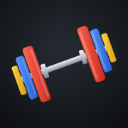

<!doctype html>
<html lang="fr">
<head>
<meta charset="utf-8">
<meta name="viewport" content="width=device-width,initial-scale=1,viewport-fit=cover">
<meta name="apple-mobile-web-app-capable" content="yes">
<meta name="mobile-web-app-capable" content="yes">
<meta name="apple-mobile-web-app-status-bar-style" content="black-translucent">
<meta name="apple-mobile-web-app-title" content="Fonte">
<meta name="theme-color" content="#F1F3F5" media="(prefers-color-scheme: light)">
<meta name="theme-color" content="#0E1012" media="(prefers-color-scheme: dark)">
<link rel="manifest" href="manifest.webmanifest">
<link rel="apple-touch-icon" href="apple-touch-icon.png?v=2">
<style>:root{color-scheme:light;box-sizing:border-box}[hidden]{display:none!important}img{max-width:100%}html{background:var(--surface)}html,body{height:100%;overscroll-behavior:none}body{background:var(--surface)}#app{position:fixed;top:0;left:0;right:0;bottom:0;height:var(--app-h,100%);background:var(--bg);padding-top:env(safe-area-inset-top,0px)}.tabbar{padding-bottom:max(4px,env(safe-area-inset-bottom,0px))}</style>
<title>Carnet de fonte</title>
<link rel="preconnect" href="https://fonts.googleapis.com">
<link rel="preconnect" href="https://fonts.gstatic.com" crossorigin>
<link rel="stylesheet" href="https://fonts.googleapis.com/css2?family=Barlow+Condensed:wght@500;600;700&family=Figtree:wght@400;500;600;700&display=swap">
<style>
/* Layout: app shell — scrolling view + bottom tab bar; séance, sélecteur d'exercices et fiches en feuilles plein écran. Plaques de compétition comme repères de couleur. */
:root{
  --bg:#F1F3F5; --surface:#FFFFFF; --raised:#E8EBEE; --fg:#14171A; --muted:#5F6871; --line:#D9DEE3;
  --accent:#C62F2A; --accent-ink:#FFFFFF; --accent-soft:#F7E2E0;
  --done:#E1F2E6; --done-ink:#1E7543; --warm:#A67600; --drop:#2A60C4; --fail:#C62F2A;
  --bar:#CDD3D9; --scrim:rgba(14,17,20,.45); --shadow:0 1px 2px rgba(20,24,28,.05),0 8px 24px rgba(20,24,28,.06);
  --f-display:"Barlow Condensed","Arial Narrow","Roboto Condensed",system-ui,sans-serif;
  --f-body:"Figtree",system-ui,-apple-system,"Segoe UI",Roboto,sans-serif;
}
@media (prefers-color-scheme:dark){:root:not([data-theme="light"]){
  --bg:#0E1012; --surface:#171A1E; --raised:#22262B; --fg:#ECEEF0; --muted:#8F98A1; --line:#2A2F35;
  --accent:#EE4B3F; --accent-ink:#FFFFFF; --accent-soft:#3A1D1B;
  --done:#14281C; --done-ink:#55C985; --warm:#E5AE22; --drop:#6A97F2; --fail:#EE4B3F;
  --bar:#353B42; --scrim:rgba(0,0,0,.62); --shadow:none; color-scheme:dark}}
:root[data-theme="dark"]{
  --bg:#0E1012; --surface:#171A1E; --raised:#22262B; --fg:#ECEEF0; --muted:#8F98A1; --line:#2A2F35;
  --accent:#EE4B3F; --accent-ink:#FFFFFF; --accent-soft:#3A1D1B;
  --done:#14281C; --done-ink:#55C985; --warm:#E5AE22; --drop:#6A97F2; --fail:#EE4B3F;
  --bar:#353B42; --scrim:rgba(0,0,0,.62); --shadow:none; color-scheme:dark}

*{box-sizing:border-box}
html{height:100%}
body{height:100%;margin:0;background:var(--bg);color:var(--fg);font:15px/1.45 var(--f-body);-webkit-tap-highlight-color:transparent;overflow:hidden;-webkit-font-smoothing:antialiased}
button{font:inherit;color:inherit;background:none;border:0;padding:0;cursor:pointer;text-align:inherit}
button:disabled{cursor:default;opacity:.5}
input,select,textarea{font:inherit;color:inherit}
:focus-visible{outline:2px solid var(--accent);outline-offset:2px}
svg.i{width:20px;height:20px;flex:none;fill:none;stroke:currentColor;stroke-width:2;stroke-linecap:round;stroke-linejoin:round}
.num{font-variant-numeric:tabular-nums}

#app{height:100%;display:flex;flex-direction:column}
.view{flex:1;overflow-y:auto;-webkit-overflow-scrolling:touch;overscroll-behavior:contain}
.wrap,.wrapx{max-width:640px;margin:0 auto;padding-left:max(16px,env(safe-area-inset-left,0px));padding-right:max(16px,env(safe-area-inset-right,0px))}
.wrap{padding-block:18px 32px;display:flex;flex-direction:column;gap:14px}

.vh{display:flex;align-items:flex-end;justify-content:space-between;gap:12px;padding-top:6px}
.eyebrow{margin:0;font-size:12px;font-weight:600;letter-spacing:.08em;text-transform:uppercase;color:var(--muted)}
h1{margin:0;font:700 38px/1 var(--f-display);text-transform:uppercase;letter-spacing:.01em;text-wrap:balance}
h2{margin:0;font:700 22px/1.1 var(--f-display);text-transform:uppercase;letter-spacing:.02em}
h3{margin:0;font:700 20px/1.15 var(--f-display);letter-spacing:.01em}
.sec-head{display:flex;align-items:center;justify-content:space-between;margin-top:10px}

.btn{display:inline-flex;align-items:center;justify-content:center;gap:8px;height:46px;padding:0 18px;border-radius:12px;font-weight:600;white-space:nowrap}
.btn.sm{height:38px;padding:0 14px;border-radius:10px;font-size:14px}
.btn.lg{height:54px;font-size:16px}
.btn.block{width:100%}
.btn-primary{background:var(--accent);color:var(--accent-ink)}
.btn-soft{background:var(--raised)}
.btn-danger{background:var(--accent-soft);color:var(--fail)}
.btn-ghost{display:inline-flex;align-items:center;gap:4px;color:var(--accent);font-weight:600;height:38px;padding:0 4px}
.btn-ghost.danger{color:var(--fail)}
.btn-ghost.block{width:100%;justify-content:center}
.icon-btn{width:38px;height:38px;display:grid;place-items:center;border-radius:10px;color:var(--muted)}
.icon-btn:active{background:var(--raised)}

.card{background:var(--surface);border:1px solid var(--line);border-radius:16px;padding:14px;box-shadow:var(--shadow)}

/* Tab bar */
.tabbar{display:flex;background:var(--surface);border-top:1px solid var(--line);padding-left:max(8px,env(safe-area-inset-left,0px));padding-right:max(8px,env(safe-area-inset-right,0px))}
.tab{flex:1;display:flex;flex-direction:column;align-items:center;gap:3px;padding:9px 0 7px;font-size:11px;font-weight:600;color:var(--muted);text-align:center}
.tab.on{color:var(--accent)}
.resume{display:flex;align-items:center;gap:10px;width:100%;background:var(--fg);color:var(--bg);padding-block:11px;padding-left:max(16px,env(safe-area-inset-left,0px));padding-right:max(16px,env(safe-area-inset-right,0px));font-weight:600}
.resume .dot{width:9px;height:9px;border-radius:50%;background:var(--accent);flex:none;animation:pulse 1.6s infinite}
.resume .rn{flex:1;min-width:0;overflow:hidden;text-overflow:ellipsis;white-space:nowrap;text-align:left}
.resume .go{color:var(--accent);font-weight:700}
@keyframes pulse{50%{opacity:.35}}

/* Séance */
.today-line{display:flex;gap:18px;flex-wrap:wrap}
.mini{display:flex;flex-direction:column}
.k{font-size:11px;font-weight:600;letter-spacing:.08em;text-transform:uppercase;color:var(--muted)}
.v{font:700 22px/1.15 var(--f-display);font-variant-numeric:tabular-nums}
.rgrid{display:grid;gap:10px;grid-template-columns:1fr}
@media (min-width:560px){.rgrid{grid-template-columns:1fr 1fr}}
.rcard{display:flex;flex-direction:column;gap:8px}
.rc-top{display:flex;align-items:flex-start;justify-content:space-between;gap:8px}
.rc-top h3{padding-top:6px;min-width:0;overflow-wrap:anywhere}
.rc-ex{margin:0;color:var(--muted);font-size:14px;display:-webkit-box;-webkit-line-clamp:2;-webkit-box-orient:vertical;overflow:hidden}
.rc-meta{font-size:12px;font-weight:600;color:var(--muted);letter-spacing:.04em;text-transform:uppercase}
.rcard .btn{margin-top:4px}
.empty{border:1.5px dashed var(--line);border-radius:16px;padding:22px 18px;text-align:center;color:var(--muted)}
.empty b{display:block;color:var(--fg);font:700 20px var(--f-display);margin-bottom:4px}
.plates{display:flex;gap:4px;justify-content:center;margin-bottom:10px}
.plates i{display:block;width:8px;border-radius:2px}

/* Lists */
.search{display:flex;align-items:center;gap:8px;height:44px;padding:0 12px;border-radius:12px;background:var(--raised);color:var(--muted)}
.search input{flex:1;min-width:0;border:0;background:none;outline:none;font-size:16px;color:var(--fg)}
.search input::-webkit-search-cancel-button{display:none}
.chips{display:flex;gap:6px;overflow-x:auto;scrollbar-width:none;margin:0 calc(-1 * max(16px,env(safe-area-inset-left,0px))) 0;padding:0 max(16px,env(safe-area-inset-left,0px))}
.chips::-webkit-scrollbar{display:none}
.chip{flex:none;height:34px;padding:0 13px;border-radius:999px;background:var(--raised);font-weight:600;font-size:13px;white-space:nowrap}
.chip.on{background:var(--fg);color:var(--bg)}
.sel{height:40px;border-radius:10px;border:1px solid var(--line);background:var(--surface);padding:0 10px;font-size:16px;max-width:100%}
.xi{display:flex;align-items:center;gap:12px;width:100%;padding:10px 0;border-bottom:1px solid var(--line);text-align:left}
.xi .xt{flex:1;min-width:0;display:flex;flex-direction:column}
.t{font-weight:600;overflow-wrap:anywhere}
.s{font-size:13px;color:var(--muted)}
.av{width:42px;height:42px;flex:none;border-radius:11px;background:var(--raised);display:grid;place-items:center;font:700 14px var(--f-display);letter-spacing:.04em;color:var(--accent)}
.av.sm{width:36px;height:36px;border-radius:10px;font-size:13px}
.tick{width:26px;height:26px;border-radius:50%;border:2px solid var(--line);display:grid;place-items:center;flex:none}
.tick.on{background:var(--accent);border-color:var(--accent);color:var(--accent-ink)}
.tick svg.i{width:16px;height:16px;stroke-width:3}
.xi > svg.i{color:var(--muted)}
.xi-main{flex:1;min-width:0;display:flex;align-items:center;gap:12px;text-align:left}
.av{position:relative;overflow:hidden}
.av img{position:absolute;inset:0;width:100%;height:100%;object-fit:cover;background:#fff}
.media-wrap{margin:0;display:flex;flex-direction:column;gap:4px}
.media{position:relative;border-radius:16px;overflow:hidden;background:var(--raised);aspect-ratio:3/2;width:100%;max-width:100%}
.media img{position:absolute;inset:0;width:100%;height:100%;object-fit:cover;background:#fff}
.media .f1{opacity:0;animation:swap 2.6s ease-in-out infinite}
@keyframes swap{0%,36%{opacity:0}50%,86%{opacity:1}100%{opacity:0}}
.media.split{aspect-ratio:auto;display:grid;grid-template-columns:1fr 1fr;gap:6px;background:none;border-radius:0;overflow:visible}
.media.split img{position:static;aspect-ratio:3/2;opacity:1;animation:none;border-radius:12px}
.media-wrap figcaption{display:flex;justify-content:space-between;align-items:center;gap:8px;flex-wrap:wrap}
.credit{font-size:11px;color:var(--muted)}
.how{display:flex;flex-direction:column;gap:10px}
.sschip{align-self:flex-start;font:700 11px var(--f-body);letter-spacing:.08em;text-transform:uppercase;color:var(--ssc);display:inline-flex;align-items:center;gap:6px}
.sschip::before{content:"";width:8px;height:8px;border-radius:2px;background:var(--ssc)}
.excard.ss{box-shadow:inset 4px 0 0 var(--ssc)}
.wkbar{display:flex;gap:3px;margin-top:5px}.wkbar i{display:block;width:16px;height:5px;border-radius:3px;background:var(--bar)}.wkbar i.on{background:var(--accent)}
.goals{display:flex;flex-direction:column;gap:8px}
.grow{display:flex;align-items:center;gap:12px;width:100%;text-align:left;padding:12px}
.gr-m{flex:1;min-width:0;display:flex;flex-direction:column;gap:6px}
.goal{display:flex;flex-direction:column;gap:6px}
.g-top{display:flex;justify-content:space-between;align-items:center;gap:8px;font-size:13px;font-weight:600;color:var(--muted)}
.g-top span{display:inline-flex;align-items:center;gap:5px}.g-top svg.i{width:15px;height:15px}
.g-top b{color:var(--fg)}
.g-track{height:8px;border-radius:999px;background:var(--raised);overflow:hidden}
.g-fill{height:100%;border-radius:999px;background:var(--accent)}
.goal.ok .g-fill{background:var(--done-ink)}.goal.ok .g-top span{color:var(--done-ink)}
.bodyc{display:flex;flex-direction:column;gap:10px}
.bc-top{display:flex;justify-content:space-between;align-items:flex-start;gap:10px}
.bc-open{text-align:left}
.bw-row{display:grid;grid-template-columns:1fr auto 38px;gap:10px;align-items:center;padding:6px 0;border-bottom:1px solid var(--line)}
.cal{display:flex;flex-direction:column;gap:10px}
.cal-h{display:flex;align-items:center;justify-content:space-between;gap:8px}
.cal-t{display:flex;flex-direction:column;align-items:center}
.cal-g{display:grid;grid-template-columns:repeat(7,1fr);gap:4px;text-align:center}
.cw{font-size:11px;font-weight:700;color:var(--muted);padding-bottom:2px}
.cd{aspect-ratio:1;max-width:100%;display:grid;place-items:center;border-radius:50%;font:600 15px var(--f-display);font-variant-numeric:tabular-nums;color:var(--muted)}
.cd.on{background:var(--accent);color:var(--accent-ink)}
.cd.td{box-shadow:inset 0 0 0 2px var(--fg);color:var(--fg)}
.cd.on.td{color:var(--accent-ink)}
.goalhit{background:var(--done)}.goalhit .prs-h{color:var(--done-ink)}
.slabel{position:relative}.slabel i{position:absolute;right:3px;bottom:2px;font:700 9px var(--f-body);font-style:normal;color:var(--muted)}
.rir{font-style:normal;font-size:12px;color:var(--muted);margin-left:4px}
.sugg{margin:0;display:flex;align-items:center;gap:6px;font-size:13px;font-weight:600;color:var(--done-ink)}.sugg svg.i{width:16px;height:16px}
.sugg.plat{color:var(--warm)}
.chr{font:700 72px/1 var(--f-display);text-align:center;font-variant-numeric:tabular-nums;padding:6px 0}
.chr.ok{color:var(--done-ink)}
.chr-track{height:6px;border-radius:3px;background:var(--raised);overflow:hidden}
.chr-fill{height:100%;background:var(--accent);transform:scaleX(0);transform-origin:left;transition:transform .25s linear}
.negc,.nextc{display:flex;flex-direction:column;gap:10px}
.negl{display:flex;flex-wrap:wrap;gap:6px}
.nextc{border-color:var(--accent)}
.plat-c{background:var(--surface);border:1px solid var(--line);border-left:4px solid var(--warm);border-radius:14px;padding:12px;display:flex;flex-direction:column;gap:4px}
.plat-c b{font:700 18px var(--f-display);text-transform:uppercase;color:var(--warm)}
.plat-c .dtext b{font:inherit;font-weight:700;text-transform:none;color:var(--fg)}
.pct{display:grid;grid-template-columns:repeat(4,1fr);gap:6px}
.pct > div{background:var(--raised);border-radius:10px;padding:8px 6px;display:flex;flex-direction:column;align-items:center;font-variant-numeric:tabular-nums}
.pct .k{font-size:12px;color:var(--muted);font-weight:600}.pct .v{font:700 17px var(--f-display)}
.pl-in{display:grid;grid-template-columns:minmax(0,1fr) minmax(0,1fr);gap:10px}.pl-in .fld{min-width:0}.pl-in select,.pl-in input{width:100%;min-width:0}
.pl-vis{display:flex;align-items:center;height:84px;gap:2px;padding:0 6px;overflow:hidden}
.pl-bar{width:70px;height:10px;border-radius:3px;background:var(--muted);flex:none}
.pl{width:14px;border-radius:4px;flex:none}.pl-end{width:20px;height:10px;background:var(--muted);border-radius:0 3px 3px 0;flex:none}
.pl-txt{margin:0;font-size:15px}
.msc{display:flex;flex-direction:column;gap:10px}
.mbars{display:flex;flex-direction:column;gap:6px}
.mrow{display:grid;grid-template-columns:88px 1fr 28px;gap:8px;align-items:center;font-size:13px}
.mn{font-weight:600;white-space:nowrap;overflow:hidden;text-overflow:ellipsis}
.mrow b{text-align:right}
.mt{position:relative;height:12px;border-radius:6px;background:var(--raised);overflow:hidden}
.mband{position:absolute;top:0;bottom:0;background:var(--line);opacity:.9}
.mf{position:absolute;left:0;top:0;bottom:0;border-radius:6px;z-index:1}
.z1 .mf,.lg.z1{background:var(--warm)}.z2 .mf,.lg.z2{background:var(--done-ink)}.z3 .mf,.lg.z3{background:var(--drop)}
.z0 .mn,.z0 b{color:var(--muted)}
.mleg{margin:0;font-size:12px;color:var(--muted);line-height:1.6}.lg{display:inline-block;width:10px;height:10px;border-radius:3px;margin:0 4px 0 6px;vertical-align:-1px}
.mgrid{display:grid;grid-template-columns:repeat(auto-fill,minmax(96px,1fr));gap:8px}
.mcell{display:flex;flex-direction:column;align-items:flex-start;background:var(--raised);border-radius:12px;padding:10px;text-align:left}
.mcell .v{font-size:20px}.s.pos{color:var(--done-ink)}.s.neg{color:var(--warm)}
.bkp{background:var(--accent-soft);border-radius:16px;padding:14px;display:flex;flex-direction:column;gap:10px}
.bkp p{margin:0;font-size:14px;line-height:1.45}.bkp b{display:block;font:700 18px var(--f-display);text-transform:uppercase;color:var(--accent)}
.shimg{width:100%;border-radius:12px;display:block}
.inst-top{display:flex;gap:12px;align-items:flex-start}.inst-ic{width:56px;height:56px;border-radius:13px;flex:none}
.inst{margin:0;padding:0;list-style:none;display:flex;flex-direction:column;gap:10px}
.inst li{display:flex;align-items:center;gap:12px;font-size:15px;line-height:1.35}
.ib{width:40px;height:40px;flex:none;border-radius:10px;background:var(--raised);display:grid;place-items:center;color:var(--drop)}
.inst-ok{color:var(--done-ink)}
.srow.pr{box-shadow:inset 0 0 0 2px var(--warm)}
.srow{transition:transform .18s}.srow.swiping{transition:none;position:relative}.srow.arm{background:var(--accent-soft)!important}
.excard{transition:transform .18s}.excard.dragging{transition:none;z-index:5;position:relative;box-shadow:0 12px 30px rgba(0,0,0,.25)}
.grip{touch-action:none;cursor:grab}
#prfx{position:fixed;inset:0;z-index:90;pointer-events:none;transition:opacity .45s}#prfx.out{opacity:0}
#prfx canvas{position:absolute;inset:0;width:100%;height:100%}
.prbanner{position:absolute;left:50%;top:calc(18% + env(safe-area-inset-top,0px));transform:translateX(-50%);width:min(92%,380px);display:flex;gap:14px;align-items:center;background:var(--surface);border:2px solid var(--warm);border-radius:20px;padding:16px 18px;box-shadow:0 20px 50px rgba(0,0,0,.35);animation:pop .5s cubic-bezier(.2,1.6,.4,1)}
.prbanner b{display:block;font:700 26px/1 var(--f-display);text-transform:uppercase;color:var(--warm)}
.prbanner span span{display:block;font-weight:700;margin-top:4px}.prbanner em{display:block;font-style:normal;color:var(--muted);font-size:14px;font-variant-numeric:tabular-nums}
.prb-ic{width:52px;height:52px;flex:none;border-radius:50%;background:var(--warm);color:#fff;display:grid;place-items:center}.prb-ic svg.i{width:28px;height:28px}
@keyframes pop{from{transform:translateX(-50%) scale(.6);opacity:0}}
.prevnote{margin:0;display:flex;gap:8px;align-items:flex-start;font-size:14px;color:var(--muted);background:var(--raised);border-radius:12px;padding:10px 12px}.prevnote svg.i{width:17px;height:17px;flex:none;margin-top:1px}.prevnote b{color:var(--fg)}
.wnote{border-bottom:1px solid var(--line)}
.rcell{display:flex;flex-direction:column;gap:2px;background:var(--surface);border:1px solid var(--line);border-radius:14px;padding:12px;text-align:left;min-width:0}.rcell .k{overflow:hidden;text-overflow:ellipsis;white-space:nowrap}
.rmain{white-space:nowrap;font-size:15px}
.stats{display:flex;flex-direction:column;gap:12px}.sec-in{display:flex;justify-content:space-between;align-items:baseline;gap:8px}.sth{font:700 20px var(--f-display);text-transform:uppercase}
.stg{display:grid;grid-template-columns:repeat(3,minmax(0,1fr));gap:10px 12px}.stg>div{display:flex;flex-direction:column;min-width:0}.stg .v{font-size:20px}
.prog{display:flex;flex-direction:column;gap:10px}.pg-r{display:flex;flex-direction:column;font-size:13px;gap:2px}.pg-r span{color:var(--muted)}
.toast-act{margin-left:12px;color:var(--accent);font-weight:700;background:none;border:0}
.howl{margin:0;padding:0;list-style:none;counter-reset:st;display:flex;flex-direction:column;gap:10px}
.howl li{counter-increment:st;display:grid;grid-template-columns:28px 1fr;gap:10px;align-items:start;line-height:1.45;max-width:65ch}
.howl li::before{content:counter(st);width:28px;height:28px;border-radius:50%;background:var(--accent-soft);color:var(--accent);display:grid;place-items:center;font:700 16px var(--f-display)}
.tip{margin:0;background:var(--raised);border-radius:12px;padding:12px 14px;display:flex;flex-direction:column;gap:2px;font-size:14px;line-height:1.45}
.tip b{font:700 13px var(--f-body);letter-spacing:.08em;text-transform:uppercase;color:var(--accent)}
.count-line{font-size:13px;color:var(--muted);padding:6px 0 2px}

/* Sheets */
.sheet{position:fixed;inset:0;z-index:20;background:var(--bg);display:flex;flex-direction:column;padding-top:env(safe-area-inset-top,0px);animation:rise .22s ease-out}
#picker{z-index:30}#detail{z-index:40}
@keyframes rise{from{transform:translateY(18px);opacity:.4}}
.sheet-head{display:flex;align-items:center;justify-content:space-between;gap:8px;min-height:56px;background:var(--surface);border-bottom:1px solid var(--line);padding-left:max(12px,env(safe-area-inset-left,0px));padding-right:max(12px,env(safe-area-inset-right,0px))}
.sh-title{font:700 18px var(--f-display);text-transform:uppercase;letter-spacing:.03em;text-align:center;flex:1;min-width:0;overflow:hidden;text-overflow:ellipsis;white-space:nowrap}
.sheet-body{flex:1;overflow-y:auto;-webkit-overflow-scrolling:touch;overscroll-behavior:contain}
.pk-tools{display:flex;flex-direction:column;gap:10px;padding-block:12px 8px;background:var(--surface);border-bottom:1px solid var(--line);max-width:none}
.pk-tools > *{width:100%;max-width:608px;margin-inline:auto}
.pk-foot{padding-top:10px;padding-bottom:calc(10px + env(safe-area-inset-bottom,0px));padding-left:max(16px,env(safe-area-inset-left,0px));padding-right:max(16px,env(safe-area-inset-right,0px));background:var(--surface);border-top:1px solid var(--line)}
.pk-foot .btn{max-width:608px;margin:0 auto;display:flex}

/* Editor */
.ed-clock{display:flex;align-items:center;gap:6px;font:700 20px var(--f-display);font-variant-numeric:tabular-nums}
.ed-clock svg.i{width:18px;height:18px;color:var(--accent)}
.ed-wrap{display:flex;flex-direction:column;gap:14px;padding-block:16px 140px}
.ed-name{border:0;background:none;outline:none;font:700 30px/1.05 var(--f-display);text-transform:uppercase;width:100%;padding:0;color:var(--fg)}
.ed-name::placeholder{color:var(--muted)}
.ed-stats{display:flex;gap:24px;flex-wrap:wrap;padding-bottom:4px;border-bottom:1px solid var(--line);padding-bottom:12px}
.ed-stats > div{display:flex;flex-direction:column}
.excard{background:var(--surface);border:1px solid var(--line);border-radius:16px;padding:12px;display:flex;flex-direction:column;gap:8px}
.ex-head{display:flex;align-items:center;gap:6px}
.ex-name{flex:1;min-width:0;display:flex;align-items:center;gap:10px;text-align:left}
.ex-name .t{color:var(--accent);font-size:16px;line-height:1.25}
.ex-name > span:last-child{display:flex;flex-direction:column;min-width:0}
.ex-note{width:100%;border:0;background:none;resize:none;outline:none;font-size:16px;color:var(--fg);padding:2px 0;line-height:1.35}
.ex-note::placeholder{color:var(--muted)}
.ex-rest{display:inline-flex;align-items:center;gap:6px;color:var(--accent);font-weight:600;font-size:14px;align-self:flex-start}
.ex-rest svg.i{width:17px;height:17px}
.ex-rest select{border:0;background:none;color:var(--accent);font-weight:700;font-size:16px;padding:2px 0;outline:none}
.sets{display:flex;flex-direction:column;gap:3px}
.srow{display:grid;grid-template-columns:38px minmax(0,1fr) 68px 58px 42px;gap:6px;align-items:center;border-radius:9px;padding:3px}
.srow.r{grid-template-columns:38px minmax(0,1fr) minmax(0,1fr)}
.shead{font-size:11px;font-weight:700;letter-spacing:.08em;text-transform:uppercase;color:var(--muted);padding-block:0}
.shead span{text-align:center}.shead span:nth-child(2){text-align:left}
.srow.r.shead span:nth-child(2){text-align:center}
.shead .c{display:grid;place-items:center}.shead svg.i{width:15px;height:15px}
.slabel{height:36px;border-radius:9px;background:var(--raised);font:700 17px var(--f-display);text-align:center}
.slabel.w{color:var(--warm)}.slabel.d{color:var(--drop)}.slabel.f{color:var(--fail)}
.prev{font:500 15px var(--f-display);color:var(--muted);white-space:nowrap;overflow:hidden;text-overflow:ellipsis;text-align:left;height:36px;font-variant-numeric:tabular-nums}
.sin{width:100%;height:36px;border-radius:9px;border:0;background:var(--raised);text-align:center;font:600 18px var(--f-display);font-variant-numeric:tabular-nums;padding:0 4px;outline:none;color:var(--fg)}
.sin:focus{box-shadow:inset 0 0 0 2px var(--accent)}
.sin::placeholder{color:var(--muted);opacity:.75}
.chk{height:36px;border-radius:9px;background:var(--raised);display:grid;place-items:center;color:var(--muted)}
.chk svg.i{stroke-width:3}
.srow.done{background:var(--done)}
.srow.done .sin,.srow.done .slabel{background:transparent}
.srow.done .chk{background:var(--done-ink);color:var(--surface)}
.shake{animation:shake .32s}
@keyframes shake{20%,60%{transform:translateX(-5px)}40%,80%{transform:translateX(5px)}}

/* Rest bar */
.restbar{position:fixed;left:0;right:0;bottom:0;z-index:35;background:var(--surface);border-top:1px solid var(--line);padding-top:0;padding-bottom:calc(10px + env(safe-area-inset-bottom,0px));padding-left:max(16px,env(safe-area-inset-left,0px));padding-right:max(16px,env(safe-area-inset-right,0px));box-shadow:0 -8px 24px rgba(0,0,0,.08)}
.rb-track{height:4px;background:var(--raised);margin:0 calc(-1 * max(16px,env(safe-area-inset-left,0px))) 10px}
.rb-fill{height:100%;background:var(--accent);transform-origin:left;transition:transform .25s linear}
.rb-row{display:flex;align-items:center;gap:8px;max-width:608px;margin:0 auto}
.rb-time{flex:1;display:flex;flex-direction:column;align-items:center}
.rb-time span:last-child{font:700 28px/1 var(--f-display);font-variant-numeric:tabular-nums}

/* Dialog */
#dlg{position:fixed;inset:0;z-index:60}
.scrim{position:absolute;inset:0;background:var(--scrim);animation:fade .18s}
@keyframes fade{from{opacity:0}}
.dlg{position:absolute;left:0;right:0;bottom:0;max-width:520px;margin:0 auto;background:var(--surface);border-radius:20px 20px 0 0;padding:20px max(18px,env(safe-area-inset-left,0px)) calc(16px + env(safe-area-inset-bottom,0px));max-height:88%;overflow-y:auto;display:flex;flex-direction:column;gap:12px;animation:rise .2s ease-out}
.dtitle{margin:0;font:700 24px/1.1 var(--f-display);text-transform:uppercase}
.dtext{margin:0;color:var(--muted)}
.dbtns{display:flex;flex-direction:column;gap:8px;margin-top:4px}
.dbtns.k-sheet{gap:0;margin-top:0}
.sh-item{height:52px;border-bottom:1px solid var(--line);font-weight:600;font-size:16px;text-align:left}
.sh-item.danger{color:var(--fail)}
.sh-item.cancel{border:0;color:var(--muted);text-align:center}
.fld{display:flex;flex-direction:column;gap:5px;font-size:13px;font-weight:600;color:var(--muted)}
.fld input,.fld select{height:46px;border-radius:11px;border:1px solid var(--line);background:var(--bg);padding:0 12px;font-size:16px;font-weight:500;color:var(--fg);outline:none}
.fld input:focus,.fld select:focus{border-color:var(--accent)}
.fld{min-width:0}
.fld input,.fld select{display:block;width:100%;min-width:0;max-width:100%;-webkit-appearance:none;appearance:none;line-height:44px}
.fld input[type="date"]{text-align:left;padding-right:12px}
.fld input[type="date"]::-webkit-date-and-time-value{text-align:left;margin:0}
.fld input[type="date"]::-webkit-calendar-picker-indicator{opacity:.6}
.fld select{background-image:linear-gradient(45deg,transparent 50%,var(--muted) 50%),linear-gradient(135deg,var(--muted) 50%,transparent 50%);background-position:calc(100% - 18px) 50%,calc(100% - 13px) 50%;background-size:5px 5px;background-repeat:no-repeat;padding-right:34px}
.dlg{overflow-x:hidden}
.fld-row{display:grid;grid-template-columns:minmax(0,1fr) minmax(0,1fr);gap:10px}
.ta{width:100%;border-radius:11px;border:1px solid var(--line);background:var(--bg);padding:10px;font:13px/1.4 ui-monospace,Menlo,monospace;color:var(--fg);resize:vertical}
.derr{margin:0;color:var(--fail);font-weight:600;font-size:14px}
.sum{display:grid;grid-template-columns:repeat(3,1fr);gap:8px}
.sum > div{background:var(--raised);border-radius:12px;padding:10px;display:flex;flex-direction:column}
.prs{background:var(--accent-soft);border-radius:12px;padding:12px}
.prs-h{margin:0 0 6px;display:flex;align-items:center;gap:6px;font:700 18px var(--f-display);text-transform:uppercase;color:var(--accent)}
.prs ul{margin:0;padding:0;list-style:none;display:flex;flex-direction:column;gap:4px}
.prs li{display:flex;justify-content:space-between;gap:10px;font-size:14px}
.prs li span{min-width:0;overflow-wrap:anywhere}
.prs li b{white-space:nowrap;font-variant-numeric:tabular-nums}

/* History */
.wk{display:flex;flex-direction:column;gap:10px}
.wk-stats{display:flex;gap:22px;flex-wrap:wrap}
.chart{width:100%;height:auto;display:block;overflow:visible}
.chart .b-on{fill:var(--accent)}.chart .b-off{fill:var(--bar)}
.chart .tx{fill:var(--muted);font:500 10px var(--f-body)}
.chart .tv{fill:var(--fg);font:700 12px var(--f-display)}
.chart .grid{stroke:var(--line);stroke-width:1}
.chart .ln{fill:none;stroke:var(--accent);stroke-width:2.2;stroke-linejoin:round;stroke-linecap:round}
.chart .ar{fill:var(--accent);opacity:.12}
.chart .pt{fill:var(--surface);stroke:var(--accent);stroke-width:2}
.chart .pt.end{fill:var(--accent)}
.month{font:700 14px var(--f-body);letter-spacing:.08em;text-transform:uppercase;color:var(--muted);margin-top:8px}
.hcard{display:flex;flex-direction:column;gap:8px;width:100%;text-align:left}
.hc-top{display:flex;justify-content:space-between;gap:10px;align-items:baseline}
.hc-date{font-size:13px;color:var(--muted);white-space:nowrap}
.hc-stats{display:flex;gap:14px;flex-wrap:wrap;font-size:13px;color:var(--muted);font-weight:600}
.hc-stats span{display:inline-flex;align-items:center;gap:4px}
.hc-stats svg.i{width:15px;height:15px}
.hc-stats .pr{color:var(--accent)}
.hc-ex{margin:0;padding:0;list-style:none;font-size:14px;display:flex;flex-direction:column;gap:2px}
.hc-ex b{font-variant-numeric:tabular-nums;color:var(--muted);font-weight:600;margin-right:4px}

/* Detail */
.dwrap{display:flex;flex-direction:column;gap:14px;padding-top:18px;padding-bottom:calc(40px + env(safe-area-inset-bottom,0px))}
.tags{display:flex;gap:6px;flex-wrap:wrap}
.tag{font-size:12px;font-weight:700;letter-spacing:.05em;text-transform:uppercase;background:var(--raised);border-radius:999px;padding:4px 10px;color:var(--muted)}
.rec{display:grid;grid-template-columns:1fr 1fr;gap:8px}
.rec > div{background:var(--surface);border:1px solid var(--line);border-radius:14px;padding:12px;display:flex;flex-direction:column;gap:2px}
.rec .sub{font-size:12px;color:var(--muted)}
.slist{display:flex;flex-direction:column;gap:3px}
.sline{display:grid;grid-template-columns:28px 1fr auto;gap:8px;align-items:baseline;font-variant-numeric:tabular-nums;font-size:15px}
.sline .l{font:700 15px var(--f-display);color:var(--muted);text-align:center}
.sline .l.w{color:var(--warm)}.sline .l.d{color:var(--drop)}.sline .l.f{color:var(--fail)}
.sline .e{font-size:12px;color:var(--muted)}
.dsec{display:flex;flex-direction:column;gap:8px}
.dex{display:flex;flex-direction:column;gap:6px;padding:12px 0;border-bottom:1px solid var(--line)}
.dex-h{display:flex;justify-content:space-between;align-items:baseline;gap:10px}
.dex-h .t{color:var(--accent)}
.muted{color:var(--muted)}
.note-txt{margin:0;font-size:14px;color:var(--muted);font-style:italic}

/* Settings */
.setc{display:flex;flex-direction:column;gap:12px}
.setrow{display:flex;align-items:center;justify-content:space-between;gap:12px}
.setrow > span{min-width:0}
.toggle{width:52px;height:32px;border-radius:999px;background:var(--raised);position:relative;flex:none;transition:background .15s}
.toggle::after{content:"";position:absolute;top:3px;left:3px;width:26px;height:26px;border-radius:50%;background:var(--surface);box-shadow:0 1px 3px rgba(0,0,0,.25);transition:transform .15s}
.toggle.on{background:var(--done-ink)}
.toggle.on::after{transform:translateX(20px)}
.btnrow{display:flex;gap:8px;flex-wrap:wrap}
.btnrow .btn{flex:1 1 140px}
.steps{margin:0;padding-left:20px;display:flex;flex-direction:column;gap:4px;color:var(--muted)}
.steps b{color:var(--fg)}
.okline{display:flex;align-items:center;gap:8px;color:var(--done-ink);font-weight:600}

#toast{width:max-content;text-align:center;position:fixed;left:50%;top:calc(12px + env(safe-area-inset-top,0px));transform:translateX(-50%);z-index:80;background:var(--fg);color:var(--bg);font-weight:600;padding:10px 16px;border-radius:999px;font-size:14px;box-shadow:0 6px 20px rgba(0,0,0,.2);max-width:calc(100% - 32px)}
#toast.show{animation:toast 2.2s ease forwards}
@keyframes toast{0%{opacity:0;transform:translate(-50%,-8px)}10%,85%{opacity:1;transform:translate(-50%,0)}100%{opacity:0}}

@media (prefers-reduced-motion:reduce){*,*::before,*::after{animation:none!important;transition:none!important}}
</style>

</head>
<body>
<div id="app">
  <main class="view" id="main"></main>
  <div id="resume" hidden></div>
  <nav class="tabbar" id="tabbar" aria-label="Navigation"></nav>
</div>
<div id="ed" class="sheet" hidden></div>
<div id="picker" class="sheet" hidden></div>
<div id="detail" class="sheet" hidden></div>
<div id="restbar" class="restbar" hidden></div>
<div id="dlg" hidden></div>
<div id="toast" role="status" hidden></div>
<input type="file" id="fileIn" accept="application/json,.json,text/plain" hidden>
<input type="file" id="hevyIn" accept=".csv,text/csv,text/plain,text/comma-separated-values" hidden>

<script>
'use strict';
/* ================= Annuaire d'exercices ================= */
const RAW=`# Pectoraux
Développé couché barre|Barre
Développé couché haltères|Haltères
Développé incliné barre|Barre
Développé incliné haltères|Haltères
Développé décliné barre|Barre
Développé décliné haltères|Haltères
Développé couché Smith|Smith
Développé incliné Smith|Smith
Développé couché machine|Machine
Développé incliné machine|Machine
Presse pectorale convergente|Machine
Développé sol (floor press)|Barre
Développé couché unilatéral haltère|Haltères
Squeeze press|Haltères
Écarté couché haltères|Haltères
Écarté incliné haltères|Haltères
Écarté poulie vis-à-vis haute|Poulie
Écarté poulie vis-à-vis basse|Poulie
Écarté poulie vis-à-vis milieu|Poulie
Écarté incliné poulie|Poulie
Pec deck (butterfly)|Machine
Pull-over haltère|Haltères
Svend press|Autre
Pompes|Poids du corps
Pompes inclinées|Poids du corps
Pompes déclinées|Poids du corps
Pompes lestées|Poids du corps
Pompes sur anneaux|Poids du corps
Dips buste penché (pectoraux)|Poids du corps
# Dos
Tractions pronation|Poids du corps
Tractions supination|Poids du corps
Tractions prise neutre|Poids du corps
Tractions prise large|Poids du corps
Tractions assistées machine|Machine
Tirage vertical prise large|Poulie
Tirage vertical prise serrée|Poulie
Tirage vertical supination|Poulie
Tirage vertical unilatéral|Poulie
Tirage vertical machine|Machine
Tirage bras tendus poulie|Poulie
Pull-over poulie|Poulie
Rowing barre buste penché|Barre
Rowing Yates (supination)|Barre
Rowing Pendlay|Barre
Rowing T-bar|Barre
Rowing T-bar machine|Machine
Seal row|Barre
Meadows row|Barre
Rowing haltère unilatéral|Haltères
Rowing haltères buste penché|Haltères
Rowing poitrine appuyée haltères|Haltères
Rowing Kroc|Haltères
Rowing assis poulie prise serrée|Poulie
Rowing assis poulie prise large|Poulie
Rowing unilatéral poulie|Poulie
Rowing machine convergente|Machine
High row machine|Machine
Rowing inversé|Poids du corps
Soulevé de terre|Barre
Soulevé de terre sumo|Barre
Soulevé de terre trap bar|Autre
Rack pull|Barre
# Épaules
Développé militaire debout|Barre
Développé militaire assis|Barre
Développé haltères assis|Haltères
Développé haltères debout|Haltères
Développé Arnold|Haltères
Développé épaules machine|Machine
Développé épaules Smith|Smith
Z press|Barre
Push press|Barre
Landmine press|Barre
Élévations latérales haltères|Haltères
Élévations latérales assis|Haltères
Élévations latérales poulie|Poulie
Élévations latérales machine|Machine
Élévations latérales élastique|Élastique
Élévations latérales penché sur banc|Haltères
Élévations frontales haltères|Haltères
Élévations frontales disque|Autre
Élévations frontales poulie|Poulie
Oiseau haltères|Haltères
Oiseau poulie|Poulie
Reverse pec deck|Machine
Face pull|Poulie
Rowing menton barre|Barre
Rowing menton poulie|Poulie
Y-raise banc incliné|Haltères
Cuban press|Haltères
Pompes piquées (pike push-up)|Poids du corps
Pompes en équilibre (handstand push-up)|Poids du corps
# Trapèzes
Shrug barre|Barre
Shrug haltères|Haltères
Shrug machine|Machine
Shrug trap bar|Autre
Shrug poulie|Poulie
Shrug Smith|Smith
# Biceps
Curl barre droite|Barre
Curl barre EZ|Barre EZ
Curl haltères alterné|Haltères
Curl haltères simultané|Haltères
Curl marteau|Haltères
Curl marteau corde|Poulie
Curl incliné haltères|Haltères
Curl pupitre barre EZ (Larry Scott)|Barre EZ
Curl pupitre haltère|Haltères
Curl pupitre machine|Machine
Curl concentré|Haltères
Curl poulie basse|Poulie
Curl poulie haute (double biceps)|Poulie
Curl bayésien (poulie derrière)|Poulie
Curl araignée (spider curl)|Barre EZ
Curl Zottman|Haltères
Curl drag|Barre
Curl 21|Barre
Curl kettlebell|Kettlebell
Curl élastique|Élastique
Curl machine|Machine
# Triceps
Développé couché prise serrée|Barre
Barre au front (skull crusher)|Barre EZ
Barre au front haltères|Haltères
Extension nuque haltère|Haltères
Extension nuque barre EZ|Barre EZ
Extension au-dessus de la tête poulie|Poulie
Extension triceps poulie barre|Poulie
Extension triceps corde|Poulie
Extension triceps unilatérale poulie|Poulie
Extension triceps machine|Machine
Kickback haltère|Haltères
Kickback poulie|Poulie
JM press|Barre
Tate press|Haltères
Dips|Poids du corps
Dips entre deux bancs|Poids du corps
Dips machine|Machine
Pompes diamant|Poids du corps
# Avant-bras
Curl poignets barre|Barre
Curl poignets inversé|Barre
Curl poignets haltère|Haltères
Curl inversé barre EZ|Barre EZ
Rouleau de poignet|Autre
Suspension à la barre (dead hang)|Poids du corps|t
Pince disque (plate pinch)|Autre|t
# Abdos
Crunch|Poids du corps
Crunch poulie|Poulie
Crunch machine|Machine
Crunch décliné|Poids du corps
Crunch inversé|Poids du corps
Sit-up|Poids du corps
Bicycle crunch|Poids du corps
Relevés de jambes suspendu|Poids du corps
Relevés de genoux suspendu|Poids du corps
Relevés de jambes chaise romaine|Poids du corps
Relevés de jambes au sol|Poids du corps
Toes to bar|Poids du corps
V-up|Poids du corps
Dragon flag|Poids du corps
Essuie-glaces (windshield wipers)|Poids du corps
Roue abdominale|Autre|b
Russian twist|Poids du corps
Mountain climbers|Poids du corps
Dead bug|Poids du corps
Planche (gainage)|Poids du corps|t
Gainage latéral|Poids du corps|t
Hollow hold|Poids du corps|t
L-sit|Poids du corps|t
Woodchopper poulie|Poulie
Pallof press|Poulie
# Lombaires
Extension lombaire banc 45°|Poids du corps
Extension lombaire machine|Machine
Hyperextension inversée|Machine
Superman|Poids du corps
Good morning|Barre
# Quadriceps
Squat barre haute|Barre
Squat barre basse|Barre
Front squat|Barre
Squat pause|Barre
Box squat|Barre
Zercher squat|Barre
Squat Smith|Smith
Hack squat|Machine
Pendulum squat|Machine
V-squat|Machine
Belt squat|Machine
Presse à cuisses|Machine
Presse à cuisses unilatérale|Machine
Leg extension|Machine
Leg extension unilatéral|Machine
Squat goblet haltère|Haltères
Squat goblet kettlebell|Kettlebell
Fentes avant haltères|Haltères
Fentes arrière haltères|Haltères
Fentes marchées haltères|Haltères
Fentes barre|Barre
Fentes Smith|Smith
Fente latérale|Haltères
Squat bulgare haltères|Haltères
Squat bulgare Smith|Smith
Step-up haltères|Haltères
Sissy squat|Poids du corps
Squat poids du corps|Poids du corps
Squat sauté|Poids du corps
Pistol squat|Poids du corps
Chaise contre le mur|Poids du corps|t
# Ischios
Soulevé de terre roumain barre|Barre
Soulevé de terre roumain haltères|Haltères
Soulevé de terre roumain unilatéral|Haltères
Soulevé de terre jambes tendues|Barre
Leg curl allongé|Machine
Leg curl assis|Machine
Leg curl debout unilatéral|Machine
Leg curl haltère|Haltères
Nordic curl|Poids du corps
Glute-ham raise|Poids du corps
Leg curl swiss ball|Poids du corps
# Fessiers
Hip thrust barre|Barre
Hip thrust machine|Machine
Hip thrust Smith|Smith
Hip thrust unilatéral|Poids du corps
Pont fessier|Poids du corps
Pont fessier barre|Barre
Kickback fessier poulie|Poulie
Kickback fessier machine|Machine
Abduction machine|Machine
Abduction poulie|Poulie
Abduction élastique|Élastique
Pull-through poulie|Poulie
Extension de hanche 45° (fessiers)|Poids du corps
Frog pump|Poids du corps
Marche latérale élastique|Élastique
# Adducteurs
Adduction machine|Machine
Adduction poulie|Poulie
Squat sumo haltère|Haltères
Squat sumo barre|Barre
Planche Copenhague|Poids du corps|t
# Mollets
Mollets debout machine|Machine
Mollets assis machine|Machine
Mollets à la presse|Machine
Mollets Smith|Smith
Mollets donkey|Machine
Mollets unilatéral haltère|Haltères
Mollets poids du corps|Poids du corps
Releveurs (tibial raise)|Autre
# Corps entier
Épaulé (power clean)|Barre
Hang clean|Barre
Épaulé-jeté|Barre
Arraché|Barre
Thruster barre|Barre
Thruster haltères|Haltères
Clean & press haltères|Haltères
Man maker|Haltères
Swing kettlebell|Kettlebell
Snatch kettlebell|Kettlebell
Turkish get-up|Kettlebell
Wall ball|Autre
Burpees|Poids du corps
Farmer walk|Haltères|t
Poussée de traîneau|Autre|t
# Cardio
Tapis de course|Machine
Course à pied extérieur|Autre
Marche inclinée tapis|Machine
Vélo stationnaire|Machine
Vélo extérieur|Autre
Rameur|Machine
Elliptique|Machine
Stairmaster|Machine
Assault bike|Machine
SkiErg|Machine
Natation|Autre
Corde à sauter|Autre|t
# Pectoraux
Développé couché prise large|Barre|w
# Pectoraux
Développé couché powerlifting|Barre|w
# Pectoraux
Développé guillotine|Barre|w
# Pectoraux
Développé décliné prise large|Barre|w
# Pectoraux
Développé décliné Smith|Smith|w
# Pectoraux
Développé décliné machine|Machine|w
# Pectoraux
Développé haltères prise neutre|Haltères|w
# Pectoraux
Développé incliné haltères prise neutre|Haltères|w
# Triceps
Développé haltères sol|Haltères|w
# Pectoraux
Développé poulie couché|Poulie|w
# Pectoraux
Développé poulie debout|Poulie|w
# Pectoraux
Développé incliné poulie|Poulie|w
# Pectoraux
Écarté couché poulie|Poulie|w
# Pectoraux
Écarté décliné haltères|Haltères|w
# Pectoraux
Écarté incliné haltères avec rotation|Haltères|w
# Pectoraux
Écarté unilatéral haltère|Haltères|w
# Pectoraux
Écarté poulie unilatéral|Poulie|w
# Pectoraux
Écarté élastique|Élastique|w
# Pectoraux
Croix de fer poulie|Poulie|w
# Pectoraux
Pull-over bras fléchis haltère|Haltères|w
# Dos
Pull-over barre bras fléchis|Barre|w
# Pectoraux
Pull-over décliné barre|Barre|w
# Pectoraux
Tour du monde haltères|Haltères|w
# Pectoraux
Pompes prise large|Poids du corps|b
# Pectoraux
Pompes pieds surélevés|Poids du corps|b
# Pectoraux
Pompes pieds sur swiss ball|Poids du corps|b
# Pectoraux
Pompes horloge|Poids du corps|b
# Pectoraux
Pompes pliométriques|Poids du corps|b
# Pectoraux
Pompes un bras|Poids du corps|b
# Pectoraux
Pompes vers gainage latéral|Poids du corps|b
# Pectoraux
Pompes larges et serrées|Poids du corps|b
# Triceps
Pompes inclinées prise serrée|Poids du corps|b
# Pectoraux
Pompes inclinées prise large|Poids du corps|b
# Triceps
Pompes sur haltère prise serrée|Poids du corps|b
# Pectoraux
Pompes en suspension|Poids du corps|b
# Triceps
Dips aux barres parallèles|Poids du corps|b
# Triceps
Dips aux anneaux|Poids du corps|b
# Triceps
Dips lestés entre bancs|Poids du corps|b
# Dos
Tractions lestées|Poids du corps|b
# Dos
Tractions élastique|Élastique|b
# Dos
Tractions prise mixte|Poids du corps|b
# Dos
Tractions un bras|Poids du corps|b
# Dos
Tractions latérales|Poids du corps|b
# Dos
Tractions Gironda|Poids du corps|b
# Dos
Tractions nuque|Poids du corps|b
# Dos
Muscle-up|Poids du corps|b
# Dos
Tractions scapulaires|Poids du corps|b
# Dos
Montée à la corde|Autre|b
# Dos
Tirage vertical prise en V|Poulie|w
# Dos
Tirage vertical nuque|Poulie|w
# Dos
Tirage vertical amplitude complète|Poulie|w
# Dos
Tirage à genoux poulie haute|Poulie|w
# Dos
Tirage unilatéral à genoux|Poulie|w
# Dos
Tirage bras tendus incliné|Poulie|w
# Dos
Rowing poulie surélevé|Poulie|w
# Dos
Rowing unilatéral poulie (shotgun)|Poulie|w
# Dos
Rowing T-bar poignée|Barre|w
# Dos
Rowing barre unilatéral|Barre|w
# Dos
Rowing haltères prise neutre|Haltères|w
# Dos
Rowing Smith|Smith|w
# Dos
Rowing banc incliné barre|Barre|w
# Dos
Rowing allongé banc plat barre|Barre|w
# Dos
Rowing kettlebell unilatéral|Kettlebell|w
# Dos
Rowing kettlebells alterné|Kettlebell|w
# Dos
Renegade row|Kettlebell|w
# Dos
Rowing deux kettlebells|Kettlebell|w
# Dos
Rowing inversé sangles|Poids du corps|b
# Dos
Rowing inversé poids du corps|Poids du corps|b
# Dos
Shrug milieu du dos|Haltères|w
# Dos
Rowing traîneau|Autre|w
# Dos
Soulevé de terre déficit|Barre|w
# Quadriceps
Soulevé de terre machine|Machine|w
# Quadriceps
Soulevé de terre poulie|Poulie|w
# Ischios
Soulevé de terre roumain déficit|Barre|w
# Ischios
Soulevé de terre jambes tendues Smith|Smith|w
# Ischios
Soulevé de terre sumo élastiques|Barre|w
# Lombaires
Soulevé de terre chaînes|Barre|w
# Lombaires
Good morning assis|Barre|w
# Lombaires
Good morning jambes tendues|Barre|w
# Ischios
Good morning élastique|Élastique|w
# Lombaires
Hyperextension au sol|Poids du corps|b
# Lombaires
Hyperextension swiss ball|Poids du corps|b
# Épaules
Développé militaire barre|Barre|w
# Épaules
Développé nuque|Barre|w
# Épaules
Développé Bradford|Barre|w
# Épaules
Développé haltères unilatéral|Haltères|w
# Épaules
Développé haltères alterné|Haltères|w
# Épaules
Développé épaules haltères prise neutre|Haltères|w
# Épaules
Développé épaules machine convergente|Machine|w
# Épaules
Développé épaules poulie|Poulie|w
# Épaules
Développé épaules poulie assis|Poulie|w
# Épaules
Développé épaules élastique|Élastique|w
# Épaules
Développé kettlebell|Kettlebell|w
# Épaules
Développé kettlebell alterné|Kettlebell|w
# Épaules
Développé Arnold kettlebell|Kettlebell|w
# Épaules
Développé kettlebell assis|Kettlebell|w
# Épaules
Push press kettlebell|Kettlebell|w
# Épaules
Jerk kettlebells|Kettlebell|w
# Épaules
Élévations latérales poulie assis|Poulie|w
# Épaules
Élévations latérales penché poulie|Poulie|w
# Épaules
Élévations latérales un bras|Haltères|w
# Épaules
Élévations latérales allongé|Haltères|w
# Épaules
Élévations latérales alternées|Haltères|w
# Épaules
Élévations latérales vers frontales|Haltères|w
# Épaules
Scaption haltères|Haltères|w
# Épaules
Élévations frontales deux haltères|Haltères|w
# Épaules
Élévations frontales inclinées|Haltères|w
# Épaules
Élévations frontales un haltère|Haltères|w
# Épaules
Élévations frontales barre au-dessus|Barre|w
# Épaules
Élévation haltère au-dessus de la tête|Haltères|w
# Épaules
Élévations bras tendus banc incliné|Barre|w
# Épaules
Oiseau allongé haltères|Haltères|w
# Épaules
Oiseau allongé unilatéral|Haltères|w
# Épaules
Oiseau tête sur banc|Haltères|w
# Épaules
Oiseau allongé banc|Haltères|w
# Épaules
Oiseau debout|Haltères|w
# Épaules
Oiseau avec rotation externe|Haltères|w
# Épaules
Oiseau élastique|Élastique|w
# Épaules
Écartement élastique (band pull-apart)|Élastique|b
# Épaules
Rowing poulie vers le visage corde|Poulie|w
# Épaules
Rowing poulie vers le cou|Poulie|w
# Épaules
Rowing arrière d'épaule barre|Barre|w
# Épaules
Rotation externe haltère|Haltères|w
# Épaules
Rotation externe poulie|Poulie|w
# Épaules
Rotation externe élastique|Élastique|w
# Épaules
Rotation interne poulie|Poulie|w
# Épaules
Rowing menton haltères|Haltères|w
# Trapèzes
Rowing menton Smith|Smith|w
# Trapèzes
Rowing menton élastique|Élastique|w
# Épaules
Halo kettlebell|Kettlebell|w
# Épaules
Battle ropes|Autre|t
# Trapèzes
Shrug barre derrière le dos|Barre|w
# Trapèzes
Shrug machine à mollets|Machine|w
# Trapèzes
Tirage haut kettlebell sumo|Kettlebell|w
# Biceps
Curl marteau alterné|Haltères|w
# Biceps
Curl marteau croisé|Haltères|w
# Biceps
Curl marteau incliné|Haltères|w
# Biceps
Curl marteau pupitre|Haltères|w
# Biceps
Curl incliné alterné|Haltères|w
# Biceps
Curl incliné intérieur|Haltères|w
# Biceps
Curl assis haltères|Haltères|w
# Biceps
Curl assis intérieur|Haltères|w
# Biceps
Curl debout intérieur|Haltères|w
# Biceps
Curl concentré debout|Haltères|w
# Biceps
Curl penché banc incliné|Haltères|w
# Biceps
Curl allongé haltères|Haltères|w
# Biceps
Curl araignée haltères|Haltères|w
# Biceps
Curl pupitre deux haltères|Haltères|w
# Biceps
Curl Zottman pupitre|Haltères|w
# Biceps
Curl barre EZ prise serrée|Barre EZ|w
# Biceps
Curl barre prise serrée|Barre|w
# Biceps
Curl barre prise large|Barre|w
# Biceps
Curl barre incliné|Barre|w
# Biceps
Curl barre allongé banc haut|Barre|w
# Biceps
Curl concentré barre|Barre|w
# Avant-bras
Curl pupitre inversé|Barre EZ|w
# Biceps
Curl pupitre poulie|Poulie|w
# Biceps
Curl poulie unilatéral|Poulie|w
# Biceps
Curl poulie au-dessus de la tête|Poulie|w
# Biceps
Curl poulie allongé|Poulie|w
# Biceps
Curl poulie haute allongé|Poulie|w
# Avant-bras
Curl inversé poulie|Poulie|w
# Avant-bras
Curl inversé haltères|Haltères|w
# Avant-bras
Curl inversé disque|Autre|w
# Biceps
Curl flexion incliné|Haltères|w
# Biceps
Curl barre EZ élastique|Barre EZ|w
# Triceps
Extension triceps barre V|Poulie|w
# Triceps
Extension triceps prise inversée|Poulie|w
# Triceps
Extension triceps corde nuque|Poulie|w
# Triceps
Extension triceps poulie basse|Poulie|w
# Triceps
Extension triceps poulie unilatérale basse|Poulie|w
# Triceps
Extension triceps poulie à genoux|Poulie|w
# Triceps
Extension triceps poulie allongé|Poulie|w
# Triceps
Extension triceps poulie inclinée|Poulie|w
# Triceps
Extension triceps haltère unilatérale|Haltères|w
# Triceps
Extension triceps haltère couché un bras|Haltères|w
# Triceps
Extension triceps haltère supination|Haltères|w
# Triceps
Extension triceps haltères prise pronation|Haltères|w
# Triceps
Extension triceps haltère assis|Haltères|w
# Triceps
Extension triceps décliné haltères|Haltères|w
# Triceps
Extension triceps décliné barre EZ|Barre EZ|w
# Triceps
Extension triceps inclinée barre|Barre|w
# Triceps
Extension triceps penché haltère|Haltères|w
# Triceps
Extension triceps penché deux haltères|Haltères|w
# Triceps
Extension triceps kettlebell|Kettlebell|w
# Triceps
Extension triceps élastique|Élastique|w
# Triceps
Barre au front prise serrée allongé|Barre|w
# Triceps
Barre au front vers le menton|Barre EZ|w
# Triceps
Barre au front décliné|Barre|w
# Triceps
Barre au front élastique|Élastique|w
# Triceps
Extension triceps allongé barre EZ|Barre EZ|w
# Triceps
Développé serré barre EZ|Barre EZ|w
# Triceps
Développé serré Smith|Smith|w
# Triceps
Développé inversé|Barre|w
# Triceps
Développé sol unilatéral|Barre|w
# Triceps
Board press|Barre|w
# Triceps
Pin press|Barre|w
# Triceps
Extension triceps serviette|Poids du corps|b
# Triceps
Body-up|Poids du corps|b
# Avant-bras
Curl doigts barre|Barre|w
# Avant-bras
Curl poignets poulie|Poulie|w
# Avant-bras
Curl poignets derrière le dos|Barre|w
# Avant-bras
Curl poignets inversé haltère|Haltères|w
# Avant-bras
Pronation haltère|Haltères|w
# Avant-bras
Supination haltère|Haltères|w
# Avant-bras
Rotation poignets barre|Barre|w
# Avant-bras
Pince disque olympique|Autre|t
# Abdos
Crunch mains au-dessus|Poids du corps|b
# Abdos
Crunch jambes sur ballon|Poids du corps|b
# Abdos
Crunch swiss ball|Poids du corps|b
# Abdos
Crunch lesté|Poids du corps|b
# Abdos
Crunch oblique|Poids du corps|b
# Abdos
Crunch oblique au sol|Poids du corps|b
# Abdos
Crunch oblique décliné|Poids du corps|b
# Abdos
Crunch croisé|Poids du corps|b
# Abdos
Crunch inversé décliné|Poids du corps|b
# Abdos
Crunch inversé poulie|Poulie|w
# Abdos
Crunch poulie assis|Poulie|w
# Abdos
Crunch corde debout|Poulie|w
# Abdos
Crunch corde à genoux|Poulie|w
# Abdos
Crunch poulie avec rotation|Poulie|w
# Abdos
Crunch genoux groupés|Poids du corps|b
# Abdos
Cocons|Poids du corps|b
# Abdos
Crunch grenouille|Poids du corps|b
# Abdos
Sit-up Janda|Poids du corps|b
# Abdos
Sit-up 3/4|Poids du corps|b
# Abdos
Sit-up avec développé|Barre|w
# Abdos
Sit-up élastique|Élastique|b
# Abdos
Jackknife latéral|Poids du corps|b
# Abdos
Coude au genou|Poids du corps|b
# Abdos
Touchers de talons|Poids du corps|b
# Abdos
Relevés de bassin genoux pliés|Poids du corps|b
# Abdos
Relevés de genoux sur banc|Poids du corps|b
# Abdos
Relevés de genoux assis|Poids du corps|b
# Abdos
Ramené de genoux au sol|Poids du corps|b
# Abdos
Ramené de genoux swiss ball|Poids du corps|b
# Abdos
Relevés de jambes battements|Poids du corps|b
# Abdos
Bottoms up|Poids du corps|b
# Abdos
Butt-ups|Poids du corps|b
# Abdos
Roue abdominale barre|Barre|b
# Abdos
Roue abdominale barre à genoux|Barre|b
# Abdos
Fallout sangles|Autre|b
# Abdos
Crunch inversé sangles|Autre|b
# Abdos
Torsion disque|Autre|b
# Abdos
Torsion barre assis|Barre|b
# Abdos
Russian twist poulie|Poulie|w
# Abdos
Pallof press avec rotation|Poulie|w
# Abdos
Tirage poulie basse vers haut|Poulie|w
# Abdos
Judo flip poulie|Poulie|w
# Abdos
Flexion latérale haltère|Haltères|w
# Abdos
Flexion latérale barre|Barre|w
# Abdos
Flexion latérale poulie haute|Poulie|w
# Abdos
Moulin kettlebell|Kettlebell|w
# Abdos
Huit kettlebell|Kettlebell|w
# Abdos
Lancer médecine-ball au sol|Autre|b
# Dos
Slam médecine-ball|Autre|b
# Abdos
Spider crawl|Poids du corps|b
# Abdos
Coups de masse|Autre|b
# Quadriceps
Squat barre sur banc|Barre|w
# Quadriceps
Front squat sur banc|Barre|w
# Quadriceps
Front squat prise olympique|Barre|w
# Quadriceps
Front squat kettlebells|Kettlebell|w
# Quadriceps
Squat haltères|Haltères|w
# Quadriceps
Squat haltères sur banc|Haltères|w
# Quadriceps
Squat pieds serrés|Barre|w
# Quadriceps
Squat olympique|Barre|w
# Quadriceps
Overhead squat|Barre|w
# Quadriceps
Squat une jambe barre|Barre|w
# Quadriceps
Hack squat barre|Barre|w
# Quadriceps
Hack squat pieds serrés|Machine|w
# Quadriceps
Presse à cuisses pieds serrés|Machine|w
# Quadriceps
Presse Smith|Smith|w
# Quadriceps
Squat machine allongé|Machine|w
# Quadriceps
Squat chaise machine|Machine|w
# Quadriceps
Pistol squat Smith|Smith|w
# Quadriceps
Squat une jambe sur box|Poids du corps|b
# Quadriceps
Fentes marchées barre|Barre|w
# Quadriceps
Fentes marchées poids du corps|Poids du corps|b
# Quadriceps
Fente arrière surélevée|Barre|w
# Fessiers
Fente croisée arrière|Haltères|w
# Quadriceps
Step-up barre|Barre|w
# Fessiers
Step-up avec montée de genou|Poids du corps|b
# Quadriceps
Squat sauté lesté|Barre|w
# Quadriceps
Squat élastique|Élastique|w
# Quadriceps
Squat ceinture lestée|Autre|w
# Quadriceps
Box jump|Poids du corps|b
# Quadriceps
Saut en longueur|Poids du corps|b
# Quadriceps
Sauts groupés|Poids du corps|b
# Quadriceps
Fentes sautées|Poids du corps|b
# Quadriceps
Star jump|Poids du corps|b
# Ischios
Leg curl élastique assis|Élastique|w
# Ischios
Glissés ischios|Autre|b
# Ischios
Glute-ham au sol|Poids du corps|b
# Ischios
Good morning barre suspendue|Barre|w
# Fessiers
Pont fessier swiss ball|Poids du corps|b
# Fessiers
Kickback fessier au sol|Poids du corps|b
# Fessiers
Relevés de jambe arrière|Poids du corps|b
# Fessiers
Extension de hanche élastique|Élastique|w
# Fessiers
Pont fessier élastique|Élastique|w
# Adducteurs
Adduction élastique|Élastique|w
# Mollets
Mollets debout barre|Barre|w
# Mollets
Mollets assis barre|Barre|w
# Mollets
Mollets machine presse|Machine|w
# Mollets
Mollets sur haltère|Haltères|w
# Mollets
Mollets assis un haltère|Haltères|w
# Mollets
Mollets élastique|Élastique|w
# Mollets
Mollets en balancier|Barre|w
# Corps entier
Épaulé complet|Barre|w
# Corps entier
Épaulé haltère|Haltères|w
# Corps entier
Épaulé-développé barre|Barre|w
# Corps entier
Arraché force|Barre|w
# Corps entier
Hang snatch|Barre|w
# Épaules
Jeté force|Barre|w
# Épaules
Jeté fendu|Barre|w
# Corps entier
Muscle snatch|Barre|w
# Corps entier
Tirage d'épaulé|Barre|w
# Corps entier
Tirage d'arraché|Barre|w
# Corps entier
Swing kettlebell un bras|Kettlebell|w
# Corps entier
Épaulé kettlebell|Kettlebell|w
# Corps entier
Épaulé deux kettlebells|Kettlebell|w
# Corps entier
Thruster kettlebell|Kettlebell|w
# Quadriceps
Squat kettlebell bras tendu|Kettlebell|w
# Corps entier
Pneu retourné|Autre|b
# Corps entier
Yoke walk|Autre|t
# Cardio
Prowler sprint|Autre|t
# Corps entier
Traîneau tiré harnais|Autre|t
# Cardio
Vélo couché|Machine|c
# Cardio
Jogging tapis|Machine|c
# Cardio
Escalier mécanique|Machine|c
# Cardio
Trail / randonnée|Autre|c
# Cardio
Patin à roulettes|Autre|c
# Trapèzes
Shrug d'épaulé|Barre
Shrug d'arraché|Barre
Cou isométrique avant et arrière|Poids du corps|t
Cou isométrique latéral|Poids du corps|t
Flexion de nuque avec disque|Autre
Extension de nuque avec disque|Autre
Extension de nuque harnais|Autre
# Avant-bras
Curl poignets sur banc barre|Barre
Curl poignets inversé sur banc barre|Barre
Curl poignet unilatéral haltère|Haltères
Suspension à un bras|Poids du corps|t
Pince à main (hand gripper)|Autre|b
# Lombaires
Pont avec bascule du bassin|Poids du corps
Soulevé de terre élastiques|Barre
Bird dog|Poids du corps
Jefferson curl|Haltères
# Ischios
Good morning sur butées|Barre
Pull-through élastique|Élastique
Soulevé de terre jambes tendues pieds écartés|Barre
Pont ischios une jambe|Poids du corps
Soulevé de terre roumain kettlebell|Kettlebell
# Fessiers
Squat à genoux|Barre
Hip thrust haltère|Haltères
Kas glute bridge|Barre
Fire hydrant|Poids du corps
Clamshell élastique|Élastique
# Adducteurs
Cossack squat|Poids du corps
Adduction allongé sur le côté|Poids du corps
Planche Copenhague genoux|Poids du corps|t
Squat sumo kettlebell|Kettlebell
Bonds latéraux|Poids du corps|b
# Mollets
Planche d'équilibre|Autre|t
Mollets sautillés (pogo jumps)|Poids du corps|b
Mollets unilatéral sur marche|Poids du corps|b
Releveurs au mur (tibialis raise)|Poids du corps|b
# Corps entier
Pierres d'Atlas|Autre
Épaulé kettlebell depuis le sol|Kettlebell
Hang clean kettlebell|Kettlebell
Soulevé de terre d'épaulé|Barre
Chargement de sac de sable|Autre
Bear crawl|Poids du corps|t
# Épaules
Rotation interne élastique|Élastique
# Abdos
Vide abdominal (stomach vacuum)|Poids du corps|t
# Mobilité
Étirement ischios 90/90|Poids du corps
Étirement mollet au mur|Poids du corps
Étirement soléaire et tendon d'Achille|Poids du corps
Étirement quadriceps allongé (sangle)|Élastique
Étirement fléchisseurs de hanche à genou|Poids du corps
Étirement piriforme (cheville sur genou)|Poids du corps
Étirement adducteurs allongé sur le côté|Poids du corps
Posture de l'enfant|Poids du corps
Chat-vache|Poids du corps
Genoux à la poitrine|Poids du corps
World's greatest stretch|Poids du corps
Inchworm (chenille)|Poids du corps|b
Étirement pectoraux et épaules au bâton|Autre
Étirement grand dorsal au mur|Poids du corps
Étirement triceps|Poids du corps
Étirement épaule bras croisé|Poids du corps
Étirement avant-bras à genoux|Poids du corps
Étirement latéral du cou|Poids du corps
Cercles de bras|Poids du corps|b
Cercles de hanche debout|Poids du corps|b
Balancier de jambe latéral|Poids du corps|b
Rouleau mollets|Autre
Rouleau ischios|Autre
Rouleau quadriceps|Autre
Rouleau bandelette ilio-tibiale|Autre
Rouleau fessiers|Autre
Rouleau grand dorsal|Autre
Rouleau haut du dos|Autre
# Pectoraux
Développé prise large machine (wide chest press)|Machine
Développé machine unilatéral (chest press)|Machine
# Dos
Low row machine (rowing bas)|Machine
Upper back machine (rowing haut du dos)|Machine
Vertical traction machine (tirage vertical guidé)|Machine
Pull-over machine|Machine
# Triceps
Dips assistés machine|Machine|b
# Abdos
Rotation du buste machine (rotary torso)|Machine
Total abdominal machine|Machine
# Fessiers
Multi hip : extension de hanche|Machine
Multi hip : abduction debout|Machine
# Adducteurs
Multi hip : adduction debout|Machine
# Quadriceps
Multi hip : flexion de hanche|Machine
Presse à cuisses horizontale|Machine
# Cardio
Tapis non motorisé incurvé (Skillmill)|Machine
Vélo de biking (cours collectif)|Machine
Ergomètre bras (Excite Top)|Machine
Stepper (Excite Climb)|Machine`;

/* Descriptions FR + photos (Free Exercise DB, domaine public) */
const INFO={"developpe-couche-barre":{"img":"Barbell_Bench_Press_-_Medium_Grip","s":["Allonge-toi sur le banc, omoplates serrées, pieds bien à plat, mains un peu plus larges que les épaules","Descends la barre en contrôle jusqu'au bas des pectoraux, coudes à environ 45° du buste","Pousse la barre jusqu'à bras tendus en expirant"],"tip":"Garde les fessiers sur le banc et une légère cambrure : les épaules restent protégées."},"developpe-couche-halteres":{"img":"Dumbbell_Bench_Press","s":["Allongé, haltères à hauteur de poitrine, omoplates serrées","Pousse les haltères vers le haut en les rapprochant légèrement","Redescends lentement jusqu'à sentir l'étirement des pectoraux"],"tip":"Les haltères permettent de descendre plus bas qu'avec la barre, mais arrête-toi avant toute gêne à l'épaule."},"developpe-incline-barre":{"img":"Barbell_Incline_Bench_Press_-_Medium_Grip","s":["Banc incliné à 30-45°, prise un peu plus large que les épaules","Descends la barre vers le haut des pectoraux","Pousse jusqu'à bras tendus sans décoller le dos"],"tip":"Plus le banc est incliné, plus les épaules travaillent : 30° cible bien le haut des pecs."},"developpe-incline-halteres":{"img":"Incline_Dumbbell_Press","s":["Banc incliné à 30-45°, haltères au niveau du haut de la poitrine","Pousse vers le haut en rapprochant les haltères","Redescends en 2 à 3 secondes"],"tip":"Garde les poignets alignés au-dessus des coudes tout au long du mouvement."},"developpe-decline-barre":{"img":"Decline_Barbell_Bench_Press","s":["Allongé sur le banc décliné, jambes bloquées sous les boudins","Descends la barre vers le bas des pectoraux","Pousse jusqu'à bras tendus"],"tip":"Fais-toi aider pour sortir et ranger la barre, la position rend le rack difficile d'accès."},"developpe-decline-halteres":{"img":"Decline_Dumbbell_Bench_Press","s":["Installé sur le banc décliné, haltères à hauteur du bas de la poitrine","Pousse les haltères vers le haut","Redescends lentement en gardant les coudes légèrement fléchis vers le buste"],"tip":"Monte les haltères un par un en position avant de commencer."},"developpe-couche-smith":{"img":"Smith_Machine_Bench_Press","s":["Place le banc pour que la barre arrive au-dessus du bas des pectoraux","Déverrouille la barre et descends-la jusqu'à la poitrine","Pousse jusqu'à bras tendus"],"tip":"La trajectoire est guidée : idéal pour pousser lourd sans pareur."},"developpe-incline-smith":{"img":"Smith_Machine_Incline_Bench_Press","s":["Banc incliné à 30° sous la barre guidée","Descends la barre vers le haut des pectoraux","Pousse jusqu'à bras tendus"],"tip":"Vérifie la position du banc à vide avant de charger."},"developpe-couche-machine":{"img":"Machine_Bench_Press","s":["Règle le siège pour que les poignées soient au niveau du milieu de la poitrine","Pousse les poignées jusqu'à bras presque tendus","Reviens lentement sans laisser les charges se toucher"],"tip":"Garde les omoplates collées au dossier tout du long."},"developpe-incline-machine":{"img":"Leverage_Incline_Chest_Press","s":["Assis, dos contre le dossier, poignées à hauteur du haut de la poitrine","Pousse vers le haut et l'avant","Reviens en contrôle jusqu'à l'étirement"],"tip":"Bon exercice pour finir une séance pecs en sécurité, même à l'échec."},"presse-pectorale-convergente":{"img":"Leverage_Chest_Press","s":["Règle le siège, poignées à hauteur de poitrine","Pousse les poignées : elles se rapprochent en fin de mouvement","Reviens lentement jusqu'à l'étirement"],"tip":"Serre les pectoraux une seconde en fin de poussée."},"developpe-sol-floor-press":{"img":"Floor_Press","s":["Allongé au sol sous la barre, genoux pliés","Descends la barre jusqu'à ce que les coudes touchent le sol","Marque une pause puis pousse jusqu'à bras tendus"],"tip":"L'amplitude réduite cible le verrouillage et les triceps, en ménageant les épaules."},"developpe-couche-unilateral-haltere":{"img":"One_Arm_Dumbbell_Bench_Press","s":["Allongé, un seul haltère à hauteur de poitrine, l'autre main sur le banc","Pousse l'haltère vers le haut sans laisser le bassin tourner","Redescends lentement puis change de côté"],"tip":"Gaine fort les abdos : ton tronc doit résister à la rotation."},"squeeze-press":{"img":"Close-Grip_Dumbbell_Press","s":["Allongé, haltères collés l'un contre l'autre au-dessus de la poitrine, paumes face à face","Descends-les en les pressant fort l'un contre l'autre","Remonte en gardant la pression"],"tip":"Plus tu serres les haltères, plus les pectoraux travaillent : la charge reste légère."},"ecarte-couche-halteres":{"img":"Dumbbell_Flyes","s":["Allongé, haltères au-dessus de la poitrine, coudes légèrement fléchis","Ouvre les bras en arc de cercle jusqu'à l'étirement des pecs","Referme en gardant le même angle de coude"],"tip":"Pense à « serrer un arbre » : les coudes ne doivent ni plier ni tendre pendant la série."},"ecarte-incline-halteres":{"img":"Incline_Dumbbell_Flyes","s":["Banc à 30°, haltères au-dessus du haut de la poitrine","Ouvre les bras en arc de cercle, coudes légèrement fléchis","Referme jusqu'à ce que les haltères se rejoignent"],"tip":"Descends juste au niveau des épaules, pas plus bas."},"ecarte-poulie-vis-a-vis-haute":{"img":"Cable_Crossover","s":["Poulies en position haute, un pas en avant, buste légèrement penché","Ramène les poignées vers le bas et l'avant jusqu'à ce qu'elles se croisent","Remonte lentement en contrôle"],"tip":"Cible surtout le bas des pectoraux."},"ecarte-poulie-vis-a-vis-basse":{"img":"Low_Cable_Crossover","s":["Poulies en position basse, un pas en avant","Monte les poignées vers l'avant et le haut jusqu'à hauteur du menton","Redescends lentement"],"tip":"Cible surtout le haut des pectoraux."},"ecarte-poulie-vis-a-vis-milieu":{"img":"Cable_Crossover","s":["Poulies à hauteur d'épaules, un pas en avant","Ramène les poignées devant la poitrine en arc de cercle","Reviens lentement jusqu'à l'étirement"],"tip":"Garde les coudes légèrement fléchis et fixes."},"ecarte-incline-poulie":{"img":"Incline_Cable_Flye","s":["Banc incliné entre deux poulies basses, poignées au-dessus de la poitrine","Ouvre les bras en arc de cercle","Referme au-dessus du haut des pecs"],"tip":"La tension reste constante sur toute l'amplitude, contrairement aux haltères."},"pec-deck-butterfly":{"img":"Butterfly","s":["Règle le siège : poignées à hauteur de poitrine","Ramène les bras devant toi jusqu'à ce que les poignées se touchent","Reviens lentement sans relâcher la tension"],"tip":"Reste collé au dossier, ne pousse pas avec les épaules."},"pull-over-haltere":{"img":"Straight-Arm_Dumbbell_Pullover","s":["Allongé sur le banc, un haltère tenu à deux mains au-dessus de la poitrine","Descends-le derrière la tête, bras quasi tendus","Ramène-le au-dessus de la poitrine"],"tip":"Descends seulement jusqu'à un étirement confortable des dorsaux et pectoraux."},"svend-press":{"img":"Svend_Press","s":["Debout, un ou deux disques pressés entre les paumes devant la poitrine","Pousse les disques devant toi en continuant de les serrer","Ramène-les à la poitrine"],"tip":"Charge légère : c'est la pression des mains qui fait travailler les pecs."},"pompes":{"img":"Pushups","s":["Mains un peu plus larges que les épaules, corps gainé de la tête aux talons","Descends la poitrine près du sol, coudes à 45°","Pousse jusqu'à bras tendus"],"tip":"Si c'est trop dur, fais-les sur les genoux ou mains surélevées."},"pompes-inclinees":{"img":"Incline_Push-Up","s":["Mains sur un banc ou une barre, corps gainé","Descends la poitrine vers le support","Pousse jusqu'à bras tendus"],"tip":"Plus le support est haut, plus c'est facile : parfait pour progresser vers les pompes au sol."},"pompes-declinees":{"img":"Decline_Push-Up","s":["Pieds sur un banc, mains au sol","Descends la poitrine vers le sol en gardant le corps droit","Pousse jusqu'à bras tendus"],"tip":"Version plus difficile qui insiste sur le haut des pectoraux."},"pompes-lestees":{"img":"Pushups","s":["Pompe classique avec un disque posé sur le haut du dos ou un gilet lesté","Descends la poitrine près du sol","Pousse jusqu'à bras tendus"],"tip":"Note le lest dans la colonne +kg."},"pompes-sur-anneaux":{"img":"Suspended_Push-Up","s":["Mains sur les anneaux ou sangles, corps gainé","Descends en gardant les anneaux stables près du buste","Pousse et tourne légèrement les paumes vers l'extérieur en haut"],"tip":"L'instabilité recrute énormément les stabilisateurs : commence anneaux assez hauts."},"dips-buste-penche-pectoraux":{"img":"Dips_-_Chest_Version","s":["Aux barres parallèles, bras tendus","Penche le buste vers l'avant et descends, coudes légèrement écartés","Remonte jusqu'à bras tendus"],"tip":"Descends jusqu'à ce que les épaules soient au niveau des coudes, pas plus bas si ça tire."},"tractions-pronation":{"img":"Pullups","s":["Suspendu à la barre, mains en pronation un peu plus larges que les épaules","Tire en ramenant les coudes vers les hanches jusqu'à passer le menton au-dessus de la barre","Redescends jusqu'à bras tendus"],"tip":"Commence chaque rep en abaissant les épaules, sans balancer les jambes."},"tractions-supination":{"img":"Chin-Up","s":["Suspendu, paumes vers toi, mains à largeur d'épaules","Tire jusqu'à passer le menton au-dessus de la barre","Redescends en contrôle"],"tip":"Version qui sollicite davantage les biceps, souvent plus facile au début."},"tractions-prise-neutre":{"img":"V-Bar_Pullup","s":["Suspendu aux poignées parallèles, paumes face à face","Tire jusqu'au menton au-dessus des poignées","Redescends jusqu'à bras tendus"],"tip":"La prise la plus confortable pour les coudes et les épaules."},"tractions-prise-large":{"img":"Pullups","s":["Mains en pronation nettement plus larges que les épaules","Tire la poitrine vers la barre en ouvrant les coudes","Redescends lentement"],"tip":"Amplitude plus courte mais forte sollicitation du haut du dos."},"tractions-assistees-machine":{"img":null,"s":["Règle le contrepoids : plus il est lourd, plus tu es aidé","Genoux sur la plateforme, tire jusqu'au menton au-dessus de la barre","Redescends lentement"],"tip":"Note le poids d'assistance : quand il baisse, tu progresses."},"tirage-vertical-prise-large":{"img":"Wide-Grip_Lat_Pulldown","s":["Assis, cuisses bloquées, mains larges sur la barre","Tire la barre vers le haut de la poitrine en ramenant les coudes vers le bas","Remonte lentement jusqu'à l'étirement"],"tip":"Ne te penche pas trop en arrière et ne tire pas avec les bras seulement."},"tirage-vertical-prise-serree":{"img":"Close-Grip_Front_Lat_Pulldown","s":["Poignée triangle ou prise serrée, cuisses bloquées","Tire vers le haut de la poitrine, coudes le long du corps","Remonte en contrôle jusqu'à bras tendus"],"tip":"Sors la poitrine vers la poignée en fin de tirage."},"tirage-vertical-supination":{"img":"Underhand_Cable_Pulldowns","s":["Barre en supination, mains à largeur d'épaules","Tire la barre vers le haut de la poitrine","Remonte lentement"],"tip":"Bonne alternative aux tractions supination."},"tirage-vertical-unilateral":{"img":"One_Arm_Lat_Pulldown","s":["Une poignée à la poulie haute, assis ou à genoux","Tire le coude vers la hanche","Remonte en laissant l'épaule s'étirer"],"tip":"Pratique pour corriger un déséquilibre gauche-droite."},"tirage-vertical-machine":{"img":null,"s":["Règle le siège, cuisses bloquées, saisis les poignées","Tire vers le bas en ramenant les coudes vers les hanches","Remonte lentement jusqu'à l'étirement"],"tip":"Garde le buste fixe : ce sont les dorsaux qui travaillent."},"tirage-bras-tendus-poulie":{"img":"Straight-Arm_Pulldown","s":["Debout face à la poulie haute, barre en main, bras tendus","Descends la barre jusqu'aux cuisses en gardant les bras tendus","Remonte lentement"],"tip":"Isole très bien les dorsaux : garde une légère flexion des coudes."},"pull-over-poulie":{"img":"Rope_Straight-Arm_Pulldown","s":["Corde à la poulie haute, buste légèrement penché","Ramène la corde vers les cuisses bras tendus en écartant les extrémités","Remonte en contrôle"],"tip":"Pense à pousser avec les coudes plutôt qu'avec les mains."},"rowing-barre-buste-penche":{"img":"Bent_Over_Barbell_Row","s":["Buste penché à 45° ou plus, dos plat, barre bras tendus","Tire la barre vers le nombril en serrant les omoplates","Redescends en contrôle"],"tip":"Dos neutre obligatoire : si tu t'arrondis, allège."},"rowing-yates-supination":{"img":"Reverse_Grip_Bent-Over_Rows","s":["Buste penché vers 30°, barre en supination","Tire la barre vers le bas du ventre","Redescends lentement"],"tip":"Plus redressé que le rowing classique : permet de charger lourd, sollicite aussi les biceps."},"rowing-pendlay":{"img":"Bent_Over_Barbell_Row","s":["Buste parallèle au sol, barre posée au sol","Tire explosivement la barre jusqu'au bas de la poitrine","Repose-la au sol à chaque répétition"],"tip":"Chaque rep repart de l'arrêt : pas d'élan avec les jambes."},"rowing-t-bar":{"img":"Bent_Over_Two-Arm_Long_Bar_Row","s":["À cheval sur la barre, poignée en V sous le disque, dos plat","Tire la charge vers la poitrine","Redescends en contrôle"],"tip":"Garde les genoux fléchis et le dos neutre."},"rowing-t-bar-machine":{"img":"Lying_T-Bar_Row","s":["Allongé poitrine contre le support, poignées en main","Tire les coudes vers l'arrière en serrant les omoplates","Redescends lentement"],"tip":"Le support protège le bas du dos : idéal pour charger."},"seal-row":{"img":"Lying_Cambered_Barbell_Row","s":["Allongé à plat ventre sur un banc haut, barre sous toi","Tire la barre vers le banc","Redescends jusqu'à bras tendus"],"tip":"Aucune triche possible : le dos travaille seul."},"meadows-row":{"img":"One-Arm_Long_Bar_Row","s":["Debout de côté par rapport à une barre calée dans un coin, saisis le bout en pronation","Tire le coude vers le haut et l'arrière","Redescends en laissant l'épaule s'étirer"],"tip":"Utilise des sangles si la prise lâche avant le dos."},"rowing-haltere-unilateral":{"img":"One-Arm_Dumbbell_Row","s":["Main et genou sur un banc, dos plat, haltère dans l'autre main","Tire l'haltère vers la hanche","Redescends jusqu'à bras tendus"],"tip":"Pense à amener le coude vers la poche arrière, pas vers le plafond."},"rowing-halteres-buste-penche":{"img":"Bent_Over_Two-Dumbbell_Row","s":["Buste penché, dos plat, un haltère dans chaque main","Tire les deux haltères vers les hanches","Redescends lentement"],"tip":"Serre les omoplates une seconde en haut."},"rowing-poitrine-appuyee-halteres":{"img":"Dumbbell_Incline_Row","s":["Allongé poitrine contre un banc incliné, haltères bras tendus","Tire les coudes vers l'arrière","Redescends en contrôle"],"tip":"Supprime l'élan et protège le bas du dos."},"rowing-kroc":{"img":"One-Arm_Dumbbell_Row","s":["Une main en appui, haltère lourd dans l'autre","Tire l'haltère vers la hanche avec un léger mouvement du buste","Enchaîne les reps sur des séries longues"],"tip":"Version lourde et un peu « tricheuse » pour les séries de 15 à 30 reps."},"rowing-assis-poulie-prise-serree":{"img":"Seated_Cable_Rows","s":["Assis, pieds sur les cales, poignée triangle bras tendus","Tire la poignée vers le ventre en sortant la poitrine","Reviens lentement jusqu'à l'étirement"],"tip":"Le buste bouge très peu : ne te balance pas."},"rowing-assis-poulie-prise-large":{"img":"Seated_Cable_Rows","s":["Assis, barre longue en prise large","Tire la barre vers le bas de la poitrine, coudes ouverts","Reviens en contrôle"],"tip":"Coudes ouverts : insiste sur le haut du dos et l'arrière d'épaule."},"rowing-unilateral-poulie":{"img":"Seated_One-arm_Cable_Pulley_Rows","s":["Assis ou debout, une poignée à la poulie","Tire le coude vers l'arrière en tournant légèrement le buste","Reviens lentement"],"tip":"Laisse l'épaule s'avancer en fin de retour pour un étirement complet."},"rowing-machine-convergente":{"img":"Leverage_Iso_Row","s":["Poitrine contre le support, poignées en main","Tire les coudes vers l'arrière","Reviens lentement"],"tip":"Les bras indépendants permettent de travailler chaque côté séparément."},"high-row-machine":{"img":"Leverage_High_Row","s":["Assis, poignées au-dessus et devant toi","Tire vers le bas et l'arrière jusqu'aux épaules","Remonte lentement"],"tip":"Mélange tirage vertical et rowing : très bon pour l'épaisseur du dos."},"rowing-inverse":{"img":"Inverted_Row","s":["Sous une barre basse, corps tendu, talons au sol","Tire la poitrine vers la barre","Redescends jusqu'à bras tendus"],"tip":"Pieds plus en avant = plus difficile."},"souleve-de-terre":{"img":"Barbell_Deadlift","s":["Pieds sous la barre, mains juste à l'extérieur des jambes, dos plat","Pousse le sol avec les jambes et redresse les hanches en gardant la barre contre toi","Redescends la barre en reculant d'abord les hanches"],"tip":"Dos neutre avant tout : arrête la série si le bas du dos s'arrondit."},"souleve-de-terre-sumo":{"img":"Sumo_Deadlift","s":["Pieds très écartés, pointes vers l'extérieur, mains entre les jambes","Pousse les genoux vers l'extérieur et monte en gardant le buste redressé","Redescends en contrôle"],"tip":"Amplitude plus courte, plus de travail des adducteurs et quadriceps."},"souleve-de-terre-trap-bar":{"img":"Trap_Bar_Deadlift","s":["Debout au centre de la barre hexagonale, poignées en main","Pousse avec les jambes en gardant le dos plat","Redescends en contrôle"],"tip":"Plus facile à apprendre et plus doux pour le dos que la barre droite."},"rack-pull":{"img":"Rack_Pulls","s":["Barre posée sur les sécurités à hauteur des genoux","Tire en redressant les hanches jusqu'à être debout","Redescends sur les sécurités"],"tip":"Travaille la fin du soulevé de terre et le haut du dos avec plus de charge."},"developpe-militaire-debout":{"img":"Standing_Military_Press","s":["Debout, barre sur le haut de la poitrine, mains un peu plus larges que les épaules","Pousse la barre au-dessus de la tête en passant la tête légèrement en arrière","Redescends sur la poitrine"],"tip":"Serre fessiers et abdos pour ne pas cambrer."},"developpe-militaire-assis":{"img":"Seated_Barbell_Military_Press","s":["Assis, dos contre le dossier, barre devant le visage","Pousse au-dessus de la tête jusqu'à bras tendus","Redescends au niveau du menton"],"tip":"Le dossier limite la triche avec les jambes et le dos."},"developpe-halteres-assis":{"img":"Seated_Dumbbell_Press","s":["Assis, dos contre le dossier, haltères à hauteur d'oreilles","Pousse vers le haut en rapprochant légèrement les haltères","Redescends en contrôle"],"tip":"Garde les avant-bras verticaux."},"developpe-halteres-debout":{"img":"Standing_Dumbbell_Press","s":["Debout, haltères à hauteur d'épaules","Pousse au-dessus de la tête","Redescends lentement"],"tip":"Gainage indispensable : c'est aussi un exercice de tronc."},"developpe-arnold":{"img":"Arnold_Dumbbell_Press","s":["Assis, haltères devant le visage, paumes vers toi","Pousse en tournant les paumes vers l'avant","Redescends en refaisant la rotation inverse"],"tip":"La rotation augmente le travail de l'avant d'épaule."},"developpe-epaules-machine":{"img":"Machine_Shoulder_Military_Press","s":["Règle le siège : poignées à hauteur d'épaules","Pousse vers le haut jusqu'à bras presque tendus","Redescends lentement"],"tip":"Option sûre pour pousser lourd ou aller à l'échec."},"developpe-epaules-smith":{"img":"Smith_Machine_Overhead_Shoulder_Press","s":["Assis sous la barre guidée, barre devant le visage","Pousse jusqu'à bras tendus","Redescends au niveau du menton"],"tip":"Place le banc pour que la barre passe juste devant ton nez."},"z-press":{"img":null,"s":["Assis au sol, jambes tendues, barre sur le haut de la poitrine","Pousse la barre au-dessus de la tête sans t'appuyer sur rien","Redescends en contrôle"],"tip":"Exige beaucoup de gainage et de mobilité : commence léger."},"push-press":{"img":"Push_Press","s":["Debout, barre sur le haut de la poitrine","Fléchis légèrement les genoux puis pousse explosivement avec les jambes","Finis la poussée avec les bras au-dessus de la tête"],"tip":"L'impulsion des jambes permet de charger plus que le militaire strict."},"landmine-press":{"img":"Landmine_Linear_Jammer","s":["Bout d'une barre calée dans un coin, tenu à hauteur d'épaule","Pousse la barre vers le haut et l'avant","Redescends lentement"],"tip":"Trajectoire en arc, très douce pour les épaules sensibles."},"elevations-laterales-halteres":{"img":"Side_Lateral_Raise","s":["Debout, haltères le long du corps, coudes légèrement fléchis","Monte les bras sur les côtés jusqu'à hauteur d'épaules","Redescends lentement"],"tip":"Pense à écarter les haltères loin de toi plutôt qu'à les monter. Charge légère, pas d'élan."},"elevations-laterales-assis":{"img":"Seated_Side_Lateral_Raise","s":["Assis au bout du banc, haltères le long du corps","Monte les bras sur les côtés jusqu'à l'horizontale","Redescends en contrôle"],"tip":"Assis, impossible de tricher avec les jambes."},"elevations-laterales-poulie":{"img":"Standing_Low-Pulley_Deltoid_Raise","s":["De profil par rapport à la poulie basse, poignée dans la main opposée","Monte le bras sur le côté jusqu'à hauteur d'épaule","Redescends lentement"],"tip":"La poulie garde une tension en bas du mouvement, contrairement aux haltères."},"elevations-laterales-machine":{"img":null,"s":["Assis, bras contre les coussinets","Monte les bras sur les côtés jusqu'à l'horizontale","Redescends lentement"],"tip":"Aligne l'axe de la machine avec tes épaules."},"elevations-laterales-elastique":{"img":"Lateral_Raise_-_With_Bands","s":["Pieds sur l'élastique, extrémités en main","Monte les bras sur les côtés jusqu'à hauteur d'épaules","Redescends en contrôle"],"tip":"Pratique à la maison ou en voyage."},"elevations-laterales-penche-sur-banc":{"img":"One-Arm_Incline_Lateral_Raise","s":["Allongé sur le côté sur un banc incliné, haltère dans la main du dessus","Monte le bras jusqu'à la verticale","Redescends lentement"],"tip":"Change l'angle de résistance : le muscle travaille surtout en position étirée."},"elevations-frontales-halteres":{"img":"Front_Dumbbell_Raise","s":["Debout, haltères devant les cuisses","Monte un ou deux bras devant toi jusqu'à hauteur d'yeux","Redescends lentement"],"tip":"L'avant d'épaule travaille déjà beaucoup aux développés : volume modéré."},"elevations-frontales-disque":{"img":"Front_Plate_Raise","s":["Debout, disque tenu à deux mains devant les cuisses","Monte le disque bras tendus jusqu'à hauteur d'yeux","Redescends en contrôle"],"tip":"Ne cambre pas pour monter le disque."},"elevations-frontales-poulie":{"img":"Front_Cable_Raise","s":["Dos à la poulie basse, poignée entre les jambes","Monte le bras devant toi jusqu'à hauteur d'épaule","Redescends lentement"],"tip":"Tension constante sur tout le mouvement."},"oiseau-halteres":{"img":"Seated_Bent-Over_Rear_Delt_Raise","s":["Assis, buste penché sur les cuisses, haltères sous les jambes","Écarte les bras sur les côtés jusqu'à l'horizontale","Redescends lentement"],"tip":"Coudes légèrement fléchis, ne serre pas trop les omoplates : c'est l'arrière d'épaule qui doit tirer."},"oiseau-poulie":{"img":"Cable_Rear_Delt_Fly","s":["Entre deux poulies hautes, câbles croisés devant toi","Écarte les bras vers l'arrière à hauteur d'épaules","Reviens lentement"],"tip":"Garde les bras presque tendus, mouvement en arc."},"reverse-pec-deck":{"img":"Reverse_Machine_Flyes","s":["Assis face au dossier, poignées devant toi","Écarte les bras vers l'arrière jusqu'à l'alignement avec le buste","Reviens lentement"],"tip":"Excellent pour l'arrière d'épaule et la posture."},"face-pull":{"img":"Face_Pull","s":["Corde à la poulie haute, prise par en dessous","Tire la corde vers le visage en écartant les mains et en ouvrant les coudes","Reviens lentement"],"tip":"Finis le mouvement mains au niveau des oreilles, poitrine sortie. Très bon pour la santé des épaules."},"rowing-menton-barre":{"img":"Upright_Barbell_Row","s":["Debout, barre devant les cuisses, mains à largeur d'épaules","Tire la barre le long du corps jusqu'au bas de la poitrine, coudes hauts","Redescends lentement"],"tip":"Ne monte pas plus haut que la poitrine si les épaules pincent."},"rowing-menton-poulie":{"img":"Upright_Cable_Row","s":["Face à la poulie basse, barre droite en main","Tire jusqu'au bas de la poitrine, coudes au-dessus des mains","Redescends en contrôle"],"tip":"Prise un peu large : plus confortable pour les épaules."},"y-raise-banc-incline":{"img":null,"s":["Allongé à plat ventre sur un banc incliné, haltères légers","Monte les bras en Y, pouces vers le haut","Redescends lentement"],"tip":"Charge très légère : vise la qualité et le contrôle."},"cuban-press":{"img":"Cuban_Press","s":["Debout, haltères légers, coudes à hauteur d'épaules","Fais pivoter les avant-bras vers le haut puis pousse au-dessus de la tête","Refais le chemin inverse"],"tip":"Exercice de renforcement des rotateurs : jamais lourd."},"pompes-piquees-pike-push-up":{"img":null,"s":["Position en V inversé, hanches hautes, mains au sol","Descends la tête vers le sol entre les mains","Pousse jusqu'à bras tendus"],"tip":"Pieds surélevés pour rendre l'exercice plus difficile."},"pompes-en-equilibre-handstand-push-up":{"img":"Handstand_Push-Ups","s":["En équilibre sur les mains, pieds contre un mur","Descends la tête vers le sol","Pousse jusqu'à bras tendus"],"tip":"Mets un coussin sous la tête et maîtrise d'abord les pike push-ups."},"shrug-barre":{"img":"Barbell_Shrug","s":["Debout, barre devant les cuisses, bras tendus","Monte les épaules vers les oreilles","Marque une pause puis redescends lentement"],"tip":"Ne fais pas rouler les épaules, monte et descends simplement."},"shrug-halteres":{"img":"Dumbbell_Shrug","s":["Debout, haltères le long du corps","Monte les épaules vers les oreilles","Redescends en contrôle"],"tip":"Les haltères laissent une trajectoire plus naturelle que la barre."},"shrug-machine":{"img":"Leverage_Shrug","s":["Sous les poignées de la machine, bras tendus","Monte les épaules","Redescends lentement"],"tip":"Permet de charger lourd sans solliciter la prise."},"shrug-trap-bar":{"img":null,"s":["Au centre de la barre hexagonale, bras tendus","Monte les épaules vers les oreilles","Redescends en contrôle"],"tip":"Les poignées latérales donnent une position très naturelle."},"shrug-poulie":{"img":"Cable_Shrugs","s":["Face à la poulie basse, barre en main","Monte les épaules","Redescends lentement"],"tip":"Tension continue tout au long du mouvement."},"shrug-smith":{"img":"Smith_Machine_Behind_the_Back_Shrug","s":["Barre guidée derrière ou devant les cuisses","Monte les épaules","Redescends en contrôle"],"tip":"Trajectoire guidée : concentre-toi sur la contraction."},"curl-barre-droite":{"img":"Barbell_Curl","s":["Debout, barre en supination, mains à largeur d'épaules","Fléchis les coudes pour monter la barre vers les épaules","Redescends lentement jusqu'à bras tendus"],"tip":"Coudes collés au corps, pas de balancier du buste."},"curl-barre-ez":{"img":"EZ-Bar_Curl","s":["Debout, barre EZ sur les poignées inclinées","Monte la barre en fléchissant les coudes","Redescends en contrôle"],"tip":"Plus confortable pour les poignets que la barre droite."},"curl-halteres-alterne":{"img":"Dumbbell_Alternate_Bicep_Curl","s":["Debout, haltères le long du corps","Monte un haltère en tournant la paume vers le haut","Redescends puis alterne"],"tip":"Garde l'épaule immobile, seul l'avant-bras bouge."},"curl-halteres-simultane":{"img":"Dumbbell_Bicep_Curl","s":["Debout, haltères le long du corps","Monte les deux haltères en même temps","Redescends lentement"],"tip":"Contrôle la descente sur 2 à 3 secondes."},"curl-marteau":{"img":"Hammer_Curls","s":["Debout, haltères en prise neutre, paumes face à face","Monte les haltères sans tourner les poignets","Redescends en contrôle"],"tip":"Travaille le brachial et l'avant-bras : épaissit le bras."},"curl-marteau-corde":{"img":"Cable_Hammer_Curls_-_Rope_Attachment","s":["Face à la poulie basse, corde en prise neutre","Monte la corde vers les épaules","Redescends lentement"],"tip":"Tension constante sur tout le mouvement."},"curl-incline-halteres":{"img":"Incline_Dumbbell_Curl","s":["Assis sur un banc incliné à 45-60°, bras pendants","Monte les haltères en gardant les coudes en arrière","Redescends jusqu'à l'étirement complet"],"tip":"Le bras en arrière étire le biceps : charge plus légère qu'au curl debout."},"curl-pupitre-barre-ez-larry-scott":{"img":"Preacher_Curl","s":["Bras posés sur le pupitre, barre EZ en main","Monte la barre en fléchissant les coudes","Redescends presque jusqu'à bras tendus"],"tip":"Ne verrouille pas brutalement en bas pour ménager les coudes."},"curl-pupitre-haltere":{"img":"One_Arm_Dumbbell_Preacher_Curl","s":["Un bras posé sur le pupitre, haltère en main","Monte l'haltère","Redescends lentement"],"tip":"Idéal pour travailler chaque bras isolément."},"curl-pupitre-machine":{"img":"Machine_Preacher_Curls","s":["Règle le siège, bras sur le coussin","Fléchis les coudes","Reviens lentement"],"tip":"Aligne tes coudes sur l'axe de la machine."},"curl-concentre":{"img":"Concentration_Curls","s":["Assis, coude appuyé contre l'intérieur de la cuisse","Monte l'haltère vers l'épaule","Redescends lentement"],"tip":"Serre fort en haut une seconde."},"curl-poulie-basse":{"img":"Standing_Biceps_Cable_Curl","s":["Face à la poulie basse, barre en supination","Monte la barre vers les épaules","Redescends en contrôle"],"tip":"Bonne finition après les curls libres."},"curl-poulie-haute-double-biceps":{"img":"High_Cable_Curls","s":["Entre deux poulies hautes, bras écartés à l'horizontale","Ramène les poignées vers les oreilles en fléchissant les coudes","Reviens lentement"],"tip":"Garde les coudes à hauteur d'épaules."},"curl-bayesien-poulie-derriere":{"img":null,"s":["Dos à la poulie basse, un pas en avant, bras tiré vers l'arrière","Monte la poignée en gardant le coude derrière le buste","Redescends jusqu'à l'étirement complet"],"tip":"Travaille le biceps en position très étirée."},"curl-araignee-spider-curl":{"img":"Spider_Curl","s":["Allongé poitrine contre un banc incliné, bras pendants verticalement","Monte la barre ou les haltères","Redescends lentement"],"tip":"Aucune triche possible : contraction très forte en haut."},"curl-zottman":{"img":"Zottman_Curl","s":["Monte les haltères paumes vers le haut","En haut, tourne les paumes vers le bas","Redescends lentement en pronation"],"tip":"Travaille biceps à la montée et avant-bras à la descente."},"curl-drag":{"img":"Drag_Curl","s":["Debout, barre en supination","Monte la barre en la frottant contre ton corps, coudes qui reculent","Redescends de la même façon"],"tip":"Les coudes reculent : l'accent est mis sur le chef long."},"curl-21":{"img":"Barbell_Curl","s":["Fais 7 reps sur la moitié basse du mouvement","Enchaîne 7 reps sur la moitié haute","Termine par 7 reps complètes"],"tip":"Note 21 en reps : la brûlure est garantie, charge plus légère."},"curl-kettlebell":{"img":null,"s":["Debout, kettlebell tenue par la poignée","Monte en fléchissant le coude","Redescends lentement"],"tip":"Le poids décentré renforce aussi la prise."},"curl-elastique":{"img":null,"s":["Pieds sur l'élastique, extrémités en main","Monte les mains vers les épaules","Redescends en contrôle"],"tip":"La résistance augmente en haut du mouvement."},"curl-machine":{"img":"Machine_Bicep_Curl","s":["Règle le siège, bras sur le coussin","Fléchis les coudes","Reviens lentement"],"tip":"Pratique pour finir à l'échec sans risque."},"developpe-couche-prise-serree":{"img":"Close-Grip_Barbell_Bench_Press","s":["Allongé, mains à largeur d'épaules","Descends la barre vers le bas de la poitrine, coudes près du corps","Pousse jusqu'à bras tendus"],"tip":"Prise pas trop serrée : largeur d'épaules suffit, sinon les poignets souffrent."},"barre-au-front-skull-crusher":{"img":"EZ-Bar_Skullcrusher","s":["Allongé, barre EZ bras tendus au-dessus de la poitrine","Fléchis les coudes pour descendre la barre vers le front","Remonte en tendant les bras"],"tip":"Les coudes restent fixes et pointés vers le plafond."},"barre-au-front-halteres":{"img":"Lying_Dumbbell_Tricep_Extension","s":["Allongé, haltères bras tendus, paumes face à face","Descends les haltères de chaque côté de la tête","Remonte en tendant les bras"],"tip":"Prise neutre plus douce pour les coudes."},"extension-nuque-haltere":{"img":"Standing_Dumbbell_Triceps_Extension","s":["Assis ou debout, haltère tenu à deux mains au-dessus de la tête","Descends-le derrière la tête en fléchissant les coudes","Remonte jusqu'à bras tendus"],"tip":"Travaille le chef long du triceps en position étirée."},"extension-nuque-barre-ez":{"img":"Standing_Overhead_Barbell_Triceps_Extension","s":["Barre EZ au-dessus de la tête, bras tendus","Descends la barre derrière la tête","Remonte en tendant les bras"],"tip":"Garde les coudes serrés, pas écartés."},"extension-au-dessus-de-la-tete-poulie":{"img":"Triceps_Overhead_Extension_with_Rope","s":["Dos à la poulie, corde au-dessus de la tête","Tends les bras vers l'avant et le haut","Reviens lentement jusqu'à l'étirement"],"tip":"Un pas en avant et le buste légèrement penché pour la stabilité."},"extension-triceps-poulie-barre":{"img":"Triceps_Pushdown","s":["Face à la poulie haute, barre en pronation, coudes au corps","Pousse la barre vers le bas jusqu'à bras tendus","Remonte jusqu'à environ 90°"],"tip":"Seuls les avant-bras bougent."},"extension-triceps-corde":{"img":"Triceps_Pushdown_-_Rope_Attachment","s":["Face à la poulie haute, corde en main, coudes au corps","Pousse vers le bas en écartant la corde en fin de mouvement","Remonte lentement"],"tip":"Écarter la corde en bas renforce la contraction."},"extension-triceps-unilaterale-poulie":{"img":"Cable_One_Arm_Tricep_Extension","s":["Une poignée à la poulie haute","Pousse vers le bas jusqu'à bras tendu","Remonte lentement"],"tip":"Utile pour corriger un écart de force entre les bras."},"extension-triceps-machine":{"img":"Machine_Triceps_Extension","s":["Règle le siège, coudes sur le coussin","Tends les bras","Reviens en contrôle"],"tip":"Aligne tes coudes sur l'axe de la machine."},"kickback-haltere":{"img":"Tricep_Dumbbell_Kickback","s":["Buste penché, bras collé le long du corps, coude à 90°","Tends le bras vers l'arrière","Reviens lentement"],"tip":"Le bras reste immobile, seul l'avant-bras bouge. Charge légère."},"kickback-poulie":{"img":null,"s":["Buste penché face à la poulie basse, poignée en main","Tends le bras vers l'arrière","Reviens lentement"],"tip":"Meilleure tension en fin de mouvement qu'avec un haltère."},"jm-press":{"img":"JM_Press","s":["Allongé, prise serrée, barre au-dessus de la poitrine","Descends en laissant la barre aller vers le menton, coudes vers l'avant","Pousse jusqu'à bras tendus"],"tip":"Hybride entre développé serré et barre au front : progresse prudemment."},"tate-press":{"img":"Tate_Press","s":["Allongé, haltères au-dessus de la poitrine, paumes vers les pieds","Descends les haltères vers la poitrine en ouvrant les coudes","Remonte en tendant les bras"],"tip":"Les haltères se touchent presque en bas."},"dips":{"img":"Dips_-_Triceps_Version","s":["Aux barres parallèles, bras tendus, buste droit","Descends en fléchissant les coudes","Remonte jusqu'à bras tendus"],"tip":"Buste vertical : l'accent est sur les triceps."},"dips-entre-deux-bancs":{"img":"Bench_Dips","s":["Mains sur un banc derrière toi, pieds au sol ou sur un autre banc","Descends en fléchissant les coudes","Remonte en tendant les bras"],"tip":"Reste près du banc et ne descends pas trop bas pour les épaules."},"dips-machine":{"img":"Dip_Machine","s":["Assis, poignées de chaque côté","Pousse vers le bas jusqu'à bras tendus","Remonte lentement"],"tip":"Bonne alternative quand les dips au poids du corps sont trop durs."},"pompes-diamant":{"img":"Push-Ups_-_Close_Triceps_Position","s":["Mains rapprochées sous la poitrine, index et pouces formant un losange","Descends en gardant les coudes près du corps","Pousse jusqu'à bras tendus"],"tip":"Si les poignets tirent, écarte un peu les mains."},"curl-poignets-barre":{"img":"Seated_Palm-Up_Barbell_Wrist_Curl","s":["Assis, avant-bras sur les cuisses, paumes vers le haut","Laisse la barre descendre vers les doigts","Remonte en fléchissant les poignets"],"tip":"Amplitude complète, rythme lent."},"curl-poignets-inverse":{"img":"Seated_Palms-Down_Barbell_Wrist_Curl","s":["Assis, avant-bras sur les cuisses, paumes vers le bas","Monte les mains en relevant les poignets","Redescends lentement"],"tip":"Charge légère : les extenseurs sont plus faibles."},"curl-poignets-haltere":{"img":"Seated_Dumbbell_Palms-Up_Wrist_Curl","s":["Avant-bras posé sur la cuisse ou un banc, haltère en main","Fléchis le poignet vers le haut","Redescends en contrôle"],"tip":"Permet de travailler chaque bras séparément."},"curl-inverse-barre-ez":{"img":"Reverse_Barbell_Curl","s":["Debout, barre en pronation","Monte la barre en fléchissant les coudes","Redescends lentement"],"tip":"Travaille le brachio-radial et l'avant-bras."},"rouleau-de-poignet":{"img":"Wrist_Roller","s":["Bras tendus devant toi, rouleau en main, charge suspendue","Enroule la corde en tournant les poignets","Déroule lentement"],"tip":"Brûlure garantie dans les avant-bras."},"suspension-a-la-barre-dead-hang":{"img":null,"s":["Suspends-toi à une barre de traction, bras tendus","Tiens le plus longtemps possible","Garde les épaules légèrement engagées"],"tip":"Excellent pour la prise et la décompression du dos."},"pince-disque-plate-pinch":{"img":"Plate_Pinch","s":["Pince deux disques face lisse vers l'extérieur entre les doigts et le pouce","Tiens-les bras le long du corps","Tiens le plus longtemps possible"],"tip":"Note le poids total en +kg et la durée en secondes."},"crunch":{"img":"Crunches","s":["Allongé sur le dos, genoux pliés, mains derrière la tête ou sur la poitrine","Enroule le haut du dos pour décoller les épaules","Redescends lentement"],"tip":"Ne tire pas sur la nuque : regarde le plafond."},"crunch-poulie":{"img":"Cable_Crunch","s":["À genoux face à la poulie haute, corde près de la tête","Enroule le buste vers les genoux","Remonte lentement"],"tip":"Ce sont les abdos qui enroulent, pas les hanches qui s'assoient."},"crunch-machine":{"img":"Ab_Crunch_Machine","s":["Assis, poignées en main ou coussins sur la poitrine","Enroule le buste vers l'avant","Reviens lentement"],"tip":"Expire fort en enroulant."},"crunch-decline":{"img":"Decline_Crunch","s":["Allongé sur un banc décliné, pieds bloqués","Enroule le buste vers les genoux","Redescends en contrôle"],"tip":"Ajoute un disque contre la poitrine pour progresser."},"crunch-inverse":{"img":"Reverse_Crunch","s":["Allongé, genoux pliés au-dessus des hanches","Enroule le bassin pour ramener les genoux vers la poitrine","Redescends lentement"],"tip":"Le bassin doit décoller du sol, pas juste les jambes bouger."},"sit-up":{"img":"Sit-Up","s":["Allongé, genoux pliés, pieds au sol","Remonte jusqu'à être assis","Redescends en contrôle"],"tip":"Sollicite aussi les fléchisseurs de hanche."},"bicycle-crunch":{"img":"Air_Bike","s":["Allongé, mains derrière la tête, jambes levées","Ramène un coude vers le genou opposé en tendant l'autre jambe","Alterne en pédalant"],"tip":"Compte une rep par côté."},"releves-de-jambes-suspendu":{"img":"Hanging_Leg_Raise","s":["Suspendu à la barre, jambes tendues","Monte les jambes jusqu'à l'horizontale ou plus","Redescends lentement sans balancer"],"tip":"Enroule le bassin en haut pour vraiment travailler les abdos."},"releves-de-genoux-suspendu":{"img":null,"s":["Suspendu à la barre","Monte les genoux vers la poitrine","Redescends en contrôle"],"tip":"Version plus facile des relevés de jambes."},"releves-de-jambes-chaise-romaine":{"img":"Knee_Hip_Raise_On_Parallel_Bars","s":["Avant-bras sur les appuis, dos contre le dossier","Monte les genoux ou les jambes vers la poitrine","Redescends lentement"],"tip":"Le dossier empêche le balancement."},"releves-de-jambes-au-sol":{"img":"Flat_Bench_Lying_Leg_Raise","s":["Allongé, mains sous les fesses ou tenant un banc","Monte les jambes tendues jusqu'à la verticale","Redescends sans toucher le sol"],"tip":"Plaque le bas du dos au sol tout du long."},"toes-to-bar":{"img":"Hanging_Pike","s":["Suspendu à la barre","Monte les pieds jusqu'à toucher la barre","Redescends en contrôle"],"tip":"Exercice avancé : maîtrise d'abord les relevés de jambes."},"v-up":{"img":"Jackknife_Sit-Up","s":["Allongé, bras tendus derrière la tête","Monte en même temps buste et jambes pour toucher les pieds","Redescends lentement"],"tip":"Garde les jambes tendues autant que possible."},"dragon-flag":{"img":null,"s":["Allongé sur un banc, mains agrippées derrière la tête","Monte tout le corps droit en appui sur le haut du dos","Redescends lentement sans plier les hanches"],"tip":"Très avancé : commence par la descente seule."},"essuie-glaces-windshield-wipers":{"img":null,"s":["Allongé ou suspendu, jambes levées à la verticale","Fais basculer les jambes d'un côté puis de l'autre","Contrôle le mouvement"],"tip":"Travaille fort les obliques."},"roue-abdominale":{"img":"Ab_Roller","s":["À genoux, mains sur la roue","Roule vers l'avant en gardant le dos plat","Reviens en contractant les abdos"],"tip":"Ne laisse pas les reins se creuser : va seulement aussi loin que tu contrôles."},"russian-twist":{"img":"Russian_Twist","s":["Assis, buste incliné en arrière, pieds au sol ou levés","Tourne le buste d'un côté puis de l'autre","Garde le dos droit"],"tip":"Tiens un disque pour progresser."},"mountain-climbers":{"img":"Mountain_Climbers","s":["En position de pompe","Ramène un genou vers la poitrine puis l'autre, rapidement","Garde les hanches basses"],"tip":"Bon finisher cardio."},"dead-bug":{"img":"Dead_Bug","s":["Allongé, bras vers le plafond, genoux à 90°","Tends un bras et la jambe opposée vers le sol","Reviens et alterne"],"tip":"Le bas du dos reste collé au sol tout du long."},"planche-gainage":{"img":"Plank","s":["Appui sur les avant-bras et les pointes de pieds","Corps aligné de la tête aux talons","Tiens la position"],"tip":"Serre fessiers et abdos : pas de hanches qui tombent."},"gainage-lateral":{"img":"Side_Bridge","s":["Sur le côté, appui sur un avant-bras","Monte les hanches pour aligner le corps","Tiens puis change de côté"],"tip":"Note la durée par côté."},"hollow-hold":{"img":null,"s":["Allongé, bras tendus derrière la tête, jambes tendues","Décolle épaules et jambes du sol, bas du dos plaqué","Tiens la position"],"tip":"Plie les genoux pour faciliter."},"l-sit":{"img":null,"s":["Aux barres parallèles ou au sol, bras tendus","Monte les jambes tendues à l'horizontale","Tiens la position"],"tip":"Commence genoux pliés."},"woodchopper-poulie":{"img":"Standing_Cable_Wood_Chop","s":["De profil par rapport à la poulie haute, poignée à deux mains","Tire en diagonale vers la hanche opposée en tournant le buste","Reviens lentement"],"tip":"La rotation part du tronc, les bras restent quasi tendus."},"pallof-press":{"img":"Pallof_Press","s":["De profil par rapport à la poulie, poignée contre la poitrine","Pousse les bras devant toi sans laisser le buste tourner","Ramène la poignée"],"tip":"Exercice anti-rotation : le tronc doit rester immobile."},"extension-lombaire-banc-45":{"img":"Hyperextensions_Back_Extensions","s":["Hanches calées sur le coussin, pieds bloqués","Descends le buste en gardant le dos neutre","Remonte jusqu'à l'alignement avec les jambes"],"tip":"Ne te cambre pas au-delà de l'alignement."},"extension-lombaire-machine":{"img":null,"s":["Assis, dos contre le coussin","Pousse vers l'arrière en redressant le buste","Reviens lentement"],"tip":"Charge modérée, mouvement contrôlé."},"hyperextension-inversee":{"img":"Reverse_Hyperextension","s":["Allongé à plat ventre sur la machine, jambes pendantes","Monte les jambes jusqu'à l'alignement avec le buste","Redescends lentement"],"tip":"Décompresse le dos tout en travaillant lombaires et fessiers."},"superman":{"img":"Superman","s":["Allongé à plat ventre, bras tendus devant","Décolle en même temps bras, buste et jambes","Tiens une seconde puis redescends"],"tip":"Regarde le sol pour garder la nuque neutre."},"good-morning":{"img":"Good_Morning","s":["Debout, barre sur le haut du dos, genoux légèrement fléchis","Penche le buste en reculant les hanches, dos plat","Remonte en poussant les hanches vers l'avant"],"tip":"Commence léger : c'est un exercice exigeant pour le bas du dos."},"squat-barre-haute":{"img":"Barbell_Full_Squat","s":["Barre sur le haut des trapèzes, pieds largeur d'épaules","Descends en poussant les genoux dans l'axe des pieds, buste droit","Remonte en poussant le sol"],"tip":"Descends au moins jusqu'à ce que les cuisses soient parallèles au sol, dos neutre."},"squat-barre-basse":{"img":"Barbell_Squat","s":["Barre plus bas sur le dos, au niveau de l'arrière des épaules","Descends en reculant davantage les hanches, buste plus penché","Remonte en poussant le sol"],"tip":"Permet souvent de charger plus lourd, sollicite plus les fessiers et ischios."},"front-squat":{"img":"Front_Barbell_Squat","s":["Barre sur l'avant des épaules, coudes hauts","Descends en gardant le buste très droit","Remonte en gardant les coudes hauts"],"tip":"Si tu manques de souplesse aux poignets, croise les bras sur la barre."},"squat-pause":{"img":"Barbell_Full_Squat","s":["Squat classique","Marque une pause de 2 secondes en bas sans relâcher","Remonte explosivement"],"tip":"Supprime l'effet rebond : charge plus légère."},"box-squat":{"img":"Box_Squat","s":["Une box ou un banc derrière toi","Descends jusqu'à t'asseoir brièvement sur la box","Remonte en poussant fort"],"tip":"Ne te relâche pas complètement sur la box."},"zercher-squat":{"img":"Zercher_Squats","s":["Barre dans le creux des coudes","Descends en gardant le buste droit","Remonte en poussant le sol"],"tip":"Mets une serviette sur la barre pour le confort."},"squat-smith":{"img":"Smith_Machine_Squat","s":["Barre guidée sur le haut du dos, pieds légèrement devant","Descends","Remonte en poussant le sol"],"tip":"Avance les pieds pour insister sur les quadriceps tout en ménageant les genoux."},"hack-squat":{"img":"Hack_Squat","s":["Dos contre le dossier, épaules sous les coussins","Descends le plus bas possible","Remonte sans verrouiller les genoux"],"tip":"Pieds bas sur la plateforme = plus de quadriceps."},"pendulum-squat":{"img":null,"s":["Dos contre le dossier, épaules sous les coussins","Descends profondément en suivant la trajectoire en arc","Remonte en poussant le sol"],"tip":"Excellente amplitude pour les quadriceps."},"v-squat":{"img":null,"s":["Dos contre le dossier, épaules sous les coussins","Descends en contrôle","Remonte en poussant sur les talons"],"tip":"Trajectoire guidée confortable pour le dos."},"belt-squat":{"img":null,"s":["Ceinture accrochée à la charge, debout sur la plateforme","Descends en squat","Remonte en poussant le sol"],"tip":"Aucune charge sur la colonne : parfait si le dos est fatigué."},"presse-a-cuisses":{"img":"Leg_Press","s":["Dos et fessiers contre le dossier, pieds largeur d'épaules","Descends la plateforme jusqu'à ce que les genoux forment environ 90° ou plus","Pousse sans verrouiller les genoux"],"tip":"Ne laisse pas les fesses décoller du siège en bas."},"presse-a-cuisses-unilaterale":{"img":"Leg_Press","s":["Un seul pied au centre de la plateforme","Descends en contrôle","Pousse sans verrouiller le genou"],"tip":"Charge bien plus légère qu'à deux jambes."},"leg-extension":{"img":"Leg_Extensions","s":["Assis, coussin sur le bas des tibias, genoux alignés sur l'axe","Tends les jambes","Redescends lentement"],"tip":"Serre les quadriceps une seconde en haut."},"leg-extension-unilateral":{"img":"Single-Leg_Leg_Extension","s":["Une seule jambe sous le coussin","Tends la jambe","Redescends lentement"],"tip":"Utile pour corriger un déséquilibre."},"squat-goblet-haltere":{"img":"Goblet_Squat","s":["Haltère tenu verticalement contre la poitrine","Descends entre tes jambes, buste droit","Remonte en poussant le sol"],"tip":"Parfait pour apprendre le squat."},"squat-goblet-kettlebell":{"img":"Goblet_Squat","s":["Kettlebell tenue par les cornes contre la poitrine","Descends profondément","Remonte en poussant le sol"],"tip":"Les coudes peuvent pousser les genoux vers l'extérieur en bas."},"fentes-avant-halteres":{"img":"Dumbbell_Lunges","s":["Debout, haltères en main","Fais un grand pas en avant et descends le genou arrière près du sol","Repousse pour revenir et alterne"],"tip":"Le genou avant reste aligné avec le pied."},"fentes-arriere-halteres":{"img":"Dumbbell_Rear_Lunge","s":["Debout, haltères en main","Fais un grand pas en arrière et descends","Reviens en poussant sur la jambe avant"],"tip":"Plus doux pour les genoux que la fente avant."},"fentes-marchees-halteres":{"img":"Dumbbell_Lunges","s":["Haltères en main","Avance en enchaînant les fentes jambe après jambe","Garde le buste droit"],"tip":"Compte les reps par jambe."},"fentes-barre":{"img":"Barbell_Lunge","s":["Barre sur le haut du dos","Fais un pas en avant et descends","Reviens et alterne"],"tip":"Demande de l'équilibre : commence léger."},"fentes-smith":{"img":"Smith_Single-Leg_Split_Squat","s":["Barre guidée sur le dos, une jambe devant, une derrière","Descends verticalement","Remonte"],"tip":"La barre guidée aide à l'équilibre."},"fente-laterale":{"img":"Barbell_Side_Split_Squat","s":["Debout, pieds écartés","Descends sur une jambe en gardant l'autre tendue","Remonte et change de côté"],"tip":"Travaille aussi les adducteurs."},"squat-bulgare-halteres":{"img":"Split_Squat_with_Dumbbells","s":["Pied arrière posé sur un banc, haltères en main","Descends le genou arrière vers le sol","Remonte en poussant sur le pied avant"],"tip":"Buste penché = plus de fessiers ; buste droit = plus de quadriceps."},"squat-bulgare-smith":{"img":"Smith_Single-Leg_Split_Squat","s":["Pied arrière sur un banc, barre guidée sur le dos","Descends","Remonte en poussant sur le pied avant"],"tip":"Permet de charger plus lourd en sécurité."},"step-up-halteres":{"img":"Dumbbell_Step_Ups","s":["Face à un banc ou une box, haltères en main","Monte en poussant sur le pied posé sur la box","Redescends lentement"],"tip":"Ne pousse pas avec la jambe restée au sol."},"sissy-squat":{"img":"Weighted_Sissy_Squat","s":["Debout, tiens-toi à un support","Penche-toi en arrière en avançant les genoux, talons qui décollent","Remonte en contractant les quadriceps"],"tip":"Très intense pour les quadriceps : commence au poids du corps."},"squat-poids-du-corps":{"img":"Bodyweight_Squat","s":["Pieds largeur d'épaules, bras devant","Descends en reculant les hanches","Remonte en poussant le sol"],"tip":"Bon échauffement avant les squats chargés."},"squat-saute":{"img":"Freehand_Jump_Squat","s":["Squat poids du corps","Remonte en sautant explosivement","Réceptionne-toi en douceur et enchaîne"],"tip":"Travaille l'explosivité."},"pistol-squat":{"img":"Kettlebell_Pistol_Squat","s":["Debout sur une jambe, l'autre tendue devant","Descends le plus bas possible sur une jambe","Remonte"],"tip":"Commence en descendant sur un banc."},"chaise-contre-le-mur":{"img":null,"s":["Dos contre un mur, cuisses parallèles au sol","Tiens la position","Respire normalement"],"tip":"Note la durée en secondes."},"souleve-de-terre-roumain-barre":{"img":"Romanian_Deadlift","s":["Debout, barre en main, genoux légèrement fléchis","Descends la barre le long des jambes en reculant les hanches, dos plat","Remonte en poussant les hanches vers l'avant"],"tip":"Descends jusqu'à sentir l'étirement des ischios, généralement mi-tibia."},"souleve-de-terre-roumain-halteres":{"img":"Stiff-Legged_Dumbbell_Deadlift","s":["Debout, haltères devant les cuisses","Descends en reculant les hanches, dos plat","Remonte en serrant les fessiers"],"tip":"Garde les haltères proches des jambes."},"souleve-de-terre-roumain-unilateral":{"img":"Kettlebell_One-Legged_Deadlift","s":["Debout sur une jambe, poids dans la main opposée","Penche le buste en levant la jambe libre derrière","Remonte"],"tip":"Excellent pour l'équilibre et les fessiers."},"souleve-de-terre-jambes-tendues":{"img":"Stiff-Legged_Barbell_Deadlift","s":["Debout, barre en main, jambes presque tendues","Descends la barre en gardant le dos plat","Remonte"],"tip":"Plus d'étirement des ischios que le roumain : charge modérée."},"leg-curl-allonge":{"img":"Lying_Leg_Curls","s":["Allongé à plat ventre, coussin au-dessus des talons","Fléchis les genoux pour monter le coussin vers les fesses","Redescends lentement"],"tip":"Garde les hanches collées au banc."},"leg-curl-assis":{"img":"Seated_Leg_Curl","s":["Assis, coussin derrière les chevilles, cuisses bloquées","Fléchis les genoux","Reviens lentement"],"tip":"Penche le buste en avant pour étirer davantage les ischios."},"leg-curl-debout-unilateral":{"img":"Standing_Leg_Curl","s":["Debout, coussin derrière la cheville","Fléchis le genou vers les fesses","Redescends lentement"],"tip":"Une jambe à la fois."},"leg-curl-haltere":{"img":null,"s":["Allongé à plat ventre, haltère coincé entre les pieds","Fléchis les genoux","Redescends lentement"],"tip":"Fais-toi aider pour placer l'haltère."},"nordic-curl":{"img":"Natural_Glute_Ham_Raise","s":["À genoux, chevilles bloquées","Descends le buste vers l'avant le plus lentement possible","Rattrape-toi avec les mains et remonte"],"tip":"Excellent pour prévenir les blessures des ischios."},"glute-ham-raise":{"img":"Glute_Ham_Raise","s":["Sur le banc GHR, chevilles bloquées","Descends le buste à l'horizontale","Remonte en fléchissant les genoux"],"tip":"Exercice difficile : commence avec une assistance."},"leg-curl-swiss-ball":{"img":"Ball_Leg_Curl","s":["Allongé sur le dos, talons sur le ballon, hanches levées","Ramène le ballon vers les fesses","Reviens en gardant les hanches hautes"],"tip":"Bonne option sans machine."},"hip-thrust-barre":{"img":"Barbell_Hip_Thrust","s":["Haut du dos contre un banc, barre sur les hanches","Pousse les hanches vers le haut jusqu'à l'alignement","Serre les fessiers puis redescends"],"tip":"Menton rentré, regard vers l'avant en haut. Utilise un coussin sur la barre."},"hip-thrust-machine":{"img":null,"s":["Dos contre le coussin, ceinture sur les hanches","Pousse les hanches vers le haut","Redescends lentement"],"tip":"Très rapide à installer."},"hip-thrust-smith":{"img":"Smith_Machine_Hip_Raise","s":["Haut du dos contre un banc, barre guidée sur les hanches","Pousse les hanches vers le haut","Redescends"],"tip":"Plus stable que la barre libre."},"hip-thrust-unilateral":{"img":"Single_Leg_Glute_Bridge","s":["Haut du dos contre un banc, une jambe levée","Pousse les hanches vers le haut sur une jambe","Redescends"],"tip":"Garde le bassin bien horizontal."},"pont-fessier":{"img":"Butt_Lift_Bridge","s":["Allongé sur le dos, genoux pliés","Monte les hanches en serrant les fessiers","Redescends lentement"],"tip":"Pousse sur les talons."},"pont-fessier-barre":{"img":"Barbell_Glute_Bridge","s":["Allongé au sol, barre sur les hanches","Monte les hanches","Redescends"],"tip":"Amplitude plus courte que le hip thrust."},"kickback-fessier-poulie":{"img":"One-Legged_Cable_Kickback","s":["Cheville attachée à la poulie basse, face à la machine","Pousse la jambe vers l'arrière","Reviens lentement"],"tip":"Ne cambre pas le bas du dos."},"kickback-fessier-machine":{"img":null,"s":["En appui sur la machine, pied contre le plateau","Pousse la jambe vers l'arrière","Reviens lentement"],"tip":"Garde le dos neutre."},"abduction-machine":{"img":"Thigh_Abductor","s":["Assis, coussins à l'extérieur des genoux","Écarte les jambes","Reviens lentement"],"tip":"Penche le buste en avant pour cibler davantage les fessiers."},"abduction-poulie":{"img":null,"s":["Cheville attachée à la poulie basse, de profil","Écarte la jambe sur le côté","Reviens lentement"],"tip":"Garde le buste droit."},"abduction-elastique":{"img":null,"s":["Élastique autour des genoux, assis ou debout","Écarte les genoux contre la résistance","Reviens lentement"],"tip":"Bon échauffement avant squats et hip thrusts."},"pull-through-poulie":{"img":"Pull_Through","s":["Dos à la poulie basse, corde entre les jambes","Penche le buste en reculant les hanches","Redresse-toi en poussant les hanches vers l'avant"],"tip":"Le mouvement vient des hanches, pas des bras."},"extension-de-hanche-45-fessiers":{"img":"Hyperextensions_Back_Extensions","s":["Sur le banc 45°, pieds tournés vers l'extérieur, dos légèrement arrondi","Descends le buste","Remonte en serrant les fessiers"],"tip":"Le haut du dos reste arrondi pour cibler les fessiers."},"frog-pump":{"img":null,"s":["Allongé, plantes de pieds collées, genoux écartés","Monte les hanches en serrant les fessiers","Redescends"],"tip":"Enchaîne les reps rapidement."},"marche-laterale-elastique":{"img":"Monster_Walk","s":["Élastique autour des chevilles ou genoux, demi-squat","Fais des pas sur le côté","Garde la tension dans l'élastique"],"tip":"Compte les pas par côté."},"adduction-machine":{"img":"Thigh_Adductor","s":["Assis, coussins à l'intérieur des genoux","Serre les jambes","Reviens lentement"],"tip":"Contrôle l'ouverture : c'est là que les adducteurs travaillent le plus."},"adduction-poulie":{"img":"Cable_Hip_Adduction","s":["Cheville attachée à la poulie basse, de profil","Ramène la jambe vers l'autre en croisant devant","Reviens lentement"],"tip":"Tiens-toi à la machine."},"squat-sumo-haltere":{"img":"Plie_Dumbbell_Squat","s":["Pieds très écartés, haltère tenu entre les jambes","Descends en écartant les genoux","Remonte en poussant le sol"],"tip":"Garde le buste droit."},"squat-sumo-barre":{"img":"Wide_Stance_Barbell_Squat","s":["Barre sur le dos, pieds très écartés","Descends en écartant les genoux","Remonte"],"tip":"Pointes de pied vers l'extérieur."},"planche-copenhague":{"img":null,"s":["Gainage latéral, pied du dessus posé sur un banc","Monte les hanches","Tiens la position"],"tip":"Version facile : genou sur le banc au lieu du pied."},"mollets-debout-machine":{"img":"Standing_Calf_Raises","s":["Épaules sous les coussins, avant des pieds sur la marche","Monte sur la pointe des pieds","Redescends lentement sous la marche"],"tip":"Marque une pause en bas, étiré, sans rebondir."},"mollets-assis-machine":{"img":"Seated_Calf_Raise","s":["Assis, genoux sous le coussin, avant des pieds sur la marche","Monte sur la pointe des pieds","Redescends lentement"],"tip":"Genoux pliés : cible le soléaire."},"mollets-a-la-presse":{"img":"Calf_Press_On_The_Leg_Press_Machine","s":["Avant des pieds au bas de la plateforme","Pousse avec les chevilles","Reviens lentement"],"tip":"Garde les genoux tendus mais pas verrouillés."},"mollets-smith":{"img":"Smith_Machine_Calf_Raise","s":["Barre guidée sur le dos, avant des pieds sur une cale","Monte sur la pointe des pieds","Redescends lentement"],"tip":"Amplitude complète."},"mollets-donkey":{"img":"Donkey_Calf_Raises","s":["Buste penché, avant des pieds sur la marche","Monte sur la pointe des pieds","Redescends lentement"],"tip":"Bon étirement du mollet."},"mollets-unilateral-haltere":{"img":"Standing_Dumbbell_Calf_Raise","s":["Sur une marche, une jambe, haltère dans la main","Monte sur la pointe du pied","Redescends lentement"],"tip":"Tiens-toi à un support pour l'équilibre."},"mollets-poids-du-corps":{"img":null,"s":["Debout sur une marche, avant des pieds en appui","Monte sur la pointe des pieds","Redescends lentement sous la marche"],"tip":"Fais-les sur une jambe pour progresser."},"releveurs-tibial-raise":{"img":"Smith_Machine_Reverse_Calf_Raises","s":["Dos contre un mur, talons au sol","Relève les pointes de pieds vers les tibias","Redescends lentement"],"tip":"Renforce l'avant de la jambe et protège les genoux."},"epaule-power-clean":{"img":"Power_Clean","s":["Position de départ du soulevé de terre","Tire la barre explosivement en étendant hanches et genoux","Passe sous la barre et réceptionne-la sur les épaules"],"tip":"Technique avant tout : fais-toi coacher."},"hang-clean":{"img":"Hang_Clean","s":["Barre au-dessus des genoux","Saute en étendant les hanches","Réceptionne la barre sur les épaules"],"tip":"Bonne progression vers l'épaulé complet."},"epaule-jete":{"img":"Clean_and_Jerk","s":["Épaulé jusqu'aux épaules","Fléchis légèrement les jambes puis pousse","Réceptionne bras tendus au-dessus de la tête"],"tip":"Mouvement olympique complexe : charges légères au début."},"arrache":{"img":"Snatch","s":["Prise très large, barre au sol","Tire explosivement","Réceptionne la barre bras tendus au-dessus de la tête en squat"],"tip":"Le mouvement le plus technique : travaille avec un coach."},"thruster-barre":{"img":null,"s":["Barre sur l'avant des épaules","Descends en front squat","Remonte et pousse la barre au-dessus de la tête"],"tip":"Enchaîne sans pause."},"thruster-halteres":{"img":null,"s":["Haltères sur les épaules","Descends en squat","Remonte et pousse au-dessus de la tête"],"tip":"Très bon en circuit."},"clean-press-halteres":{"img":null,"s":["Haltères au sol","Monte-les sur les épaules d'un mouvement explosif","Pousse au-dessus de la tête"],"tip":"Exercice complet pour les circuits."},"man-maker":{"img":null,"s":["Pompe sur haltères","Rowing de chaque côté","Saute, monte les haltères aux épaules et pousse au-dessus de la tête"],"tip":"Très exigeant : charges légères."},"swing-kettlebell":{"img":"One-Arm_Kettlebell_Swings","s":["Kettlebell entre les jambes, dos plat","Projette les hanches vers l'avant pour lancer la kettlebell à hauteur de poitrine","Laisse-la redescendre entre les jambes"],"tip":"Mouvement de hanches, pas de squat ni de bras."},"snatch-kettlebell":{"img":"One-Arm_Kettlebell_Snatch","s":["Kettlebell entre les jambes","Swing puis tire jusqu'au-dessus de la tête bras tendu","Redescends et enchaîne"],"tip":"Laisse la kettlebell tourner autour du poignet, pas taper."},"turkish-get-up":{"img":"Kettlebell_Turkish_Get-Up_Squat_style","s":["Allongé, kettlebell bras tendu","Relève-toi jusqu'à être debout sans baisser le bras","Refais le chemin inverse"],"tip":"Regarde la kettlebell tout du long."},"wall-ball":{"img":null,"s":["Face à un mur, médecine-ball contre la poitrine","Descends en squat","Remonte et lance le ballon vers une cible haute"],"tip":"Rattrape le ballon et enchaîne directement."},"burpees":{"img":null,"s":["Debout, descends mains au sol","Saute en arrière en planche, pompe","Ramène les pieds et saute bras en l'air"],"tip":"Le classique du cardio au poids du corps."},"farmer-walk":{"img":"Farmers_Walk","s":["Haltères lourds en main, bras tendus","Marche à petits pas rapides","Garde le buste droit"],"tip":"Note le poids en +kg et la durée en secondes."},"poussee-de-traineau":{"img":"Sled_Push","s":["Mains sur les poignées du traîneau, buste penché","Pousse avec les jambes en faisant de petits pas puissants","Continue jusqu'au bout de la distance"],"tip":"Note la charge en +kg et la durée."},"tapis-de-course":{"img":"Running_Treadmill","s":["Règle la vitesse et la pente","Cours avec une foulée naturelle","Note distance et durée"],"tip":"Une pente de 1 % simule la course extérieure."},"course-a-pied-exterieur":{"img":null,"s":["Échauffe-toi quelques minutes","Cours à ton allure","Note distance et durée"],"tip":"Alterne sorties faciles et fractionné."},"marche-inclinee-tapis":{"img":"Walking_Treadmill","s":["Règle une pente de 8 à 15 %","Marche sans te tenir aux barres","Note distance et durée"],"tip":"Excellent cardio peu traumatisant."},"velo-stationnaire":{"img":"Bicycling_Stationary","s":["Règle la selle à hauteur de hanche","Pédale à résistance modérée","Note distance et durée"],"tip":"Jambe presque tendue en bas du coup de pédale."},"velo-exterieur":{"img":"Bicycling","s":["Vérifie ton vélo et ton équipement","Roule à ton allure","Note distance et durée"],"tip":"Porte un casque."},"rameur":{"img":"Rowing_Stationary","s":["Pieds sanglés, poignée en main","Pousse avec les jambes, puis bascule le buste, puis tire les bras","Reviens dans l'ordre inverse"],"tip":"Jambes 60 %, dos 20 %, bras 20 %."},"elliptique":{"img":"Elliptical_Trainer","s":["Monte sur les pédales, mains sur les poignées","Avance à un rythme régulier","Note distance et durée"],"tip":"Très doux pour les articulations."},"stairmaster":{"img":"Stairmaster","s":["Monte sur la machine","Monte les marches sans t'appuyer sur les barres","Note la durée"],"tip":"Garde le buste droit."},"assault-bike":{"img":null,"s":["Règle la selle","Pédale en poussant et tirant les bras","Note distance et durée"],"tip":"Parfait pour le fractionné court."},"skierg":{"img":null,"s":["Debout face à la machine, poignées en hauteur","Tire vers le bas en fléchissant hanches et genoux","Remonte et enchaîne"],"tip":"Le mouvement vient du buste et des jambes, pas seulement des bras."},"natation":{"img":null,"s":["Échauffe-toi quelques longueurs","Nage à ton allure","Note distance et durée"],"tip":"1 longueur de bassin olympique = 50 m."},"corde-a-sauter":{"img":"Rope_Jumping","s":["Poignées en main, coudes près du corps","Fais tourner la corde avec les poignets","Saute légèrement sur l'avant des pieds"],"tip":"Note la durée en secondes."},"developpe-couche-prise-large":{"img":"Wide-Grip_Barbell_Bench_Press","s":["Allongé, mains nettement plus larges que les épaules","Descends la barre vers le milieu des pectoraux","Pousse jusqu'à bras tendus"],"tip":"Prise large = plus d'étirement des pecs, mais charge plus légère pour protéger les épaules."},"developpe-couche-powerlifting":{"img":"Bench_Press_-_Powerlifting","s":["Cambre le haut du dos, omoplates serrées, pieds ancrés au sol","Descends la barre au bas des pectoraux en contrôle","Pousse fort en gardant les fessiers sur le banc"],"tip":"La technique de compétition : trajectoire courte, très stable."},"developpe-guillotine":{"img":"Barbell_Guillotine_Bench_Press","s":["Allongé, prise large, coudes ouverts","Descends la barre vers le cou, lentement","Pousse jusqu'à bras tendus"],"tip":"Charge très légère obligatoire : exercice risqué pour les épaules."},"developpe-decline-prise-large":{"img":"Wide-Grip_Decline_Barbell_Bench_Press","s":["Allongé sur banc décliné, prise large","Descends vers le bas des pectoraux","Pousse jusqu'à bras tendus"],"tip":"Cible le bas des pectoraux."},"developpe-decline-smith":{"img":"Smith_Machine_Decline_Press","s":["Banc décliné sous la barre guidée","Descends vers le bas des pectoraux","Pousse jusqu'à bras tendus"],"tip":"Pratique pour charger lourd sans pareur."},"developpe-decline-machine":{"img":"Leverage_Decline_Chest_Press","s":["Assis, poignées au niveau du bas de la poitrine","Pousse vers l'avant et le bas","Reviens lentement jusqu'à l'étirement"],"tip":"Bien pour finir les pecs en sécurité."},"developpe-halteres-prise-neutre":{"img":"Dumbbell_Bench_Press_with_Neutral_Grip","s":["Allongé, haltères paumes face à face","Descends les haltères sur les côtés de la poitrine","Pousse en les rapprochant"],"tip":"Prise plus douce pour les épaules, plus de triceps."},"developpe-incline-halteres-prise-neutre":{"img":"Hammer_Grip_Incline_DB_Bench_Press","s":["Banc incliné, paumes face à face","Descends vers le haut de la poitrine","Pousse jusqu'à bras tendus"],"tip":"Alternative confortable au développé incliné classique."},"developpe-halteres-sol":{"img":"Dumbbell_Floor_Press","s":["Allongé au sol, haltères au-dessus de la poitrine","Descends jusqu'à ce que les coudes touchent le sol","Pousse jusqu'à bras tendus"],"tip":"Amplitude réduite qui ménage les épaules."},"developpe-poulie-couche":{"img":"Cable_Chest_Press","s":["Banc entre deux poulies basses, poignées en main","Pousse vers le haut comme un développé","Reviens lentement"],"tip":"Tension constante sur tout le mouvement."},"developpe-poulie-debout":{"img":"Standing_Cable_Chest_Press","s":["Debout dos aux poulies, poignées à hauteur de poitrine","Pousse les bras vers l'avant","Reviens en contrôle"],"tip":"Gaine le tronc pour ne pas être tiré en arrière."},"developpe-incline-poulie":{"img":"Incline_Cable_Chest_Press","s":["Banc incliné entre deux poulies basses","Pousse vers le haut et l'avant","Reviens lentement"],"tip":"Cible le haut des pectoraux avec une tension continue."},"ecarte-couche-poulie":{"img":"Flat_Bench_Cable_Flyes","s":["Banc plat entre deux poulies basses, bras ouverts","Ramène les poignées au-dessus de la poitrine en arc de cercle","Reviens lentement jusqu'à l'étirement"],"tip":"Coudes légèrement fléchis et fixes."},"ecarte-decline-halteres":{"img":"Decline_Dumbbell_Flyes","s":["Banc décliné, haltères au-dessus de la poitrine","Ouvre les bras en arc de cercle","Referme en contractant les pecs"],"tip":"Insiste sur le bas des pectoraux."},"ecarte-incline-halteres-avec-rotation":{"img":"Incline_Dumbbell_Flyes_-_With_A_Twist","s":["Banc incliné, haltères paumes face à face","Ouvre les bras en arc de cercle","En remontant, tourne les paumes vers toi"],"tip":"La rotation renforce la contraction en haut."},"ecarte-unilateral-haltere":{"img":"One-Arm_Flat_Bench_Dumbbell_Flye","s":["Allongé, un haltère, l'autre main tient le banc","Ouvre le bras en arc de cercle","Referme en contrôle"],"tip":"Gaine le tronc pour rester stable."},"ecarte-poulie-unilateral":{"img":"Single-Arm_Cable_Crossover","s":["Debout de profil à la poulie, une poignée en main","Ramène le bras devant toi en arc de cercle","Reviens lentement"],"tip":"Permet de corriger un déséquilibre gauche-droite."},"ecarte-elastique":{"img":"Cross_Over_-_With_Bands","s":["Élastique fixé derrière toi, extrémités en main","Ramène les bras devant la poitrine","Reviens lentement"],"tip":"Idéal à la maison."},"croix-de-fer-poulie":{"img":"Cable_Iron_Cross","s":["Entre deux poulies hautes, bras écartés","Ramène les bras vers le bas devant toi","Reviens lentement"],"tip":"Variante de vis-à-vis bras quasi tendus."},"pull-over-bras-flechis-haltere":{"img":"Bent-Arm_Dumbbell_Pullover","s":["Allongé en travers d'un banc, haltère au-dessus de la poitrine, coudes fléchis","Descends l'haltère derrière la tête","Ramène-le au-dessus de la poitrine"],"tip":"Garde les hanches basses pour bien étirer la cage."},"pull-over-barre-bras-flechis":{"img":"Bent-Arm_Barbell_Pullover","s":["Allongé, barre au-dessus de la poitrine, coudes fléchis","Descends la barre derrière la tête","Ramène-la au-dessus de la poitrine"],"tip":"Sollicite dorsaux et pectoraux."},"pull-over-decline-barre":{"img":"Wide-Grip_Decline_Barbell_Pullover","s":["Allongé sur banc décliné, barre bras tendus","Descends la barre derrière la tête","Ramène-la au-dessus de la poitrine"],"tip":"Charge légère, mouvement lent."},"tour-du-monde-halteres":{"img":"Around_The_Worlds","s":["Allongé, haltères légers sur les cuisses","Décris un grand cercle bras tendus jusqu'au-dessus de la tête","Reviens par le même chemin"],"tip":"Exercice de mobilité et d'endurance pour les pecs."},"pompes-prise-large":{"img":"Push-Up_Wide","s":["Mains nettement plus larges que les épaules","Descends la poitrine près du sol","Pousse jusqu'à bras tendus"],"tip":"Plus de pectoraux, moins de triceps."},"pompes-pieds-sureleves":{"img":"Push-Ups_With_Feet_Elevated","s":["Pieds sur un banc, mains au sol","Descends la poitrine vers le sol","Pousse jusqu'à bras tendus"],"tip":"Plus les pieds sont hauts, plus le haut des pecs travaille."},"pompes-pieds-sur-swiss-ball":{"img":"Push-Ups_With_Feet_On_An_Exercise_Ball","s":["Pieds sur un ballon, mains au sol","Descends en gardant le corps gainé","Pousse jusqu'à bras tendus"],"tip":"L'instabilité fait travailler les abdos."},"pompes-horloge":{"img":"Clock_Push-Up","s":["Fais une pompe","Déplace tes mains d'un cran en tournant autour de tes pieds","Enchaîne les pompes en faisant le tour"],"tip":"Amusant et complet."},"pompes-pliometriques":{"img":"Plyo_Push-up","s":["Descends en pompe","Pousse explosivement pour décoller les mains","Réceptionne-toi en douceur"],"tip":"Travaille la puissance."},"pompes-un-bras":{"img":"Single-Arm_Push-Up","s":["Pieds écartés, une main au sol sous la poitrine","Descends sur un bras","Remonte en gardant le corps aligné"],"tip":"Très avancé : commence mains surélevées."},"pompes-vers-gainage-lateral":{"img":"Push_Up_to_Side_Plank","s":["Fais une pompe","En haut, tourne-toi en gainage latéral bras tendu","Reviens et alterne de côté"],"tip":"Combine pectoraux et gainage."},"pompes-larges-et-serrees":{"img":"Pushups_Close_and_Wide_Hand_Positions","s":["Alterne une pompe mains larges","Puis une pompe mains serrées","Enchaîne sans pause"],"tip":"Compte une rep par pompe."},"pompes-inclinees-prise-serree":{"img":"Incline_Push-Up_Close-Grip","s":["Mains rapprochées sur un banc","Descends en gardant les coudes près du corps","Pousse jusqu'à bras tendus"],"tip":"Bonne progression vers les pompes diamant."},"pompes-inclinees-prise-large":{"img":"Incline_Push-Up_Wide","s":["Mains larges sur un banc","Descends la poitrine vers le banc","Pousse jusqu'à bras tendus"],"tip":"Version facile des pompes larges."},"pompes-sur-haltere-prise-serree":{"img":"Close-Grip_Push-Up_off_of_a_Dumbbell","s":["Mains sur un haltère posé au sol","Descends la poitrine vers l'haltère","Pousse jusqu'à bras tendus"],"tip":"Gros travail des triceps."},"pompes-en-suspension":{"img":"Suspended_Push-Up","s":["Mains dans les sangles, corps gainé","Descends en contrôlant les sangles","Pousse jusqu'à bras tendus"],"tip":"Plus tes pieds sont loin, plus c'est dur."},"dips-aux-barres-paralleles":{"img":"Parallel_Bar_Dip","s":["Bras tendus aux barres, corps vertical","Descends jusqu'à ce que les bras forment 90°","Remonte jusqu'à bras tendus"],"tip":"Ajoute du lest quand tu dépasses 15 reps."},"dips-aux-anneaux":{"img":"Ring_Dips","s":["En appui sur les anneaux, bras tendus","Descends en gardant les anneaux près du corps","Remonte en tournant légèrement les paumes vers l'avant"],"tip":"Bien plus dur que les dips aux barres."},"dips-lestes-entre-bancs":{"img":"Weighted_Bench_Dip","s":["Mains sur un banc, pieds sur un autre, disque sur les cuisses","Descends en fléchissant les coudes","Remonte en tendant les bras"],"tip":"Note le lest dans la colonne +kg."},"tractions-lestees":{"img":"Weighted_Pull_Ups","s":["Ceinture lestée, suspendu à la barre","Tire jusqu'au menton au-dessus de la barre","Redescends jusqu'à bras tendus"],"tip":"Note le lest dans la colonne +kg."},"tractions-elastique":{"img":"Band_Assisted_Pull-Up","s":["Élastique accroché à la barre sous les genoux ou les pieds","Tire jusqu'au menton au-dessus de la barre","Redescends lentement"],"tip":"Prends un élastique plus fin à mesure que tu progresses."},"tractions-prise-mixte":{"img":"Mixed_Grip_Chin","s":["Une main en pronation, l'autre en supination","Tire jusqu'au menton au-dessus de la barre","Redescends et change de prise à la série suivante"],"tip":"Pratique pour varier."},"tractions-un-bras":{"img":"One_Arm_Chin-Up","s":["Suspendu à un bras, l'autre aide légèrement si besoin","Tire jusqu'au menton au-dessus de la barre","Redescends lentement"],"tip":"Niveau très avancé."},"tractions-laterales":{"img":"Side_To_Side_Chins","s":["Prise large","Tire-toi vers une main, puis redescends","Remonte vers l'autre main"],"tip":"Charge un côté à la fois."},"tractions-gironda":{"img":"Gironda_Sternum_Chins","s":["Prise en supination, buste penché en arrière","Tire jusqu'à toucher la barre avec le sternum","Redescends en contrôle"],"tip":"Très forte contraction du milieu du dos."},"tractions-nuque":{"img":"Wide-Grip_Rear_Pull-Up","s":["Prise large","Tire en passant la tête devant la barre jusqu'à la nuque","Redescends lentement"],"tip":"Demande une bonne mobilité d'épaules."},"muscle-up":{"img":"Muscle_Up","s":["Suspendu, prise pronation","Tire explosivement et bascule les poignets au-dessus de la barre","Pousse jusqu'à bras tendus au-dessus de la barre"],"tip":"Maîtrise d'abord 10 tractions strictes et 10 dips."},"tractions-scapulaires":{"img":"Scapular_Pull-Up","s":["Suspendu, bras tendus","Abaisse et serre les omoplates sans plier les coudes","Relâche lentement"],"tip":"Excellent échauffement avant les tractions."},"montee-a-la-corde":{"img":"Rope_Climb","s":["Saisis la corde, pieds coincés si besoin","Grimpe en tirant main après main","Redescends en contrôle"],"tip":"Note le nombre de montées en reps."},"tirage-vertical-prise-en-v":{"img":"V-Bar_Pulldown","s":["Poignée en V à la poulie haute","Tire vers le haut de la poitrine en sortant la poitrine","Remonte lentement"],"tip":"Prise neutre confortable pour les épaules."},"tirage-vertical-nuque":{"img":"Wide-Grip_Pulldown_Behind_The_Neck","s":["Prise large, tête légèrement penchée en avant","Tire la barre derrière la tête jusqu'à la nuque","Remonte lentement"],"tip":"Charge modérée : préfère le tirage devant si les épaules gênent."},"tirage-vertical-amplitude-complete":{"img":"Full_Range-Of-Motion_Lat_Pulldown","s":["Deux poignées séparées à la poulie haute","Tire en ramenant les coudes vers les hanches","Remonte jusqu'à l'étirement complet"],"tip":"Les poignées libres permettent une trajectoire naturelle."},"tirage-a-genoux-poulie-haute":{"img":"Kneeling_High_Pulley_Row","s":["À genoux face à la poulie haute, barre en main","Tire vers la poitrine","Remonte lentement"],"tip":"Alternative au tirage vertical assis."},"tirage-unilateral-a-genoux":{"img":"Kneeling_Single-Arm_High_Pulley_Row","s":["À genoux, une poignée à la poulie haute","Tire le coude vers la hanche","Remonte en laissant l'épaule s'étirer"],"tip":"Bon pour corriger un déséquilibre."},"tirage-bras-tendus-incline":{"img":"Cable_Incline_Pushdown","s":["Allongé sur banc incliné dos à la poulie haute","Ramène la barre vers les cuisses bras tendus","Reviens lentement"],"tip":"Isole les dorsaux."},"rowing-poulie-sureleve":{"img":"Elevated_Cable_Rows","s":["Assis sur un support surélevé face à la poulie","Tire la poignée vers le ventre","Reviens lentement"],"tip":"Amplitude plus grande que le rowing classique."},"rowing-unilateral-poulie-shotgun":{"img":"Shotgun_Row","s":["Debout face à la poulie basse, une poignée","Tire en tournant légèrement le buste","Reviens lentement"],"tip":"Laisse l'épaule s'avancer en fin de retour."},"rowing-t-bar-poignee":{"img":"T-Bar_Row_with_Handle","s":["À cheval sur la barre, poignée en V","Tire vers la poitrine, dos plat","Redescends en contrôle"],"tip":"Garde les genoux fléchis."},"rowing-barre-unilateral":{"img":"Bent_Over_One-Arm_Long_Bar_Row","s":["Bout de barre calé dans un coin, une main sur le bout","Tire vers la hanche","Redescends lentement"],"tip":"Tiens-toi avec l'autre main sur la cuisse."},"rowing-halteres-prise-neutre":{"img":"Bent_Over_Two-Dumbbell_Row_With_Palms_In","s":["Buste penché, haltères paumes face à face","Tire les coudes vers l'arrière","Redescends lentement"],"tip":"Coudes le long du corps : plus de dorsaux."},"rowing-smith":{"img":"Smith_Machine_Bent_Over_Row","s":["Buste penché sous la barre guidée","Tire la barre vers le nombril","Redescends en contrôle"],"tip":"Trajectoire fixe, idéal pour se concentrer sur le dos."},"rowing-banc-incline-barre":{"img":"Incline_Bench_Pull","s":["Allongé à plat ventre sur banc incliné, barre sous toi","Tire la barre vers le banc","Redescends lentement"],"tip":"Supprime totalement la triche."},"rowing-allonge-banc-plat-barre":{"img":"Straight_Bar_Bench_Mid_Rows","s":["Allongé sur un banc haut, barre sous toi","Tire jusqu'au banc","Redescends"],"tip":"Variante de seal row."},"rowing-kettlebell-unilateral":{"img":"One-Arm_Kettlebell_Row","s":["Une main en appui, kettlebell dans l'autre","Tire vers la hanche","Redescends lentement"],"tip":"Pratique à la maison."},"rowing-kettlebells-alterne":{"img":"Alternating_Kettlebell_Row","s":["Buste penché, une kettlebell dans chaque main","Tire une kettlebell puis l'autre","Garde le dos plat"],"tip":"Le tronc doit résister à la rotation."},"renegade-row":{"img":"Alternating_Renegade_Row","s":["En position de pompe sur deux kettlebells","Tire une kettlebell vers la hanche","Repose et alterne"],"tip":"Écarte les pieds pour la stabilité."},"rowing-deux-kettlebells":{"img":"Two-Arm_Kettlebell_Row","s":["Buste penché, une kettlebell dans chaque main","Tire les deux vers les hanches","Redescends"],"tip":"Serre les omoplates en haut."},"rowing-inverse-sangles":{"img":"Suspended_Row","s":["Sous les sangles, corps tendu","Tire la poitrine vers les mains","Redescends lentement"],"tip":"Pieds plus en avant = plus dur."},"rowing-inverse-poids-du-corps":{"img":"Bodyweight_Mid_Row","s":["Sous une barre ou une table solide","Tire la poitrine vers la barre","Redescends en contrôle"],"tip":"Bon exercice pour débuter le tirage."},"shrug-milieu-du-dos":{"img":"Middle_Back_Shrug","s":["Allongé sur banc incliné, haltères bras tendus","Serre les omoplates sans plier les coudes","Relâche lentement"],"tip":"Petite amplitude, bonne contraction."},"rowing-traineau":{"img":"Sled_Row","s":["Face au traîneau, sangles en main","Tire le traîneau vers toi en reculant","Recommence"],"tip":"Note la charge en kg."},"souleve-de-terre-deficit":{"img":"Deficit_Deadlift","s":["Debout sur un disque ou une cale","Soulève la barre comme un soulevé de terre","Redescends en contrôle"],"tip":"Renforce le départ du sol."},"souleve-de-terre-machine":{"img":"Leverage_Deadlift","s":["Debout dans la machine, poignées en main","Pousse avec les jambes en redressant les hanches","Redescends lentement"],"tip":"Plus sûr pour apprendre le mouvement."},"souleve-de-terre-poulie":{"img":"Cable_Deadlifts","s":["Face à la poulie basse, barre en main","Redresse-toi en poussant avec les jambes, dos plat","Redescends en contrôle"],"tip":"Bon pour travailler la technique avec une charge légère."},"souleve-de-terre-roumain-deficit":{"img":"Romanian_Deadlift_from_Deficit","s":["Debout sur une cale, barre en main","Descends en reculant les hanches, dos plat","Remonte en serrant les fessiers"],"tip":"Étirement maximal des ischios."},"souleve-de-terre-jambes-tendues-smith":{"img":"Smith_Machine_Stiff-Legged_Deadlift","s":["Debout sous la barre guidée","Descends la barre le long des jambes, dos plat","Remonte"],"tip":"Trajectoire stable."},"souleve-de-terre-sumo-elastiques":{"img":"Sumo_Deadlift_with_Bands","s":["Élastiques fixés à la barre, position sumo","Soulève la barre","Redescends"],"tip":"L'élastique rend la fin du mouvement plus dure."},"souleve-de-terre-chaines":{"img":"Deadlift_with_Chains","s":["Chaînes accrochées à la barre","Soulève comme un soulevé de terre","Redescends en contrôle"],"tip":"Note la charge totale de la barre."},"good-morning-assis":{"img":"Seated_Good_Mornings","s":["Assis sur un banc, barre sur le dos","Penche le buste vers l'avant dos plat","Remonte"],"tip":"Charge légère."},"good-morning-jambes-tendues":{"img":"Stiff_Leg_Barbell_Good_Morning","s":["Barre sur le dos, jambes presque tendues","Penche le buste vers l'avant","Remonte en poussant les hanches"],"tip":"Étire fortement les ischios."},"good-morning-elastique":{"img":"Band_Good_Morning","s":["Élastique sous les pieds et derrière la nuque","Penche le buste vers l'avant dos plat","Remonte en poussant les hanches"],"tip":"Bon échauffement de la chaîne arrière."},"hyperextension-au-sol":{"img":"Hyperextensions_With_No_Hyperextension_Bench","s":["À plat ventre, pieds bloqués","Décolle le buste du sol","Redescends lentement"],"tip":"Version maison."},"hyperextension-swiss-ball":{"img":"Weighted_Ball_Hyperextension","s":["À plat ventre sur un ballon, pieds contre un mur","Redresse le buste","Redescends"],"tip":"Tiens un disque pour progresser."},"developpe-militaire-barre":{"img":"Barbell_Shoulder_Press","s":["Debout ou assis, barre devant le visage","Pousse au-dessus de la tête","Redescends au menton"],"tip":"Gaine les abdos pour ne pas cambrer."},"developpe-nuque":{"img":"Standing_Barbell_Press_Behind_Neck","s":["Barre sur les trapèzes","Pousse au-dessus de la tête","Redescends derrière la nuque"],"tip":"Seulement si tes épaules sont mobiles."},"developpe-bradford":{"img":"Standing_Bradford_Press","s":["Barre devant le visage","Pousse juste au-dessus de la tête et passe derrière la nuque","Reviens devant et recommence"],"tip":"Garde la barre près de la tête."},"developpe-halteres-unilateral":{"img":"Dumbbell_One-Arm_Shoulder_Press","s":["Debout, un haltère à hauteur d'épaule","Pousse au-dessus de la tête","Redescends"],"tip":"Gaine fort pour ne pas te pencher."},"developpe-halteres-alterne":{"img":"Standing_Alternating_Dumbbell_Press","s":["Debout, haltères aux épaules","Pousse un bras puis l'autre","Redescends en contrôle"],"tip":"Garde le buste droit."},"developpe-epaules-halteres-prise-neutre":{"img":"Standing_Palms-In_Dumbbell_Press","s":["Haltères aux épaules, paumes face à face","Pousse au-dessus de la tête","Redescends"],"tip":"Plus doux pour les épaules."},"developpe-epaules-machine-convergente":{"img":"Leverage_Shoulder_Press","s":["Assis, poignées à hauteur d'épaules","Pousse vers le haut","Redescends lentement"],"tip":"Sûr pour aller à l'échec."},"developpe-epaules-poulie":{"img":"Cable_Shoulder_Press","s":["Entre deux poulies basses, poignées aux épaules","Pousse au-dessus de la tête","Redescends"],"tip":"Tension constante."},"developpe-epaules-poulie-assis":{"img":"Seated_Cable_Shoulder_Press","s":["Assis entre deux poulies basses","Pousse au-dessus de la tête","Redescends lentement"],"tip":"Dos contre le dossier."},"developpe-epaules-elastique":{"img":"Shoulder_Press_-_With_Bands","s":["Pieds sur l'élastique, poignées aux épaules","Pousse au-dessus de la tête","Redescends"],"tip":"Version maison."},"developpe-kettlebell":{"img":"Two-Arm_Kettlebell_Military_Press","s":["Kettlebells aux épaules","Pousse au-dessus de la tête","Redescends"],"tip":"La kettlebell repose sur l'avant-bras."},"developpe-kettlebell-alterne":{"img":"Alternating_Kettlebell_Press","s":["Deux kettlebells aux épaules","Pousse une kettlebell puis l'autre","Redescends en contrôle"],"tip":"Gaine le tronc."},"developpe-arnold-kettlebell":{"img":"Kettlebell_Arnold_Press","s":["Kettlebell devant l'épaule, paume vers toi","Pousse en tournant la paume vers l'avant","Redescends"],"tip":"Mouvement fluide."},"developpe-kettlebell-assis":{"img":"Kettlebell_Seated_Press","s":["Assis au sol, kettlebell à l'épaule","Pousse au-dessus de la tête","Redescends"],"tip":"Impossible de tricher avec les jambes."},"push-press-kettlebell":{"img":"Double_Kettlebell_Push_Press","s":["Kettlebells aux épaules","Fléchis légèrement les jambes puis pousse","Finis bras tendus"],"tip":"L'impulsion des jambes aide."},"jerk-kettlebells":{"img":"Double_Kettlebell_Jerk","s":["Kettlebells aux épaules","Impulsion des jambes et passe sous les kettlebells","Redresse-toi bras tendus"],"tip":"Mouvement explosif."},"elevations-laterales-poulie-assis":{"img":"Cable_Seated_Lateral_Raise","s":["Assis entre deux poulies basses","Monte les bras sur les côtés","Redescends lentement"],"tip":"Pas d'élan possible."},"elevations-laterales-penche-poulie":{"img":"Bent_Over_Low-Pulley_Side_Lateral","s":["Buste penché, poulie basse côté opposé","Écarte le bras sur le côté","Reviens lentement"],"tip":"Cible l'arrière d'épaule."},"elevations-laterales-un-bras":{"img":"One-Arm_Side_Laterals","s":["Debout, tiens-toi d'une main","Monte l'haltère sur le côté","Redescends lentement"],"tip":"Tu peux te pencher légèrement pour plus d'amplitude."},"elevations-laterales-allonge":{"img":"Lying_One-Arm_Lateral_Raise","s":["Allongé sur le côté sur un banc plat","Monte l'haltère jusqu'à la verticale","Redescends"],"tip":"Tension en position étirée."},"elevations-laterales-alternees":{"img":"Alternating_Deltoid_Raise","s":["Debout, haltères le long du corps","Monte un bras sur le côté puis l'autre","Redescends en contrôle"],"tip":"Charge légère."},"elevations-laterales-vers-frontales":{"img":"Side_Laterals_to_Front_Raise","s":["Monte les bras sur les côtés","Ramène-les devant toi en haut","Redescends devant puis recommence"],"tip":"Brûlure garantie."},"scaption-halteres":{"img":"Dumbbell_Scaption","s":["Debout, haltères légers","Monte les bras en V à 30° devant toi, pouces vers le haut","Redescends lentement"],"tip":"Très bon pour la santé des épaules."},"elevations-frontales-deux-halteres":{"img":"Front_Two-Dumbbell_Raise","s":["Haltères devant les cuisses","Monte les deux bras devant toi","Redescends lentement"],"tip":"Pas d'élan."},"elevations-frontales-inclinees":{"img":"Front_Incline_Dumbbell_Raise","s":["Assis sur banc incliné, bras pendants","Monte les haltères devant toi","Redescends"],"tip":"Amplitude plus grande."},"elevations-frontales-un-haltere":{"img":"Single_Dumbbell_Raise","s":["Un haltère tenu à deux mains","Monte-le devant toi jusqu'à hauteur d'yeux","Redescends"],"tip":"Simple et efficace."},"elevations-frontales-barre-au-dessus":{"img":"Standing_Front_Barbell_Raise_Over_Head","s":["Barre devant les cuisses","Monte la barre bras tendus jusqu'au-dessus de la tête","Redescends lentement"],"tip":"Charge légère."},"elevation-haltere-au-dessus-de-la-tete":{"img":"Standing_Dumbbell_Straight-Arm_Front_Delt_Raise_Above_Head","s":["Haltères devant les cuisses","Monte bras tendus jusqu'au-dessus de la tête","Redescends"],"tip":"Contrôle la descente."},"elevations-bras-tendus-banc-incline":{"img":"Straight_Raises_on_Incline_Bench","s":["À plat ventre sur banc incliné, barre légère","Monte la barre bras tendus devant toi","Redescends"],"tip":"Renforce le bas des trapèzes."},"oiseau-allonge-halteres":{"img":"Dumbbell_Lying_Rear_Lateral_Raise","s":["À plat ventre sur un banc incliné","Écarte les bras sur les côtés","Redescends lentement"],"tip":"Supprime la triche."},"oiseau-allonge-unilateral":{"img":"Dumbbell_Lying_One-Arm_Rear_Lateral_Raise","s":["Allongé sur le côté","Monte l'haltère vers le plafond, bras tendu","Redescends"],"tip":"Isole l'arrière d'épaule."},"oiseau-tete-sur-banc":{"img":"Bent_Over_Dumbbell_Rear_Delt_Raise_With_Head_On_Bench","s":["Debout penché, front posé sur un banc incliné","Écarte les bras sur les côtés","Redescends"],"tip":"Le front calé empêche de tricher."},"oiseau-allonge-banc":{"img":"Lying_Rear_Delt_Raise","s":["Allongé à plat ventre sur banc plat","Écarte les bras","Redescends"],"tip":"Charge légère."},"oiseau-debout":{"img":"Reverse_Flyes","s":["Buste penché, haltères sous la poitrine","Écarte les bras sur les côtés","Redescends"],"tip":"Dos plat."},"oiseau-avec-rotation-externe":{"img":"Reverse_Flyes_With_External_Rotation","s":["Buste penché, haltères légers","Écarte les bras puis tourne les avant-bras vers le haut","Redescends"],"tip":"Renforce les rotateurs."},"oiseau-elastique":{"img":"Back_Flyes_-_With_Bands","s":["Élastique tendu devant toi","Écarte les bras vers l'arrière","Reviens lentement"],"tip":"Très bon échauffement."},"ecartement-elastique-band-pull-apart":{"img":"Band_Pull_Apart","s":["Élastique tenu bras tendus devant toi","Écarte les mains jusqu'à la poitrine","Reviens lentement"],"tip":"À faire souvent : excellent pour la posture."},"rowing-poulie-vers-le-visage-corde":{"img":"Cable_Rope_Rear-Delt_Rows","s":["Corde à hauteur d'épaule","Tire vers le visage, coudes hauts","Reviens lentement"],"tip":"Proche du face pull."},"rowing-poulie-vers-le-cou":{"img":"Low_Pulley_Row_To_Neck","s":["Assis face à la poulie basse","Tire vers le cou, coudes hauts","Reviens lentement"],"tip":"Travaille arrière d'épaule et trapèzes."},"rowing-arriere-d-epaule-barre":{"img":"Barbell_Rear_Delt_Row","s":["Buste penché, prise large","Tire la barre vers le haut de la poitrine, coudes ouverts","Redescends"],"tip":"Coudes à 90° du buste."},"rotation-externe-haltere":{"img":"External_Rotation","s":["Allongé sur le côté, coude collé au corps","Tourne l'avant-bras vers le plafond","Redescends lentement"],"tip":"Charge très légère : renfort des rotateurs."},"rotation-externe-poulie":{"img":"External_Rotation_with_Cable","s":["De profil, coude au corps à 90°","Tourne l'avant-bras vers l'extérieur","Reviens lentement"],"tip":"Prévention des blessures d'épaule."},"rotation-externe-elastique":{"img":"External_Rotation_with_Band","s":["Coude au corps, élastique en main","Tourne l'avant-bras vers l'extérieur","Reviens"],"tip":"Bon échauffement."},"rotation-interne-poulie":{"img":"Cable_Internal_Rotation","s":["De profil, coude au corps","Tourne l'avant-bras vers le ventre","Reviens lentement"],"tip":"Complète les rotations externes."},"rowing-menton-halteres":{"img":"Standing_Dumbbell_Upright_Row","s":["Haltères devant les cuisses","Tire le long du corps jusqu'au bas de la poitrine","Redescends"],"tip":"Plus confortable qu'avec la barre."},"rowing-menton-smith":{"img":"Smith_Machine_Upright_Row","s":["Barre guidée devant les cuisses","Tire jusqu'au bas de la poitrine","Redescends"],"tip":"Coudes au-dessus des mains."},"rowing-menton-elastique":{"img":"Upright_Row_-_With_Bands","s":["Pieds sur l'élastique","Tire jusqu'au bas de la poitrine","Redescends"],"tip":"Version maison."},"halo-kettlebell":{"img":null,"s":["Kettlebell tenue par les cornes devant la poitrine","Fais le tour de la tête","Change de sens"],"tip":"Mobilité des épaules."},"battle-ropes":{"img":"Battling_Ropes","s":["Une corde dans chaque main, genoux fléchis","Fais des vagues rapides en alternant les bras","Tiens la durée"],"tip":"Note la durée en secondes."},"shrug-barre-derriere-le-dos":{"img":"Barbell_Shrug_Behind_The_Back","s":["Barre derrière les cuisses","Monte les épaules","Redescends lentement"],"tip":"Insiste sur le haut du dos."},"shrug-machine-a-mollets":{"img":"Calf-Machine_Shoulder_Shrug","s":["Épaules sous les coussins de la machine à mollets","Monte les épaules","Redescends"],"tip":"Astuce quand il n'y a pas de shrug machine."},"tirage-haut-kettlebell-sumo":{"img":"Kettlebell_Sumo_High_Pull","s":["Pieds écartés, kettlebell entre les pieds","Tire jusqu'au menton en te redressant","Redescends"],"tip":"Mouvement dynamique."},"curl-marteau-alterne":{"img":"Alternate_Hammer_Curl","s":["Haltères en prise neutre","Monte un haltère puis l'autre","Redescends en contrôle"],"tip":"Aucune rotation du poignet."},"curl-marteau-croise":{"img":"Cross_Body_Hammer_Curl","s":["Prise neutre","Monte l'haltère en diagonale vers l'épaule opposée","Redescends"],"tip":"Travaille bien le brachial."},"curl-marteau-incline":{"img":"Incline_Hammer_Curls","s":["Assis sur banc incliné, prise neutre","Monte les haltères","Redescends"],"tip":"Bon étirement."},"curl-marteau-pupitre":{"img":"Preacher_Hammer_Dumbbell_Curl","s":["Bras sur le pupitre, prise neutre","Monte l'haltère","Redescends lentement"],"tip":"Isolation stricte."},"curl-incline-alterne":{"img":"Alternate_Incline_Dumbbell_Curl","s":["Banc incliné, bras pendants","Monte un haltère puis l'autre","Redescends"],"tip":"Coudes en arrière."},"curl-incline-interieur":{"img":"Incline_Inner_Biceps_Curl","s":["Banc incliné, bras écartés vers l'extérieur","Monte les haltères","Redescends"],"tip":"Cible le chef court."},"curl-assis-halteres":{"img":"Seated_Dumbbell_Curl","s":["Assis au bout du banc","Monte les haltères","Redescends"],"tip":"Assis, moins de triche."},"curl-assis-interieur":{"img":"Seated_Dumbbell_Inner_Biceps_Curl","s":["Assis, bras légèrement écartés","Monte vers l'extérieur des épaules","Redescends"],"tip":"Cible le chef court."},"curl-debout-interieur":{"img":"Standing_Inner-Biceps_Curl","s":["Debout, bras écartés","Monte les haltères vers l'extérieur","Redescends"],"tip":"Variante du curl classique."},"curl-concentre-debout":{"img":"Standing_Concentration_Curl","s":["Penché, bras pendant","Monte l'haltère vers l'épaule","Redescends"],"tip":"Serre fort en haut."},"curl-penche-banc-incline":{"img":"Standing_One-Arm_Dumbbell_Curl_Over_Incline_Bench","s":["Debout derrière un banc incliné, bras sur le dossier","Monte l'haltère","Redescends"],"tip":"Comme un pupitre."},"curl-allonge-halteres":{"img":"Lying_Supine_Dumbbell_Curl","s":["Allongé sur banc plat, bras pendants","Monte les haltères","Redescends lentement"],"tip":"Très grand étirement."},"curl-araignee-halteres":{"img":"Dumbbell_Prone_Incline_Curl","s":["À plat ventre sur banc incliné","Monte les haltères","Redescends"],"tip":"Contraction maximale."},"curl-pupitre-deux-halteres":{"img":"Two-Arm_Dumbbell_Preacher_Curl","s":["Bras sur le pupitre, deux haltères","Monte les haltères","Redescends"],"tip":"Isolation stricte."},"curl-zottman-pupitre":{"img":"Zottman_Preacher_Curl","s":["Bras sur le pupitre","Monte paume vers le haut, redescends paume vers le bas","Recommence"],"tip":"Biceps et avant-bras."},"curl-barre-ez-prise-serree":{"img":"Close-Grip_EZ_Bar_Curl","s":["Barre EZ prise serrée","Monte la barre","Redescends"],"tip":"Cible le chef long."},"curl-barre-prise-serree":{"img":"Close-Grip_Standing_Barbell_Curl","s":["Barre droite prise serrée","Monte la barre","Redescends"],"tip":"Cible le chef long."},"curl-barre-prise-large":{"img":"Wide-Grip_Standing_Barbell_Curl","s":["Barre droite prise large","Monte la barre","Redescends"],"tip":"Cible le chef court."},"curl-barre-incline":{"img":"Barbell_Curls_Lying_Against_An_Incline","s":["À plat ventre sur banc incliné, barre en main","Monte la barre","Redescends"],"tip":"Supprime la triche."},"curl-barre-allonge-banc-haut":{"img":"Lying_High_Bench_Barbell_Curl","s":["À plat ventre sur banc haut, bras pendants","Monte la barre","Redescends"],"tip":"Isolation complète."},"curl-concentre-barre":{"img":"Seated_Close-Grip_Concentration_Barbell_Curl","s":["Assis, coudes entre les genoux","Monte la barre","Redescends"],"tip":"Charge légère."},"curl-pupitre-inverse":{"img":"Reverse_Barbell_Preacher_Curls","s":["Bras sur le pupitre, prise pronation","Monte la barre","Redescends"],"tip":"Avant-bras et brachial."},"curl-pupitre-poulie":{"img":"Cable_Preacher_Curl","s":["Pupitre devant la poulie basse","Monte la barre","Redescends lentement"],"tip":"Tension constante."},"curl-poulie-unilateral":{"img":"Standing_One-Arm_Cable_Curl","s":["Une poignée à la poulie basse","Monte vers l'épaule","Redescends"],"tip":"Un bras à la fois."},"curl-poulie-au-dessus-de-la-tete":{"img":"Overhead_Cable_Curl","s":["Poignée à la poulie haute, bras tendu à l'horizontale","Fléchis le coude vers la tête","Reviens lentement"],"tip":"Pic de contraction."},"curl-poulie-allonge":{"img":"Lying_Cable_Curl","s":["Allongé au sol face à la poulie basse","Monte la barre","Redescends"],"tip":"Supprime la triche."},"curl-poulie-haute-allonge":{"img":"Lying_Close-Grip_Bar_Curl_On_High_Pulley","s":["Allongé sous la poulie haute","Tire la barre vers le front","Reviens"],"tip":"Variante originale."},"curl-inverse-poulie":{"img":"Reverse_Cable_Curl","s":["Barre à la poulie basse, prise pronation","Monte la barre","Redescends"],"tip":"Avant-bras et brachial."},"curl-inverse-halteres":{"img":"Standing_Dumbbell_Reverse_Curl","s":["Haltères en pronation","Monte les haltères","Redescends"],"tip":"Charge légère."},"curl-inverse-disque":{"img":"Reverse_Plate_Curls","s":["Disque tenu en pronation","Monte le disque","Redescends"],"tip":"Renforce la prise."},"curl-flexion-incline":{"img":"Flexor_Incline_Dumbbell_Curls","s":["Banc incliné, poignets fléchis","Monte les haltères","Redescends"],"tip":"Variante peu connue."},"curl-barre-ez-elastique":{"img":"Close-Grip_EZ-Bar_Curl_with_Band","s":["Barre EZ avec élastiques","Monte la barre","Redescends"],"tip":"L'élastique durcit le haut."},"extension-triceps-barre-v":{"img":"Triceps_Pushdown_-_V-Bar_Attachment","s":["Poignée en V à la poulie haute","Pousse vers le bas","Remonte"],"tip":"Coudes collés au corps."},"extension-triceps-prise-inversee":{"img":"Reverse_Grip_Triceps_Pushdown","s":["Barre en supination","Pousse vers le bas","Remonte"],"tip":"Cible le chef médial."},"extension-triceps-corde-nuque":{"img":"Cable_Rope_Overhead_Triceps_Extension","s":["Dos à la poulie, corde derrière la tête","Tends les bras","Reviens lentement"],"tip":"Étirement maximal."},"extension-triceps-poulie-basse":{"img":"Low_Cable_Triceps_Extension","s":["Dos à la poulie basse, barre derrière la tête","Tends les bras vers le haut","Reviens"],"tip":"Chef long."},"extension-triceps-poulie-unilaterale-basse":{"img":"Standing_Low-Pulley_One-Arm_Triceps_Extension","s":["Une poignée à la poulie basse derrière toi","Tends le bras au-dessus de la tête","Reviens"],"tip":"Un bras à la fois."},"extension-triceps-poulie-a-genoux":{"img":"Kneeling_Cable_Triceps_Extension","s":["À genoux dos à la poulie","Tends les bras vers l'avant","Reviens"],"tip":"Bonne stabilité."},"extension-triceps-poulie-allonge":{"img":"Cable_Lying_Triceps_Extension","s":["Allongé sur banc devant la poulie basse","Tends les bras","Reviens"],"tip":"Comme une barre au front à la poulie."},"extension-triceps-poulie-inclinee":{"img":"Cable_Incline_Triceps_Extension","s":["Banc incliné dos à la poulie","Tends les bras","Reviens lentement"],"tip":"Étirement du chef long."},"extension-triceps-haltere-unilaterale":{"img":"Standing_One-Arm_Dumbbell_Triceps_Extension","s":["Debout, haltère au-dessus de la tête","Descends derrière la tête","Tends le bras"],"tip":"Coude pointé vers le haut."},"extension-triceps-haltere-couche-un-bras":{"img":"One_Arm_Pronated_Dumbbell_Triceps_Extension","s":["Allongé, haltère au-dessus de l'épaule","Descends vers l'épaule opposée","Tends le bras"],"tip":"Charge légère."},"extension-triceps-haltere-supination":{"img":"One_Arm_Supinated_Dumbbell_Triceps_Extension","s":["Allongé, paume vers toi","Descends vers l'épaule","Tends le bras"],"tip":"Variante."},"extension-triceps-halteres-prise-pronation":{"img":"Dumbbell_Tricep_Extension_-Pronated_Grip","s":["Allongé, haltères en pronation","Descends vers le front","Tends les bras"],"tip":"Comme une barre au front."},"extension-triceps-haltere-assis":{"img":"Seated_Triceps_Press","s":["Assis, haltère à deux mains au-dessus de la tête","Descends derrière la tête","Tends les bras"],"tip":"Dos droit."},"extension-triceps-decline-halteres":{"img":"Decline_Dumbbell_Triceps_Extension","s":["Allongé sur banc décliné","Descends les haltères vers la tête","Tends les bras"],"tip":"Bonne tension en haut."},"extension-triceps-decline-barre-ez":{"img":"Decline_EZ_Bar_Triceps_Extension","s":["Banc décliné, barre EZ","Descends vers le front","Tends les bras"],"tip":"Variante de barre au front."},"extension-triceps-inclinee-barre":{"img":"Incline_Barbell_Triceps_Extension","s":["Banc incliné, barre au-dessus de la tête","Descends derrière la tête","Tends les bras"],"tip":"Étire le chef long."},"extension-triceps-penche-haltere":{"img":"Standing_Bent-Over_One-Arm_Dumbbell_Triceps_Extension","s":["Buste penché, coude collé au corps","Tends le bras vers l'arrière","Reviens"],"tip":"Comme un kickback."},"extension-triceps-penche-deux-halteres":{"img":"Standing_Bent-Over_Two-Arm_Dumbbell_Triceps_Extension","s":["Buste penché, deux haltères","Tends les bras vers l'arrière","Reviens"],"tip":"Charge légère."},"extension-triceps-kettlebell":{"img":null,"s":["Kettlebell au-dessus de la tête","Descends derrière la tête","Tends les bras"],"tip":"Tiens-la par les cornes."},"extension-triceps-elastique":{"img":"Speed_Band_Overhead_Triceps","s":["Élastique derrière toi","Tends les bras au-dessus de la tête","Reviens"],"tip":"Version maison."},"barre-au-front-prise-serree-allonge":{"img":"Lying_Close-Grip_Barbell_Triceps_Extension_Behind_The_Head","s":["Allongé, barre derrière la tête","Tends les bras","Redescends"],"tip":"Grande amplitude."},"barre-au-front-vers-le-menton":{"img":"Lying_Close-Grip_Barbell_Triceps_Press_To_Chin","s":["Allongé, barre au-dessus de la poitrine","Descends vers le menton","Tends les bras"],"tip":"Mélange de développé et barre au front."},"barre-au-front-decline":{"img":"Decline_Close-Grip_Bench_To_Skull_Crusher","s":["Banc décliné, prise serrée","Alterne développé et barre au front","Enchaîne"],"tip":"Exercice combiné."},"barre-au-front-elastique":{"img":"Band_Skull_Crusher","s":["Allongé, élastique tendu","Fléchis et tends les bras","Recommence"],"tip":"Version maison."},"extension-triceps-allonge-barre-ez":{"img":"Lying_Triceps_Press","s":["Allongé, barre EZ au-dessus du front","Descends vers le front","Tends les bras"],"tip":"Le classique."},"developpe-serre-barre-ez":{"img":"Close-Grip_EZ-Bar_Press","s":["Allongé, barre EZ prise serrée","Descends vers le bas de la poitrine","Pousse"],"tip":"Plus doux pour les poignets."},"developpe-serre-smith":{"img":"Smith_Machine_Close-Grip_Bench_Press","s":["Barre guidée, prise serrée","Descends vers la poitrine","Pousse"],"tip":"Trajectoire stable."},"developpe-inverse":{"img":"Reverse_Triceps_Bench_Press","s":["Allongé, barre en supination","Descends vers le bas de la poitrine","Pousse"],"tip":"Charge modérée."},"developpe-sol-unilateral":{"img":"One_Arm_Floor_Press","s":["Allongé au sol, une main","Descends jusqu'au sol","Pousse"],"tip":"Gaine le tronc."},"board-press":{"img":"Board_Press","s":["Planches sur la poitrine","Descends jusqu'aux planches","Pousse"],"tip":"Renforce le verrouillage."},"pin-press":{"img":"Pin_Presses","s":["Barre posée sur les sécurités","Pousse depuis l'arrêt","Repose"],"tip":"Renforce un point faible."},"extension-triceps-serviette":{"img":"Standing_Towel_Triceps_Extension","s":["Serviette derrière la tête, un partenaire résiste","Tends les bras","Reviens"],"tip":"Sans matériel."},"body-up":{"img":"Body-Up","s":["En planche sur les avant-bras","Pousse pour passer sur les mains","Reviens sur les avant-bras"],"tip":"Exercice au poids du corps."},"curl-doigts-barre":{"img":"Finger_Curls","s":["Assis, barre au bout des doigts","Enroule les doigts","Redescends"],"tip":"Renforce la prise."},"curl-poignets-poulie":{"img":"Cable_Wrist_Curl","s":["Avant-bras sur un banc devant la poulie","Fléchis les poignets","Redescends"],"tip":"Tension constante."},"curl-poignets-derriere-le-dos":{"img":"Standing_Palms-Up_Barbell_Behind_The_Back_Wrist_Curl","s":["Barre derrière les cuisses","Fléchis les poignets","Redescends"],"tip":"Charge lourde possible."},"curl-poignets-inverse-haltere":{"img":"Seated_Dumbbell_Palms-Down_Wrist_Curl","s":["Avant-bras sur les cuisses, paume vers le bas","Relève le poignet","Redescends"],"tip":"Charge légère."},"pronation-haltere":{"img":"Dumbbell_Lying_Pronation","s":["Avant-bras posé, haltère tenu par un bout","Tourne le poignet","Reviens"],"tip":"Renfort du coude."},"supination-haltere":{"img":"Dumbbell_Lying_Supination","s":["Avant-bras posé","Tourne le poignet dans l'autre sens","Reviens"],"tip":"Prévention des tendinites."},"rotation-poignets-barre":{"img":"Wrist_Rotations_with_Straight_Bar","s":["Barre tenue bras tendus","Tourne les poignets","Reviens"],"tip":"Échauffement."},"pince-disque-olympique":{"img":"Standing_Olympic_Plate_Hand_Squeeze","s":["Pince un disque par le bord","Tiens","Change de main"],"tip":"Note la durée."},"crunch-mains-au-dessus":{"img":"Crunch_-_Hands_Overhead","s":["Allongé, bras tendus derrière la tête","Enroule le buste","Redescends"],"tip":"Plus dur que le crunch classique."},"crunch-jambes-sur-ballon":{"img":"Crunch_-_Legs_On_Exercise_Ball","s":["Mollets sur un ballon","Enroule le buste","Redescends"],"tip":"Supprime l'aide des hanches."},"crunch-swiss-ball":{"img":"Exercise_Ball_Crunch","s":["Dos sur un ballon","Enroule le buste","Reviens en étirant"],"tip":"Grande amplitude."},"crunch-leste":{"img":"Weighted_Crunches","s":["Médecine-ball contre la poitrine","Enroule le buste","Redescends"],"tip":"Note le lest en +kg."},"crunch-oblique":{"img":"Oblique_Crunches","s":["Allongé, genoux sur le côté","Enroule le buste","Redescends"],"tip":"Travaille les obliques."},"crunch-oblique-au-sol":{"img":"Oblique_Crunches_-_On_The_Floor","s":["Allongé sur le côté","Monte le buste latéralement","Redescends"],"tip":"Petite amplitude."},"crunch-oblique-decline":{"img":"Decline_Oblique_Crunch","s":["Banc décliné","Enroule en tournant vers un genou","Redescends et alterne"],"tip":"Obliques."},"crunch-croise":{"img":"Cross-Body_Crunch","s":["Allongé","Ramène un coude vers le genou opposé","Alterne"],"tip":"Obliques et grands droits."},"crunch-inverse-decline":{"img":"Decline_Reverse_Crunch","s":["Banc décliné, tête en haut","Ramène les genoux vers la poitrine","Redescends"],"tip":"Bas des abdos."},"crunch-inverse-poulie":{"img":"Cable_Reverse_Crunch","s":["Allongé, poulie basse aux chevilles","Ramène les genoux","Redescends"],"tip":"Résistance progressive."},"crunch-poulie-assis":{"img":"Cable_Seated_Crunch","s":["Assis dos à la poulie haute","Enroule le buste","Reviens"],"tip":"Variante du crunch poulie."},"crunch-corde-debout":{"img":"Standing_Rope_Crunch","s":["Debout dos à la poulie haute","Enroule le buste","Reviens"],"tip":"Garde les hanches fixes."},"crunch-corde-a-genoux":{"img":"Rope_Crunch","s":["À genoux face à la poulie","Enroule le buste vers le sol","Reviens"],"tip":"Classique efficace."},"crunch-poulie-avec-rotation":{"img":"Kneeling_Cable_Crunch_With_Alternating_Oblique_Twists","s":["À genoux face à la poulie","Enroule en tournant vers un côté","Alterne"],"tip":"Obliques."},"crunch-genoux-groupes":{"img":"Tuck_Crunch","s":["Allongé, genoux pliés en l'air","Enroule le buste vers les genoux","Redescends"],"tip":"Contraction forte."},"cocons":{"img":"Cocoons","s":["Allongé bras tendus","Ramène genoux et buste ensemble","Reviens"],"tip":"Bon pour tout l'abdomen."},"crunch-grenouille":{"img":"Frog_Sit-Ups","s":["Plantes de pieds collées","Monte en sit-up","Redescends"],"tip":"Limite l'aide des hanches."},"sit-up-janda":{"img":"Janda_Sit-Up","s":["Pieds au sol, fessiers contractés","Monte lentement","Redescends"],"tip":"Isole les abdos."},"sit-up-3-4":{"img":"3_4_Sit-Up","s":["Allongé","Monte aux trois quarts","Redescends"],"tip":"Tension continue."},"sit-up-avec-developpe":{"img":"Press_Sit-Up","s":["Disque ou barre légère contre la poitrine","Monte et pousse le poids au-dessus","Redescends"],"tip":"Exercice combiné."},"sit-up-elastique":{"img":"Weighted_Sit-Ups_-_With_Bands","s":["Élastique fixé derrière","Monte en sit-up","Redescends"],"tip":"Résistance progressive."},"jackknife-lateral":{"img":"Side_Jackknife","s":["Allongé sur le côté","Ramène buste et jambes ensemble","Redescends"],"tip":"Obliques."},"coude-au-genou":{"img":"Elbow_to_Knee","s":["Allongé","Ramène le coude au genou opposé","Alterne"],"tip":"Dynamique."},"touchers-de-talons":{"img":"Alternate_Heel_Touchers","s":["Allongé genoux pliés","Touche un talon puis l'autre","Enchaîne"],"tip":"Obliques."},"releves-de-bassin-genoux-plies":{"img":"Bent-Knee_Hip_Raise","s":["Allongé, genoux pliés","Décolle le bassin vers le plafond","Redescends"],"tip":"Bas des abdos."},"releves-de-genoux-sur-banc":{"img":"Flat_Bench_Leg_Pull-In","s":["Assis au bout du banc","Ramène les genoux vers la poitrine","Tends les jambes"],"tip":"Classique."},"releves-de-genoux-assis":{"img":"Seated_Leg_Tucks","s":["Assis, mains derrière","Ramène les genoux","Tends"],"tip":"Simple."},"ramene-de-genoux-au-sol":{"img":"Leg_Pull-In","s":["Allongé, jambes tendues","Ramène les genoux à la poitrine","Tends"],"tip":"Contrôle la descente."},"ramene-de-genoux-swiss-ball":{"img":"Exercise_Ball_Pull-In","s":["En planche, pieds sur un ballon","Ramène les genoux vers la poitrine","Tends"],"tip":"Gainage dynamique."},"releves-de-jambes-battements":{"img":"Flutter_Kicks","s":["Allongé, jambes tendues décollées","Fais des battements rapides","Garde le dos plat"],"tip":"Compte les battements."},"bottoms-up":{"img":"Bottoms_Up","s":["Allongé, jambes en l'air","Décolle le bassin vers le plafond","Redescends"],"tip":"Bas des abdos."},"butt-ups":{"img":"Butt-Ups","s":["En planche sur les avant-bras","Monte les fesses","Redescends"],"tip":"Gainage dynamique."},"roue-abdominale-barre":{"img":"Barbell_Ab_Rollout","s":["Debout ou à genoux, barre chargée au sol","Roule vers l'avant","Reviens en contractant"],"tip":"Très exigeant."},"roue-abdominale-barre-a-genoux":{"img":"Barbell_Ab_Rollout_-_On_Knees","s":["À genoux, barre au sol","Roule vers l'avant","Reviens"],"tip":"Version accessible."},"fallout-sangles":{"img":"Suspended_Fallout","s":["Mains dans les sangles","Penche-toi vers l'avant bras tendus","Reviens"],"tip":"Comme une roue."},"crunch-inverse-sangles":{"img":"Suspended_Reverse_Crunch","s":["Pieds dans les sangles en planche","Ramène les genoux","Tends"],"tip":"Gainage complet."},"torsion-disque":{"img":"Plate_Twist","s":["Assis, disque en main","Tourne d'un côté à l'autre","Enchaîne"],"tip":"Obliques."},"torsion-barre-assis":{"img":"Seated_Barbell_Twist","s":["Assis, barre sur les épaules","Tourne le buste","Alterne"],"tip":"Charge légère."},"russian-twist-poulie":{"img":"Cable_Russian_Twists","s":["Assis de profil à la poulie","Tourne le buste","Reviens"],"tip":"Résistance constante."},"pallof-press-avec-rotation":{"img":"Pallof_Press_With_Rotation","s":["De profil à la poulie","Pousse puis tourne le buste","Reviens"],"tip":"Anti-rotation puis rotation."},"tirage-poulie-basse-vers-haut":{"img":"Standing_Cable_Lift","s":["De profil à la poulie basse","Tire en diagonale vers le haut","Reviens"],"tip":"Woodchopper inversé."},"judo-flip-poulie":{"img":"Cable_Judo_Flip","s":["De profil à la poulie","Tire en tournant le buste","Reviens"],"tip":"Rotation puissante."},"flexion-laterale-haltere":{"img":"Dumbbell_Side_Bend","s":["Haltère dans une main","Penche-toi sur le côté","Remonte"],"tip":"Une main à la fois."},"flexion-laterale-barre":{"img":"Barbell_Side_Bend","s":["Barre sur les épaules","Penche-toi sur le côté","Remonte"],"tip":"Charge légère."},"flexion-laterale-poulie-haute":{"img":"One-Arm_High-Pulley_Cable_Side_Bends","s":["Poulie haute, une main","Penche-toi vers le bas","Remonte"],"tip":"Obliques."},"moulin-kettlebell":{"img":"Kettlebell_Windmill","s":["Kettlebell bras tendu en haut","Penche-toi vers le pied opposé","Remonte"],"tip":"Mobilité et gainage."},"huit-kettlebell":{"img":"Kettlebell_Figure_8","s":["Penché, kettlebell entre les jambes","Fais des huit autour des jambes","Enchaîne"],"tip":"Coordination."},"lancer-medecine-ball-au-sol":{"img":"One-Arm_Medicine_Ball_Slam","s":["Ballon au-dessus de la tête","Lance-le au sol de toutes tes forces","Rattrape et recommence"],"tip":"Excellent défouloir."},"slam-medecine-ball":{"img":"Overhead_Slam","s":["Ballon au-dessus de la tête","Lance-le au sol","Rattrape"],"tip":"Mouvement explosif."},"spider-crawl":{"img":"Spider_Crawl","s":["En position de pompe","Avance en ramenant le genou vers le coude","Alterne"],"tip":"Gainage dynamique."},"coups-de-masse":{"img":"Sledgehammer_Swings","s":["Masse en main face à un pneu","Frappe le pneu","Change de côté"],"tip":"Note les reps."},"squat-barre-sur-banc":{"img":"Barbell_Squat_To_A_Bench","s":["Banc derrière toi","Descends jusqu'à effleurer le banc","Remonte"],"tip":"Sécurise la profondeur."},"front-squat-sur-banc":{"img":"Front_Barbell_Squat_To_A_Bench","s":["Barre sur l'avant des épaules","Descends jusqu'au banc","Remonte"],"tip":"Bonne technique."},"front-squat-prise-olympique":{"img":"Front_Squat_Clean_Grip","s":["Barre sur les épaules, doigts sous la barre","Descends profondément","Remonte"],"tip":"Coudes hauts."},"front-squat-kettlebells":{"img":"Front_Squats_With_Two_Kettlebells","s":["Kettlebells aux épaules","Descends en squat","Remonte"],"tip":"Gaine le tronc."},"squat-halteres":{"img":"Dumbbell_Squat","s":["Haltères le long du corps","Descends en squat","Remonte"],"tip":"Simple et sûr."},"squat-halteres-sur-banc":{"img":"Dumbbell_Squat_To_A_Bench","s":["Haltères en main, banc derrière","Descends jusqu'au banc","Remonte"],"tip":"Profondeur contrôlée."},"squat-pieds-serres":{"img":"Narrow_Stance_Squats","s":["Pieds rapprochés, barre sur le dos","Descends","Remonte"],"tip":"Plus de quadriceps."},"squat-olympique":{"img":"Olympic_Squat","s":["Barre haute, buste très droit","Descends profondément","Remonte"],"tip":"Grande mobilité nécessaire."},"overhead-squat":{"img":"Overhead_Squat","s":["Barre bras tendus au-dessus de la tête","Descends en squat","Remonte"],"tip":"Très technique : commence avec un bâton."},"squat-une-jambe-barre":{"img":"One_Leg_Barbell_Squat","s":["Barre sur le dos, pied arrière sur un banc","Descends","Remonte"],"tip":"Équilibre exigeant."},"hack-squat-barre":{"img":"Barbell_Hack_Squat","s":["Barre derrière les jambes","Redresse-toi en poussant les jambes","Redescends"],"tip":"Ancienne école."},"hack-squat-pieds-serres":{"img":"Narrow_Stance_Hack_Squats","s":["Pieds rapprochés sur la plateforme","Descends","Remonte"],"tip":"Cible l'extérieur des cuisses."},"presse-a-cuisses-pieds-serres":{"img":"Narrow_Stance_Leg_Press","s":["Pieds rapprochés","Descends la plateforme","Pousse"],"tip":"Plus de quadriceps."},"presse-smith":{"img":"Smith_Machine_Leg_Press","s":["Allongé sous la barre guidée, pieds sur la barre","Descends","Pousse"],"tip":"Astuce sans presse."},"squat-machine-allonge":{"img":"Lying_Machine_Squat","s":["Dos contre le dossier","Descends","Pousse"],"tip":"Protège le dos."},"squat-chaise-machine":{"img":"Chair_Squat","s":["Assis dans la machine","Pousse","Redescends"],"tip":"Variante de presse."},"pistol-squat-smith":{"img":"Smith_Machine_Pistol_Squat","s":["Tiens la barre guidée","Descends sur une jambe","Remonte"],"tip":"Aide à l'équilibre."},"squat-une-jambe-sur-box":{"img":"Single-Leg_High_Box_Squat","s":["Debout sur une box, une jambe dans le vide","Descends sur une jambe","Remonte"],"tip":"Progression vers le pistol."},"fentes-marchees-barre":{"img":"Barbell_Walking_Lunge","s":["Barre sur le dos","Avance en fentes","Alterne"],"tip":"Équilibre exigeant."},"fentes-marchees-poids-du-corps":{"img":"Bodyweight_Walking_Lunge","s":["Mains sur les hanches","Avance en fentes","Alterne"],"tip":"Bon échauffement."},"fente-arriere-surelevee":{"img":"Elevated_Back_Lunge","s":["Debout sur une cale","Recule en fente","Reviens"],"tip":"Amplitude augmentée."},"fente-croisee-arriere":{"img":"Crossover_Reverse_Lunge","s":["Haltères en main","Recule en croisant derrière","Reviens"],"tip":"Cible le moyen fessier."},"step-up-barre":{"img":"Barbell_Step_Ups","s":["Barre sur le dos","Monte sur la box","Redescends"],"tip":"Pousse avec la jambe du dessus."},"step-up-avec-montee-de-genou":{"img":"Step-up_with_Knee_Raise","s":["Monte sur la box","Monte le genou opposé en haut","Redescends"],"tip":"Dynamique."},"squat-saute-leste":{"img":"Weighted_Jump_Squat","s":["Barre légère sur le dos","Saute en squat","Réceptionne en douceur"],"tip":"Charge très légère."},"squat-elastique":{"img":"Squats_-_With_Bands","s":["Élastique sous les pieds","Descends en squat","Remonte"],"tip":"Version maison."},"squat-ceinture-lestee":{"img":"Weighted_Squat","s":["Ceinture lestée","Descends en squat","Remonte"],"tip":"Pas de charge sur le dos."},"box-jump":{"img":"Front_Box_Jump","s":["Face à une box","Saute dessus à pieds joints","Redescends en marchant"],"tip":"Explosivité."},"saut-en-longueur":{"img":"Standing_Long_Jump","s":["Pieds écartés","Saute le plus loin possible","Réceptionne en douceur"],"tip":"Puissance."},"sauts-groupes":{"img":"Knee_Tuck_Jump","s":["Debout","Saute en montant les genoux","Enchaîne"],"tip":"Cardio et puissance."},"fentes-sautees":{"img":"Split_Jump","s":["En fente","Saute et change de jambe","Enchaîne"],"tip":"Intense."},"star-jump":{"img":"Star_Jump","s":["Accroupi","Saute en écartant bras et jambes","Réceptionne"],"tip":"Cardio."},"leg-curl-elastique-assis":{"img":"Seated_Band_Hamstring_Curl","s":["Assis, élastique aux chevilles","Fléchis les genoux","Reviens"],"tip":"Version maison."},"glisses-ischios":{"img":"Platform_Hamstring_Slides","s":["Allongé, talons sur un support glissant","Ramène les talons vers les fesses","Tends"],"tip":"Très efficace."},"glute-ham-au-sol":{"img":"Floor_Glute-Ham_Raise","s":["À genoux, chevilles bloquées","Descends vers l'avant","Remonte"],"tip":"Comme le nordic."},"good-morning-barre-suspendue":{"img":"Hanging_Bar_Good_Morning","s":["Barre suspendue à des sangles","Penche-toi","Remonte"],"tip":"Variante de powerlifting."},"pont-fessier-swiss-ball":{"img":"Physioball_Hip_Bridge","s":["Haut du dos sur un ballon","Monte les hanches","Redescends"],"tip":"Instabilité."},"kickback-fessier-au-sol":{"img":"Glute_Kickback","s":["À quatre pattes","Monte une jambe vers l'arrière","Redescends"],"tip":"Contracte en haut."},"releves-de-jambe-arriere":{"img":"Leg_Lift","s":["Debout, tiens-toi","Monte la jambe tendue vers l'arrière","Redescends"],"tip":"Simple."},"extension-de-hanche-elastique":{"img":"Hip_Extension_with_Bands","s":["Élastique à la cheville","Tends la jambe vers l'arrière","Reviens"],"tip":"Version maison."},"pont-fessier-elastique":{"img":"Hip_Lift_with_Band","s":["Élastique sur les hanches","Monte les hanches","Redescends"],"tip":"Résistance progressive."},"adduction-elastique":{"img":"Band_Hip_Adductions","s":["Élastique à la cheville","Ramène la jambe vers l'autre","Reviens"],"tip":"Version maison."},"mollets-debout-barre":{"img":"Standing_Barbell_Calf_Raise","s":["Barre sur le dos, avant des pieds sur une cale","Monte sur la pointe","Redescends"],"tip":"Amplitude complète."},"mollets-assis-barre":{"img":"Barbell_Seated_Calf_Raise","s":["Assis, barre sur les genoux","Monte sur la pointe","Redescends"],"tip":"Cible le soléaire."},"mollets-machine-presse":{"img":"Calf_Press","s":["Dans la machine, avant des pieds sur la plateforme","Pousse avec les chevilles","Reviens"],"tip":"Charge lourde possible."},"mollets-sur-haltere":{"img":"Calf_Raise_On_A_Dumbbell","s":["Avant du pied sur un haltère, une jambe","Monte sur la pointe","Redescends"],"tip":"Grande amplitude."},"mollets-assis-un-haltere":{"img":"Dumbbell_Seated_One-Leg_Calf_Raise","s":["Assis, haltère sur le genou","Monte sur la pointe","Redescends"],"tip":"Une jambe à la fois."},"mollets-elastique":{"img":"Calf_Raises_-_With_Bands","s":["Élastique sous les pieds","Monte sur la pointe","Redescends"],"tip":"Version maison."},"mollets-en-balancier":{"img":"Rocking_Standing_Calf_Raise","s":["Barre sur le dos","Monte sur la pointe puis relève les orteils","Enchaîne"],"tip":"Mollets et releveurs."},"epaule-complet":{"img":"Clean","s":["Barre au sol","Tire et passe sous la barre en squat","Redresse-toi"],"tip":"Mouvement olympique complet."},"epaule-haltere":{"img":"Dumbbell_Clean","s":["Haltères au sol","Tire explosivement jusqu'aux épaules","Redescends"],"tip":"Plus facile à apprendre."},"epaule-developpe-barre":{"img":"Clean_and_Press","s":["Épaule la barre","Pousse au-dessus de la tête","Redescends"],"tip":"Exercice complet."},"arrache-force":{"img":"Power_Snatch","s":["Prise large","Tire et réceptionne bras tendus en demi-squat","Redresse-toi"],"tip":"Technique avant tout."},"hang-snatch":{"img":"Hang_Snatch","s":["Barre au-dessus des genoux","Arraché depuis cette position","Redresse-toi"],"tip":"Progression vers l'arraché."},"jete-force":{"img":"Power_Jerk","s":["Barre sur les épaules","Impulsion et passe sous la barre","Redresse-toi bras tendus"],"tip":"Explosif."},"jete-fendu":{"img":"Split_Jerk","s":["Barre sur les épaules","Impulsion et réceptionne en fente","Ramène les pieds"],"tip":"Le jeté de compétition."},"muscle-snatch":{"img":"Muscle_Snatch","s":["Prise large","Tire jusqu'au-dessus de la tête sans repasser dessous","Redescends"],"tip":"Renforce le tirage."},"tirage-d-epaule":{"img":"Clean_Pull","s":["Position d'épaulé","Tire explosivement jusqu'aux hanches","Redescends"],"tip":"Renforce la puissance."},"tirage-d-arrache":{"img":"Snatch_Pull","s":["Prise large","Tire explosivement","Redescends"],"tip":"Puissance."},"swing-kettlebell-un-bras":{"img":"One-Arm_Kettlebell_Swings","s":["Une main sur la kettlebell","Projette les hanches","Laisse redescendre"],"tip":"Le tronc résiste à la rotation."},"epaule-kettlebell":{"img":"One-Arm_Kettlebell_Clean","s":["Kettlebell entre les jambes","Monte-la en rack sur l'épaule","Redescends"],"tip":"Garde la kettlebell près du corps."},"epaule-deux-kettlebells":{"img":"Two-Arm_Kettlebell_Clean","s":["Deux kettlebells entre les jambes","Monte-les aux épaules","Redescends"],"tip":"Puissance."},"thruster-kettlebell":{"img":"Kettlebell_Thruster","s":["Kettlebell à l'épaule","Squat puis pousse au-dessus de la tête","Enchaîne"],"tip":"Cardio et force."},"squat-kettlebell-bras-tendu":{"img":"One-Arm_Overhead_Kettlebell_Squats","s":["Kettlebell bras tendu au-dessus de la tête","Descends en squat","Remonte"],"tip":"Mobilité et gainage."},"pneu-retourne":{"img":"Tire_Flip","s":["Accroupi devant le pneu","Pousse avec les jambes et retourne-le","Recommence"],"tip":"Strongman."},"yoke-walk":{"img":"Yoke_Walk","s":["Charge sur le dos ou en main","Marche à petits pas","Tiens la distance"],"tip":"Note durée et charge."},"prowler-sprint":{"img":"Prowler_Sprint","s":["Mains sur le prowler","Pousse en sprintant","Récupère"],"tip":"Note la durée."},"traineau-tire-harnais":{"img":"Sled_Drag_-_Harness","s":["Harnais attaché au traîneau","Marche ou cours en tirant","Tiens la distance"],"tip":"Conditionnement."},"velo-couche":{"img":"Recumbent_Bike","s":["Assis sur le vélo","Pédale à allure régulière","Note distance et durée"],"tip":"Doux pour le dos."},"jogging-tapis":{"img":"Jogging_Treadmill","s":["Règle une allure facile","Cours","Note distance et durée"],"tip":"Endurance de base."},"escalier-mecanique":{"img":"Step_Mill","s":["Monte sur la machine","Monte les marches à rythme régulier","Note la durée"],"tip":"Très intense."},"trail-randonnee":{"img":"Trail_Running_Walking","s":["Marche ou cours en terrain varié","Note distance et durée","Hydrate-toi"],"tip":"Pour les sorties nature."},"patin-a-roulettes":{"img":"Skating","s":["Échauffe-toi","Patine à ton allure","Note distance et durée"],"tip":"Porte des protections."},"shrug-d-epaule":{"img":"Clean_Shrug","s":["Barre à mi-cuisses, prise largeur d'épaules, buste légèrement penché vers l'avant","Hausse les épaules vers les oreilles de façon explosive, bras tendus","Redescends en contrôle et enchaîne"],"tip":"Les bras restent tendus : ce sont les trapèzes qui tirent, pas les biceps."},"shrug-d-arrache":{"img":"Snatch_Shrug","s":["Prise large d'arraché, barre au niveau des hanches, dos droit","Hausse les épaules vers les oreilles de façon explosive","Redescends lentement la barre"],"tip":"La prise large raccourcit l'amplitude mais cible bien le haut des trapèzes."},"cou-isometrique-avant-et-arriere":{"img":"Isometric_Neck_Exercise_-_Front_And_Back","s":["Tête droite, place les mains sur le front","Pousse la tête vers l'avant pendant que les mains résistent, sans bouger","Tiens, relâche, puis fais pareil mains derrière la tête"],"tip":"Pousse progressivement, jamais d'à-coup : le cou se renforce doucement."},"cou-isometrique-lateral":{"img":"Isometric_Neck_Exercise_-_Sides","s":["Tête droite, place une main sur le côté de la tête","Pousse la tête vers la main qui résiste, sans bouger","Tiens quelques secondes puis change de côté"],"tip":"Garde les épaules basses et relâchées pendant tout l'effort."},"flexion-de-nuque-avec-disque":{"img":"Lying_Face_Up_Plate_Neck_Resistance","s":["Allongé sur le dos sur un banc, la tête dépasse du bout","Tiens un disque léger sur le front, protégé par une serviette","Descends la tête en arrière puis ramène le menton vers la poitrine"],"tip":"Commence très léger (2,5 à 5 kg) et fais des séries de 15 à 20."},"extension-de-nuque-avec-disque":{"img":"Lying_Face_Down_Plate_Neck_Resistance","s":["Allongé sur le ventre sur un banc, la tête dépasse du bout","Tiens un disque léger derrière la tête, protégé par une serviette","Baisse le menton puis relève la tête jusqu'à regarder devant toi"],"tip":"Mouvement lent et sans élan : la nuque n'aime pas les secousses."},"extension-de-nuque-harnais":{"img":"Seated_Head_Harness_Neck_Resistance","s":["Assis au bout d'un banc, harnais sur la tête avec la charge entre les pieds","Buste penché, laisse la tête descendre vers l'avant","Relève la tête jusqu'à la position neutre, puis redescends"],"tip":"Ne pars pas loin en arrière en haut : arrête-toi tête droite."},"curl-poignets-sur-banc-barre":{"img":"Palms-Up_Barbell_Wrist_Curl_Over_A_Bench","s":["À genoux devant un banc, avant-bras posés dessus, paumes vers le haut","Laisse la barre descendre en ouvrant les doigts","Referme la main et enroule les poignets vers le haut"],"tip":"Les avant-bras restent collés au banc : seul le poignet bouge."},"curl-poignets-inverse-sur-banc-barre":{"img":"Palms-Down_Wrist_Curl_Over_A_Bench","s":["À genoux devant un banc, avant-bras posés dessus, paumes vers le bas","Laisse les poignets descendre","Relève le dos des mains le plus haut possible"],"tip":"Prends nettement plus léger qu'en paumes vers le haut."},"curl-poignet-unilateral-haltere":{"img":"Seated_One-Arm_Dumbbell_Palms-Up_Wrist_Curl","s":["Assis, avant-bras posé sur la cuisse, paume vers le haut, poignet dans le vide","Laisse l'haltère descendre en ouvrant légèrement les doigts","Enroule le poignet vers le haut, puis change de bras"],"tip":"Un bras après l'autre permet de bien corriger un côté plus faible."},"suspension-a-un-bras":{"img":"One_Handed_Hang","s":["Attrape la barre de traction d'une main, prise pronation","Garde les pieds au sol ou sur une marche pour doser le poids","Tiens le plus longtemps possible puis change de main"],"tip":"Retire peu à peu l'appui des pieds au fil des séances."},"pince-a-main-hand-gripper":{"s":["Tiens la pince dans la paume, les doigts sur la branche du bas","Serre jusqu'à ce que les deux branches se touchent","Relâche lentement et recommence"],"tip":"Tenir la pince fermée quelques secondes sur la dernière rep renforce encore la prise."},"pont-avec-bascule-du-bassin":{"img":"Pelvic_Tilt_Into_Bridge","s":["Allongé sur le dos, genoux fléchis, talons sous les genoux","Bascule le bassin pour plaquer le bas du dos au sol, ventre rentré","Déroule la colonne vertèbre par vertèbre jusqu'au pont, puis redescends"],"tip":"Excellent en échauffement ou quand le bas du dos est raide."},"souleve-de-terre-elastiques":{"img":"Deadlift_with_Bands","s":["Passe les élastiques sur la barre et cale-les sous tes pieds","Dos plat, pousse dans le sol pour décoller la barre","Verrouille les hanches en haut puis redescends en contrôle"],"tip":"Les élastiques chargent surtout le haut : parfait pour travailler le verrouillage."},"bird-dog":{"s":["À quatre pattes, mains sous les épaules, genoux sous les hanches","Tends en même temps un bras devant et la jambe opposée derrière","Tiens une seconde sans bouger le bassin, reviens et change de côté"],"tip":"Imagine un verre d'eau posé sur ton dos : il ne doit pas tomber."},"jefferson-curl":{"s":["Debout sur une marche, jambes tendues, un haltère léger dans les mains","Enroule la colonne vers le bas, vertèbre par vertèbre, menton en premier","Remonte en déroulant lentement jusqu'à être droit"],"tip":"Très léger et très lent : c'est un exercice de souplesse, pas de force."},"good-morning-sur-butees":{"img":"Good_Morning_off_Pins","s":["Barre posée sur les butées à hauteur du ventre, place-toi dessous, barre sur le haut du dos","Dos plat, pousse les hanches vers l'arrière pour arriver en position penchée","Redresse-toi en poussant les hanches vers l'avant, puis repose la barre"],"tip":"Partir d'un arrêt complet supprime l'élan : chaque rep demande plus d'effort."},"pull-through-elastique":{"img":"Band_Good_Morning_Pull_Through","s":["Élastique attaché bas derrière toi, tiens-le entre les jambes","Pousse les fesses vers l'arrière en gardant le dos plat","Redresse-toi en serrant les fessiers"],"tip":"Idéal à la maison pour apprendre la charnière de hanche."},"souleve-de-terre-jambes-tendues-pieds-ecartes":{"img":"Wide_Stance_Stiff_Legs","s":["Pieds écartés, jambes presque tendues, attrape la barre au sol","Dos plat, poitrine haute, hanches loin derrière","Pousse les hanches vers l'avant pour te redresser, puis redescends"],"tip":"L'écartement sollicite aussi les adducteurs en plus des ischios."},"pont-ischios-une-jambe":{"s":["Allongé sur le dos, un talon posé sur un banc, l'autre jambe en l'air","Pousse dans le talon pour monter le bassin","Redescends lentement sans poser les fesses"],"tip":"Plus la jambe est tendue, plus les ischios travaillent."},"souleve-de-terre-roumain-kettlebell":{"s":["Debout, kettlebell tenue à deux mains devant les cuisses","Genoux légèrement fléchis, pousse les fesses vers l'arrière en gardant le dos plat","Remonte en poussant les hanches vers l'avant"],"tip":"Arrête-toi quand tu sens l'étirement à l'arrière des cuisses, avant que le dos s'arrondisse."},"squat-a-genoux":{"img":"Kneeling_Squat","s":["À genoux sur un tapis, barre sur le haut du dos","Assieds-toi sur tes talons en gardant le dos droit","Pousse les hanches vers l'avant pour te redresser en serrant les fessiers"],"tip":"Un tapis épais sous les genoux est indispensable."},"hip-thrust-haltere":{"s":["Haut du dos contre un banc, un haltère posé sur le bassin","Pousse dans les talons pour monter les hanches jusqu'à l'horizontale","Serre les fessiers une seconde en haut, puis redescends"],"tip":"Menton rentré et regard vers l'avant : le bassin reste aligné."},"kas-glute-bridge":{"s":["Haut du dos contre un banc, barre sur le bassin","Monte les hanches jusqu'à l'horizontale","Redescends seulement de quelques centimètres et remonte"],"tip":"L'amplitude courte garde la tension sur les fessiers en permanence."},"fire-hydrant":{"s":["À quatre pattes, mains sous les épaules, genoux sous les hanches","Lève une jambe fléchie sur le côté sans bouger le bassin","Redescends lentement et change de côté après la série"],"tip":"Ajoute un élastique au-dessus des genoux quand c'est trop facile."},"clamshell-elastique":{"s":["Allongé sur le côté, genoux fléchis, élastique au-dessus des genoux","Pieds collés, ouvre le genou du dessus","Referme lentement"],"tip":"Le bassin ne doit pas basculer en arrière : c'est le moyen fessier qui ouvre."},"cossack-squat":{"s":["Pieds très écartés, pointes légèrement ouvertes","Descends sur une jambe en gardant l'autre tendue, pointe vers le haut","Remonte et passe de l'autre côté"],"tip":"Tiens un poids devant toi pour garder l'équilibre au début."},"adduction-allonge-sur-le-cote":{"s":["Allongé sur le côté, le pied du dessus posé au sol devant toi","Monte la jambe du dessous tendue","Redescends lentement sans la poser"],"tip":"Une cheville lestée rend l'exercice plus dur."},"planche-copenhague-genoux":{"s":["En appui sur l'avant-bras, le genou du dessus posé sur un banc","Monte le bassin pour aligner épaules, bassin et genou","Tiens la position, puis change de côté"],"tip":"Version plus facile de la planche Copenhague, avec le pied sur le banc."},"squat-sumo-kettlebell":{"s":["Pieds très écartés, pointes ouvertes, kettlebell tenue entre les jambes","Descends en poussant les genoux vers l'extérieur","Remonte en serrant les cuisses et les fessiers"],"tip":"Monte sur deux marches pour descendre plus bas avec la kettlebell."},"bonds-lateraux":{"img":"Lateral_Bound","s":["Demi-squat sur une jambe, de profil par rapport à ta direction","Pousse fort pour bondir sur le côté le plus loin possible","Réceptionne-toi sur l'autre jambe et repars aussitôt"],"tip":"Tiens 1 seconde à chaque réception au début pour travailler la stabilité."},"planche-d-equilibre":{"img":"Balance_Board","s":["Monte sur la planche d'équilibre, pieds écartés largeur de hanches","Trouve l'équilibre en gardant les genoux souples","Tiens le plus longtemps possible sans toucher le sol"],"tip":"Très utile pour renforcer les chevilles après une entorse."},"mollets-sautilles-pogo-jumps":{"s":["Debout, jambes presque tendues","Fais de petits sauts rapides en restant sur la pointe des pieds","Le contact avec le sol doit être le plus bref possible"],"tip":"Ce sont les chevilles qui rebondissent, pas les genoux qui plient."},"mollets-unilateral-sur-marche":{"s":["Sur une marche, pointe d'un pied sur le bord, talon dans le vide","Descends le talon le plus bas possible","Monte sur la pointe au maximum, puis change de jambe"],"tip":"Tiens un haltère du même côté quand tu dépasses 20 reps."},"releveurs-au-mur-tibialis-raise":{"s":["Dos contre un mur, pieds à 30-50 cm devant","Relève les pointes de pieds le plus haut possible","Redescends lentement sans toucher le sol"],"tip":"Plus les pieds sont loin du mur, plus c'est difficile."},"pierres-d-atlas":{"img":"Atlas_Stones","s":["Pierre entre les pieds, enveloppe-la avec les bras","Décolle-la jusqu'aux genoux et cale-la contre les cuisses","Remonte en tendant les hanches et pose-la sur la plateforme"],"tip":"Exercice de strongman : apprends-le avec une pierre légère."},"epaule-kettlebell-depuis-le-sol":{"img":"Kettlebell_Dead_Clean","s":["Kettlebell au sol entre les pieds, fesses en arrière, regard devant","Tends les hanches et les jambes de façon explosive","Ramène la kettlebell sur l'épaule en tournant le poignet"],"tip":"La kettlebell s'enroule autour du poignet : elle ne doit pas taper l'avant-bras."},"hang-clean-kettlebell":{"img":"Kettlebell_Hang_Clean","s":["Kettlebell tenue bras tendu, légèrement penché, kettlebell entre les jambes","Tends les hanches de façon explosive","Réceptionne la kettlebell sur l'épaule, coude près du corps"],"tip":"Garde le coude près du corps pour que la kettlebell arrive en douceur."},"souleve-de-terre-d-epaule":{"img":"Clean_Deadlift","s":["Barre contre les tibias, prise d'épaulé, hanches plus hautes que les genoux","Pousse dans le sol en gardant les épaules au-dessus de la barre","Monte jusqu'à mi-cuisse puis debout, et redescends"],"tip":"Sert à renforcer le premier tirage de l'épaulé : dos bien plat."},"chargement-de-sac-de-sable":{"img":"Sandbag_Load","s":["Sac au sol, enveloppe-le avec les bras en pliant les hanches","Monte-le contre la poitrine en tendant les hanches","Pose-le sur la plateforme ou l'épaule, puis recommence"],"tip":"Garde le sac collé au corps : plus il est loin, plus le dos force."},"bear-crawl":{"s":["À quatre pattes, genoux décollés de quelques centimètres","Avance en bougeant en même temps une main et le pied opposé","Garde le dos plat et les hanches basses"],"tip":"Avance lentement : plus c'est lent, plus les abdos travaillent."},"rotation-interne-elastique":{"img":"Internal_Rotation_with_Band","s":["Élastique attaché à hauteur du coude, de profil, coude collé au corps à 90°","Ramène l'avant-bras vers le ventre","Reviens lentement à la position de départ"],"tip":"Charge légère et séries longues : c'est un exercice de santé de l'épaule."},"vide-abdominal-stomach-vacuum":{"img":"Stomach_Vacuum","s":["Debout, mains sur les hanches, inspire à fond","Expire tout l'air et rentre le ventre au maximum, nombril vers la colonne","Tiens 10 à 20 secondes en respirant à peine, puis relâche"],"tip":"À faire à jeun ou loin des repas : renforce le transverse et affine la taille."},"etirement-ischios-90-90":{"img":"90_90_Hamstring","s":["Allongé sur le dos, une jambe tendue au sol","Monte l'autre cuisse à la verticale, genou plié à 90°, tiens-la avec les mains","Tends doucement le genou jusqu'à sentir l'étirement, tiens puis change de jambe"],"tip":"Le bas du dos reste collé au sol pendant tout l'étirement."},"etirement-mollet-au-mur":{"img":"Calf_Stretch_Hands_Against_Wall","s":["Face au mur, mains dessus, un pied en avant","Jambe arrière tendue, talon bien au sol","Penche-toi vers le mur jusqu'à sentir l'étirement, tiens puis change"],"tip":"Talon, hanche et tête restent alignés."},"etirement-soleaire-et-tendon-d-achille":{"img":"Standing_Soleus_And_Achilles_Stretch","s":["Debout, un pied légèrement devant l'autre","Plie les deux genoux en gardant le talon arrière au sol","Tiens quand tu sens l'étirement bas dans le mollet, puis change"],"tip":"Genou plié = soléaire ; genou tendu = gastrocnémien. Fais les deux."},"etirement-quadriceps-allonge-sangle":{"img":"Quad_Stretch","s":["Allongé sur le côté, passe une sangle autour du pied du dessus","Plie le genou et tire la cheville vers les fesses","Tiens l'étirement à l'avant de la cuisse, puis change de côté"],"tip":"Pousse la hanche vers l'avant pour étirer aussi le haut de la cuisse."},"etirement-flechisseurs-de-hanche-a-genou":{"img":"Kneeling_Hip_Flexor","s":["Un genou au sol, l'autre pied posé devant","Serre les fessiers et avance le bassin","Tiens quand tu sens l'étirement à l'avant de la hanche, puis change"],"tip":"Indispensable si tu restes assis toute la journée."},"etirement-piriforme-cheville-sur-genou":{"img":"Ankle_On_The_Knee","s":["Allongé sur le dos, genoux pliés, pose une cheville sur le genou opposé","Attrape la cuisse de la jambe du dessous","Tire les jambes vers toi jusqu'à sentir l'étirement dans la fesse, puis change"],"tip":"Soulage souvent les douleurs de fesse qui descendent dans la jambe."},"etirement-adducteurs-allonge-sur-le-cote":{"img":"Side_Lying_Groin_Stretch","s":["Allongé sur le côté, genou du dessous plié devant pour te stabiliser","Monte la jambe du dessus et attrape l'arrière du genou ou le pied","Tire le genou vers l'épaule, tiens puis change de côté"],"tip":"Va doucement : les adducteurs sont fragiles."},"posture-de-l-enfant":{"img":"Childs_Pose","s":["À quatre pattes, avance les mains devant toi","Assieds-toi sur les talons en laissant les bras glisser au sol","Relâche le dos et respire profondément"],"tip":"Parfait pour finir une séance de dos ou de jambes."},"chat-vache":{"img":"Cat_Stretch","s":["À quatre pattes, mains sous les épaules","Arrondis le dos en rentrant le ventre et en baissant la tête","Creuse ensuite le dos en levant la tête, et alterne lentement"],"tip":"Synchronise avec la respiration : expire en arrondissant, inspire en creusant."},"genoux-a-la-poitrine":{"img":"Hug_Knees_To_Chest","s":["Allongé sur le dos, ramène les deux genoux vers la poitrine","Tiens les jambes sous les genoux, pas dessus","Tire doucement les genoux vers les épaules et respire"],"tip":"Un petit bercement d'avant en arrière masse le bas du dos."},"world-s-greatest-stretch":{"img":"Worlds_Greatest_Stretch","s":["Fente avant, pose la main du même côté que le pied avant au sol","Descends le coude vers la cheville du pied avant","Tourne le buste et lève le bras vers le plafond, puis change de côté"],"tip":"Un seul mouvement qui ouvre hanches, ischios et haut du dos : idéal en échauffement."},"inchworm-chenille":{"img":"Inchworm","s":["Debout, jambes tendues, pose les mains au sol devant tes pieds","Avance les mains jusqu'à la position de pompe","Ramène les pieds vers les mains à petits pas, jambes tendues, et recommence"],"tip":"Plie un peu les genoux si tu ne touches pas le sol."},"etirement-pectoraux-et-epaules-au-baton":{"img":"Chest_And_Front_Of_Shoulder_Stretch","s":["Debout, tiens un bâton devant toi, prise large, paumes vers le bas","Monte le bâton au-dessus de la tête bras tendus","Passe-le derrière toi aussi loin que possible sans forcer"],"tip":"Plus la prise est large, plus c'est facile : resserre au fil des séances."},"etirement-grand-dorsal-au-mur":{"img":"One_Arm_Against_Wall","s":["De profil contre un mur ou un encadrement de porte, coude plié posé dessus","Penche-toi doucement vers le bras","Tiens quand tu sens l'étirement sous l'aisselle, puis change"],"tip":"Pousse les hanches à l'opposé du mur pour accentuer l'étirement."},"etirement-triceps":{"img":"Triceps_Stretch","s":["Passe une main derrière la tête","Attrape le coude avec l'autre main","Tire doucement le coude vers l'arrière, tiens puis change"],"tip":"Garde la tête droite, sans la pencher en avant."},"etirement-epaule-bras-croise":{"img":"Shoulder_Stretch","s":["Passe un bras tendu devant la poitrine","Tiens-le au-dessus du coude avec l'autre main","Ramène-le contre toi, tiens puis change de côté"],"tip":"L'épaule reste basse, loin de l'oreille."},"etirement-avant-bras-a-genoux":{"img":"Kneeling_Forearm_Stretch","s":["À genoux, paumes au sol, doigts tournés vers les genoux","Recule lentement les fesses en gardant les paumes à plat","Tiens quand tu sens l'étirement dans les poignets et les avant-bras"],"tip":"Très utile après les curls et le soulevé de terre."},"etirement-lateral-du-cou":{"img":"Side_Neck_Stretch","s":["Épaules relâchées, penche la tête vers une épaule","Aide-toi d'une légère traction de la main sur le côté de la tête","Tiens doucement, puis change de côté"],"tip":"Laisse l'épaule opposée descendre pour mieux étirer le trapèze."},"cercles-de-bras":{"img":"Arm_Circles","s":["Debout, bras tendus sur les côtés, à l'horizontale","Fais de petits cercles vers l'avant, puis agrandis-les","Recommence dans l'autre sens"],"tip":"Échauffement rapide des épaules avant le haut du corps."},"cercles-de-hanche-debout":{"img":"Standing_Hip_Circles","s":["Debout sur une jambe, tiens-toi à un support","Monte le genou libre à 90°","Ouvre la hanche en faisant de grands cercles, puis change de sens et de jambe"],"tip":"Parfait avant les squats et les fentes."},"balancier-de-jambe-lateral":{"img":"Side_Leg_Raises","s":["Debout sur une jambe, tiens-toi à une chaise","Balance l'autre jambe tendue sur le côté","Laisse-la revenir en croisant devant la jambe d'appui, en augmentant l'amplitude"],"tip":"Échauffement dynamique des adducteurs et des fessiers."},"rouleau-mollets":{"img":"Calves-SMR","s":["Assis au sol, rouleau sous le mollet","Soulève les fesses en appui sur les mains","Roule lentement de la cheville au genou, et insiste sur les points sensibles"],"tip":"Croise l'autre jambe dessus pour appuyer plus fort."},"rouleau-ischios":{"img":"Hamstring-SMR","s":["Assis, rouleau sous l'arrière des cuisses","Soulève les fesses en appui sur les mains","Roule du genou jusqu'aux fesses"],"tip":"Tourne la jambe vers l'intérieur ou l'extérieur pour masser tout l'ischio."},"rouleau-quadriceps":{"img":"Quadriceps-SMR","s":["À plat ventre, en appui sur les avant-bras, rouleau sous une cuisse","Garde la jambe relâchée","Roule de la hanche jusqu'au-dessus du genou"],"tip":"Reste 20 à 30 secondes sur un point sensible jusqu'à ce qu'il se détende."},"rouleau-bandelette-ilio-tibiale":{"img":"Iliotibial_Tract-SMR","s":["Allongé sur le côté, rouleau sous l'extérieur de la cuisse","Croise l'autre jambe devant pour doser le poids","Roule lentement de la hanche au genou"],"tip":"Souvent sensible : commence avec le pied de l'autre jambe bien au sol."},"rouleau-fessiers":{"img":"Piriformis-SMR","s":["Assis sur le rouleau, croise une cheville sur le genou opposé","Penche-toi du côté de la jambe croisée","Roule doucement sur la fesse"],"tip":"Une balle de tennis ou de massage cible encore mieux le piriforme."},"rouleau-grand-dorsal":{"img":"Latissimus_Dorsi-SMR","s":["Allongé sur le côté, rouleau juste sous l'aisselle","Bras du dessous tendu au-dessus de la tête","Roule doucement de l'aisselle vers le milieu du dos"],"tip":"Bon avant les tractions et le développé militaire."},"rouleau-haut-du-dos":{"img":"Rhomboids-SMR","s":["Allongé sur le dos, rouleau sous le haut du dos, bras croisés devant toi","Soulève les fesses","Roule entre les omoplates, sans descendre sur le bas du dos"],"tip":"Ne roule pas sur les lombaires : seulement le haut et le milieu du dos."},"developpe-prise-large-machine-wide-chest-press":{"img":"Leverage_Chest_Press","s":["Règle le siège pour que les poignées soient à hauteur du milieu des pectoraux","Omoplates serrées contre le dossier, pousse les poignées vers l'avant","Reviens lentement jusqu'à sentir l'étirement des pectoraux"],"tip":"La prise large cible davantage l'extérieur des pectoraux : ne tends pas complètement les coudes."},"developpe-machine-unilateral-chest-press":{"img":"Machine_Bench_Press","s":["Assis, dos contre le dossier, une seule main sur une poignée","Pousse la poignée devant toi sans tourner le buste","Reviens lentement, fais toutes les reps puis change de bras"],"tip":"Pratique pour corriger un côté plus faible : commence par le bras le plus faible."},"low-row-machine-rowing-bas":{"img":"Leverage_Iso_Row","s":["Poitrine contre l'appui, pieds calés, bras tendus sur les poignées basses","Tire les coudes vers l'arrière, le long du corps","Serre les omoplates une seconde, puis reviens lentement"],"tip":"Pense à amener les coudes vers les hanches pour cibler le grand dorsal."},"upper-back-machine-rowing-haut-du-dos":{"s":["Poitrine contre l'appui, poignées tenues bras tendus à hauteur d'épaules","Tire en écartant les coudes à l'horizontale","Serre les omoplates puis reviens lentement"],"tip":"Coudes hauts et écartés : ce sont les rhomboïdes et l'arrière d'épaule qui travaillent."},"vertical-traction-machine-tirage-vertical-guide":{"s":["Assis, cuisses calées sous les boudins, bras tendus vers les poignées","Tire les poignées vers le haut de la poitrine, coudes vers le bas","Remonte lentement jusqu'à bras presque tendus"],"tip":"Buste droit : ne te penche pas en arrière pour tirer plus lourd."},"pull-over-machine":{"s":["Assis, coudes posés sur les appuis, bras au-dessus de la tête","Ramène les coudes vers le bas jusqu'au ventre en arc de cercle","Remonte lentement jusqu'à l'étirement"],"tip":"Isole le grand dorsal sans faire travailler les biceps."},"dips-assistes-machine":{"img":"Dip_Machine","s":["Genoux sur la plateforme d'assistance, mains sur les poignées","Descends jusqu'à avoir les coudes à 90°","Pousse pour remonter bras tendus"],"tip":"Plus tu mets de poids sur la machine, plus elle t'aide : baisse-le au fil des séances."},"rotation-du-buste-machine-rotary-torso":{"s":["Assis, jambes calées, buste contre les appuis","Tourne le buste d'un côté en contractant les obliques","Reviens lentement au centre, puis fais l'autre côté"],"tip":"Mouvement lent et contrôlé, sans élan : charge modérée."},"total-abdominal-machine":{"s":["Assis, pieds calés, mains sur les poignées","Enroule le buste vers les genoux en même temps que les jambes remontent","Reviens lentement sans relâcher complètement"],"tip":"Expire en fin de mouvement pour bien contracter les abdos."},"multi-hip-extension-de-hanche":{"s":["Debout face à la machine, l'arrière de la cuisse contre le boudin","Pousse la jambe vers l'arrière en serrant le fessier","Reviens lentement, puis change de jambe"],"tip":"Le buste reste droit : c'est la hanche qui bouge, pas le dos."},"multi-hip-abduction-debout":{"s":["De profil, l'extérieur de la cuisse contre le boudin","Écarte la jambe sur le côté","Reviens lentement, puis change de jambe"],"tip":"Cible le moyen fessier, utile pour la stabilité des genoux."},"multi-hip-adduction-debout":{"s":["De profil, l'intérieur de la cuisse contre le boudin","Ramène la jambe vers l'intérieur en croisant légèrement","Reviens lentement, puis change de jambe"],"tip":"Tiens-toi aux poignées pour rester bien droit."},"multi-hip-flexion-de-hanche":{"s":["Face à la machine, l'avant de la cuisse sous le boudin","Monte le genou devant toi","Redescends lentement, puis change de jambe"],"tip":"Renforce les fléchisseurs de hanche, utile pour la course et le sprint."},"presse-a-cuisses-horizontale":{"img":"Leg_Press","s":["Assis, dos contre le dossier, pieds largeur de hanches sur la plateforme","Plie les genoux jusqu'à environ 90°","Pousse pour tendre les jambes sans verrouiller les genoux"],"tip":"Le bas du dos reste collé au dossier, même en bas du mouvement."},"tapis-non-motorise-incurve-skillmill":{"img":"Running_Treadmill","s":["Monte sur le tapis et tiens les poignées au début","C'est toi qui fais avancer la bande : penche-toi en avant pour accélérer","Recule le buste pour ralentir"],"tip":"Excellent pour les sprints et la poussée de traîneau intégrée."},"velo-de-biking-cours-collectif":{"img":"Bicycling_Stationary","s":["Règle la selle à hauteur de hanche et le guidon","Pédale en gardant le dos droit et les épaules relâchées","Ajuste la résistance selon les intervalles"],"tip":"La jambe doit être presque tendue en bas du coup de pédale."},"ergometre-bras-excite-top":{"s":["Assis ou debout face à la machine, mains sur les poignées","Fais tourner les manivelles comme un pédalier, avec les bras","Garde un rythme régulier et change de sens de temps en temps"],"tip":"Parfait pour le cardio quand une jambe est blessée."},"stepper-excite-climb":{"s":["Monte sur les marches, mains légères sur les poignées","Monte les marches à un rythme régulier, tout le pied posé","Garde le buste droit sans t'appuyer sur les bras"],"tip":"Ne te penche pas sur les poignées : les jambes doivent faire le travail."}};
const IMG='img/';
const MEDIA_MODE='packs';
function packOf(id){let h=0;for(const c of id)h=(h*31+c.charCodeAt(0))>>>0;return h%8}
const packCache={},packLoading={};
function loadPack(n){if(packCache[n])return Promise.resolve(packCache[n]);if(!packLoading[n])packLoading[n]=fetch('media/'+n+'.json').then(r=>r.json()).then(d=>(packCache[n]=d)).catch(()=>{delete packLoading[n];return null});return packLoading[n]}
function imgAttr(id,f,thumb){if(MEDIA_MODE==='files')return`src="${IMG}${encodeURIComponent(id)}-${f}.jpg"`;return`data-m="${thumb?'thumbs':'p'+packOf(id)}|${esc(id)}-${f}"`}
function hydrate(){if(MEDIA_MODE!=='packs')return;document.querySelectorAll('img[data-m]:not([src])').forEach(img=>{if(img.dataset.busy)return;img.dataset.busy='1';const[p,k]=img.dataset.m.split('|');loadPack(p).then(d=>{if(d&&d[k])img.src=d[k];else{const w=img.classList.contains('f0')&&img.closest('.media-wrap');w?w.remove():img.remove()}})})}
const MUSCLES=['Pectoraux','Dos','Épaules','Trapèzes','Biceps','Triceps','Avant-bras','Abdos','Lombaires','Quadriceps','Ischios','Fessiers','Adducteurs','Mollets','Corps entier','Cardio','Mobilité'];
const ABBR={'Pectoraux':'PEC','Dos':'DOS','Épaules':'ÉPA','Trapèzes':'TRA','Biceps':'BIC','Triceps':'TRI','Avant-bras':'AVB','Abdos':'ABS','Lombaires':'LOM','Quadriceps':'QUA','Ischios':'ISC','Fessiers':'FES','Adducteurs':'ADD','Mollets':'MOL','Corps entier':'FULL','Cardio':'CAR','Mobilité':'MOB'};
const EQUIP=['Barre','Haltères','Machine','Poulie','Poids du corps','Barre EZ','Smith','Kettlebell','Élastique','Autre'];
const TYPES={w:{a:'kg',b:'reps',label:'Poids et répétitions'},b:{a:'+kg',b:'reps',label:'Poids du corps (lest optionnel)'},t:{a:'+kg',b:'sec',label:'Durée (lest optionnel)'},c:{a:'km',b:'min',label:'Cardio : distance et durée'}};
const ALIAS={'technogym':'','selection':'','pure strength':'','biostrength':'','chest press':'developpe machine','pectoral':'pec deck','shoulder press':'developpe epaules machine','lat machine':'tirage vertical','vertical traction':'tirage vertical machine','arm curl':'curl machine','arm extension':'extension triceps machine','abductor':'abduction','adductor':'adduction','rotary torso':'rotation du buste','abdominal crunch':'crunch machine','lower back':'extension lombaire','assisted dip':'dips assistes','assisted chin':'tractions assistees','skillrun':'tapis','skillbike':'velo','skillrow':'rameur','group cycle':'biking','synchro':'elliptique','vario':'elliptique','excite':'','stretch':'etirement','foam roller':'rouleau','bench':'developpe couche','sdt':'souleve de terre','deadlift':'souleve de terre','rdl':'roumain','ohp':'developpe militaire','pull up':'tractions','pullup':'tractions','chin up':'tractions supination','lat pulldown':'tirage vertical','pulldown':'tirage vertical','leg press':'presse a cuisses','calf':'mollets','fly':'ecarte','lateral raise':'elevations laterales','row':'rowing','squat bulgare':'bulgare','bss':'bulgare','hip':'hip thrust','press':'developpe','abs':'abdos','gainage':'planche'};

/* ================= Utilitaires ================= */
const $=(s,r=document)=>r.querySelector(s);
const esc=s=>String(s??'').replace(/[&<>"']/g,c=>({'&':'&amp;','<':'&lt;','>':'&gt;','"':'&quot;',"'":'&#39;'}[c]));
const norm=s=>String(s).normalize('NFD').replace(/[̀-ͯ]/g,'').toLowerCase();
const slugify=s=>norm(s).replace(/[^a-z0-9]+/g,'-').replace(/^-|-$/g,'');
const slug=s=>norm(s).replace(/[^a-z0-9]+/g,'-').replace(/^-|-$/g,'');
const uid=()=>Date.now().toString(36)+Math.random().toString(36).slice(2,7);
const clone=o=>JSON.parse(JSON.stringify(o));
const num=v=>{if(v===''||v==null)return NaN;const n=parseFloat(String(v).replace(',','.'));return isFinite(n)?n:NaN};
const fmt=n=>{n=+n;if(!isFinite(n))return'';return(Math.round(n*100)/100).toString().replace('.',',')};
const fmtVol=n=>Math.round(n).toLocaleString('fr-FR')+' kg';
const fmtDur=ms=>{const s=Math.max(0,Math.floor(ms/1000)),h=Math.floor(s/3600),m=Math.floor(s%3600/60),x=s%60;return h?`${h}:${String(m).padStart(2,'0')}:${String(x).padStart(2,'0')}`:`${m}:${String(x).padStart(2,'0')}`};
const fmtDurLong=ms=>{const m=Math.max(1,Math.round(ms/60000));return m<60?m+' min':Math.floor(m/60)+' h '+String(m%60).padStart(2,'0')};
const fmtSec=s=>{s=Math.round(+s||0);return s<60?s+' s':Math.floor(s/60)+':'+String(s%60).padStart(2,'0')};
const fmtRest=o=>o<60?o+' s':(o%60?`${Math.floor(o/60)} min ${o%60}`:`${o/60} min`);
const fmtDay=t=>new Date(t).toLocaleDateString('fr-FR',{weekday:'long',day:'numeric',month:'long'});
const fmtShort=t=>new Date(t).toLocaleDateString('fr-FR',{day:'numeric',month:'short'});
const fmtHour=t=>new Date(t).toLocaleTimeString('fr-FR',{hour:'2-digit',minute:'2-digit'});
const e1rm=(a,b)=>b<=1?a:a*(1+b/30);
const cap=s=>s.charAt(0).toUpperCase()+s.slice(1);

const IC={grip:'M9 6h.01M15 6h.01M9 12h.01M15 12h.01M9 18h.01M15 18h.01',cloud:'M7 18a4.5 4.5 0 0 1-.5-9 6 6 0 0 1 11.6 1.5A4 4 0 0 1 17.5 18z',medal:'M12 15a5 5 0 1 0 0-10a5 5 0 1 0 0 10zM8.5 13.5L7 21l5-3 5 3-1.5-7.5',chart:'M4 20V10M10 20V4M16 20v-7M22 20H2',book:'M4 5a2 2 0 0 1 2-2h13v16H6a2 2 0 0 0-2 2zM4 19V5M8 7h7',trend:'M3 17l6-6 4 4 8-8M15 7h6v6',share:'M12 3v12M7 8l5-5 5 5M5 13v6a2 2 0 0 0 2 2h10a2 2 0 0 0 2-2v-6',ruler:'M3 17L17 3l4 4L7 21zM7 13l2 2M10 10l2 2M13 7l2 2',plus:'M12 5v14M5 12h14',check:'M5 12.5l4.5 4.5L19 7',search:'M11 4a7 7 0 1 0 0 14a7 7 0 1 0 0-14zM20 20l-4.2-4.2',x:'M6 6l12 12M18 6L6 18',dots:'M5 12h.01M12 12h.01M19 12h.01','chev-down':'M6 9l6 6 6-6','chev-right':'M9 6l6 6-6 6','chev-left':'M15 6l-6 6 6 6',target:'M12 3a9 9 0 1 0 0 18a9 9 0 1 0 0-18zM12 7a5 5 0 1 0 0 10a5 5 0 1 0 0-10zM12 11a1 1 0 1 0 0 2a1 1 0 1 0 0-2z',link:'M10 14a4 4 0 0 0 5.7 0l3-3a4 4 0 0 0-5.7-5.7l-1 1M14 10a4 4 0 0 0-5.7 0l-3 3a4 4 0 0 0 5.7 5.7l1-1',play:'M8 5.5v13l10.5-6.5z',clock:'M12 3a9 9 0 1 0 0 18a9 9 0 1 0 0-18zM12 7.5v4.5l3 2',list:'M9 6h11M9 12h11M9 18h11M4.5 6h.01M4.5 12h.01M4.5 18h.01',dumbbell:'M6.5 6.5v11M17.5 6.5v11M3.5 9v6M20.5 9v6M6.5 12h11',sliders:'M4 7h9M17 7h3M4 17h3M11 17h9M15 5v4M9 15v4',trophy:'M8 4h8v5a4 4 0 0 1-8 0zM8 6H5.5a2.5 2.5 0 0 0 2.6 4M16 6h2.5a2.5 2.5 0 0 1-2.6 4M12 13v4M8.5 20h7',timer:'M12 21a8 8 0 1 0 0-16a8 8 0 1 0 0 16zM12 9.5v3.5M10 2.5h4',weight:'M6 8h12l2 12H4zM9.5 8a2.5 2.5 0 1 1 5 0',layers:'M12 4l8 4-8 4-8-4zM4 12l8 4 8-4M4 16l8 4 8-4',check2:'M20 6L9 17l-5-5',info:'M12 3a9 9 0 1 0 0 18a9 9 0 1 0 0-18zM12 11v5M12 7.5h.01',film:'M4 5h16v14H4zM8 5v14M16 5v14M4 9h4M4 15h4M16 9h4M16 15h4'};
const icon=n=>`<svg class="i" viewBox="0 0 24 24" aria-hidden="true"${n==='dots'?' style="stroke-width:3.2"':''}><path d="${IC[n]}"${n==='play'?' fill="currentColor"':''}/></svg>`;

/* ================= Données ================= */
const BUILTIN=[];
(()=>{let m='';for(const line of RAW.split('\n')){const l=line.trim();if(!l)continue;if(l[0]==='#'){m=l.slice(1).trim();continue}const[name,equip,t]=l.split('|');const type=t||(m==='Cardio'?'c':m==='Mobilité'?'t':equip==='Poids du corps'?'b':'w');BUILTIN.push({id:slug(name),name,muscle:m,equip,type})}})();

const KEY='carnet-fonte-v1';
const APP_VERSION='2.2';
/* ================= Appli Android (Capacitor) ================= */
const NATIVE=!!(window.Capacitor&&window.Capacitor.isNativePlatform&&window.Capacitor.isNativePlatform());
const CP=NATIVE?window.Capacitor.Plugins:{};
async function nativeExport(txt){const name=`carnet-fonte-${new Date().toISOString().slice(0,10)}.json`;
  try{const r=await CP.Filesystem.writeFile({path:name,data:txt,directory:'CACHE',encoding:'utf8'});await CP.Share.share({title:'Sauvegarde Carnet de fonte',files:[r.uri],dialogTitle:'Enregistrer la sauvegarde'});markExport()}
  catch(e){if(!/cancel/i.test(String(e&&e.message)))flash('Enregistrement impossible : utilise Copier')}}
/* notification de fin de repos, programmée seulement quand l'appli passe en arrière-plan */
let notifAsked=false;
async function askNotif(){if(!NATIVE||notifAsked||!CP.LocalNotifications)return;notifAsked=true;const LN=CP.LocalNotifications;
  try{await LN.createChannel({id:'repos',name:'Fin du repos',description:'Prévient quand le temps de repos est écoulé',importance:5,vibration:true,visibility:1})}catch(e){}
  try{const p=await LN.checkPermissions();if(p.display!=='granted')await LN.requestPermissions()}catch(e){}}
async function restNotif(){if(!NATIVE||!CP.LocalNotifications)return;const LN=CP.LocalNotifications;try{await LN.cancel({notifications:[{id:1}]})}catch(e){}
  const r=S.active&&S.active.rest;if(!r||document.visibilityState!=='hidden'||r.end<=Date.now()+1000)return;
  try{await LN.schedule({notifications:[{id:1,title:'Repos terminé',body:'Série suivante : '+(S.active.name||'séance'),channelId:'repos',schedule:{at:new Date(r.end),allowWhileIdle:true}}]})}catch(e){}}
if(NATIVE){document.addEventListener('visibilitychange',restNotif);
  if(CP.App)CP.App.addListener('backButton',()=>{if(MODAL)return closeDlg();if(ui.detail.length){ui.detail.pop();renderDetail();renderRestBar();return}
    if(ui.picker)return ACTS['p-close']();if(ui.editorOpen)return ACTS['ed-min']();if(ui.tab!=='seance'){ui.tab='seance';renderMain();return}CP.App.minimizeApp()})}
function exampleRoutines(){
  const R=(name,list)=>({id:uid(),name,exercises:list.map(([n,k])=>({exId:slug(n),rest:90,sets:Array.from({length:k},()=>({t:'n',a:'',b:''}))}))});
  return[
    R('Push · exemple',[['Développé couché barre',4],['Développé incliné haltères',3],['Élévations latérales haltères',3],['Extension triceps corde',3],['Dips',3]]),
    R('Pull · exemple',[['Tractions pronation',4],['Rowing barre buste penché',3],['Tirage vertical prise serrée',3],['Face pull',3],['Curl incliné haltères',3]]),
    R('Legs · exemple',[['Squat barre haute',4],['Soulevé de terre roumain barre',3],['Presse à cuisses',3],['Leg curl assis',3],['Mollets debout machine',4]])
  ];
}
const defaultSettings=()=>({theme:'auto',gistId:'',ghLogin:'',lastSync:0,rest:90,sound:true,weekGoal:0,suggest:true,repLo:8,repHi:12,lastExport:0,backupSnooze:0});
const defaultState=()=>({v:1,settings:defaultSettings(),custom:[],routines:exampleRoutines(),history:[],active:null,body:[],goals:{},measures:[]});
function load(){try{const r=localStorage.getItem(KEY);if(r){const d=JSON.parse(r);if(d&&Array.isArray(d.history))return{...defaultState(),...d,settings:{...defaultSettings(),...(d.settings||{})}}}}catch(e){}return null}
let S=load()||defaultState();
let storageOK=true;
function save(){try{localStorage.setItem(KEY,JSON.stringify(S));storageOK=true}catch(e){storageOK=false}try{if(typeof cloudDirty==='function')cloudDirty()}catch(e){}}
let saveT=null;function saveSoon(){clearTimeout(saveT);saveT=setTimeout(save,300)}
document.addEventListener('visibilitychange',()=>{if(document.visibilityState==='hidden')save()});

let EXI={};
function rebuildIndex(){EXI={};for(const e of BUILTIN)EXI[e.id]=e;for(const e of S.custom)EXI[e.id]={...e,custom:true}}
/* exercices perso devenus des exercices de l'annuaire : fusion */
(function migrateCustom(){try{const key=s=>norm(s).replace(/[^a-z0-9]+/g,' ').trim();const B={};for(const e of BUILTIN)B[key(e.name)]=e.id;const map={};
  S.custom=S.custom.filter(c=>{const b=B[key(c.name)];if(b){map[c.id]=b;return false}return true});if(!Object.keys(map).length)return;
  const fix=list=>list.forEach(e=>{if(map[e.exId])e.exId=map[e.exId]});S.history.forEach(w=>fix(w.exercises));S.routines.forEach(r=>fix(r.exercises));if(S.active)fix(S.active.exercises);
  for(const k in map)if(S.goals&&S.goals[k]){S.goals[map[k]]=S.goals[k];delete S.goals[k]}save()}catch(e){}})();
rebuildIndex();
const ex=id=>EXI[id]||{id,name:'Exercice supprimé',muscle:'—',equip:'—',type:'w'};
const allEx=()=>Object.values(EXI);

/* ================= UI state ================= */
const ui={calMonth:null,mediaSplit:false,tab:'seance',editorOpen:false,edMode:'workout',draft:null,picker:null,detail:[],xq:'',xMuscle:'Tous',xEquip:''};
let MODAL=null;
const edTarget=()=>ui.edMode==='workout'?S.active:ui.draft;
const findE=u=>{const T=edTarget();return T?T.exercises.find(e=>e.uid===u):null};
const defaultName=()=>{const h=new Date().getHours();return h<12?'Séance du matin':h<18?"Séance de l'après-midi":'Séance du soir'};

/* ================= Calculs ================= */
function prevMatch(E,i){const P=prevSets(E.exId);if(!P.length)return null;const s=E.sets[i];const isW=s.t==='w';
  let k=0;for(let j=0;j<i;j++)if((E.sets[j].t==='w')===isW)k++;const same=P.filter(p=>(p.t==='w')===isW);return same[k]||null}
const INC={'Barre':2.5,'Smith':2.5,'Barre EZ':2.5,'Machine':2.5,'Poulie':2.5,'Haltères':2,'Kettlebell':4,'Élastique':0,'Autre':2.5,'Poids du corps':0};
function suggestFor(E,i){const p=prevMatch(E,i);if(!p)return null;const X=ex(E.exId);const s=E.sets[i];const a=+p.a||0,b=+p.b||0;
  if(!S.settings.suggest||s.t==='w')return{a,b,up:0};
  if(X.type==='w'){const lo=S.settings.repLo||8,hi=S.settings.repHi||12,inc=INC[X.equip]??2.5;if(a>0&&b>=hi&&inc)return{a:a+inc,b:lo,up:inc};if(a>0&&b>0&&b<hi)return{a,b:b+1,up:0,rep:1};return{a,b,up:0}}
  if(X.type==='b'){if(b>0)return{a,b:b+1,up:0,rep:1};return{a,b,up:0}}
  if(X.type==='t'){if(b>0)return{a,b:b+5,up:0,rep:1};return{a,b,up:0}}
  return{a,b,up:0}}
/* stagnation : nombre de séances sans battre le meilleur score */
function plateauFor(exId){const X=ex(exId);if(X.type==='c')return null;const ses=sessionsFor(exId).slice().reverse();if(ses.length<4)return null;
  if(Date.now()-ses[ses.length-1].w.start>45*864e5)return null;
  let best=0,since=0,top=0;for(const s of ses){const v=score(X.type,s.sets);if(v>best+1e-6){best=v;since=0}else since++;if(X.type==='w')top=Math.max(top,maxA(s.sets))}
  if(since<3)return null;const inc=INC[X.equip]||2.5;const dl=X.type==='w'&&top>0?Math.round(top*.9/inc)*inc:0;return{n:since,dl}}
function prevSets(exId){for(const w of S.history){const e=w.exercises.filter(e=>e.exId===exId);if(e.length)return e.flatMap(x=>x.sets)}return[]}
function setStr(s,type,short){const a=+s.a||0,b=+s.b||0;
  if(type==='w')return`${fmt(a)} kg × ${b}`;
  if(type==='b')return a?`+${fmt(a)} kg × ${b}`:`${b} reps`;
  if(type==='t')return fmtSec(b)+(a?` · +${fmt(a)} kg`:'');
  return[a?fmt(a)+' km':'',b?fmt(b)+' min':''].filter(Boolean).join(' · ')||'—'}
function setVol(s,type){if(s.t==='w')return 0;if(type==='w'||type==='b')return(num(s.a)||0)*(num(s.b)||0);return 0}
function wVolume(w){let v=0;for(const e of w.exercises){const T=ex(e.exId).type;for(const s of e.sets)if(s.done!==false)v+=setVol(s,T)}return v}
function wSets(w){let n=0;for(const e of w.exercises)for(const s of e.sets)if(s.done!==false&&s.t!=='w')n++;return n}
function activeStats(){let v=0,n=0;for(const e of S.active.exercises){const T=ex(e.exId).type;for(const s of e.sets)if(s.done){v+=setVol(s,T);if(s.t!=='w')n++}}return{v,n}}
function score(type,sets){let best=0;for(const s of sets){if(s.t==='w')continue;const a=+s.a||0,b=+s.b||0;
  if(type==='w'){if(a>0&&b>0)best=Math.max(best,e1rm(a,b))}else if(type==='b'||type==='t')best=Math.max(best,b);else best=Math.max(best,a||b)}return best}
function maxA(sets){let m=0;for(const s of sets)if(s.t!=='w'&&(+s.b||0)>0)m=Math.max(m,+s.a||0);return m}
function sessionsFor(id){return S.history.map(w=>{const sets=w.exercises.filter(e=>e.exId===id).flatMap(e=>e.sets);return sets.length?{w,sets}:null}).filter(Boolean)}
function usesMap(){const m={};for(const w of S.history)for(const e of w.exercises)m[e.exId]=(m[e.exId]||0)+1;return m}
function recentIds(){const seen=[];for(const w of S.history)for(const e of w.exercises)if(!seen.includes(e.exId))seen.push(e.exId);return seen}
function computePRs(rec){const prs=[],seen=new Set();for(const e of rec.exercises){if(seen.has(e.exId))continue;seen.add(e.exId);const X=ex(e.exId);
  const old=S.history.flatMap(w=>w.exercises.filter(x=>x.exId===e.exId).flatMap(x=>x.sets));if(!old.length)continue;
  const now=rec.exercises.filter(x=>x.exId===e.exId).flatMap(x=>x.sets);
  if(X.type==='w'){const na=maxA(now),oa=maxA(old);if(na>oa)prs.push({exId:e.exId,label:'Poids max',value:fmt(na)+' kg'});const ns=score('w',now),os=score('w',old);if(ns>os+0.05)prs.push({exId:e.exId,label:'1RM estimé',value:Math.round(ns)+' kg'})}
  else{const ns=score(X.type,now),os=score(X.type,old);if(ns>os)prs.push({exId:e.exId,label:X.type==='b'?'Reps max':X.type==='t'?'Durée max':'Distance max',value:X.type==='b'?ns+' reps':X.type==='t'?fmtSec(ns):fmt(ns)+(X.type==='c'?' km':'')})}}
  return prs}
const monday=t=>{const d=new Date(t);d.setHours(0,0,0,0);d.setDate(d.getDate()-((d.getDay()+6)%7));return d.getTime()};

function filterEx(q,muscle,equip){
  let L;
  if(muscle==='Récents')L=recentIds().map(ex).filter(x=>EXI[x.id]);
  else{L=allEx();if(muscle&&muscle!=='Tous')L=L.filter(x=>x.muscle===muscle)}
  if(equip)L=L.filter(x=>x.equip===equip);
  if(q&&q.trim()){let nq=norm(q.trim());const sub=[];for(const k of Object.keys(ALIAS).sort((x,y)=>y.length-x.length))if(nq.includes(k)){nq=nq.replace(k,'{'+sub.length+'}');sub.push(ALIAS[k])}nq=nq.replace(/\{(\d+)\}/g,(_,n)=>' '+sub[n]+' ');const toks=nq.split(/\s+/).filter(Boolean);L=L.filter(x=>{const h=norm(x.name+' '+x.muscle+' '+x.equip);return toks.every(t=>h.includes(t))})}
  if(muscle!=='Récents')L.sort((a,b)=>a.name.localeCompare(b.name,'fr'));
  return L}

/* ================= Import Hevy ================= */
const HEVY_MAP={"bench press barbell":"developpe-couche-barre","bench press dumbbell":"developpe-couche-halteres","bench press smith machine":"developpe-couche-smith","bench press close grip barbell":"developpe-couche-prise-serree","close grip bench press":"developpe-couche-prise-serree","incline bench press barbell":"developpe-incline-barre","incline bench press dumbbell":"developpe-incline-halteres","incline bench press smith machine":"developpe-incline-smith","decline bench press barbell":"developpe-decline-barre","decline bench press dumbbell":"developpe-decline-halteres","floor press barbell":"developpe-sol-floor-press","chest press machine":"developpe-couche-machine","incline chest press machine":"developpe-incline-machine","iso lateral chest press machine":"presse-pectorale-convergente","chest fly dumbbell":"ecarte-couche-halteres","incline chest fly dumbbell":"ecarte-incline-halteres","chest fly machine":"pec-deck-butterfly","butterfly pec deck":"pec-deck-butterfly","cable fly crossovers":"ecarte-poulie-vis-a-vis-milieu","low cable fly crossovers":"ecarte-poulie-vis-a-vis-basse","high cable fly crossovers":"ecarte-poulie-vis-a-vis-haute","chest fly cable":"ecarte-poulie-vis-a-vis-milieu","seated chest flys cable":"ecarte-poulie-vis-a-vis-milieu","pullover dumbbell":"pull-over-haltere","push up":"pompes","push up weighted":"pompes-lestees","incline push ups":"pompes-inclinees","decline push up":"pompes-declinees","diamond push up":"pompes-diamant","ring push up":"pompes-sur-anneaux","pike pushup":"pompes-piquees-pike-push-up","handstand push up":"pompes-en-equilibre-handstand-push-up","chest dip":"dips-buste-penche-pectoraux","chest dip weighted":"dips-buste-penche-pectoraux","triceps dip":"dips","triceps dip weighted":"dips","bench dip":"dips-entre-deux-bancs","seated dip machine":"dips-machine","pull up":"tractions-pronation","pull up weighted":"tractions-pronation","wide pull up":"tractions-prise-large","chin up":"tractions-supination","chin up weighted":"tractions-supination","pull up assisted":"tractions-assistees-machine","chin up assisted":"tractions-assistees-machine","lat pulldown cable":"tirage-vertical-prise-large","lat pulldown machine":"tirage-vertical-machine","lat pulldown close grip cable":"tirage-vertical-prise-serree","reverse grip lat pulldown cable":"tirage-vertical-supination","single arm lat pulldown":"tirage-vertical-unilateral","straight arm lat pulldown cable":"tirage-bras-tendus-poulie","rope straight arm pulldown":"pull-over-poulie","bent over row barbell":"rowing-barre-buste-penche","bent over row dumbbell":"rowing-halteres-buste-penche","dumbbell row":"rowing-haltere-unilateral","pendlay row barbell":"rowing-pendlay","yates row":"rowing-yates-supination","t bar row":"rowing-t-bar","meadows rows barbell":"meadows-row","seal row":"seal-row","chest supported incline row dumbbell":"rowing-poitrine-appuyee-halteres","seated cable row v grip cable":"rowing-assis-poulie-prise-serree","seated cable row bar wide grip":"rowing-assis-poulie-prise-large","seated cable row bar grip":"rowing-assis-poulie-prise-large","single arm cable row":"rowing-unilateral-poulie","seated row machine":"rowing-machine-convergente","iso lateral row machine":"rowing-machine-convergente","iso lateral high row machine":"high-row-machine","inverted row":"rowing-inverse","deadlift barbell":"souleve-de-terre","sumo deadlift":"souleve-de-terre-sumo","deadlift trap bar":"souleve-de-terre-trap-bar","trap bar deadlift":"souleve-de-terre-trap-bar","rack pull":"rack-pull","romanian deadlift barbell":"souleve-de-terre-roumain-barre","romanian deadlift dumbbell":"souleve-de-terre-roumain-halteres","single leg romanian deadlift":"souleve-de-terre-roumain-unilateral","straight leg deadlift":"souleve-de-terre-jambes-tendues","good morning barbell":"good-morning","back extension hyperextension":"extension-lombaire-banc-45","back extension":"extension-lombaire-banc-45","back extension machine":"extension-lombaire-machine","back extension weighted hyperextension":"extension-lombaire-banc-45","reverse hyperextension":"hyperextension-inversee","superman":"superman","overhead press barbell":"developpe-militaire-debout","seated overhead press barbell":"developpe-militaire-assis","shoulder press dumbbell":"developpe-halteres-assis","seated shoulder press dumbbell":"developpe-halteres-assis","standing military press dumbbell":"developpe-halteres-debout","seated shoulder press machine":"developpe-epaules-machine","shoulder press machine plates":"developpe-epaules-machine","overhead press smith machine":"developpe-epaules-smith","arnold press dumbbell":"developpe-arnold","push press":"push-press","landmine press":"landmine-press","lateral raise dumbbell":"elevations-laterales-halteres","seated lateral raise dumbbell":"elevations-laterales-assis","lateral raise cable":"elevations-laterales-poulie","single arm lateral raise cable":"elevations-laterales-poulie","lateral raise machine":"elevations-laterales-machine","lateral raise band":"elevations-laterales-elastique","front raise dumbbell":"elevations-frontales-halteres","front raise cable":"elevations-frontales-poulie","plate front raise":"elevations-frontales-disque","rear delt reverse fly dumbbell":"oiseau-halteres","rear delt reverse fly cable":"oiseau-poulie","rear delt reverse fly machine":"reverse-pec-deck","face pull":"face-pull","face pull cable":"face-pull","upright row barbell":"rowing-menton-barre","upright row cable":"rowing-menton-poulie","shrug barbell":"shrug-barre","shrug dumbbell":"shrug-halteres","shrug machine":"shrug-machine","shrug smith machine":"shrug-smith","shrug cable":"shrug-poulie","bicep curl barbell":"curl-barre-droite","ez bar biceps curl":"curl-barre-ez","bicep curl dumbbell":"curl-halteres-simultane","bicep curl cable":"curl-poulie-basse","bicep curl machine":"curl-machine","hammer curl dumbbell":"curl-marteau","hammer curl cable":"curl-marteau-corde","rope cable curl":"curl-marteau-corde","seated incline curl dumbbell":"curl-incline-halteres","preacher curl barbell":"curl-pupitre-barre-ez-larry-scott","preacher curl dumbbell":"curl-pupitre-haltere","preacher curl machine":"curl-pupitre-machine","concentration curl":"curl-concentre","spider curl dumbbell":"curl-araignee-spider-curl","zottman curl dumbbell":"curl-zottman","drag curl":"curl-drag","21s bicep curl":"curl-21","behind the back bicep wrist curl barbell":"curl-poignets-barre","behind the back curl cable":"curl-bayesien-poulie-derriere","overhead curl cable":"curl-poulie-haute-double-biceps","reverse curl barbell":"curl-inverse-barre-ez","reverse curl dumbbell":"curl-inverse-barre-ez","triceps pushdown":"extension-triceps-poulie-barre","triceps rope pushdown":"extension-triceps-corde","single arm triceps pushdown cable":"extension-triceps-unilaterale-poulie","triceps extension cable":"extension-au-dessus-de-la-tete-poulie","overhead triceps extension cable":"extension-au-dessus-de-la-tete-poulie","triceps extension dumbbell":"extension-nuque-haltere","triceps extension barbell":"extension-nuque-barre-ez","triceps extension machine":"extension-triceps-machine","skullcrusher barbell":"barre-au-front-skull-crusher","skullcrusher dumbbell":"barre-au-front-halteres","triceps kickback dumbbell":"kickback-haltere","triceps kickback cable":"kickback-poulie","jm press barbell":"jm-press","wrist curl barbell":"curl-poignets-barre","wrist curl dumbbell":"curl-poignets-haltere","reverse wrist curl barbell":"curl-poignets-inverse","dead hang":"suspension-a-la-barre-dead-hang","farmers walk":"farmer-walk","plate pinch":"pince-disque-plate-pinch","squat barbell":"squat-barre-haute","full squat":"squat-barre-haute","pause squat barbell":"squat-pause","box squat barbell":"box-squat","front squat":"front-squat","front squat barbell":"front-squat","zercher squat":"zercher-squat","squat smith machine":"squat-smith","hack squat":"hack-squat","hack squat machine":"hack-squat","pendulum squat machine":"pendulum-squat","belt squat machine":"belt-squat","leg press machine":"presse-a-cuisses","leg press horizontal machine":"presse-a-cuisses","single leg press machine":"presse-a-cuisses-unilaterale","leg extension machine":"leg-extension","single leg extensions":"leg-extension-unilateral","goblet squat":"squat-goblet-haltere","squat dumbbell":"squat-goblet-haltere","lunge dumbbell":"fentes-avant-halteres","lunge barbell":"fentes-barre","reverse lunge dumbbell":"fentes-arriere-halteres","walking lunge dumbbell":"fentes-marchees-halteres","lateral lunge":"fente-laterale","bulgarian split squat":"squat-bulgare-halteres","split squat dumbbell":"squat-bulgare-halteres","step up":"step-up-halteres","step up dumbbell":"step-up-halteres","sissy squat weighted":"sissy-squat","squat bodyweight":"squat-poids-du-corps","air squats":"squat-poids-du-corps","jump squat":"squat-saute","pistol squat":"pistol-squat","wall sit":"chaise-contre-le-mur","lying leg curl machine":"leg-curl-allonge","seated leg curl machine":"leg-curl-assis","standing leg curls":"leg-curl-debout-unilateral","nordic hamstrings curls":"nordic-curl","glute ham raise":"glute-ham-raise","hip thrust barbell":"hip-thrust-barre","hip thrust machine":"hip-thrust-machine","hip thrust smith machine":"hip-thrust-smith","single leg hip thrust":"hip-thrust-unilateral","glute bridge":"pont-fessier","glute kickback machine":"kickback-fessier-machine","glute kickback on machine":"kickback-fessier-machine","cable kickback":"kickback-fessier-poulie","hip abduction machine":"abduction-machine","hip adduction machine":"adduction-machine","cable pull through":"pull-through-poulie","lateral band walks":"marche-laterale-elastique","frog pumps dumbbell":"frog-pump","sumo squat dumbbell":"squat-sumo-haltere","standing calf raise machine":"mollets-debout-machine","standing calf raise":"mollets-poids-du-corps","standing calf raise smith":"mollets-smith","standing calf raise dumbbell":"mollets-unilateral-haltere","single leg standing calf raise":"mollets-unilateral-haltere","seated calf raise":"mollets-assis-machine","calf press machine":"mollets-a-la-presse","donkey calf raise":"mollets-donkey","crunch":"crunch","crunch weighted":"crunch","cable crunch":"crunch-poulie","crunch machine":"crunch-machine","decline crunch":"crunch-decline","reverse crunch":"crunch-inverse","sit up":"sit-up","bicycle crunch":"bicycle-crunch","hanging leg raise":"releves-de-jambes-suspendu","hanging knee raise":"releves-de-genoux-suspendu","knee raise parallel bars":"releves-de-jambes-chaise-romaine","leg raise parallel bars":"releves-de-jambes-chaise-romaine","lying leg raise":"releves-de-jambes-au-sol","toes to bar":"toes-to-bar","v up":"v-up","dragon flag":"dragon-flag","ab wheel":"roue-abdominale","russian twist weighted":"russian-twist","russian twist bodyweight":"russian-twist","mountain climber":"mountain-climbers","dead bug":"dead-bug","plank":"planche-gainage","side plank":"gainage-lateral","hollow rock":"hollow-hold","l sit hold":"l-sit","cable core palloff press":"pallof-press","cable twist up to down":"woodchopper-poulie","cable twist down to up":"woodchopper-poulie","clean":"epaule-power-clean","power clean":"epaule-power-clean","hang clean":"hang-clean","clean and jerk":"epaule-jete","snatch":"arrache","thruster barbell":"thruster-barre","thruster dumbbell":"thruster-halteres","kettlebell swing":"swing-kettlebell","kettlebell snatch":"snatch-kettlebell","kettlebell turkish get up":"turkish-get-up","wall ball":"wall-ball","burpee":"burpees","sled push":"poussee-de-traineau","treadmill":"tapis-de-course","running":"course-a-pied-exterieur","walking":"marche-inclinee-tapis","cycling":"velo-exterieur","spinning":"velo-stationnaire","rowing machine":"rameur","elliptical trainer":"elliptique","stair machine":"stairmaster","air bike":"assault-bike","ski erg":"skierg","swimming":"natation","jump rope":"corde-a-sauter","curl biceps poulie":"curl-poulie-basse","curl biceps machine":"curl-machine","curl biceps barre":"curl-barre-droite","curl biceps haltere":"curl-halteres-simultane","extension triceps corde":"extension-triceps-corde","developpe couche incline machine smith":"developpe-incline-smith","developpe couche machine smith":"developpe-couche-smith","developpe couche barre":"developpe-couche-barre","developpe couche haltere":"developpe-couche-halteres","developpe couche incline barre":"developpe-incline-barre","developpe couche incline haltere":"developpe-incline-halteres","curl marteau poulie":"curl-marteau-corde","curl marteau haltere":"curl-marteau","curl pupitre machine":"curl-pupitre-machine","oiseau machine":"reverse-pec-deck","tirage poitrine machine":"tirage-vertical-machine","tirage poitrine poulie":"tirage-vertical-prise-large","tirage poitrine prise serree poulie":"tirage-vertical-prise-serree","tirage poitrine prise inversee poulie":"tirage-vertical-supination","curl derriere le dos cable":"curl-bayesien-poulie-derriere","curl derriere le dos poulie":"curl-bayesien-poulie-derriere","chest press convergent machine":"presse-pectorale-convergente","chest press incline machine":"developpe-incline-machine","tirage bas iso lateral":"rowing-machine-convergente","tirage assis a la poulie prise en v poulie":"rowing-assis-poulie-prise-serree","rowing poulie assis prise en v":"rowing-assis-poulie-prise-serree","elevation laterale a un bras cable":"elevations-laterales-poulie","elevation laterale un bras poulie":"elevations-laterales-poulie","elevation laterale haltere":"elevations-laterales-halteres","elevation laterale machine":"elevations-laterales-machine","dips triceps":"dips","extension triceps au dessus de la tete poulie":"extension-au-dessus-de-la-tete-poulie","extension des triceps au dessus de la tete cable":"extension-au-dessus-de-la-tete-poulie","extension unilaterale des triceps a la poulie":"extension-triceps-unilaterale-poulie","presse epaules assis machine":"developpe-epaules-machine","tractions":"tractions-pronation","abduction hanche":"abduction-machine","adduction hanche":"adduction-machine","leg curl assis":"leg-curl-assis","leg curl allonge machine":"leg-curl-allonge","ecartes poulie":"ecarte-poulie-vis-a-vis-milieu","ecartes poulie basse":"ecarte-poulie-vis-a-vis-basse","presse a cuisses":"presse-a-cuisses","curl incline assis haltere":"curl-incline-halteres","kickbacks fessier machine":"kickback-fessier-machine","extension dos hyperextension lestee":"extension-lombaire-banc-45","tirage vers visage":"face-pull","crunch decline":"crunch-decline","rowing barre t buste appuye":"rowing-t-bar-machine","rowing penche haltere":"rowing-halteres-buste-penche","rowing penche barre":"rowing-barre-buste-penche","shrug poulie":"shrug-poulie","extension mollets machine":"mollets-a-la-presse","squat barre":"squat-barre-haute","souleve de terre barre":"souleve-de-terre","souleve de terre roumain barre":"souleve-de-terre-roumain-barre","developpe couche decline machine":"+Développé décliné machine|Pectoraux|Machine","ecarte machine":"+Écarté machine|Pectoraux|Machine","extension triceps assis":"+Extension triceps assis|Triceps|Machine","tirage machine convergente":"+Tirage machine convergente|Dos|Machine","traction verticale machine":"+Traction verticale machine|Dos|Machine","curl inverse poulie":"+Curl inversé poulie|Avant-bras|Poulie","curl inverse cable":"+Curl inversé poulie|Avant-bras|Poulie","presse epaules machine a plaques":"+Développé épaules machine à disques|Épaules|Machine","developpe epaules machine a disques":"+Développé épaules machine à disques|Épaules|Machine","presse a cuisses horizontal":"+Presse à cuisses horizontale|Quadriceps|Machine","rangee de mines terrestres":"+Rowing landmine|Dos|Barre"};
const hkey=s=>norm(s).replace(/[^a-z0-9]+/g,' ').trim();
function parseCSV(txt){txt=txt.replace(/^\ufeff/,'');const first=txt.slice(0,txt.indexOf('\n'));const D=(first.split(';').length>first.split(',').length)?';':',';
  const rows=[];let row=[],f='',q=false;for(let i=0;i<txt.length;i++){const c=txt[i];
    if(q){if(c==='"'){if(txt[i+1]==='"'){f+='"';i++}else q=false}else f+=c}
    else if(c==='"')q=true;else if(c===D){row.push(f);f=''}else if(c==='\n'||c==='\r'){if(c==='\r'&&txt[i+1]==='\n')i++;row.push(f);f='';if(row.length>1||row[0]!=='')rows.push(row);row=[]}else f+=c}
  if(f!==''||row.length){row.push(f);rows.push(row)}return rows}
const MONTHS={jan:0,janv:0,feb:1,fev:1,févr:1,fevr:1,mar:2,mars:2,apr:3,avr:3,may:4,mai:4,jun:5,juin:5,jul:6,juil:6,aug:7,aout:7,sep:8,sept:8,oct:9,nov:10,dec:11};
function parseHevyDate(str){if(!str)return NaN;const t=norm(str).trim();
  let m=t.match(/^(\d{1,2})\s+([a-z]+)\.?\s+(\d{4}),?\s+(\d{1,2})[:h](\d{2})/);if(m&&MONTHS[m[2]]!=null)return new Date(+m[3],MONTHS[m[2]],+m[1],+m[4],+m[5]).getTime();
  m=t.match(/^([a-z]+)\.?\s+(\d{1,2}),?\s+(\d{4}),?\s+(\d{1,2}):(\d{2})/);if(m&&MONTHS[m[1]]!=null)return new Date(+m[3],MONTHS[m[1]],+m[2],+m[4],+m[5]).getTime();
  m=t.match(/^(\d{4})-(\d{2})-(\d{2})[ t](\d{2}):(\d{2})/);if(m)return new Date(+m[1],+m[2]-1,+m[3],+m[4],+m[5]).getTime();
  m=t.match(/^(\d{1,2})\/(\d{1,2})\/(\d{4}),?\s+(\d{1,2}):(\d{2})/);if(m)return new Date(+m[3],+m[2]-1,+m[1],+m[4],+m[5]).getTime();
  const d=Date.parse(str);return isNaN(d)?NaN:d}
function guessMuscle(n){const t=norm(n);const R=[[/mollet|calf/,'Mollets'],[/shrug|trapez/,'Trapèzes'],[/leg curl|ischio|hamstring|roumain|romanian/,'Ischios'],[/fess|glute|hip thrust|kickback.*(fess|glute)|abduct/,'Fessiers'],[/adduct/,'Adducteurs'],[/squat|presse a cuisse|leg press|fente|lunge|leg extension|quadri/,'Quadriceps'],[/crunch|abdo|\babs?\b|gainage|plank|planche|sit up|leg raise|releve/,'Abdos'],[/lombaire|back extension|extension dos|hyperext/,'Lombaires'],[/poignet|wrist|avant bras|forearm|curl invers|reverse curl/,'Avant-bras'],[/triceps|skull|kickback|dips|pushdown|barre au front/,'Triceps'],[/curl|biceps/,'Biceps'],[/lateral|laterale|epaule|shoulder|militaire|overhead press|arnold|oiseau|rear delt|face pull|visage|frontale|front raise/,'Épaules'],[/tirage|traction|pull|row|rowing|lat |dorsa|\bdos\b|back/,'Dos'],[/couche|bench|pec|chest|ecarte|fly|butterfly|pompe|push up|dip/,'Pectoraux'],[/course|run|velo|bike|cycl|rameur|rowing machine|elliptique|tapis|treadmill|natation|swim|corde a sauter|jump rope|marche|walk/,'Cardio']];
  for(const[r,m]of R)if(r.test(t))return m;return'Corps entier'}
function guessEquip(n){const t=norm(n);const R=[[/smith/,'Smith'],[/haltere|dumbbell/,'Haltères'],[/ez/,'Barre EZ'],[/barre|barbell/,'Barre'],[/poulie|cable|cablee|corde|rope/,'Poulie'],[/machine|disques|plaques|plate/,'Machine'],[/kettlebell/,'Kettlebell'],[/elastique|band/,'Élastique'],[/poids du corps|bodyweight|pompe|traction|dips|pull up|push up/,'Poids du corps']];for(const[r,e]of R)if(r.test(t))return e;return'Autre'}
function analyzeHevy(txt){const rows=parseCSV(txt);if(rows.length<2)throw new Error('Fichier vide');
  const H=rows[0].map(h=>norm(h).trim());const col=n=>H.indexOf(n);
  const ci={title:col('title'),start:col('start_time'),end:col('end_time'),desc:col('description'),ex:col('exercise_title'),ss:col('superset_id'),note:col('exercise_notes'),type:col('set_type'),kg:col('weight_kg'),lbs:col('weight_lbs'),reps:col('reps'),km:col('distance_km'),mi:col('distance_miles'),sec:col('duration_seconds'),rpe:col('rpe')};
  if(ci.title<0||ci.start<0||ci.ex<0)throw new Error("Ce fichier ne ressemble pas à un export Hevy (colonnes title, start_time et exercise_title introuvables).");
  const nameIdx={};for(const X of allEx())nameIdx[hkey(X.name)]=X.id;
  const resolved={},creates={};
  function resolve(name,stat){const k=hkey(name);if(k in resolved)return resolved[k];let id=null,plan=null;const m=HEVY_MAP[k];
    if(m&&m[0]!=='+'&&EXI[m])id=m;else if(nameIdx[k])id=nameIdx[k];
    else{let nm=name,mu,eq;if(m&&m[0]==='+'){[nm,mu,eq]=m.slice(1).split('|')}else{mu=guessMuscle(name);eq=guessEquip(name)}
      const ex2=allEx().find(x=>hkey(x.name)===hkey(nm));if(ex2)id=ex2.id;else{const ck=hkey(nm);plan=creates[ck]||(creates[ck]={id:'c-'+uid(),name:nm,muscle:mu,equip:eq,stat:{w:0,r:0,d:0,s:0}});id=plan.id}}
    return resolved[k]=id}
  const W=new Map();
  for(let i=1;i<rows.length;i++){const r=rows[i];const g=c=>c>=0&&c<r.length?r[c].trim():'';
    const start=parseHevyDate(g(ci.start));if(isNaN(start))continue;const title=g(ci.title)||'Séance';const key=title+'|'+start;
    let w=W.get(key);if(!w){const end=parseHevyDate(g(ci.end));w={id:uid(),name:title,start,end:isNaN(end)||end<start?start+3600e3:end,routineId:null,exercises:[],prs:[],hevy:true};W.set(key,w)}
    const exName=g(ci.ex);if(!exName)continue;const id=resolve(exName);
    const kg=ci.kg>=0?num(g(ci.kg)):(ci.lbs>=0?num(g(ci.lbs))*0.453592:NaN);const reps=num(g(ci.reps));const km=ci.km>=0?num(g(ci.km)):(ci.mi>=0?num(g(ci.mi))*1.60934:NaN);const sec=num(g(ci.sec));
    const pl=Object.values(creates).find(p=>p.id===id);if(pl){if(kg>0)pl.stat.w++;if(reps>0)pl.stat.r++;if(km>0)pl.stat.d++;if(sec>0)pl.stat.s++}
    const st=norm(g(ci.type));const t=st.startsWith('warm')?'w':st.startsWith('drop')?'d':st.startsWith('fail')?'f':'n';
    const ssid=g(ci.ss);const last=w.exercises[w.exercises.length-1];
    let E=last&&last.exId===id&&last._name===exName?last:null;
    if(!E){E={exId:id,_name:exName,ss:ssid?'h'+w.id+ssid:null,rest:S.settings.rest,note:g(ci.note),sets:[]};w.exercises.push(E)}
    const rpe=num(g(ci.rpe));E.sets.push({t,_kg:kg,_reps:reps,_km:km,_sec:sec,_rir:rpe>0?Math.max(0,Math.min(3,Math.round(10-rpe))):null})}
  for(const p of Object.values(creates)){const s=p.stat;p.type=s.d>0?'c':(s.s>0&&!s.r)?'t':(s.w>0?'w':(s.r>0?'b':'w'))}
  const typeOf=id=>{const p=Object.values(creates).find(x=>x.id===id);return p?p.type:ex(id).type};
  const list=[...W.values()].filter(w=>w.exercises.length);
  for(const w of list){for(const E of w.exercises){const T=typeOf(E.exId);E.sets=E.sets.map(x=>{const a=T==='c'?(x._km||0):(x._kg||0);const b=T==='c'?((x._sec||0)/60):T==='t'?(x._sec||0):(x._reps||0);const o={t:x.t,a:Math.round(a*100)/100,b:Math.round(b*100)/100};if(x._rir!=null)o.rir=x._rir;return o}).filter(x=>x.a>0||x.b>0);delete E._name}
    w.exercises=w.exercises.filter(E=>E.sets.length);ssClean(w)}
  const fresh=list.filter(w=>w.exercises.length&&!S.history.some(h=>Math.abs(h.start-w.start)<90e3&&h.name===w.name));
  const used=new Set(fresh.flatMap(w=>w.exercises.map(e=>e.exId)));
  return{workouts:fresh,dupes:list.length-fresh.length,creates:Object.values(creates).filter(p=>used.has(p.id)),matched:[...used].filter(id=>EXI[id]).length,used:used.size}}
function hevyImport(txt){let r;try{r=analyzeHevy(txt)}catch(e){return openDlg({title:'Import impossible',html:`<p class="dtext">${esc(e.message||'Fichier illisible.')}</p>`,buttons:[{label:'OK',kind:'primary'}]})}
  if(!r.workouts.length)return openDlg({title:'Rien de nouveau',html:`<p class="dtext">${r.dupes?`Les ${r.dupes} séances de ce fichier sont déjà dans ton historique.`:'Aucune séance trouvée dans ce fichier.'}</p>`,buttons:[{label:'OK',kind:'primary'}]});
  const W=r.workouts.slice().sort((a,b)=>a.start-b.start);const nSets=W.reduce((a,w)=>a+w.exercises.reduce((b,e)=>b+e.sets.length,0),0);
  openDlg({title:'Importer depuis Hevy',html:`<div class="sum"><div><span class="k">Séances</span><span class="v">${W.length}</span></div><div><span class="k">Séries</span><span class="v">${nSets.toLocaleString('fr-FR')}</span></div><div><span class="k">Exercices</span><span class="v">${r.used}</span></div></div>
    <p class="dtext">Du ${fmtShort(W[0].start)} ${new Date(W[0].start).getFullYear()} au ${fmtShort(W[W.length-1].start)} ${new Date(W[W.length-1].start).getFullYear()}.${r.dupes?` ${r.dupes} séance${r.dupes>1?'s':''} déjà présente${r.dupes>1?'s':''} ser${r.dupes>1?'ont':'a'} ignorée${r.dupes>1?'s':''}.`:''}</p>
    <p class="dtext">${r.matched} exercice${r.matched>1?'s':''} reconnu${r.matched>1?'s':''} dans l'annuaire${r.creates.length?`, ${r.creates.length} ajouté${r.creates.length>1?'s':''} comme exercice${r.creates.length>1?'s':''} perso : ${esc(r.creates.map(c=>c.name).join(', '))}.`:'.'}</p>`,
  buttons:[{label:`Importer ${W.length} séance${W.length>1?'s':''}`,kind:'primary',fn:()=>{
      for(const c of r.creates)S.custom.push({id:c.id,name:c.name,muscle:c.muscle,equip:c.equip,type:c.type});rebuildIndex();
      S.history.push(...W);S.history.sort((a,b)=>b.start-a.start);save();ui.tab='historique';ui.calMonth=null;renderAll();flash(`${W.length} séances importées`)}},{label:'Annuler',kind:'soft'}]})}

/* ================= Échauffement & disques ================= */
function workWeight(E){for(let i=0;i<E.sets.length;i++){const s=E.sets[i];if(s.t==='w')continue;const v=num(s.a);if(v>0)return v;const g=ui.edMode==='workout'?suggestFor(E,i):null;if(g&&g.a)return g.a;const t=num(s.ta);if(t>0)return t}return 0}
const r25=v=>Math.max(0,Math.round(v/2.5)*2.5);
function addWarmup(E){const X=ex(E.exId);const w=workWeight(E);if(!(w>0))return openDlg({title:'Charge de travail inconnue',html:'<p class="dtext">Indique d\'abord le poids de ta première série, puis relance l\'échauffement.</p>',buttons:[{label:'OK',kind:'primary'}]});
  const bar=['Barre','Smith'].includes(X.equip)?20:X.equip==='Barre EZ'?10:0;const W=ui.edMode==='workout';
  const plan=[[.5,10],[.7,5],[.85,3]].map(([p,r])=>({a:Math.max(bar,r25(w*p)),b:r})).filter((x,i,a)=>x.a<w&&(i===0||x.a!==a[i-1].a));
  E.sets=E.sets.filter(s=>!(s.t==='w'&&!s.done&&s.a===''&&s.b===''));
  const ws=plan.map(x=>W?{t:'w',a:'',b:'',done:false,ta:fmt(x.a),tb:String(x.b)}:{t:'w',a:fmt(x.a),b:String(x.b)});
  E.sets.unshift(...ws);save();renderEditor();flash(`${ws.length} séries d'échauffement ajoutées`)}
const PLATES=[25,20,15,10,5,2.5,1.25];const PCOL={25:'var(--fail)',20:'var(--drop)',15:'var(--warm)',10:'var(--done-ink)',5:'var(--fg)',2.5:'var(--muted)',1.25:'var(--muted)'};
function platesFor(total,bar){let side=(total-bar)/2;const out=[];if(side<0)return null;for(const p of PLATES){while(side>=p-1e-9){out.push(p);side-=p}}return{out,rest:Math.round(side*2*100)/100}}
function plateHTML(total,bar){const r=platesFor(total,bar);if(!(total>0))return'<p class="dtext">Entre un poids.</p>';if(!r)return`<p class="derr">Le poids est inférieur à la barre (${fmt(bar)} kg).</p>`;
  const H={25:72,20:66,15:58,10:50,5:40,2.5:32,1.25:26};
  return`<div class="pl-vis" aria-hidden="true"><span class="pl-bar"></span>${r.out.map(p=>`<span class="pl" style="height:${H[p]}px;background:${PCOL[p]}"></span>`).join('')}<span class="pl-end"></span></div>
  <p class="pl-txt"><b>De chaque côté :</b> ${r.out.length?Object.entries(r.out.reduce((m,p)=>(m[p]=(m[p]||0)+1,m),{})).sort((a,b)=>b[0]-a[0]).map(([p,n])=>`${n} × ${fmt(p)} kg`).join(' + '):'rien, la barre seule'}</p>${r.rest?`<p class="dtext">Il manque ${fmt(r.rest)} kg pour tomber juste avec ces disques.</p>`:''}`}
function plateDlg(w,bar){openDlg({title:'Calculateur de disques',html:`<div class="pl-in"><label class="fld"><span>Poids total (kg)</span><input id="pl-w" type="text" inputmode="decimal" value="${w?fmt(w):''}" placeholder="ex. 87,5"></label><label class="fld"><span>Barre</span><select id="pl-b">${[[20,'Olympique 20 kg'],[15,'Femme 15 kg'],[10,'EZ / courte 10 kg'],[0,'Smith / sans barre']].map(([v,l])=>`<option value="${v}" ${v===bar?'selected':''}>${l}</option>`).join('')}</select></label></div><div id="pl-out">${plateHTML(w,bar)}</div>`,buttons:[{label:'Fermer',kind:'primary'}]})}
document.addEventListener('input',e=>{if(e.target.id==='pl-w'||e.target.id==='pl-b'){const o=$('#pl-out');if(o)o.innerHTML=plateHTML(num($('#pl-w').value),+$('#pl-b').value)}});
document.addEventListener('change',e=>{if(e.target.id==='pl-b'){const o=$('#pl-out');if(o)o.innerHTML=plateHTML(num($('#pl-w').value),+$('#pl-b').value)}});

/* ================= Séries par muscle ================= */
const MAIN_M=['Pectoraux','Dos','Épaules','Biceps','Triceps','Quadriceps','Ischios','Fessiers','Mollets','Abdos','Trapèzes','Avant-bras','Lombaires','Adducteurs'];
function muscleWeek(off){const end=Date.now()-off*7*864e5,start=end-7*864e5;const m={};for(const k of MAIN_M)m[k]=0;
  for(const w of S.history){if(w.start<start||w.start>=end)continue;for(const e of w.exercises){const X=ex(e.exId);if(!(X.muscle in m))continue;m[X.muscle]+=e.sets.filter(s=>s.t!=='w').length}}return m}
function muscleHTML(){const off=ui.mOff||0;const m=muscleWeek(off);const L=MAIN_M.map(k=>[k,m[k]]).sort((a,b)=>b[1]-a[1]);const mx=Math.max(20,...L.map(x=>x[1]));
  const zone=v=>v===0?['z0','aucune']:v<6?['z1','faible']:v<=20?['z2','bon']:['z3','élevé'];
  return`<section class="card msc"><div class="cal-h"><button class="icon-btn" data-act="m-nav:1" aria-label="Semaine précédente">${icon('chev-left')}</button><div class="cal-t"><b>Séries par muscle</b><span class="s">${off?`du ${fmtShort(Date.now()-(off+1)*7*864e5)} au ${fmtShort(Date.now()-off*7*864e5-864e5)}`:'7 derniers jours'}</span></div><button class="icon-btn" data-act="m-nav:-1" ${off?'':'disabled'} aria-label="Semaine suivante">${icon('chev-right')}</button></div>
  <div class="mbars">${L.map(([k,v])=>{const z=zone(v);return`<div class="mrow ${z[0]}"><span class="mn">${k}</span><span class="mt"><span class="mf" style="width:${Math.max(v?3:0,v/mx*100)}%"></span><span class="mband" style="left:${10/mx*100}%;width:${10/mx*100}%"></span></span><b class="num">${v}</b></div>`}).join('')}</div>
  <p class="mleg"><span class="lg z1"></span>moins de 6 <span class="lg z2"></span>6 à 20 <span class="lg z3"></span>plus de 20 · zone grisée : 10 à 20 séries, la fourchette souvent conseillée pour progresser.</p></section>`}

/* ================= Mensurations ================= */
const MEAS=['Bras','Avant-bras','Poitrine','Épaules','Taille','Hanches','Cuisse','Mollet','Cou'];
function measDlg(kind){const d=new Date();const iso=`${d.getFullYear()}-${String(d.getMonth()+1).padStart(2,'0')}-${String(d.getDate()).padStart(2,'0')}`;
  openDlg({title:'Nouvelle mesure',html:`<label class="fld"><span>Zone</span><select id="ms-k">${MEAS.map(k=>`<option ${k===kind?'selected':''}>${k}</option>`).join('')}</select></label><div class="fld-row"><label class="fld"><span>Tour (cm)</span><input id="ms-v" type="text" inputmode="decimal" autofocus placeholder="ex. 38,5"></label><label class="fld"><span>Date</span><input id="ms-d" type="date" value="${iso}" max="${iso}"></label></div><p class="derr" id="ms-err" hidden></p>`,
  buttons:[{label:'Enregistrer',kind:'primary',fn:()=>{const v=num($('#ms-v').value);if(!(v>5&&v<300)){const e=$('#ms-err');e.textContent='Indique une mesure entre 5 et 300 cm.';e.hidden=false;return false}
    const[y,m,dd]=($('#ms-d').value||iso).split('-').map(Number);S.measures=S.measures||[];S.measures.push({id:uid(),k:$('#ms-k').value,t:new Date(y,m-1,dd,12).getTime(),v});save();renderMain();renderDetail();flash('Mesure enregistrée')}},{label:'Annuler',kind:'soft'}]})}
function measLast(){const out={};for(const x of (S.measures||[]).slice().sort((a,b)=>a.t-b.t)){(out[x.k]=out[x.k]||[]).push(x)}return out}
function measCardHTML(){const M=measLast();const ks=MEAS.filter(k=>M[k]);
  return`<section class="card bodyc"><div class="bc-top"><div class="mini"><span class="k">Mensurations</span>${ks.length?'':'<span class="s">Tour de bras, taille, cuisse…</span>'}</div><button class="btn btn-soft sm" data-act="meas-add">${icon('plus')}Mesure</button></div>
  ${ks.length?`<div class="mgrid">${ks.map(k=>{const L=M[k],l=L[L.length-1],f=L[0],d=l.v-f.v;return`<button class="mcell" data-act="meas-open:${k}"><span class="k">${k}</span><span class="v">${fmt(l.v)} cm</span><span class="s ${d>0?'pos':d<0?'neg':''}">${L.length>1?`${d>0?'+':d<0?'−':''}${fmt(Math.abs(d))} cm`:'1re mesure'}</span></button>`}).join('')}</div>`:''}</section>`}
function measDetailHTML(k){const L=(measLast()[k]||[]);
  return`<div class="sheet-head"><button class="btn-ghost" data-act="d-close">${icon('chev-down')}Fermer</button><div class="sh-title">${esc(k)}</div><button class="btn-ghost" data-act="meas-add:${k}">${icon('plus')}Mesure</button></div>
  <div class="sheet-body"><div class="wrapx dwrap"><section class="card dsec"><span class="k">Évolution (cm)</span>${chartSVG(L.map(x=>({t:x.t,v:x.v})),'cm')}</section>
  <section class="dsec"><h2>Mesures</h2>${L.slice().reverse().map(x=>`<div class="bw-row"><span>${esc(cap(fmtDay(x.t)))}</span><b class="num">${fmt(x.v)} cm</b><button class="icon-btn" data-act="meas-del:${x.id}" aria-label="Supprimer la mesure">${icon('x')}</button></div>`).join('')||'<p class="dtext">Aucune mesure.</p>'}</section></div></div>`}

/* ================= Image à partager ================= */
async function shareImage(w){try{await document.fonts.ready}catch(e){}
    const cv=document.createElement('canvas');cv.width=1080;cv.height=1350;const x=cv.getContext('2d');
  x.fillStyle='#0E1012';x.fillRect(0,0,1080,1350);
  const red='#EE4B3F',fg='#ECEEF0',mu='#8F98A1',ln='#2A2F35';const D='"Barlow Condensed","Arial Narrow",sans-serif',B='"Figtree",system-ui,sans-serif';
  [['#EE4B3F',150],['#6A97F2',130],['#E5AE22',110],['#55C985',90]].forEach(([c,h],i)=>{x.fillStyle=c;x.beginPath();x.roundRect(80+i*30,80+(150-h)/2,20,h,5);x.fill()});
  x.fillStyle=mu;x.font=`600 30px ${B}`;x.fillText(cap(fmtDay(w.start)).toUpperCase(),220,130);
  x.fillStyle=fg;x.font=`700 76px ${D}`;let title=w.name.toUpperCase();while(x.measureText(title).width>780&&title.length>4)title=title.slice(0,-2);if(title!==w.name.toUpperCase())title+='…';x.fillText(title,220,205);
  const st=[['DURÉE',fmtDurLong(w.end-w.start)],['VOLUME',fmtVol(wVolume(w))],['SÉRIES',String(wSets(w))]];
  st.forEach(([k,v],i)=>{const X0=80+i*320;x.fillStyle='#171A1E';x.beginPath();x.roundRect(X0,290,300,150,24);x.fill();x.fillStyle=mu;x.font=`600 26px ${B}`;x.fillText(k,X0+30,345);x.fillStyle=fg;x.font=`700 58px ${D}`;x.fillText(v,X0+30,415)});
  let y=520;const exs=w.exercises.slice(0,8);x.font=`700 34px ${D}`;x.fillStyle=red;x.fillText('EXERCICES',80,y);y+=20;
  for(const e of exs){const X=ex(e.exId);const work=e.sets.filter(s=>s.t!=='w');let best=work[0];for(const s of work)if((+s.a||0)*(+s.b||1)>(+best.a||0)*(+best.b||1))best=s;
    y+=62;x.strokeStyle=ln;x.lineWidth=2;x.beginPath();x.moveTo(80,y-44);x.lineTo(1000,y-44);x.stroke();
    x.fillStyle=fg;x.font=`600 34px ${B}`;let n=X.name;while(x.measureText(n).width>600&&n.length>4)n=n.slice(0,-2);if(n!==X.name)n+='…';x.fillText(n,80,y);
    x.fillStyle=mu;x.font=`500 30px ${B}`;const r=`${work.length} × ${best?setStr(best,X.type):''}`;x.textAlign='right';x.fillText(r,1000,y);x.textAlign='left'}
  if(w.exercises.length>8){y+=56;x.fillStyle=mu;x.font=`500 28px ${B}`;x.fillText(`+ ${w.exercises.length-8} autres exercices`,80,y)}
  if(w.prs&&w.prs.length){y=Math.min(y+90,1180);x.fillStyle='#3A1D1B';x.beginPath();x.roundRect(80,y-50,920,80,20);x.fill();x.fillStyle=red;x.font=`700 38px ${D}`;x.fillText(`🏆 ${w.prs.length} RECORD${w.prs.length>1?'S':''} BATTU${w.prs.length>1?'S':''}`,110,y+5)}
  const Hf=Math.min(1350,Math.max(1080,y+170));const out=document.createElement('canvas');out.width=1080;out.height=Hf;const o=out.getContext('2d');o.drawImage(cv,0,0);
  o.fillStyle=mu;o.font=`600 26px ${B}`;o.fillText('CARNET DE FONTE',80,Hf-60);
  const blob=await new Promise(r=>out.toBlob(r,'image/png'));const url=URL.createObjectURL(blob);
  try{const f=new File([blob],'seance.png',{type:'image/png'});if(navigator.canShare&&navigator.canShare({files:[f]})){await navigator.share({files:[f]});return}}catch(e){if(e&&e.name==='AbortError')return}
  openDlg({title:'Ta séance en image',html:`<p class="dtext">Appuie longuement sur l'image pour l'enregistrer ou la partager.</p>`,buttons:[{label:'Fermer',kind:'primary'}]})}

/* ================= Rappel de sauvegarde ================= */
function backupDue(){const st=S.settings;if(ghToken()&&st.gistId&&st.lastSync&&Date.now()-st.lastSync<7*864e5)return false;if(S.history.length<3)return false;const now=Date.now();if(st.backupSnooze&&now<st.backupSnooze)return false;return!st.lastExport||now-st.lastExport>14*864e5}

/* ================= Supersets ================= */
const SSC=['var(--drop)','var(--warm)','var(--done-ink)','var(--accent)'];
function ssLetters(list){const m={};let n=0;list.forEach((e,i)=>{if(e.ss&&!(e.ss in m)){const cnt=list.filter(x=>x.ss===e.ss).length;if(cnt>1)m[e.ss]=n++}});return m}
function ssClean(T){const c={};T.exercises.forEach(e=>{if(e.ss)c[e.ss]=(c[e.ss]||0)+1});T.exercises.forEach((e,i)=>{if(e.ss&&(c[e.ss]<2))e.ss=null});
  /* keep groups contiguous */T.exercises.forEach((e,i)=>{if(!e.ss)return;const first=T.exercises.findIndex(x=>x.ss===e.ss);for(let k=first;k<i;k++)if(T.exercises[k].ss!==e.ss){e.ss=null;break}});
  const c2={};T.exercises.forEach(e=>{if(e.ss)c2[e.ss]=(c2[e.ss]||0)+1});T.exercises.forEach(e=>{if(e.ss&&c2[e.ss]<2)e.ss=null})}
function ssChip(e,letters){if(!e.ss||!(e.ss in letters))return'';const k=letters[e.ss];return`<span class="sschip" style="--ssc:${SSC[k%4]}">Superset ${String.fromCharCode(65+k)}</span>`}

/* ================= Objectifs ================= */
const GOAL_UNIT={w:'kg',b:'reps',t:'s',c:'km'};
const GOAL_LABEL={w:'Poids à soulever (kg)',b:'Répétitions en une série',t:'Durée tenue (secondes)',c:'Distance en une séance (km)'};
function bestFor(id){const X=ex(id);const sets=S.history.flatMap(w=>w.exercises.filter(e=>e.exId===id).flatMap(e=>e.sets)).filter(s=>s.t!=='w');
  if(X.type==='w')return maxA(sets);if(X.type==='c')return Math.max(0,...sets.map(s=>+s.a||0));return Math.max(0,...sets.map(s=>+s.b||0))}
function goalVal(type,v){return type==='t'?fmtSec(v):fmt(v)+' '+GOAL_UNIT[type]}
function goalBar(id){const g=S.goals[id];if(!g)return'';const X=ex(id),b=bestFor(id),p=Math.max(0,Math.min(1,b/g.v)),done=b>=g.v;
  return`<div class="goal ${done?'ok':''}"><div class="g-top"><span>${done?icon('trophy')+'Objectif atteint':'Objectif'}</span><b class="num">${b?goalVal(X.type,b):'—'} / ${goalVal(X.type,g.v)}</b></div><div class="g-track"><div class="g-fill" style="width:${Math.round(p*100)}%"></div></div></div>`}
function goalDlg(id){const X=ex(id),g=S.goals[id],b=bestFor(id);
  openDlg({title:'Objectif',html:`<p class="dtext">${esc(X.name)}${b?` · record actuel : ${goalVal(X.type,b)}`:''}</p><label class="fld"><span>${GOAL_LABEL[X.type]}</span><input id="g-v" type="text" inputmode="decimal" autofocus value="${g?fmt(g.v):''}" placeholder="${b?fmt(X.type==='w'?Math.ceil((b*1.1)/2.5)*2.5:Math.ceil(b*1.2)):''}"></label><p class="derr" id="g-err" hidden></p>`,
  buttons:[{label:'Enregistrer l\'objectif',kind:'primary',fn:()=>{const v=num($('#g-v').value);if(!(v>0)){const e=$('#g-err');e.textContent='Indique une valeur supérieure à 0.';e.hidden=false;return false}S.goals[id]={v,created:Date.now()};save();renderDetail();renderMain();flash('Objectif enregistré')}},
    ...(g?[{label:'Retirer l\'objectif',kind:'danger',fn:()=>{delete S.goals[id];save();renderDetail();renderMain()}}]:[]),{label:'Annuler',kind:'soft'}]})}

/* ================= Poids du corps ================= */
function bodySorted(){return(S.body||[]).slice().sort((a,b)=>a.t-b.t)}
function bodyDlg(){const last=bodySorted().pop();const d=new Date();const iso=`${d.getFullYear()}-${String(d.getMonth()+1).padStart(2,'0')}-${String(d.getDate()).padStart(2,'0')}`;
  openDlg({title:'Nouvelle pesée',html:`<div class="fld-row"><label class="fld"><span>Poids (kg)</span><input id="bw-kg" type="text" inputmode="decimal" autofocus placeholder="${last?fmt(last.kg):'ex. 78,5'}"></label><label class="fld"><span>Date</span><input id="bw-d" type="date" value="${iso}" max="${iso}"></label></div><p class="derr" id="bw-err" hidden></p>`,
  buttons:[{label:'Enregistrer',kind:'primary',fn:()=>{const kg=num($('#bw-kg').value);const dv=$('#bw-d').value;if(!(kg>20&&kg<400)){const e=$('#bw-err');e.textContent='Indique un poids entre 20 et 400 kg.';e.hidden=false;return false}
    const [y,m,dd]=(dv||iso).split('-').map(Number);const t=new Date(y,m-1,dd,12).getTime();S.body=(S.body||[]).filter(b=>monday(b.t)!==monday(t)||new Date(b.t).toDateString()!==new Date(t).toDateString());S.body.push({id:uid(),t,kg});save();renderMain();renderDetail();flash('Pesée enregistrée')}},{label:'Annuler',kind:'soft'}]})}
function bodyCardHTML(){const B=bodySorted();
  if(!B.length)return`<section class="card bodyc"><div class="bc-top"><div class="mini"><span class="k">Poids du corps</span><span class="v">—</span></div><button class="btn btn-soft sm" data-act="body-add">${icon('plus')}Pesée</button></div><p class="dtext" style="font-size:14px">Note ton poids une fois par semaine, le matin à jeun, pour suivre son évolution.</p></section>`;
  const last=B[B.length-1];const ref=B.filter(b=>b.t<=last.t-27*864e5).pop()||B[0];const dlt=last.kg-ref.kg;
  const pts=B.slice(-20).map(b=>({t:b.t,v:b.kg}));
  return`<section class="card bodyc"><div class="bc-top"><button class="mini bc-open" data-act="body-open"><span class="k">Poids du corps</span><span class="v">${fmt(last.kg)} kg</span><span class="s">${ref!==last?`${dlt>0?'+':dlt<0?'−':''}${fmt(Math.abs(dlt))} kg depuis le ${fmtShort(ref.t)}`:'Première pesée le '+fmtShort(last.t)}</span></button><button class="btn btn-soft sm" data-act="body-add">${icon('plus')}Pesée</button></div>${pts.length>1?chartSVG(pts,'poids (kg)'):''}</section>`}
function bodyDetailHTML(){const B=bodySorted();
  return`<div class="sheet-head"><button class="btn-ghost" data-act="d-close">${icon('chev-down')}Fermer</button><div class="sh-title">Poids du corps</div><button class="btn-ghost" data-act="body-add">${icon('plus')}Pesée</button></div>
  <div class="sheet-body"><div class="wrapx dwrap">
    <section class="card dsec"><span class="k">Évolution (kg)</span>${chartSVG(B.map(b=>({t:b.t,v:b.kg})),'poids (kg)')}</section>
    <section class="dsec"><h2>Pesées</h2>${B.length?B.slice().reverse().map(b=>`<div class="bw-row"><span>${esc(cap(fmtDay(b.t)))}</span><b class="num">${fmt(b.kg)} kg</b><button class="icon-btn" data-act="body-del:${b.id}" aria-label="Supprimer la pesée">${icon('x')}</button></div>`).join(''):'<p class="dtext">Aucune pesée pour l\'instant.</p>'}</section>
  </div></div>`}

/* ================= Calendrier ================= */
function calendarHTML(){const H=S.history;const now=new Date();const m0=ui.calMonth?new Date(ui.calMonth):new Date(now.getFullYear(),now.getMonth(),1);
  const y=m0.getFullYear(),mo=m0.getMonth();const first=new Date(y,mo,1),days=new Date(y,mo+1,0).getDate(),lead=(first.getDay()+6)%7;
  const byDay={};for(const w of H){const d=new Date(w.start);if(d.getFullYear()===y&&d.getMonth()===mo)(byDay[d.getDate()]=byDay[d.getDate()]||[]).push(w)}
  const cnt=Object.values(byDay).reduce((a,l)=>a+l.length,0);const today=now.getFullYear()===y&&now.getMonth()===mo?now.getDate():0;
  let cells='';for(let i=0;i<lead;i++)cells+='<span></span>';
  for(let d=1;d<=days;d++){const has=byDay[d];cells+=has?`<button class="cd on ${d===today?'td':''}" data-act="cal-day:${y}-${mo}-${d}" aria-label="${d} : ${has.length} séance${has.length>1?'s':''}">${d}</button>`:`<span class="cd ${d===today?'td':''}">${d}</span>`}
  const isCur=y===now.getFullYear()&&mo===now.getMonth();
  return`<section class="card cal"><div class="cal-h"><button class="icon-btn" data-act="cal-nav:-1" aria-label="Mois précédent">${icon('chev-left')}</button><div class="cal-t"><b>${esc(cap(first.toLocaleDateString('fr-FR',{month:'long',year:'numeric'})))}</b><span class="s">${cnt} séance${cnt>1?'s':''}</span></div><button class="icon-btn" data-act="cal-nav:1" ${isCur?'disabled':''} aria-label="Mois suivant">${icon('chev-right')}</button></div>
  <div class="cal-g"><span class="cw">L</span><span class="cw">M</span><span class="cw">M</span><span class="cw">J</span><span class="cw">V</span><span class="cw">S</span><span class="cw">D</span>${cells}</div></section>`}

/* ================= Rendu principal ================= */
function renderAll(){renderMain();renderEditor();renderPicker(true);renderDetail();renderRestBar();renderDialog()}
let lastTab=null;
function renderMain(){
  const m=$('#main');const st=lastTab===ui.tab?m.scrollTop:0;
  m.innerHTML=ui.tab==='seance'?seanceView():ui.tab==='historique'?histView():ui.tab==='exercices'?exView():setView();
  m.scrollTop=st;lastTab=ui.tab;
  const tabs=[['seance','dumbbell','Séance'],['historique','clock','Historique'],['exercices','list','Exercices'],['reglages','sliders','Réglages']];
  $('#tabbar').innerHTML=tabs.map(([k,i,l])=>`<button class="tab ${ui.tab===k?'on':''}" data-act="tab:${k}" aria-current="${ui.tab===k?'page':'false'}">${icon(i)}<span>${l}</span></button>`).join('');
  renderResume()}
function renderResume(){const r=$('#resume');
  if(!S.active||(ui.editorOpen&&ui.edMode==='workout')){r.hidden=true;r.innerHTML='';return}
  r.hidden=false;const rest=S.active.rest;
  r.innerHTML=`<button class="resume" data-act="resume"><span class="dot"></span><span class="rn">${esc(S.active.name)} · <span class="num" data-elapsed>${fmtDur(Date.now()-S.active.start)}</span>${rest?` · repos <span class="num" data-restleft>${fmtDur(rest.end-Date.now()+999)}</span>`:''}</span><span class="go">Reprendre</span></button>`}

function platesHTML(){return`<div class="plates" aria-hidden="true"><i style="height:34px;background:var(--fail)"></i><i style="height:30px;background:var(--drop)"></i><i style="height:26px;background:var(--warm)"></i><i style="height:22px;background:var(--done-ink)"></i></div>`}

function seanceView(){
  const wk=monday(Date.now());const thisWeek=S.history.filter(w=>w.start>=wk);
  const R=S.routines;
  return`<div class="wrap">
  <header class="vh"><div><p class="eyebrow">${esc(cap(fmtDay(Date.now())))}</p><h1>Séance</h1></div></header>
  <div class="today-line">
    <div class="mini"><span class="k">Cette semaine</span><span class="v">${S.settings.weekGoal?`${thisWeek.length} / ${S.settings.weekGoal} séances`:`${thisWeek.length} séance${thisWeek.length>1?'s':''}`}</span>${S.settings.weekGoal?`<span class="wkbar" aria-hidden="true">${Array.from({length:S.settings.weekGoal},(_,i)=>`<i class="${i<thisWeek.length?'on':''}"></i>`).join('')}</span>`:''}</div>
    <div class="mini"><span class="k">Volume semaine</span><span class="v">${fmtVol(thisWeek.reduce((a,w)=>a+wVolume(w),0))}</span></div>
  </div>
  ${backupDue()?`<div class="bkp"><p><b>Sauvegarde tes données</b>${S.settings.lastExport?`Dernier export il y a ${Math.floor((Date.now()-S.settings.lastExport)/864e5)} jours.`:'Tu n\'as encore jamais exporté.'} Tout est stocké sur ce téléphone.</p><div class="btnrow"><button class="btn btn-primary sm" data-act="export">Exporter</button><button class="btn btn-soft sm" data-act="bkp-later">Plus tard</button></div></div>`:''}
  ${S.active?'':`<button class="btn btn-primary block lg" data-act="start-empty">${icon('plus')}Démarrer une séance vide</button>`}
  ${S.active?`<button class="btn btn-primary block lg" data-act="resume">${icon('play')}Reprendre la séance en cours</button>`:''}
  ${nextHTML()}
  <div class="sec-head"><h2>Routines</h2><span class="btnrow" style="flex:none;gap:2px"><button class="btn-ghost" data-act="import-routine">${icon('link')}Importer</button><button class="btn-ghost" data-act="programs">${icon('layers')}Programmes</button><button class="icon-btn" data-act="new-routine" aria-label="Nouvelle routine" title="Nouvelle routine">${icon('plus')}</button></span></div>
  ${R.length?`<div class="rgrid">${R.map(r=>{const n=r.exercises.reduce((a,e)=>a+e.sets.length,0);return`<article class="card rcard">
    <div class="rc-top"><h3>${esc(r.name)}</h3><button class="icon-btn" data-act="routine-menu:${r.id}" aria-label="Options de la routine">${icon('dots')}</button></div>
    <p class="rc-ex">${esc(r.exercises.map(e=>ex(e.exId).name).join(', '))||'Aucun exercice'}</p>
    <div class="rc-meta num">${r.exercises.length} exercice${r.exercises.length>1?'s':''} · ${n} séries</div>
    <button class="btn btn-soft block" data-act="start-routine:${r.id}">${icon('play')}Démarrer</button></article>`}).join('')}</div>`
  :`<div class="empty">${platesHTML()}<b>Pas encore de routine</b>Crée ta première routine ou enregistre une séance terminée comme routine.</div>`}
  ${neglectHTML()}
  ${Object.keys(S.goals||{}).length?`<div class="sec-head"><h2>Objectifs</h2></div><div class="goals">${Object.keys(S.goals).map(id=>{const X=ex(id);return`<button class="card grow" data-act="ex-open:${id}">${avHTML(X,'sm')}<span class="gr-m"><span class="t">${esc(X.name)}</span>${goalBar(id)}</span></button>`}).join('')}</div>`:''}
  <div class="sec-head"><h2>Corps</h2></div>
  ${bodyCardHTML()}
  ${measCardHTML()}
  ${!storageOK?`<p class="derr">Le stockage du navigateur est bloqué : tes données ne seront pas gardées. Ouvre l'app hors navigation privée.</p>`:''}
  </div>`}

function histView(){
  const H=S.history;
  const head=`<header class="vh"><div><p class="eyebrow">${H.length} séance${H.length>1?'s':''} au total</p><h1>Historique</h1></div>${H.length?`<button class="btn btn-soft sm" data-act="records">${icon('trophy')}Records</button>`:''}</header>`;
  if(!H.length)return`<div class="wrap">${head}<div class="empty">${platesHTML()}<b>Aucune séance pour l'instant</b>Termine ta première séance : elle apparaîtra ici avec sa durée, son volume et tes records.</div></div>`;
  const wk=monday(Date.now());const thisWeek=H.filter(w=>w.start>=wk);
  const weeks=[];for(let k=7;k>=0;k--){const d=new Date(wk);d.setDate(d.getDate()-7*k);weeks.push(d.getTime())}
  const counts=weeks.map((s,i)=>{const e=i<7?weeks[i+1]:Infinity;return H.filter(w=>w.start>=s&&w.start<e).length});
  const maxC=Math.max(3,...counts),W=330,Hh=104,top=16,bot=18,step=(W-20)/8,bw=Math.min(26,step-10);
  const bars=counts.map((c,i)=>{const h=c?Math.max(4,c/maxC*(Hh-top-bot)):3;const x=10+i*step+(step-bw)/2,y=Hh-bot-h;const d=new Date(weeks[i]);
    return`<rect x="${x.toFixed(1)}" y="${y.toFixed(1)}" width="${bw}" height="${h.toFixed(1)}" rx="4" class="${i===7?'b-on':'b-off'}"/>${c?`<text x="${(x+bw/2).toFixed(1)}" y="${(y-4).toFixed(1)}" text-anchor="middle" class="tv">${c}</text>`:''}<text x="${(x+bw/2).toFixed(1)}" y="${Hh-4}" text-anchor="middle" class="tx">${String(d.getDate()).padStart(2,'0')}/${String(d.getMonth()+1).padStart(2,'0')}</text>`}).join('');
  let html='',cur='';
  for(const w of H){const mk=new Date(w.start).toLocaleDateString('fr-FR',{month:'long',year:'numeric'});if(mk!==cur){cur=mk;html+=`<div class="month">${esc(mk)}</div>`}
    const exs=[];for(const e of w.exercises){const last=exs[exs.length-1];if(last&&last.id===e.exId)last.n+=e.sets.length;else exs.push({id:e.exId,n:e.sets.length})}
    html+=`<button class="card hcard" data-act="hist-open:${w.id}"><div class="hc-top"><h3>${esc(w.name)}</h3><span class="hc-date">${esc(cap(fmtShort(w.start)))}</span></div>
    <div class="hc-stats num"><span>${icon('clock')}${fmtDurLong(w.end-w.start)}</span><span>${icon('weight')}${fmtVol(wVolume(w))}</span><span>${icon('layers')}${wSets(w)} série${wSets(w)>1?'s':''}</span>${w.prs&&w.prs.length?`<span class="pr">${icon('trophy')}${w.prs.length} record${w.prs.length>1?'s':''}</span>`:''}</div>
    <ul class="hc-ex">${exs.slice(0,4).map(e=>`<li><b>${e.n} ×</b>${esc(ex(e.id).name)}</li>`).join('')}${exs.length>4?`<li class="muted">+ ${exs.length-4} autre${exs.length>5?'s':''}</li>`:''}</ul></button>`}
  return`<div class="wrap">${head}
  <section class="card wk"><div class="wk-stats"><div class="mini"><span class="k">Cette semaine</span><span class="v">${thisWeek.length} séance${thisWeek.length>1?'s':''}</span></div><div class="mini"><span class="k">Volume</span><span class="v">${fmtVol(thisWeek.reduce((a,w)=>a+wVolume(w),0))}</span></div><div class="mini"><span class="k">Durée</span><span class="v">${thisWeek.length?fmtDurLong(thisWeek.reduce((a,w)=>a+(w.end-w.start),0)):'0 min'}</span></div></div>
  <svg class="chart" viewBox="0 0 ${W} ${Hh}" role="img" aria-label="Séances par semaine sur 8 semaines">${bars}</svg></section>
  ${statsHTML()}
  ${muscleHTML()}
  ${calendarHTML()}
  ${html}</div>`}

function equipSelect(f,val){return`<select class="sel" data-f="${f}" aria-label="Équipement"><option value="">Tout équipement</option>${EQUIP.map(e=>`<option ${e===val?'selected':''}>${e}</option>`).join('')}</select>`}
function chipsHTML(act,val){return`<div class="chips">${['Tous','Récents',...MUSCLES].map(m=>`<button class="chip ${m===val?'on':''}" data-act="${act}:${m}">${m}</button>`).join('')}</div>`}
function avHTML(X,cls){const inf=INFO[X.id];return`<span class="av ${cls||''}">${ABBR[X.muscle]||'•'}${inf&&inf.img?``:''}</span>`}
function exItem(X,mode,selected,uses){const body=`${avHTML(X)}<span class="xt"><span class="t">${esc(X.name)}</span><span class="s">${esc(X.muscle)} · ${esc(X.equip)}${X.custom?' · perso':''}${uses?` · ${uses}×`:''}</span></span>`;
  if(mode!=='pick')return`<button class="xi" data-act="x-open:${X.id}">${body}${icon('chev-right')}</button>`;
  return`<div class="xi"><button class="xi-main" data-act="p-toggle:${X.id}">${body}<span class="tick ${selected?'on':''}">${selected?icon('check'):''}</span></button><button class="icon-btn" data-act="p-info:${X.id}" aria-label="Voir la fiche de ${esc(X.name)}">${icon('info')}</button></div>`}
function exView(){return`<div class="wrap"><header class="vh"><div><p class="eyebrow">${allEx().length} exercices</p><h1>Exercices</h1></div><button class="btn btn-soft sm" data-act="x-create">${icon('plus')}Créer</button></header>
  <label class="search">${icon('search')}<input type="search" data-f="xq" value="${esc(ui.xq)}" placeholder="Rechercher un exercice" autocomplete="off" aria-label="Rechercher"></label>
  ${chipsHTML('x-muscle',ui.xMuscle)}${equipSelect('xequip',ui.xEquip)}<div id="xlist">${xlistHTML()}</div></div>`}
function xlistHTML(){const L=filterEx(ui.xq,ui.xMuscle,ui.xEquip),U=usesMap();
  if(!L.length)return`<div class="empty"><b>Aucun résultat</b>${ui.xMuscle==='Récents'?'Les exercices que tu fais apparaîtront ici.':'Essaie un autre mot ou crée ton propre exercice.'}<div style="margin-top:12px"><button class="btn btn-soft sm" data-act="x-create">${icon('plus')}Créer « ${esc(ui.xq||'un exercice')} »</button></div></div>`;
  return`<div class="count-line">${L.length} exercice${L.length>1?'s':''}</div>`+L.map(X=>exItem(X,'browse',false,U[X.id])).join('')}
function renderXList(){const l=$('#xlist');if(l)l.innerHTML=xlistHTML()}

function setView(){
  const standalone=(window.matchMedia&&matchMedia('(display-mode: standalone)').matches)||navigator.standalone;
  const opts=[0,30,45,60,75,90,120,150,180,240,300];
  return`<div class="wrap"><header class="vh"><div><p class="eyebrow">Carnet de fonte</p><h1>Réglages</h1></div></header>
  <section class="card setc"><h3>Objectif hebdomadaire</h3>
    <div class="setrow"><span>Séances par semaine</span><select class="sel" data-f="weekgoal">${[0,1,2,3,4,5,6,7].map(o=>`<option value="${o}" ${(S.settings.weekGoal||0)===o?'selected':''}>${o?o+' séance'+(o>1?'s':''):'Aucun'}</option>`).join('')}</select></div></section>
  <section class="card setc"><h3>Progression</h3>
    <div class="setrow"><span>Suggérer la charge suivante</span><button class="toggle ${S.settings.suggest?'on':''}" data-act="toggle-suggest" role="switch" aria-checked="${!!S.settings.suggest}" aria-label="Suggérer la charge suivante"></button></div>
    <div class="setrow"><span>Fourchette de répétitions</span><span class="btnrow" style="flex:none;gap:6px"><select class="sel" data-f="replo" aria-label="Minimum">${[3,4,5,6,8,10,12,15].map(o=>`<option ${S.settings.repLo===o?'selected':''}>${o}</option>`).join('')}</select><select class="sel" data-f="rephi" aria-label="Maximum">${[5,6,8,10,12,15,20].map(o=>`<option ${S.settings.repHi===o?'selected':''}>${o}</option>`).join('')}</select></span></div>
    <p class="dtext" style="font-size:13px">Quand tu atteins le haut de la fourchette sur une série, l'app propose +2,5 kg (+2 kg aux haltères) et repart du bas. Sinon elle vise 1 rep de plus.</p>
    <button class="btn btn-soft" data-act="plates">${icon('weight')}Calculateur de disques</button></section>
  <section class="card setc"><h3>Minuteur de repos</h3>
    <div class="setrow"><span>Repos par défaut</span><select class="sel" data-f="defrest">${opts.map(o=>`<option value="${o}" ${S.settings.rest===o?'selected':''}>${o?fmtRest(o):'Désactivé'}</option>`).join('')}</select></div>
    <div class="setrow"><span>Son à la fin du repos</span><button class="toggle ${S.settings.sound?'on':''}" data-act="toggle-sound" role="switch" aria-checked="${S.settings.sound}" aria-label="Son à la fin du repos"></button></div>
    <p class="dtext" style="font-size:13px">Sur iPhone, le son et la vibration ne marchent que si l'app est ouverte à l'écran.</p></section>
  <section class="card setc"><h3>Apparence</h3>
    <div class="setrow"><span>Thème</span><select class="sel" data-f="theme">${[['auto','Comme l\'iPhone'],['light','Clair'],['dark','Sombre']].map(([v,l])=>`<option value="${v}" ${(S.settings.theme||'auto')===v?'selected':''}>${l}</option>`).join('')}</select></div></section>
  ${cloudCardHTML()}
  <section class="card setc"><h3>Sauvegarde</h3>
    <p class="dtext">Tes données restent sur ce téléphone. Exporte-les de temps en temps pour ne rien perdre.</p>
    <div class="btnrow"><button class="btn btn-primary" data-act="export">Exporter</button><button class="btn btn-soft" data-act="import-file">Importer un fichier</button><button class="btn btn-soft" data-act="import-paste">Coller une sauvegarde</button></div></section>
  <section class="card setc"><h3>Importer depuis Hevy</h3>
    <ol class="steps"><li>Dans Hevy : <b>Profil → Réglages → Exporter et importer des données → Exporter les données</b>.</li><li>Enregistre le fichier CSV dans Fichiers.</li><li>Choisis-le ici : tes séances arrivent dans l'historique, avec la colonne « Précédent » et les records.</li></ol>
    <button class="btn btn-primary" data-act="hevy-file">Choisir le fichier Hevy</button></section>
  <section class="card setc" ${NATIVE?'hidden':''}><h3>Installer sur l'iPhone</h3>
    ${standalone?`<p class="okline">${icon('check')}L'app est installée sur ton écran d'accueil.</p>`:`<button class="btn btn-soft" data-act="install-help" style="align-self:flex-start">Afficher le mode d'emploi</button><ol class="steps"><li>Ouvre l'app dans <b>Safari</b>.</li><li>Touche <b>Partager</b>, puis <b>Sur l'écran d'accueil</b>.</li><li>Lance-la depuis l'icône : elle s'ouvre en plein écran et marche hors ligne.</li></ol>`}</section>
  <section class="card setc"><h3>Données</h3>
    <div class="setrow"><span class="muted">Version de l'app</span><b class="num">${APP_VERSION}</b></div>
    <div class="setrow"><span class="muted">Séances</span><b class="num">${S.history.length}</b></div>
    <div class="setrow"><span class="muted">Routines</span><b class="num">${S.routines.length}</b></div>
    <div class="setrow"><span class="muted">Exercices perso</span><b class="num">${S.custom.length}</b></div>
    <button class="btn btn-danger block" data-act="wipe">Tout effacer</button></section>
  </div>`}

/* ================= Éditeur (séance / routine) ================= */
function renderEditor(){const el=$('#ed');const T=ui.editorOpen?edTarget():null;
  if(!T){el.hidden=true;el.innerHTML='';return}
  const b=el.querySelector('.sheet-body');const st=b?b.scrollTop:0;
  el.hidden=false;el.innerHTML=editorHTML(T);
  const nb=el.querySelector('.sheet-body');if(nb)nb.scrollTop=st;
  el.querySelectorAll('.ex-note').forEach(autosize)}
function editorHTML(T){const W=ui.edMode==='workout';
  let stats='';if(W){const{v,n}=activeStats();stats=`<div class="ed-stats"><div><span class="k">Volume</span><span class="v" id="st-vol">${fmtVol(v)}</span></div><div><span class="k">Séries</span><span class="v" id="st-sets">${n}</span></div><div><span class="k">Début</span><span class="v">${fmtHour(T.start)}</span></div></div>`}
  return`<div class="sheet-head">
    <button class="btn-ghost" data-act="ed-min">${W?icon('chev-down')+'Réduire':'Annuler'}</button>
    ${W?`<div class="ed-clock">${icon('clock')}<span data-elapsed>${fmtDur(Date.now()-T.start)}</span></div>`:`<div class="sh-title">${ui.draft.id?'Modifier la routine':'Nouvelle routine'}</div>`}
    <button class="btn btn-primary sm" data-act="ed-finish">${W?'Terminer':'Enregistrer'}</button></div>
  <div class="sheet-body"><div class="wrapx ed-wrap">
    <input class="ed-name" id="ed-name" data-f="ename" value="${esc(T.name)}" placeholder="${W?'Nom de la séance':'Nom de la routine'}" aria-label="Nom">
    ${W&&T.prevNote?`<p class="prevnote">${icon('book')}<span><b>La dernière fois :</b> ${esc(T.prevNote)}</span></p>`:''}
    ${W?`<textarea class="ex-note wnote" data-f="wnote" rows="1" placeholder="Note de séance : forme, sommeil, douleur…">${esc(T.note||'')}</textarea>`:''}
    ${stats}
    ${T.exercises.length?(()=>{const L=ssLetters(T.exercises);return T.exercises.map(E=>exCardHTML(E,W,L)).join('')})():`<div class="empty">${platesHTML()}<b>${W?'Séance vide':'Routine vide'}</b>Ajoute tes exercices depuis l'annuaire.</div>`}
    <button class="btn btn-primary block" data-act="ed-add-ex">${icon('plus')}Ajouter des exercices</button>
    ${W?`<button class="btn-ghost block danger" data-act="ed-cancel">Abandonner la séance</button>`:''}
  </div></div>`}
function ph(E,i){const s=E.sets[i];if(s.t==='w'&&(s.ta||s.tb))return{a:s.ta||'',b:s.tb||''};const g=suggestFor(E,i);
  return{a:g&&g.a?fmt(g.a):(s.ta||''),b:g&&g.b?fmt(g.b):(s.tb||'')}}
function exCardHTML(E,W,L){L=L||{};const ssOn=E.ss&&(E.ss in L);
  const X=ex(E.exId),T=TYPES[X.type];let n=0;let upInc=0,upRep=0;
  const rows=E.sets.map((s,i)=>{const lab=s.t==='n'?String(++n):s.t==='w'?'É':s.t==='d'?'D':'F';
    const ia=`<input class="sin" data-f="a" data-u="${E.uid}" data-i="${i}" inputmode="decimal" enterkeyhint="next" autocomplete="off" value="${esc(s.a)}" placeholder="${W?esc(ph(E,i).a):'—'}" aria-label="${T.a} série ${i+1}">`;
    const ib=`<input class="sin" data-f="b" data-u="${E.uid}" data-i="${i}" inputmode="${X.type==='c'?'decimal':'numeric'}" enterkeyhint="done" autocomplete="off" value="${esc(s.b)}" placeholder="${W?esc(ph(E,i).b):'—'}" aria-label="${T.b} série ${i+1}">`;
    const lb=`<button class="slabel ${s.t}" data-act="set-type:${E.uid}:${i}" aria-label="Type de série ${i+1}">${lab}${s.rir!=null&&s.rir!==''?`<i>R${s.rir}</i>`:''}</button>`;
    if(W&&!s.done){const g=suggestFor(E,i);if(g&&g.up)upInc=g.up;else if(g&&g.rep)upRep=1}
    if(!W)return`<div class="srow r" data-row="${E.uid}-${i}">${lb}${ia}${ib}</div>`;
    const pv=prevMatch(E,i);
    return`<div class="srow ${s.done?'done':''} ${s.done&&s.pr?'pr':''}" data-row="${E.uid}-${i}">${lb}<button class="prev" data-act="prev-copy:${E.uid}:${i}" ${pv?'':'disabled'} aria-label="Reprendre la série précédente">${pv?esc(setStr(pv,X.type)):'—'}</button>${ia}${ib}<button class="chk" data-act="set-done:${E.uid}:${i}" aria-label="Valider la série ${i+1}" aria-pressed="${!!s.done}">${icon('check')}</button></div>`});
  const opts=[0,30,45,60,75,90,120,150,180,240,300];if(!opts.includes(+E.rest))opts.push(+E.rest),opts.sort((a,b)=>a-b);
  return`<section class="excard ${ssOn?'ss':''}" ${ssOn?`style="--ssc:${SSC[L[E.ss]%4]}"`:''}>
    ${ssChip(E,L)}
    <div class="ex-head"><button class="ex-name" data-act="ex-open:${X.id}">${avHTML(X,'sm')}<span><span class="t">${esc(X.name)}</span><span class="s">${esc(X.muscle)} · ${esc(X.equip)}</span></span></button><button class="icon-btn grip" data-drag="${E.uid}" aria-label="Glisser pour déplacer">${icon('grip')}</button><button class="icon-btn" data-act="ex-menu:${E.uid}" aria-label="Options de l'exercice">${icon('dots')}</button></div>
    ${W?`<textarea class="ex-note" data-f="note" data-u="${E.uid}" rows="1" placeholder="${esc(lastExNote(E.exId)?'Dernière fois : '+lastExNote(E.exId):'Ajouter une note')}">${esc(E.note||'')}</textarea>`:''}
    ${W&&S.settings.suggest&&!E.sets.some(x=>x.done)?(p=>p?`<p class="sugg plat">${icon('trend')}Pas de record depuis ${p.n} séances${p.dl?` : essaie une séance allégée à ${fmt(p.dl)} kg puis remonte`:' : change de variante ou de fourchette de reps'}</p>`:'')(plateauFor(E.exId)):''}
    ${W&&S.settings.suggest&&(upInc||upRep)&&!(!E.sets.some(x=>x.done)&&plateauFor(E.exId))?`<p class="sugg">${icon('trend')}${upInc?`Tu as atteint ${S.settings.repHi} reps : passe à +${fmt(upInc)} kg`:`Objectif : 1 rep de plus que la dernière fois`}</p>`:''}
    <label class="ex-rest">${icon('timer')}<span>Repos</span><select data-f="rest" data-u="${E.uid}" aria-label="Temps de repos">${opts.map(o=>`<option value="${o}" ${+E.rest===o?'selected':''}>${o?fmtRest(o):'désactivé'}</option>`).join('')}</select></label>
    <div class="sets"><div class="srow shead ${W?'':'r'}"><span>Série</span>${W?'<span>Précédent</span>':''}<span>${T.a}</span><span>${T.b}</span>${W?`<span class="c">${icon('check')}</span>`:''}</div>${rows.join('')}</div>
    ${W&&X.type==='t'&&E.sets.some(z=>!z.done)?`<button class="btn btn-primary block sm" data-act="chrono:${E.uid}">${icon('timer')}Lancer le chrono</button>`:''}
    <button class="btn btn-soft block sm" data-act="set-add:${E.uid}">${icon('plus')}Ajouter une série</button></section>`}
function autosize(t){t.style.height='auto';t.style.height=t.scrollHeight+'px'}
function updateStats(){if(ui.edMode!=='workout'||!S.active)return;const{v,n}=activeStats();const a=$('#st-vol'),b=$('#st-sets');if(a)a.textContent=fmtVol(v);if(b)b.textContent=n}
function validSet(s,type){const a=num(s.a),b=num(s.b);if(s.a!==''&&isNaN(a))return false;if(type==='c')return a>0||b>0;if(!(b>0))return false;if(type==='w')return a>=0;return true}
function toggleDone(u,i){const E=findE(u);if(!E)return;const s=E.sets[i];const X=ex(E.exId);
  if(s.done){s.done=false;save();renderEditor();updateStats();return}
  const p=ph(E,i);if(s.a===''&&p.a!=='')s.a=p.a;if(s.b===''&&p.b!=='')s.b=p.b;
  if(!validSet(s,X.type)){const row=document.querySelector(`[data-row="${u}-${i}"]`);if(row){row.classList.remove('shake');void row.offsetWidth;row.classList.add('shake')}flash(X.type==='w'?'Indique le poids et les répétitions':X.type==='c'?'Indique une distance ou une durée':'Indique les '+TYPES[X.type].b);return}
  s.done=true;try{navigator.vibrate&&navigator.vibrate(15)}catch(e){}
  if(ui.edMode==='workout'){const r=checkRecord(E,i);s.pr=!!r;if(r)setTimeout(()=>celebrate(X,r),120)}
  const T=edTarget();const grp=E.ss?T.exercises.filter(x=>x.ss===E.ss):[];
  if(grp.length>1&&grp[grp.length-1]!==E){/* superset : enchaîner sans repos */}
  else startRest(+E.rest||0);
  save();renderEditor();renderResume()}
function newEx(id){const W=ui.edMode==='workout';const prev=W?prevSets(id):[];
  const base=prev.length?prev.map(p=>({t:p.t||'n'})):[{t:'n'},{t:'n'},{t:'n'}];
  return{uid:uid(),exId:id,rest:S.settings.rest,note:'',sets:base.map(b=>W?{t:b.t,a:'',b:'',done:false,ta:'',tb:''}:{t:b.t,a:'',b:''})}}

function lastExNote(id){for(const w of S.history){const e=w.exercises.find(e=>e.exId===id&&e.note);if(e)return e.note.length>70?e.note.slice(0,68)+'…':e.note;if(w.exercises.some(e=>e.exId===id))return''}return''}
function startFrom(tpl,routineId){
  const pw=S.history.find(w=>(routineId&&w.routineId===routineId)||w.name===tpl.name);
  S.active={id:uid(),name:tpl.name||defaultName(),start:Date.now(),routineId:routineId||null,rest:null,note:'',prevNote:pw&&pw.note||'',
    exercises:(tpl.exercises||[]).map(e=>({uid:uid(),exId:e.exId,ss:e.ss||null,rest:e.rest??S.settings.rest,note:'',
      sets:(e.sets&&e.sets.length?e.sets:[{t:'n'}]).map(s=>({t:s.t||'n',a:'',b:'',done:false,ta:s.a!==''&&s.a!=null&&+s.a?fmt(s.a):'',tb:s.b!==''&&s.b!=null&&+s.b?fmt(s.b):''}))}))};
  ui.edMode='workout';ui.editorOpen=true;ui.detail=[];ui.picker=null;save();renderAll();wake(true)}
function ensureNoActive(fn){if(!S.active)return fn();
  openDlg({title:'Séance déjà en cours',html:`<p class="dtext">« ${esc(S.active.name)} » est toujours ouverte.</p>`,buttons:[{label:'Reprendre la séance',kind:'primary',fn:()=>ACTS.resume()},{label:'Abandonner et démarrer',kind:'danger',fn:()=>{S.active=null;fn()}},{label:'Annuler',kind:'soft'}]})}

function finishWorkout(){const A=S.active;if(!A)return;let done=0,filled=0;
  for(const e of A.exercises)for(const s of e.sets){if(s.done)done++;else if(s.a!==''||s.b!=='')filled++}
  if(!done&&!filled)return openDlg({title:'Aucune série validée',html:'<p class="dtext">Valide au moins une série avec le bouton ✓ pour enregistrer ta séance.</p>',buttons:[{label:'Continuer la séance',kind:'primary'},{label:'Abandonner la séance',kind:'danger',fn:discardWorkout}]});
  if(filled)return openDlg({title:'Séries non validées',html:`<p class="dtext">${filled} série${filled>1?'s sont remplies mais pas validées':' est remplie mais pas validée'}.</p>`,buttons:[{label:'Les valider et terminer',kind:'primary',fn:()=>commit(true)},{label:'Les ignorer et terminer',kind:'soft',fn:()=>commit(false)},{label:'Retour à la séance',kind:'soft'}]});
  openDlg({title:'Terminer la séance ?',html:`<p class="dtext">${done} série${done>1?'s':''} validée${done>1?'s':''} en ${fmtDurLong(Date.now()-A.start)}.</p>`,buttons:[{label:'Terminer',kind:'primary',fn:()=>commit(false)},{label:'Retour à la séance',kind:'soft'}]})}
function commit(includeFilled){const A=S.active;
  const rec={id:A.id,name:(A.name||'').trim()||defaultName(),start:A.start,end:Date.now(),routineId:A.routineId,note:(A.note||'').trim(),exercises:[]};
  for(const e of A.exercises){const X=ex(e.exId);const sets=e.sets.filter(s=>s.done||(includeFilled&&(s.a!==''||s.b!=='')&&validSet(s,X.type))).map(s=>{const o={t:s.t,a:num(s.a)||0,b:num(s.b)||0};if(s.rir!=null&&s.rir!=='')o.rir=s.rir;return o});
    if(sets.length)rec.exercises.push({exId:e.exId,ss:e.ss||null,rest:e.rest,note:(e.note||'').trim(),sets})}
  ssClean(rec);
  if(!rec.exercises.length){discardWorkout();flash('Aucune série valide : séance non enregistrée');return}
  rec.goalsHit=Object.keys(S.goals||{}).filter(id=>rec.exercises.some(e=>e.exId===id)&&bestFor(id)<S.goals[id].v);
  rec.prs=computePRs(rec);S.history.unshift(rec);S.history.sort((a,b)=>b.start-a.start);rec.goalsHit=rec.goalsHit.filter(id=>bestFor(id)>=S.goals[id].v);
  S.active=null;ui.editorOpen=false;ui.picker=null;save();wake(false);ui.tab='historique';renderAll();summaryDlg(rec)}
function discardWorkout(){S.active=null;ui.editorOpen=false;ui.picker=null;save();wake(false);renderAll()}
function summaryDlg(rec){const n=rec.prs.length;
  const hasR=rec.routineId&&S.routines.some(r=>r.id===rec.routineId);
  openDlg({title:'Séance enregistrée',html:`<div class="sum"><div><span class="k">Durée</span><span class="v">${fmtDurLong(rec.end-rec.start)}</span></div><div><span class="k">Volume</span><span class="v">${fmtVol(wVolume(rec))}</span></div><div><span class="k">Séries</span><span class="v">${wSets(rec)}</span></div></div>
  ${n?`<div class="prs"><p class="prs-h">${icon('trophy')}${n} record${n>1?'s':''} battu${n>1?'s':''}</p><ul>${rec.prs.map(p=>`<li><span>${esc(ex(p.exId).name)}</span><b>${esc(p.label)} · ${esc(p.value)}</b></li>`).join('')}</ul></div>`:''}
  ${(rec.goalsHit||[]).length?`<div class="prs goalhit"><p class="prs-h">${icon('target')}Objectif atteint !</p><ul>${rec.goalsHit.map(id=>`<li><span>${esc(ex(id).name)}</span><b>${goalVal(ex(id).type,S.goals[id].v)}</b></li>`).join('')}</ul></div>`:''}`,
  buttons:[{label:'Partager en image',kind:'soft',fn:()=>{shareImage(rec);return false}},hasR?{label:'Mettre à jour la routine',kind:'soft',fn:()=>{updateRoutineFrom(rec);flash('Routine mise à jour')}}:{label:'Enregistrer comme routine',kind:'soft',fn:()=>{routineFrom(rec);flash('Routine créée')}},{label:'Fermer',kind:'primary'}]})}
const routineEx=w=>w.exercises.map(e=>({exId:e.exId,ss:e.ss||null,rest:e.rest??S.settings.rest,sets:e.sets.map(s=>({t:s.t,a:s.a||'',b:s.b||''}))}));
function routineFrom(w){S.routines.push({id:uid(),name:w.name,exercises:routineEx(w)});save();renderMain()}
function updateRoutineFrom(w){const r=S.routines.find(r=>r.id===w.routineId);if(r){r.exercises=routineEx(w);save();renderMain()}}
function editRoutine(r){ui.draft={id:r.id,name:r.name,exercises:r.exercises.map(e=>({uid:uid(),exId:e.exId,ss:e.ss||null,rest:e.rest??S.settings.rest,note:'',sets:e.sets.map(s=>({t:s.t||'n',a:s.a===''||s.a==null?'':fmt(s.a),b:s.b===''||s.b==null?'':fmt(s.b)}))}))};ui.edMode='routine';ui.editorOpen=true;renderAll()}
function saveDraft(){const D=ui.draft;if(!D.exercises.length)return openDlg({title:'Routine vide',html:'<p class="dtext">Ajoute au moins un exercice avant d\'enregistrer.</p>',buttons:[{label:'OK',kind:'primary'}]});
  const r={id:D.id||uid(),name:D.name.trim()||'Ma routine',exercises:D.exercises.map(e=>({exId:e.exId,ss:e.ss||null,rest:e.rest,sets:e.sets.map(s=>({t:s.t,a:isNaN(num(s.a))?'':num(s.a),b:isNaN(num(s.b))?'':num(s.b)}))}))};
  const i=S.routines.findIndex(x=>x.id===r.id);if(i>=0&&S.routines[i].prog)r.prog=S.routines[i].prog;if(i>=0)S.routines[i]=r;else S.routines.push(r);
  ui.draft=null;ui.editorOpen=false;ui.edMode='workout';save();ui.tab='seance';renderAll();flash('Routine enregistrée')}
function closeDraft(){ui.draft=null;ui.editorOpen=false;ui.edMode='workout';renderAll()}

/* ================= Sélecteur d'exercices ================= */
function openPicker(mode,u){ui.picker={mode,uid:u||null,sel:[],q:'',muscle:'Tous',equip:''};renderPicker(true);renderRestBar()}
function renderPicker(full){const el=$('#picker');const P=ui.picker;
  if(!P){el.hidden=true;el.innerHTML='';return}
  if(full||!el.innerHTML){el.hidden=false;
    el.innerHTML=`<div class="sheet-head"><button class="btn-ghost" data-act="p-close">Fermer</button><div class="sh-title">${P.mode==='replace'?'Remplacer':'Ajouter'}</div><button class="btn-ghost" data-act="p-create">${icon('plus')}Créer</button></div>
    <div class="pk-tools wrapx"><label class="search">${icon('search')}<input type="search" id="pq" data-f="pq" value="${esc(P.q)}" placeholder="Rechercher parmi ${allEx().length} exercices" autocomplete="off" aria-label="Rechercher"></label>${chipsHTML('p-muscle',P.muscle)}${equipSelect('pequip',P.equip)}</div>
    <div class="sheet-body"><div class="wrapx" id="plist"></div></div><div id="pfoot"></div>`}
  const L=filterEx(P.q,P.muscle,P.equip),U=usesMap();
  $('#plist').innerHTML=L.length?`<div class="count-line">${L.length} exercice${L.length>1?'s':''}${P.sel.length?` · ${P.sel.length} sélectionné${P.sel.length>1?'s':''}`:''}</div>`+L.map(X=>exItem(X,'pick',P.sel.includes(X.id),U[X.id])).join('')
    :`<div class="empty" style="margin-top:16px"><b>Aucun résultat</b>Cet exercice n'est pas dans l'annuaire.<div style="margin-top:12px"><button class="btn btn-soft sm" data-act="p-create">${icon('plus')}Créer « ${esc(P.q||'un exercice')} »</button></div></div>`;
  $('#pfoot').innerHTML=P.mode==='add'?`<div class="pk-foot"><button class="btn btn-primary block" data-act="p-confirm" ${P.sel.length?'':'disabled'}>${P.sel.length?`Ajouter ${P.sel.length} exercice${P.sel.length>1?'s':''}`:'Sélectionne des exercices'}</button></div>`:''}
function replaceWith(id){const E=findE(ui.picker.uid);if(E){E.exId=id;E.sets.forEach(s=>{s.a='';s.b='';if('done'in s){s.done=false;s.ta='';s.tb=''}})}ui.picker=null;save();renderAll()}

/* ================= Fiches détail ================= */
function pushDetail(d){ui.detail.push(d);renderDetail();renderRestBar()}
function renderDetail(){const el=$('#detail');const d=ui.detail[ui.detail.length-1];
  if(!d){el.hidden=true;el.innerHTML='';return}
  if(d.kind==='w'&&!S.history.some(w=>w.id===d.id)){ui.detail.pop();return renderDetail()}
  el.hidden=false;el.innerHTML=d.kind==='ex'?exDetailHTML(d.id):d.kind==='body'?bodyDetailHTML():d.kind==='meas'?measDetailHTML(d.id):d.kind==='records'?recordsHTML():d.kind==='programs'?programsHTML():wDetailHTML(d.id);el.querySelector('.sheet-body').scrollTop=0}
function slines(sets,type){let n=0;return`<div class="slist">${sets.map(s=>{const l=s.t==='n'?String(++n):s.t==='w'?'É':s.t==='d'?'D':'F';return`<div class="sline"><span class="l ${s.t}">${l}</span><span>${esc(setStr(s,type))}${s.rir!=null?` <em class="rir">RIR ${s.rir}</em>`:''}</span><span class="e">${type==='w'&&s.t!=='w'&&s.a&&s.b?'1RM ~'+Math.round(e1rm(s.a,s.b)):''}</span></div>`}).join('')}</div>`}
function chartSVG(pts,unit){
  if(pts.length<2)return`<p class="dtext" style="font-size:14px">Le graphique de progression apparaît après deux séances avec cet exercice.</p>`;
  const W=330,H=160,L=38,R=12,T=14,B=24;const vs=pts.map(p=>p.v);let lo=Math.min(...vs),hi=Math.max(...vs);if(lo===hi){lo-=1;hi+=1}const pad=(hi-lo)*.12;lo=Math.max(0,lo-pad);hi+=pad;
  const raw=(hi-lo)/3,mag=10**Math.floor(Math.log10(raw)),step=[1,2,2.5,5,10].map(m=>m*mag).find(s=>s>=raw);const t0=Math.floor(lo/step)*step,t1=Math.ceil(hi/step)*step;const ticks=[];for(let t=t0;t<=t1+1e-9;t+=step)ticks.push(+t.toFixed(4));lo=t0;hi=t1;
  const x=i=>L+i/(pts.length-1)*(W-L-R),y=v=>T+(1-(v-lo)/(hi-lo))*(H-T-B);
  const line=pts.map((p,i)=>`${i?'L':'M'}${x(i).toFixed(1)},${y(p.v).toFixed(1)}`).join('');
  const area=`${line}L${x(pts.length-1).toFixed(1)},${H-B}L${L},${H-B}Z`;
  const d=t=>{const z=new Date(t);return`${String(z.getDate()).padStart(2,'0')}/${String(z.getMonth()+1).padStart(2,'0')}`};
  return`<svg class="chart" viewBox="0 0 ${W} ${H}" role="img" aria-label="Progression ${esc(unit)}">
  ${ticks.map(t=>`<line x1="${L}" x2="${W-R}" y1="${y(t).toFixed(1)}" y2="${y(t).toFixed(1)}" class="grid"/><text x="${L-6}" y="${(y(t)+3.5).toFixed(1)}" text-anchor="end" class="tx">${fmt(t)}</text>`).join('')}
  <path d="${area}" class="ar"/><path d="${line}" class="ln"/>
  ${pts.map((p,i)=>`<circle cx="${x(i).toFixed(1)}" cy="${y(p.v).toFixed(1)}" r="${i===pts.length-1?4.5:3}" class="pt ${i===pts.length-1?'end':''}"/>`).join('')}
  <text x="${L}" y="${H-6}" class="tx">${d(pts[0].t)}</text><text x="${W-R}" y="${H-6}" text-anchor="end" class="tx">${d(pts[pts.length-1].t)}</text></svg>`}
function mediaHTML(X){const inf=INFO[X.id];if(!inf||!inf.img)return'';
  return`<figure class="media-wrap"><div class="media ${ui.mediaSplit?'split':''}" id="media"></div>
  <figcaption><button class="btn-ghost" data-act="media-mode">${icon('film')}<span id="media-lbl">${ui.mediaSplit?'Voir l\'animation':'Voir les 2 positions'}</span></button><span class="credit">Photos : Free Exercise DB</span></figcaption></figure>`}
function howHTML(X){const inf=INFO[X.id];if(!inf)return X.custom?'':'';
  return`<section class="how"><h2>Comment faire</h2><ol class="howl">${inf.s.map(t=>`<li>${esc(t)}</li>`).join('')}</ol>${inf.tip?`<p class="tip"><b>Conseil</b>${esc(inf.tip)}</p>`:''}</section>`}
function exDetailHTML(id){const X=ex(id),T=X.type,ses=sessionsFor(id),all=ses.flatMap(s=>s.sets).filter(s=>s.t!=='w');
  let rec='',unit='';
  if(T==='w'){let best=null,bestV=null;for(const s of all){if(!(s.b>0))continue;if(!best||s.a>best.a||(s.a===best.a&&s.b>best.b))best=s;if(!bestV||s.a*s.b>bestV.a*bestV.b)bestV=s}
    rec=`<div><span class="k">Poids max</span><span class="v">${best?fmt(best.a)+' kg':'—'}</span><span class="sub">${best?'× '+best.b+' reps':'Pas encore de série'}</span></div><div><span class="k">1RM estimé</span><span class="v">${all.length?Math.round(score('w',all))+' kg':'—'}</span><span class="sub">Formule d'Epley</span></div><div><span class="k">Meilleure série</span><span class="v">${bestV?fmt(bestV.a)+' × '+bestV.b:'—'}</span><span class="sub">${bestV?fmtVol(bestV.a*bestV.b):'Volume d\'une série'}</span></div><div><span class="k">Séances</span><span class="v">${ses.length}</span><span class="sub">${ses.length?'Dernière : '+fmtShort(ses[0].w.start):'Jamais fait'}</span></div>`;unit='1RM estimé (kg)'}
  else if(T==='b'||T==='t'){const mb=Math.max(0,...all.map(s=>s.b)),ma=Math.max(0,...all.map(s=>s.a)),tot=all.reduce((a,s)=>a+s.b,0);
    rec=`<div><span class="k">${T==='b'?'Reps max':'Durée max'}</span><span class="v">${mb?(T==='b'?mb:fmtSec(mb)):'—'}</span></div><div><span class="k">Lest max</span><span class="v">${ma?'+'+fmt(ma)+' kg':'—'}</span></div><div><span class="k">${T==='b'?'Total reps':'Durée totale'}</span><span class="v">${tot?(T==='b'?tot:fmtSec(tot)):'—'}</span></div><div><span class="k">Séances</span><span class="v">${ses.length}</span></div>`;unit=T==='b'?'reps max':'durée max (s)'}
  else{const ma=Math.max(0,...all.map(s=>s.a)),mb=Math.max(0,...all.map(s=>s.b)),tot=all.reduce((a,s)=>a+s.a,0);
    rec=`<div><span class="k">Distance max</span><span class="v">${ma?fmt(ma)+' km':'—'}</span></div><div><span class="k">Durée max</span><span class="v">${mb?fmt(mb)+' min':'—'}</span></div><div><span class="k">Distance totale</span><span class="v">${tot?fmt(tot)+' km':'—'}</span></div><div><span class="k">Séances</span><span class="v">${ses.length}</span></div>`;unit='distance (km)'}
  const pts=ses.slice().reverse().map(s=>({t:s.w.start,v:score(T,s.sets)})).filter(p=>p.v>0);
  return`<div class="sheet-head"><button class="btn-ghost" data-act="d-close">${icon('chev-down')}Fermer</button><div class="sh-title">Exercice</div><span style="width:70px"></span></div>
  <div class="sheet-body"><div class="wrapx dwrap">
    <h2 style="font-size:28px">${esc(X.name)}</h2>
    <div class="tags"><span class="tag">${esc(X.muscle)}</span><span class="tag">${esc(X.equip)}</span><span class="tag">${esc(TYPES[T].label)}</span>${X.custom?'<span class="tag">Perso</span>':''}</div>
    ${mediaHTML(X)}
    ${howHTML(X)}
    <section class="dsec">${S.goals[id]?goalBar(id):''}<button class="btn ${S.goals[id]?'btn-soft':'btn-primary'} block" data-act="goal-set:${id}">${icon('target')}${S.goals[id]?'Modifier l\'objectif':'Fixer un objectif'}</button></section>
    <div class="rec">${rec}</div>
    ${(p=>p?`<section class="plat-c"><b>Stagnation</b><p class="dtext">Pas de nouveau record depuis ${p.n} séances.${p.dl?` Fais une séance allégée à <b class="num">${fmt(p.dl)} kg</b> (−10 %), puis reprends ta progression normale.`:' Change de variante, de fourchette de reps ou de temps de repos pour relancer la progression.'} Vérifie aussi ton sommeil et ta récupération.</p></section>`:'')(plateauFor(id))}
    ${T==='w'&&all.length&&score('w',all)>0?(()=>{const m=score('w',all),inc=INC[X.equip]||2.5,r=v=>Math.max(0,Math.round(v/inc)*inc);return`<section class="card dsec"><span class="k">Charges estimées selon le nombre de reps</span><div class="pct">${[1,3,5,6,8,10,12,15].map(n=>`<div><span class="k">${n} rep${n>1?'s':''}</span><span class="v">${fmt(r(n<=1?m:m/(1+n/30)))}</span></div>`).join('')}</div><p class="dtext" style="font-size:13px">Calculé à partir de ton 1RM estimé (${Math.round(m)} kg). Ce sont des charges max : enlève 5 à 10 % pour garder 1 ou 2 reps en réserve.</p></section>`})():''}
    <section class="card dsec"><span class="k">Progression · ${esc(unit)}</span>${chartSVG(pts,unit)}</section>
    <section class="dsec"><h2>Historique</h2>${ses.length?ses.map(s=>`<div class="dex"><div class="dex-h"><span class="t" style="color:var(--fg)">${esc(cap(fmtDay(s.w.start)))}</span><span class="s">${esc(s.w.name)}</span></div>${slines(s.sets,T)}</div>`).join(''):'<p class="dtext">Tu n\'as pas encore fait cet exercice.</p>'}</section>
    ${X.custom?`<button class="btn btn-danger block" data-act="x-del:${X.id}">Supprimer cet exercice perso</button>`:''}
  </div></div>`}
function wDetailHTML(id){const w=S.history.find(w=>w.id===id);
  return`<div class="sheet-head"><button class="btn-ghost" data-act="d-close">${icon('chev-down')}Fermer</button><div class="sh-title">Séance</div><span style="width:70px"></span></div>
  <div class="sheet-body"><div class="wrapx dwrap">
    <div><p class="eyebrow">${esc(cap(fmtDay(w.start)))} · ${fmtHour(w.start)}</p><h2 style="font-size:28px;margin-top:4px">${esc(w.name)}</h2></div>
    ${w.note?`<p class="prevnote">${icon('book')}<span>${esc(w.note)}</span></p>`:''}
    <div class="sum"><div><span class="k">Durée</span><span class="v">${fmtDurLong(w.end-w.start)}</span></div><div><span class="k">Volume</span><span class="v">${fmtVol(wVolume(w))}</span></div><div><span class="k">Séries</span><span class="v">${wSets(w)}</span></div></div>
    ${w.prs&&w.prs.length?`<div class="prs"><p class="prs-h">${icon('trophy')}Records</p><ul>${w.prs.map(p=>`<li><span>${esc(ex(p.exId).name)}</span><b>${esc(p.label)} · ${esc(p.value)}</b></li>`).join('')}</ul></div>`:''}
    <section>${(()=>{const L=ssLetters(w.exercises);return w.exercises.map(e=>{const X=ex(e.exId);return`<div class="dex">${ssChip(e,L)}<div class="dex-h"><button class="t" data-act="ex-open:${X.id}">${esc(X.name)}</button><span class="s">${esc(X.muscle)}</span></div>${e.note?`<p class="note-txt">${esc(e.note)}</p>`:''}${slines(e.sets,X.type)}</div>`}).join('')})()}</section>
    <button class="btn btn-soft block" data-act="w-share:${w.id}">${icon('share')}Partager en image</button>
    <button class="btn btn-primary block" data-act="w-redo:${w.id}">${icon('play')}Refaire cette séance</button>
    <button class="btn btn-soft block" data-act="w-routine:${w.id}">Enregistrer comme routine</button>
    <button class="btn-ghost block danger" data-act="w-del:${w.id}">Supprimer la séance</button>
  </div></div>`}

/* ================= Minuteur de repos ================= */
function startRest(sec){if(!S.active||!sec)return;askNotif();S.active.rest={end:Date.now()+sec*1000,total:sec};renderRestBar()}
function renderRestBar(){const el=$('#restbar');const r=S.active&&S.active.rest;
  const show=r&&ui.editorOpen&&ui.edMode==='workout'&&!ui.picker&&!ui.detail.length;
  if(!show){el.hidden=true;el.innerHTML='';return}
  el.hidden=false;const left=r.end-Date.now();
  el.innerHTML=`<div class="rb-track"><div class="rb-fill" data-restfill style="transform:scaleX(${Math.max(0,Math.min(1,left/(r.total*1000)))})"></div></div>
  <div class="rb-row"><button class="btn btn-soft sm" data-act="rest-adj:-15">−15 s</button><div class="rb-time"><span class="k">Repos</span><span data-restleft>${fmtDur(left+999)}</span></div><button class="btn btn-soft sm" data-act="rest-adj:15">+15 s</button><button class="btn btn-primary sm" data-act="rest-skip">Passer</button></div>`}
let actx=null;
function ensureAudio(){try{if(!actx){const C=window.AudioContext||window.webkitAudioContext;if(C)actx=new C()}if(actx&&actx.state==='suspended')actx.resume()}catch(e){}}
document.addEventListener('pointerdown',ensureAudio,{passive:true});
function beep(){if(!S.settings.sound||!actx)return;try{const t0=actx.currentTime;[0,.24,.48].forEach((d,i)=>{const o=actx.createOscillator(),g=actx.createGain();o.type='sine';o.frequency.value=i===2?1175:880;g.gain.setValueAtTime(.0001,t0+d);g.gain.exponentialRampToValueAtTime(.4,t0+d+.012);g.gain.exponentialRampToValueAtTime(.0001,t0+d+.2);o.connect(g).connect(actx.destination);o.start(t0+d);o.stop(t0+d+.22)})}catch(e){}}
function tick(){if(!S.active)return;
  const t=fmtDur(Date.now()-S.active.start);document.querySelectorAll('[data-elapsed]').forEach(e=>{if(e.textContent!==t)e.textContent=t});
  const r=S.active.rest;if(!r)return;const left=r.end-Date.now();
  if(left<=0){S.active.rest=null;save();beep();try{navigator.vibrate&&navigator.vibrate([200,100,200])}catch(e){}renderRestBar();renderResume();flash('Repos terminé, série suivante !');return}
  const txt=fmtDur(left+999);document.querySelectorAll('[data-restleft]').forEach(e=>{if(e.textContent!==txt)e.textContent=txt});
  document.querySelectorAll('[data-restfill]').forEach(e=>e.style.transform=`scaleX(${Math.max(0,Math.min(1,left/(r.total*1000)))})`)}
setInterval(tick,250);
let wl=null;
async function wake(on){try{if(on&&!wl&&navigator.wakeLock){wl=await navigator.wakeLock.request('screen');wl.addEventListener('release',()=>{wl=null})}else if(!on&&wl){await wl.release();wl=null}}catch(e){}}
document.addEventListener('visibilitychange',()=>{if(document.visibilityState==='visible'){if(S.active&&ui.editorOpen)wake(true);tick()}});

/* ================= Dialogues ================= */
function openSheet(title,items){MODAL={kind:'sheet',title,items};renderDialog()}
function openDlg(o){MODAL={kind:'dlg',...o};renderDialog();setTimeout(()=>{const f=$('#dlg [autofocus]');if(f)f.focus()},60)}
function closeDlg(){MODAL=null;renderDialog()}
function confirmDlg(title,text,ok,fn){openDlg({title,html:`<p class="dtext">${esc(text)}</p>`,buttons:[{label:ok,kind:'danger',fn},{label:'Annuler',kind:'soft'}]})}
function renderDialog(){const el=$('#dlg');if(!MODAL){el.hidden=true;el.innerHTML='';return}el.hidden=false;const m=MODAL;
  const b=m.kind==='sheet'?m.items.map((it,i)=>`<button class="sh-item ${it.danger?'danger':''}" data-act="modal:${i}">${esc(it.label)}</button>`).join('')+`<button class="sh-item cancel" data-act="modal-close">Annuler</button>`
    :m.buttons.map((x,i)=>`<button class="btn block ${x.kind==='danger'?'btn-danger':x.kind==='primary'?'btn-primary':'btn-soft'}" data-act="modal:${i}">${esc(x.label)}</button>`).join('');
  el.innerHTML=`<div class="scrim" data-act="modal-close"></div><div class="dlg" role="dialog" aria-modal="true" aria-label="${esc(m.title||'Options')}">${m.title?`<h3 class="dtitle">${esc(m.title)}</h3>`:''}${m.html||''}<div class="dbtns k-${m.kind}">${b}</div></div>`}
let flashT=null;
function flash(msg,action){const t=$('#toast');t.innerHTML='';t.append(msg);if(action){const b=document.createElement('button');b.className='toast-act';b.dataset.act=action.act;b.textContent=action.label;t.append(b)}t.style.pointerEvents=action?'auto':'none';t.hidden=false;t.classList.remove('show');void t.offsetWidth;t.classList.add('show');clearTimeout(flashT);flashT=setTimeout(()=>{t.hidden=true},action?4200:2300)}
function createExerciseDlg(prefill,muscle){
  openDlg({title:'Nouvel exercice',html:`<label class="fld"><span>Nom</span><input id="ce-name" type="text" autofocus value="${esc(prefill||'')}" placeholder="ex. Rowing landmine" autocomplete="off"></label>
  <label class="fld"><span>Muscle principal</span><select id="ce-m">${MUSCLES.map(m=>`<option ${m===muscle?'selected':''}>${m}</option>`).join('')}</select></label>
  <label class="fld"><span>Équipement</span><select id="ce-e">${EQUIP.map(e=>`<option>${e}</option>`).join('')}</select></label>
  <label class="fld"><span>Ce que tu notes</span><select id="ce-t">${Object.entries(TYPES).map(([k,v])=>`<option value="${k}">${v.label}</option>`).join('')}</select></label>
  <p class="derr" id="ce-err" hidden></p>`,
  buttons:[{label:'Créer l\'exercice',kind:'primary',fn:()=>{const name=$('#ce-name').value.trim();
    if(!name){const er=$('#ce-err');er.textContent='Donne un nom à ton exercice.';er.hidden=false;return false}
    if(allEx().some(x=>norm(x.name)===norm(name))){const er=$('#ce-err');er.textContent='Un exercice porte déjà ce nom. Cherche-le dans l\'annuaire.';er.hidden=false;return false}
    const id='c-'+uid();S.custom.push({id,name,muscle:$('#ce-m').value,equip:$('#ce-e').value,type:$('#ce-t').value});rebuildIndex();save();flash('Exercice créé');
    if(ui.picker){if(ui.picker.mode==='replace'){replaceWith(id);return}ui.picker.sel.push(id);ui.picker.q='';ui.picker.muscle='Tous';renderPicker(true)}else{ui.xq='';renderMain()}}},{label:'Annuler',kind:'soft'}]})}
function markExport(){S.settings.lastExport=Date.now();save();renderMain()}
function copyText(txt){try{navigator.clipboard.writeText(txt).then(()=>{flash('Copié dans le presse-papiers');markExport()},()=>{const ta=$('#exp');if(ta){ta.focus();ta.select()}flash('Sélectionné : copie-le manuellement')})}catch(e){const ta=$('#exp');if(ta){ta.focus();ta.select()}}}
async function download(txt){const name=`carnet-fonte-${new Date().toISOString().slice(0,10)}.json`;try{const f=new File([txt],name,{type:'application/json'});if(navigator.canShare&&navigator.canShare({files:[f]})){await navigator.share({files:[f]});markExport();return}}catch(e){if(e&&e.name==='AbortError')return}markExport();try{const b=new Blob([txt],{type:'application/json'});const a=document.createElement('a');a.href=URL.createObjectURL(b);a.download=`carnet-fonte-${new Date().toISOString().slice(0,10)}.json`;document.body.appendChild(a);a.click();setTimeout(()=>{URL.revokeObjectURL(a.href);a.remove()},1500)}catch(e){flash('Téléchargement impossible ici : utilise Copier')}}
function applyImport(txt){let d;try{d=JSON.parse(txt)}catch(e){return flash('Ce texte n\'est pas une sauvegarde valide')}
  if(!d||!Array.isArray(d.history)||!Array.isArray(d.routines))return flash('Sauvegarde non reconnue');
  confirmDlg('Remplacer tes données ?',`La sauvegarde contient ${d.history.length} séance(s) et ${d.routines.length} routine(s). Tes données actuelles seront remplacées.`,'Importer',()=>{S={...defaultState(),...d,settings:{...defaultSettings(),...(d.settings||{})}};rebuildIndex();save();ui.editorOpen=false;ui.picker=null;ui.detail=[];renderAll();flash('Sauvegarde importée')})}

/* ================= Actions ================= */
const ACTS={
  tab(t){ui.tab=t;renderMain()},
  'start-empty'(){ensureNoActive(()=>startFrom({name:defaultName(),exercises:[]},null))},
  'start-routine'(id){const r=S.routines.find(r=>r.id===id);if(r)ensureNoActive(()=>startFrom(r,r.id))},
  'routine-menu'(id){const i=S.routines.findIndex(r=>r.id===id),r=S.routines[i];if(!r)return;
    openSheet(r.name,[{label:'Modifier la routine',fn:()=>editRoutine(r)},{label:'Partager avec un collègue',fn:()=>shareRoutine(r)},{label:'Dupliquer',fn:()=>{S.routines.splice(i+1,0,{...clone(r),id:uid(),name:r.name+' (copie)',prog:undefined});save();renderMain()}},
      {label:'Supprimer',danger:true,fn:()=>confirmDlg('Supprimer la routine ?',`« ${r.name} » sera supprimée. Ton historique ne change pas.`,'Supprimer',()=>{S.routines=S.routines.filter(x=>x.id!==id);save();renderMain()})}])},
  'import-routine'(){importRoutineDlg()},
  chrono(u){const E=findE(u);if(!E)return;const i=E.sets.findIndex(z=>!z.done);if(i<0)return flash('Toutes les séries sont validées : ajoute une série');chronoStart(u,i)},
  'neg-open'(m){ui.tab='exercices';ui.xMuscle=m;ui.xq='';ui.xEquip='';renderMain()},
  'new-routine'(){ui.draft={id:null,name:'',exercises:[]};ui.edMode='routine';ui.editorOpen=true;renderAll();setTimeout(()=>{const n=$('#ed-name');if(n)n.focus()},80)},
  resume(){if(!S.active)return;ui.edMode='workout';ui.editorOpen=true;ui.draft=null;renderAll();wake(true)},
  'ed-min'(){if(ui.edMode==='routine'){if(ui.draft.exercises.length)return confirmDlg('Quitter sans enregistrer ?','Les modifications de la routine seront perdues.','Quitter',closeDraft);return closeDraft()}
    ui.editorOpen=false;save();wake(false);renderAll()},
  'ed-finish'(){ui.edMode==='workout'?finishWorkout():saveDraft()},
  'ed-cancel'(){confirmDlg('Abandonner la séance ?','Les séries saisies ne seront pas enregistrées.','Abandonner',discardWorkout)},
  'ed-add-ex'(){openPicker('add')},
  'ex-menu'(u){const T=edTarget(),i=T.exercises.findIndex(e=>e.uid===u),E=T.exercises[i];if(!E)return;
    const X=ex(E.exId);const items=[{label:'Remplacer (même muscle)',fn:()=>{openPicker('replace',u);ui.picker.muscle=X.muscle;renderPicker(true)}}];
    if(X.type==='w')items.push({label:'Ajouter l\'échauffement',fn:()=>addWarmup(E)});
    if(X.type==='w'&&['Barre','Smith','Barre EZ'].includes(X.equip))items.push({label:'Calculer les disques',fn:()=>plateDlg(workWeight(E),X.equip==='Barre EZ'?10:X.equip==='Smith'?0:20)});
    const nx=T.exercises[i+1];
    if(nx&&!(E.ss&&nx.ss===E.ss))items.push({label:'Superset avec « '+ex(nx.exId).name+' »',fn:()=>{const id=E.ss||nx.ss||uid();const old=nx.ss;T.exercises.forEach(x=>{if(old&&x.ss===old)x.ss=id});E.ss=id;nx.ss=id;ssClean(T);save();renderEditor();flash('Superset créé : le repos démarre après le dernier exercice')}});
    if(E.ss)items.push({label:'Retirer du superset',fn:()=>{E.ss=null;ssClean(T);save();renderEditor()}});
    if(i>0)items.push({label:'Monter',fn:()=>{T.exercises.splice(i,1);T.exercises.splice(i-1,0,E);ssClean(T);save();renderEditor()}});
    if(i<T.exercises.length-1)items.push({label:'Descendre',fn:()=>{T.exercises.splice(i,1);T.exercises.splice(i+1,0,E);ssClean(T);save();renderEditor()}});
    items.push({label:'Retirer l\'exercice',danger:true,fn:()=>{T.exercises.splice(i,1);ssClean(T);save();renderEditor();updateStats()}});
    openSheet(ex(E.exId).name,items)},
  'set-type'(u,i){const E=findE(u);if(!E)return;i=+i;const s=E.sets[i];const set=t=>()=>{s.t=t;save();renderEditor();updateStats()};
    const rir=v=>()=>{s.rir=v;save();renderEditor()};
    openSheet('Série',[{label:(s.t==='n'?'✓ ':'')+'Série normale',fn:set('n')},{label:(s.t==='w'?'✓ ':'')+'Échauffement (É)',fn:set('w')},{label:(s.t==='d'?'✓ ':'')+'Drop set (D)',fn:set('d')},{label:(s.t==='f'?'✓ ':'')+'Jusqu\'à l\'échec (F)',fn:set('f')},
      ...(s.t!=='w'?[0,1,2,3].map(v=>({label:(s.rir===v?'✓ ':'')+`Reps en réserve : ${v===3?'3 ou plus':v}`+(v===0?' (échec)':''),fn:rir(v)})):[]),
      ...(s.rir!=null&&s.rir!==''?[{label:'Effacer les reps en réserve',fn:rir(null)}]:[]),
      {label:'Supprimer la série',danger:true,fn:()=>{E.sets.splice(i,1);save();renderEditor();updateStats()}}])},
  'set-done'(u,i){toggleDone(u,+i)},
  'set-add'(u){const E=findE(u);if(!E)return;const l=E.sets[E.sets.length-1];
    E.sets.push(ui.edMode==='workout'?{t:'n',a:'',b:'',done:false,ta:l?(l.a||l.ta||''):'',tb:l?(l.b||l.tb||''):''}:{t:'n',a:l?l.a:'',b:l?l.b:''});save();renderEditor()},
  'prev-copy'(u,i){const E=findE(u);if(!E)return;const s=E.sets[+i],p=prevMatch(E,+i);if(!p||s.done)return;s.a=+p.a?fmt(p.a):'';s.b=+p.b?fmt(p.b):'';save();renderEditor()},
  'ex-open'(id){pushDetail({kind:'ex',id})},
  'p-toggle'(id){const P=ui.picker;if(P.mode==='replace')return replaceWith(id);const k=P.sel.indexOf(id);k>=0?P.sel.splice(k,1):P.sel.push(id);renderPicker(false)},
  'p-muscle'(m){ui.picker.muscle=m;renderPicker(true);const c=$('#picker .chip.on');if(c)c.scrollIntoView({inline:'center',block:'nearest'})},
  'p-confirm'(){const T=edTarget();for(const id of ui.picker.sel)T.exercises.push(newEx(id));ui.picker=null;save();renderAll();const b=$('#ed .sheet-body');if(b)b.scrollTop=b.scrollHeight},
  'p-close'(){ui.picker=null;renderPicker();renderRestBar()},
  'p-create'(){const P=ui.picker;createExerciseDlg(P.q,MUSCLES.includes(P.muscle)?P.muscle:'')},
  'p-info'(id){pushDetail({kind:'ex',id})},
  'media-mode'(){ui.mediaSplit=!ui.mediaSplit;const m=$('#media'),l=$('#media-lbl');if(m)m.classList.toggle('split',ui.mediaSplit);if(l)l.textContent=ui.mediaSplit?"Voir l'animation":'Voir les 2 positions'},
  'x-muscle'(m){ui.xMuscle=m;renderMain();const c=$('#main .chip.on');if(c)c.scrollIntoView({inline:'center',block:'nearest'})},
  'x-open'(id){pushDetail({kind:'ex',id})},
  'x-create'(){createExerciseDlg(ui.xq,MUSCLES.includes(ui.xMuscle)?ui.xMuscle:'')},
  'x-del'(id){confirmDlg('Supprimer cet exercice ?','Il disparaîtra de l\'annuaire. Les séances passées gardent leurs séries.','Supprimer',()=>{S.custom=S.custom.filter(x=>x.id!==id);rebuildIndex();save();ui.detail.pop();renderAll()})},
  'hist-open'(id){pushDetail({kind:'w',id})},
  'goal-set'(id){goalDlg(id)},
  'toggle-suggest'(){S.settings.suggest=!S.settings.suggest;save();renderMain()},
  plates(){plateDlg(0,20)},
  'm-nav'(d){ui.mOff=Math.max(0,(ui.mOff||0)+(+d));renderMain()},
  'meas-add'(k){measDlg(k||'Bras')},
  'meas-open'(k){pushDetail({kind:'meas',id:k})},
  'meas-del'(id){confirmDlg('Supprimer cette mesure ?','Elle sera retirée de ton suivi.','Supprimer',()=>{S.measures=S.measures.filter(x=>x.id!==id);save();renderDetail();renderMain()})},
  'w-share'(id){const w=S.history.find(w=>w.id===id);if(w)shareImage(w)},
  'install-help'(){installShown=false;maybeInstallPrompt(true)},
  'undo-set'(){const L=lastDeleted;if(!L)return;const E=findE(L.u);if(E){E.sets.splice(Math.min(L.i,E.sets.length),0,L.set);save();renderEditor();updateStats()}lastDeleted=null;$('#toast').hidden=true},
  records(){ui.rq='';pushDetail({kind:'records'})},
  programs(){pushDetail({kind:'programs'})},
  'prog-add'(i){const P=PROGRAMS[+i];const R=progRoutines(P);S.routines.push(...R);save();ui.detail=[];renderAll();ui.tab='seance';renderMain();flash(R.length>1?`${R.length} routines ajoutées`:'Routine ajoutée')},
  'cloud-connect'(){cloudDlg()},
  'cloud-push'(){cloudPush(true)},
  'cloud-pull'(){openDlg({title:'Récupérer depuis le cloud ?',html:'<p class="dtext">Les données de ce téléphone seront remplacées par ta dernière sauvegarde GitHub.</p>',buttons:[{label:'Récupérer',kind:'danger',fn:async()=>{try{const d=await cloudRead(S.settings.gistId);applyCloud(d);flash('Données récupérées')}catch(e){openDlg({title:'Échec',html:`<p class="dtext">${esc(e.message)}</p>`,buttons:[{label:'OK',kind:'primary'}]})}}},{label:'Annuler',kind:'soft'}]})},
  'cloud-off'(){confirmDlg('Déconnecter GitHub ?','La sauvegarde reste sur ton GitHub. Ce téléphone arrêtera simplement de se synchroniser.','Déconnecter',()=>{setGhToken('');S.settings.gistId='';S.settings.ghLogin='';save();renderMain()})},
  'bkp-later'(){S.settings.backupSnooze=Date.now()+3*864e5;save();renderMain()},
  'body-add'(){bodyDlg()},
  'body-open'(){pushDetail({kind:'body'})},
  'body-del'(id){confirmDlg('Supprimer cette pesée ?','Elle sera retirée de ton suivi.','Supprimer',()=>{S.body=S.body.filter(b=>b.id!==id);save();renderDetail();renderMain()})},
  'cal-nav'(d){const now=new Date();const m=ui.calMonth?new Date(ui.calMonth):new Date(now.getFullYear(),now.getMonth(),1);m.setMonth(m.getMonth()+(+d));ui.calMonth=m.getTime();renderMain()},
  'cal-day'(k){const[y,mo,d]=k.split('-').map(Number);const L=S.history.filter(w=>{const x=new Date(w.start);return x.getFullYear()===y&&x.getMonth()===mo&&x.getDate()===d});
    if(L.length===1)return pushDetail({kind:'w',id:L[0].id});openSheet(cap(fmtDay(new Date(y,mo,d).getTime())),L.map(w=>({label:`${w.name} · ${fmtHour(w.start)}`,fn:()=>pushDetail({kind:'w',id:w.id})})))},
  'd-close'(){ui.detail.pop();renderDetail();renderRestBar()},
  'w-redo'(id){const w=S.history.find(w=>w.id===id);if(w)ensureNoActive(()=>startFrom({name:w.name,exercises:w.exercises},null))},
  'w-routine'(id){const w=S.history.find(w=>w.id===id);if(w){routineFrom(w);flash('Routine créée')}},
  'w-del'(id){confirmDlg('Supprimer la séance ?','Elle sera retirée de ton historique et de tes records.','Supprimer',()=>{S.history=S.history.filter(w=>w.id!==id);save();ui.detail.pop();renderAll()})},
  'rest-adj'(d){const r=S.active&&S.active.rest;if(!r)return;d=+d;r.end+=d*1000;r.total=Math.max(1,r.total+d);if(r.end<=Date.now())S.active.rest=null;save();renderRestBar();tick()},
  'rest-skip'(){if(S.active)S.active.rest=null;save();renderRestBar();renderResume()},
  'toggle-sound'(){S.settings.sound=!S.settings.sound;save();renderMain();if(S.settings.sound){ensureAudio();beep()}},
  export(){const txt=JSON.stringify(S);openDlg({title:'Exporter mes données',html:`<p class="dtext">Garde ce texte ou ce fichier en lieu sûr. Il contient tes séances, routines et exercices perso.</p><textarea id="exp" class="ta" readonly rows="5">${esc(txt)}</textarea>`,
    buttons:[{label:'Copier',kind:'primary',fn:()=>{copyText(txt);return false}},...(NATIVE?[{label:'Enregistrer le fichier',kind:'soft',fn:()=>{nativeExport(txt);return false}}]:document.querySelector('link[rel="manifest"]')?[{label:'Télécharger le fichier',kind:'soft',fn:()=>{download(txt);return false}}]:[]),{label:'Fermer',kind:'soft'}]})},
  'import-file'(){$('#fileIn').click()},
  'hevy-file'(){$('#hevyIn').click()},
  'import-paste'(){openDlg({title:'Coller une sauvegarde',html:`<p class="dtext">Colle ici le texte exporté depuis l'app.</p><textarea id="imp" class="ta" rows="6" autofocus></textarea>`,buttons:[{label:'Importer',kind:'primary',fn:()=>{const v=$('#imp').value.trim();if(!v)return false;applyImport(v)}},{label:'Annuler',kind:'soft'}]})},
  wipe(){confirmDlg('Tout effacer ?','Séances, routines et exercices perso seront supprimés de ce téléphone. Exporte d\'abord si tu veux les garder.','Tout effacer',()=>{S=defaultState();rebuildIndex();save();ui.editorOpen=false;ui.picker=null;ui.detail=[];renderAll();flash('Données effacées')})},
  modal(i){const m=MODAL;if(!m)return;const it=(m.kind==='sheet'?m.items:m.buttons)[+i];if(!it)return;if(m.kind==='sheet'){closeDlg();it.fn&&it.fn();return}const r=it.fn?it.fn():undefined;if(r!==false&&MODAL===m)closeDlg()},
  'modal-close'(){closeDlg()}
};
document.addEventListener('click',e=>{const el=e.target.closest('[data-act]');if(!el||el.disabled)return;const[a,...args]=el.dataset.act.split(':');const fn=ACTS[a];if(fn){e.preventDefault();fn(...args)}});
document.addEventListener('input',e=>{const el=e.target,f=el.dataset&&el.dataset.f;if(!f||el.tagName==='SELECT')return;
  if(f==='a'||f==='b'){const E=findE(el.dataset.u);if(!E)return;const s=E.sets[+el.dataset.i];if(!s)return;s[f]=el.value.replace(/[^0-9.,]/g,'');if(s[f]!==el.value)el.value=s[f];saveSoon();updateStats()}
  else if(f==='note'){const E=findE(el.dataset.u);if(E){E.note=el.value;saveSoon()}autosize(el)}
  else if(f==='wnote'){if(S.active){S.active.note=el.value;saveSoon()}autosize(el)}
  else if(f==='rq'){ui.rq=el.value;const L=$('#detail');if(L){const pos=el.selectionStart;renderDetail();const n=$('#rq');if(n){n.focus();try{n.setSelectionRange(pos,pos)}catch(e){}}}}
  else if(f==='ename'){const T=edTarget();if(T){T.name=el.value;saveSoon()}}
  else if(f==='pq'){ui.picker.q=el.value;renderPicker(false)}
  else if(f==='xq'){ui.xq=el.value;renderXList()}});
document.addEventListener('change',e=>{const el=e.target,f=el.dataset&&el.dataset.f;
  if(f==='rest'){const E=findE(el.dataset.u);if(E){E.rest=+el.value;save()}}
  else if(f==='pequip'){ui.picker.equip=el.value;renderPicker(false)}
  else if(f==='xequip'){ui.xEquip=el.value;renderXList()}
  else if(f==='defrest'){S.settings.rest=+el.value;save()}
  else if(f==='replo'){S.settings.repLo=+el.value;if(S.settings.repHi<=S.settings.repLo)S.settings.repHi=S.settings.repLo+2;save();renderMain()}
  else if(f==='rephi'){S.settings.repHi=+el.value;if(S.settings.repLo>=S.settings.repHi)S.settings.repLo=Math.max(1,S.settings.repHi-2);save();renderMain()}
  else if(f==='theme'){S.settings.theme=el.value;save();applyTheme()}
  else if(f==='weekgoal'){S.settings.weekGoal=+el.value;save()}
  else if(el.id==='hevyIn'){const file=el.files&&el.files[0];el.value='';if(!file)return;const r=new FileReader();r.onload=()=>hevyImport(String(r.result));r.onerror=()=>flash('Lecture du fichier impossible');r.readAsText(file)}
  else if(el.id==='fileIn'){const file=el.files&&el.files[0];el.value='';if(!file)return;const r=new FileReader();r.onload=()=>applyImport(String(r.result));r.onerror=()=>flash('Lecture du fichier impossible');r.readAsText(file)}});
document.addEventListener('keydown',e=>{if(e.key==='Escape'){if(MODAL)closeDlg();else if(ui.detail.length)ACTS['d-close']();else if(ui.picker)ACTS['p-close']()}
  if(e.key==='Enter'&&e.target.classList&&e.target.classList.contains('sin')){e.preventDefault();const all=[...document.querySelectorAll('#ed .sin')];const k=all.indexOf(e.target);if(k>=0&&all[k+1])all[k+1].focus();else e.target.blur()}});

/* ================= Thème ================= */
function applyTheme(){const t=S.settings.theme||'auto';const r=document.documentElement;if(t==='auto')delete r.dataset.theme;else r.dataset.theme=t;
  document.querySelectorAll('meta[name="theme-color"]').forEach(m=>{if(t==='auto'){m.content=m.media&&m.media.includes('dark')?'#0E1012':'#F1F3F5'}else m.content=t==='dark'?'#0E1012':'#F1F3F5'})}

/* ================= Records en direct ================= */
function histBest(exId,excludeE,excludeI){const X=ex(exId);const sets=S.history.flatMap(w=>w.exercises.filter(e=>e.exId===exId).flatMap(e=>e.sets)).filter(s=>s.t!=='w');
  const live=S.active?S.active.exercises.filter(e=>e.exId===exId).flatMap(e=>e.sets.filter((s,i)=>s.done&&s.t!=='w'&&!(e===excludeE&&i===excludeI)).map(s=>({a:num(s.a)||0,b:num(s.b)||0}))):[];
  return{hist:sets.length,all:sets.concat(live),type:X.type}}
function checkRecord(E,i){const s=E.sets[i];if(s.t==='w')return null;const{hist,all,type}=histBest(E.exId,E,i);if(!hist)return null;const a=num(s.a)||0,b=num(s.b)||0;
  if(type==='w'){if(!(a>0&&b>0))return null;const ma=Math.max(0,...all.filter(x=>(+x.b||0)>0).map(x=>+x.a||0));const me=Math.max(0,...all.filter(x=>(+x.a||0)>0&&(+x.b||0)>0).map(x=>e1rm(+x.a,+x.b)));
    if(a>ma)return{kind:'Poids max',val:`${fmt(a)} kg × ${b}`};if(e1rm(a,b)>me+0.05)return{kind:'1RM estimé',val:`${Math.round(e1rm(a,b))} kg (${fmt(a)} × ${b})`};return null}
  if(type==='c'){const m=Math.max(0,...all.map(x=>+x.a||0));return a>m?{kind:'Distance max',val:fmt(a)+' km'}:null}
  const m=Math.max(0,...all.map(x=>+x.b||0));return b>m?{kind:type==='t'?'Durée max':'Reps max',val:type==='t'?fmtSec(b):b+' reps'}:null}
function celebrate(X,r){try{navigator.vibrate&&navigator.vibrate([60,40,60,40,160])}catch(e){}
  if(S.settings.sound&&actx){try{const t0=actx.currentTime;[523,659,784,1047].forEach((f,i)=>{const o=actx.createOscillator(),g=actx.createGain();o.type='triangle';o.frequency.value=f;g.gain.setValueAtTime(.0001,t0+i*.09);g.gain.exponentialRampToValueAtTime(.35,t0+i*.09+.02);g.gain.exponentialRampToValueAtTime(.0001,t0+i*.09+.35);o.connect(g).connect(actx.destination);o.start(t0+i*.09);o.stop(t0+i*.09+.4)})}catch(e){}}
  const old=$('#prfx');if(old)old.remove();const box=document.createElement('div');box.id='prfx';box.setAttribute('role','status');
  box.innerHTML=`<canvas></canvas><div class="prbanner"><span class="prb-ic">${icon('trophy')}</span><span><b>Nouveau record&nbsp;!</b><span>${esc(X.name)}</span><em>${esc(r.kind)} · ${esc(r.val)}</em></span></div>`;document.body.appendChild(box);
  const reduce=window.matchMedia&&matchMedia('(prefers-reduced-motion: reduce)').matches;
  if(!reduce){const cv=box.querySelector('canvas'),c=cv.getContext('2d');const W=cv.width=innerWidth*devicePixelRatio,H=cv.height=innerHeight*devicePixelRatio;const cols=['#EE4B3F','#6A97F2','#E5AE22','#55C985','#ECEEF0'];
    const P=Array.from({length:140},()=>({x:W/2+(Math.random()-.5)*W*.3,y:H*.35,vx:(Math.random()-.5)*18*devicePixelRatio,vy:(-Math.random()*16-6)*devicePixelRatio,r:Math.random()*Math.PI,vr:(Math.random()-.5)*.3,w:(6+Math.random()*6)*devicePixelRatio,h:(10+Math.random()*8)*devicePixelRatio,c:cols[Math.floor(Math.random()*5)]}));
    const t0=performance.now();(function f(t){const k=(t-t0)/1000;c.clearRect(0,0,W,H);for(const p of P){p.vy+=.55*devicePixelRatio;p.vx*=.99;p.x+=p.vx;p.y+=p.vy;p.r+=p.vr;c.save();c.translate(p.x,p.y);c.rotate(p.r);c.globalAlpha=Math.max(0,1-k/2.2);c.fillStyle=p.c;c.fillRect(-p.w/2,-p.h/2,p.w,p.h);c.restore()}if(k<2.3&&box.isConnected)requestAnimationFrame(f)})(t0)}
  setTimeout(()=>box.classList.add('out'),2600);setTimeout(()=>box.remove(),3100)}

/* ================= Page records ================= */
function recordsList(){const out=[];const ids=new Set(S.history.flatMap(w=>w.exercises.map(e=>e.exId)));
  for(const id of ids){const X=ex(id);let best=null,bt=0,e1=0,et=0,mb=0;
    for(const w of S.history)for(const e of w.exercises){if(e.exId!==id)continue;for(const s of e.sets){if(s.t==='w')continue;const a=+s.a||0,b=+s.b||0;
      if(X.type==='w'){if(b>0&&(!best||a>best.a||(a===best.a&&b>best.b))){best={a,b};bt=w.start}if(a>0&&b>0&&e1rm(a,b)>e1){e1=e1rm(a,b);et=w.start}}
      else{const v=X.type==='c'?a:b;if(v>mb){mb=v;bt=w.start}}}}
    if(X.type==='w'&&best)out.push({X,main:`${fmt(best.a)} kg × ${best.b}`,sub:e1?`1RM ~${Math.round(e1)} kg`:'',t:bt,sort:e1||best.a});
    else if(mb)out.push({X,main:X.type==='t'?fmtSec(mb):X.type==='c'?fmt(mb)+' km':mb+' reps',sub:'',t:bt,sort:mb})}
  return out}
function recordsHTML(){const L=recordsList();const q=hkey(ui.rq||'');const F=q?L.filter(r=>hkey(r.X.name+' '+r.X.muscle).includes(q)):L;const by={};for(const r of F)(by[r.X.muscle]=by[r.X.muscle]||[]).push(r);
  const order=MUSCLES.filter(m=>by[m]);const recent=L.slice().sort((a,b)=>b.t-a.t).slice(0,4);
  return`<div class="sheet-head"><button class="btn-ghost" data-act="d-close">${icon('chev-down')}Fermer</button><div class="sh-title">Mes records</div><span style="width:70px"></span></div>
  <div class="sheet-body"><div class="wrapx dwrap">
  ${L.length?`<section class="dsec"><span class="k">Derniers records</span><div class="rec">${recent.map(r=>`<button class="rcell" data-act="ex-open:${r.X.id}"><span class="k">${esc(r.X.name)}</span><span class="v">${esc(r.main)}</span><span class="sub">${esc(cap(fmtShort(r.t)))}</span></button>`).join('')}</div></section>
  <label class="search">${icon('search')}<input type="search" id="rq" data-f="rq" value="${esc(ui.rq||'')}" placeholder="Rechercher un exercice" autocomplete="off" aria-label="Rechercher"></label>
  <div id="rlist">${order.map(m=>`<section class="dsec"><h2>${esc(m)}</h2>${by[m].sort((a,b)=>a.X.name.localeCompare(b.X.name,'fr')).map(r=>`<button class="xi" data-act="ex-open:${r.X.id}">${avHTML(r.X,'sm')}<span class="xt"><span class="t">${esc(r.X.name)}</span><span class="s">${esc(r.sub?r.sub+' · ':'')}${esc(fmtShort(r.t))} ${new Date(r.t).getFullYear()}</span></span><b class="num rmain">${esc(r.main)}</b></button>`).join('')}</section>`).join('')||'<p class="dtext">Aucun résultat.</p>'}</div>`
  :'<div class="empty"><b>Pas encore de record</b>Termine une séance pour voir tes meilleures performances ici.</div>'}
  </div></div>`}

/* ================= Statistiques ================= */
function weekStreaks(){const wk=new Set(S.history.map(w=>monday(w.start)));if(!wk.size)return{cur:0,best:0};const W=7*864e5;let best=0,run=0,prev=null;
  for(const m of [...wk].sort((a,b)=>a-b)){run=prev!==null&&Math.abs(m-prev-W)<36e5*2?run+1:1;best=Math.max(best,run);prev=m}
  let cur=0,m=monday(Date.now());if(!wk.has(m))m-=W;while([...wk].some(x=>Math.abs(x-m)<36e5*2)){cur++;m-=W}return{cur,best}}
function statsHTML(){const H=S.history;if(!H.length)return'';const vol=H.reduce((a,w)=>a+wVolume(w),0),dur=H.reduce((a,w)=>a+(w.end-w.start),0);const st=weekStreaks();
  const now=new Date();const months=[];for(let k=5;k>=0;k--){const d=new Date(now.getFullYear(),now.getMonth()-k,1);months.push(d)}
  const data=months.map((d,i)=>{const e=new Date(d.getFullYear(),d.getMonth()+1,1).getTime();const L=H.filter(w=>w.start>=d.getTime()&&w.start<e);return{d,n:L.length,v:L.reduce((a,w)=>a+wVolume(w),0)}});
  const mx=Math.max(1,...data.map(x=>x.v)),Wd=330,Hd=120,top=18,bot=20,step=(Wd-10)/6,bw=Math.min(34,step-12);
  const bars=data.map((x,i)=>{const h=x.v?Math.max(4,x.v/mx*(Hd-top-bot)):3;const X0=5+i*step+(step-bw)/2,y=Hd-bot-h;return`<rect x="${X0.toFixed(1)}" y="${y.toFixed(1)}" width="${bw}" height="${h.toFixed(1)}" rx="5" class="${i===5?'b-on':'b-off'}"/>${x.n?`<text x="${(X0+bw/2).toFixed(1)}" y="${(y-5).toFixed(1)}" text-anchor="middle" class="tv">${x.n}</text>`:''}<text x="${(X0+bw/2).toFixed(1)}" y="${Hd-5}" text-anchor="middle" class="tx">${esc(x.d.toLocaleDateString('fr-FR',{month:'short'}))}</text>`}).join('');
  return`<section class="card stats"><div class="sec-in"><b class="sth">Statistiques</b><span class="s">depuis le ${fmtShort(H[H.length-1].start)} ${new Date(H[H.length-1].start).getFullYear()}</span></div>
  <div class="stg"><div><span class="k">Séances</span><span class="v">${H.length}</span></div><div><span class="k">Volume total</span><span class="v">${vol>=1e5?fmt(Math.round(vol/100)/10)+' t':fmtVol(vol)}</span></div><div><span class="k">Temps total</span><span class="v">${Math.round(dur/36e5)} h</span></div>
  <div><span class="k">Semaines d'affilée</span><span class="v">${st.cur}</span></div><div><span class="k">Record d'affilée</span><span class="v">${st.best} sem.</span></div><div><span class="k">Moyenne / sem.</span><span class="v">${fmt(Math.round(H.length/Math.max(1,(Date.now()-H[H.length-1].start)/(7*864e5))*10)/10)}</span></div></div>
  <span class="k">Volume par mois (nombre de séances au-dessus)</span><svg class="chart" viewBox="0 0 ${Wd} ${Hd}" role="img" aria-label="Volume par mois sur 6 mois">${bars}</svg></section>`}

/* ================= Partage de routine ================= */
const b64e=t=>btoa(unescape(encodeURIComponent(t))).replace(/\+/g,'-').replace(/\//g,'_').replace(/=+$/,'');
const b64d=t=>decodeURIComponent(escape(atob(t.replace(/-/g,'+').replace(/_/g,'/'))));
function routineCode(r){const cus={};const e=r.exercises.map(x=>{const X=ex(x.exId);if(X.custom)cus[x.exId]={n:X.name,m:X.muscle,q:X.equip,t:X.type};return[x.exId,x.sets.map(z=>[z.t||'n',z.b===''||z.b==null?'':+z.b]),x.rest??S.settings.rest,x.ss||0]});
  return'FONTE1:'+b64e(JSON.stringify({v:1,n:r.name,e,c:cus}))}
function shareRoutine(r){const txt=`Routine « ${r.name} » pour Carnet de fonte.\nDans l'appli : Séance → Importer, puis colle tout ce message.\n${routineCode(r)}`;
  const copy=()=>{const t=$('#shr');try{navigator.clipboard.writeText(txt).then(()=>flash('Copié : colle-le dans un message'),()=>{t.focus();t.select();flash('Sélectionné : copie-le manuellement')})}catch(e){t.focus();t.select()}return false};
  openDlg({title:'Partager la routine',html:`<p class="dtext">Envoie ce message à ton collègue : il le colle dans <b>Séance → Importer</b>. Seuls les exercices, les séries et les reps visées sont partagés, pas tes charges.</p><textarea id="shr" class="ta" rows="5" readonly>${esc(txt)}</textarea>`,
  buttons:[...(navigator.share?[{label:'Envoyer…',kind:'primary',fn:()=>{navigator.share({text:txt}).catch(()=>{});return false}}]:[]),{label:'Copier',kind:navigator.share?'soft':'primary',fn:copy},{label:'Fermer',kind:'soft'}]})}
function parseRoutineCode(txt){const m=String(txt).match(/FONTE1:([A-Za-z0-9_-]+)/);if(!m)return null;try{const d=JSON.parse(b64d(m[1]));return d&&Array.isArray(d.e)?d:null}catch(e){return null}}
function importRoutineDlg(){const err=t=>{const e=$('#rimp-err');e.textContent=t;e.hidden=false;return false};
  openDlg({title:'Importer une routine',html:`<p class="dtext">Colle le message reçu d'un collègue : il contient un code qui commence par FONTE1.</p><textarea id="rimp" class="ta" rows="5" autofocus></textarea><p class="derr" id="rimp-err" hidden></p>`,
  buttons:[{label:'Importer',kind:'primary',fn:()=>{const d=parseRoutineCode($('#rimp').value);if(!d)return err('Code introuvable ou abîmé : vérifie que tout le message a été collé.');
    const map={};for(const id in (d.c||{})){if(EXI[id]&&!EXI[id].custom)continue;const c=d.c[id]||{};const same=allEx().find(x=>norm(x.name)===norm(c.n||''));if(same){map[id]=same.id;continue}
      if(!c.n||!MUSCLES.includes(c.m)||!TYPES[c.t])continue;const nid='c-'+uid();S.custom.push({id:nid,name:String(c.n).slice(0,80),muscle:c.m,equip:EQUIP.includes(c.q)?c.q:'Autre',type:c.t});map[id]=nid;rebuildIndex()}
    let skip=0;const exs=d.e.map(([id,sets,rest,ss])=>{id=map[id]||id;if(!EXI[id]){skip++;return null}
      return{exId:id,ss:ss?String(ss):null,rest:Number.isFinite(+rest)?+rest:S.settings.rest,sets:(Array.isArray(sets)&&sets.length?sets:[['n','']]).slice(0,20).map(([t,b])=>({t:['n','w','d','f'].includes(t)?t:'n',a:'',b:b===''||b==null||!Number.isFinite(+b)?'':+b}))}}).filter(Boolean);
    if(!exs.length)return err('Aucun exercice de cette routine n\'a été reconnu.');
    const base=String(d.n||'Routine partagée').slice(0,60);let name=base,k=2;while(S.routines.some(r=>r.name===name))name=`${base} (${k++})`;
    const R={id:uid(),name,exercises:exs};ssClean(R);S.routines.push(R);save();ui.tab='seance';renderAll();flash(skip?`Routine importée (${skip} exercice${skip>1?'s':''} ignoré${skip>1?'s':''})`:'Routine importée')}},{label:'Annuler',kind:'soft'}]})}

/* ================= Chrono des séries en durée ================= */
const fmtClock=t=>Math.floor(t/60)+':'+String(t%60).padStart(2,'0');
function chronoStart(u,i){const E=findE(u);if(!E)return;const X=ex(E.exId);const st=E.sets[i];if(!st)return;const tgt=num(st.b)||num(ph(E,i).b)||0;
  ui.chrono={u,i,start:Date.now(),tgt,beeped:false};ensureAudio();
  openDlg({title:'Chrono',html:`<p class="dtext">${esc(X.name)} · série ${i+1}${tgt?` · objectif ${fmtSec(tgt)}`:''}</p><div class="chr" id="chr-t">0:00</div>${tgt?'<div class="chr-track"><div class="chr-fill" id="chr-f"></div></div>':''}`,
  buttons:[{label:'Arrêter et valider la série',kind:'primary',fn:()=>{const C=ui.chrono;ui.chrono=null;if(!C)return;const E2=findE(C.u);const s2=E2&&E2.sets[C.i];if(!s2)return;
      s2.b=String(Math.max(1,Math.round((Date.now()-C.start)/1000)));if(s2.done){save();renderEditor();return}toggleDone(C.u,C.i)}},{label:'Annuler',kind:'soft',fn:()=>{ui.chrono=null}}]})}
function chronoTick(){const C=ui.chrono;if(!C)return;if(!MODAL){ui.chrono=null;return}const sec=Math.floor((Date.now()-C.start)/1000);const el=$('#chr-t');if(el){const t=fmtClock(sec);if(el.textContent!==t)el.textContent=t}
  const f=$('#chr-f');if(f)f.style.transform=`scaleX(${Math.min(1,sec/C.tgt)})`;
  if(C.tgt&&!C.beeped&&sec>=C.tgt){C.beeped=true;beep();try{navigator.vibrate&&navigator.vibrate([200,100,200])}catch(e){}if(el)el.classList.add('ok')}}
setInterval(chronoTick,250);

/* ================= Muscles négligés ================= */
const NEG_M=['Pectoraux','Dos','Épaules','Biceps','Triceps','Quadriceps','Ischios','Fessiers','Mollets','Abdos'];
function neglected(){const H=S.history;if(H.length<4||Date.now()-H[H.length-1].start<14*864e5)return[];const last={};
  for(const w of H)for(const e of w.exercises){const m=ex(e.exId).muscle;if(!(m in last)&&e.sets.some(z=>z.t!=='w'))last[m]=w.start}
  return NEG_M.map(m=>({m,d:last[m]?Math.floor((Date.now()-last[m])/864e5):null})).filter(x=>x.d===null||x.d>=10).sort((a,b)=>(b.d??1e9)-(a.d??1e9)).slice(0,5)}
function neglectHTML(){const L=neglected();if(!L.length)return'';
  return`<section class="card negc"><div class="mini"><span class="k">Muscles à travailler</span><span class="s">Pas entraînés depuis au moins 10 jours</span></div><div class="negl">${L.map(x=>`<button class="chip" data-act="neg-open:${esc(x.m)}">${esc(x.m)} · ${x.d===null?'jamais':x.d+' j'}</button>`).join('')}</div></section>`}

/* ================= Prochaine séance ================= */
const isRoutineW=(w,r)=>w.routineId?w.routineId===r.id:w.name===r.name;
function routineLast(r){const w=S.history.find(w=>isRoutineW(w,r));return w?w.start:0}
function nextRoutine(){const R=S.routines;if(R.length<2||!S.history.length)return null;
  const lw=S.history.find(w=>R.some(r=>isRoutineW(w,r)));if(!lw)return null;const lr=R.find(r=>isRoutineW(lw,r));
  const cyc=lr.prog?R.filter(r=>r.prog===lr.prog):R.filter(r=>!r.prog&&routineLast(r)>Date.now()-45*864e5);if(cyc.length<2)return null;
  let best=null,bt=Infinity;for(const r of cyc){if(r===lr)continue;const t=routineLast(r);if(t<bt){bt=t;best=r}}return best?{r:best,t:bt}:null}
function nextHTML(){if(S.active)return'';const n=nextRoutine();if(!n)return'';const r=n.r,d=n.t?Math.floor((Date.now()-n.t)/864e5):null;
  return`<section class="card nextc"><div class="mini"><span class="k">Prochaine séance</span><span class="v">${esc(r.name)}</span><span class="s">${d===null?'Pas encore faite':d===0?'Faite aujourd\'hui':`Dernière fois il y a ${d} jour${d>1?'s':''}`} · ${r.exercises.length} exercice${r.exercises.length>1?'s':''}</span></div><button class="btn btn-primary block" data-act="start-routine:${r.id}">${icon('play')}Démarrer</button></section>`}

/* ================= Programmes ================= */
const PROGRAMS=[
 {name:'Full body',desc:'3 séances par semaine, alterne A et B. Idéal pour débuter ou reprendre.',r:[['Full body A',[['Squat barre haute',3],['Développé couché barre',3],['Rowing barre buste penché',3],['Développé haltères assis',3],['Curl barre EZ',2],['Planche (gainage)',3]]],['Full body B',[['Soulevé de terre',3],['Développé incliné haltères',3],['Tractions pronation',3],['Fentes marchées haltères',3],['Extension triceps corde',2],['Relevés de jambes suspendu',3]]]]},
 {name:'Upper / Lower',desc:'4 séances par semaine : haut, bas, haut, bas. Le meilleur compromis force et volume.',r:[['Haut A',[['Développé couché barre',4],['Rowing barre buste penché',4],['Développé militaire debout',3],['Tirage vertical prise large',3],['Curl haltères alterné',3],['Extension triceps corde',3]]],['Bas A',[['Squat barre haute',4],['Soulevé de terre roumain barre',3],['Presse à cuisses',3],['Leg curl assis',3],['Mollets debout machine',4],['Crunch poulie',3]]],['Haut B',[['Développé incliné haltères',4],['Tirage vertical prise serrée',4],['Élévations latérales haltères',4],['Rowing assis poulie prise serrée',3],['Pec deck (butterfly)',3],['Curl marteau',3],['Extension au-dessus de la tête poulie',3]]],['Bas B',[['Hack squat',4],['Hip thrust barre',3],['Leg extension',3],['Leg curl allongé',3],['Squat bulgare haltères',3],['Mollets assis machine',4]]]]},
 {name:'Push / Pull / Legs',desc:'3 ou 6 séances par semaine. Chaque muscle travaillé à fond une ou deux fois.',r:[['Push',[['Développé couché barre',4],['Développé incliné haltères',3],['Développé haltères assis',3],['Élévations latérales poulie',4],['Extension triceps corde',3],['Extension au-dessus de la tête poulie',3]]],['Pull',[['Tractions pronation',4],['Rowing barre buste penché',3],['Tirage vertical prise serrée',3],['Face pull',3],['Curl incliné haltères',3],['Curl marteau corde',3]]],['Legs',[['Squat barre haute',4],['Soulevé de terre roumain barre',3],['Presse à cuisses',3],['Leg curl assis',3],['Leg extension',3],['Mollets debout machine',4]]]]},
 {name:'Jambes complète',desc:'Une séance jambes sur machines, pour combler le retard sans charger le dos.',r:[['Jambes machines',[['Presse à cuisses',4],['Hack squat',3],['Leg extension',3],['Leg curl assis',4],['Soulevé de terre roumain haltères',3],['Abduction machine',3],['Mollets debout machine',4]]]]},
 {name:'Bras',desc:'Une séance biceps, triceps et avant-bras en supersets possibles.',r:[['Bras',[['Curl barre EZ',3],['Barre au front (skull crusher)',3],['Curl incliné haltères',3],['Extension triceps corde',3],['Curl marteau corde',3],['Extension au-dessus de la tête poulie',3],['Curl poignets barre',2]]]]},
 {name:'Maison haltères',desc:'Deux haltères et un banc suffisent. 3 fois par semaine.',r:[['Maison haltères',[['Squat goblet haltère',4],['Développé haltères sol',3],['Rowing haltère unilatéral',3],['Développé haltères debout',3],['Soulevé de terre roumain haltères',3],['Curl marteau',3],['Pompes',3]]]]},
 {name:'Machines guidées',desc:'2 séances sur machines (Technogym, Matrix, Life Fitness…), alterne A et B. Idéal pour débuter en salle.',r:[['Machines A',[['Développé couché machine',3],['Vertical traction machine (tirage vertical guidé)',3],['Développé épaules machine',3],['Presse à cuisses horizontale',3],['Leg curl assis',3],['Rotation du buste machine (rotary torso)',2]]],['Machines B',[['Développé incliné machine',3],['Low row machine (rowing bas)',3],['Élévations latérales machine',3],['Leg extension',3],['Multi hip : extension de hanche',3],['Total abdominal machine',3]]]]},
 {name:'Fessiers et jambes',desc:'Une séance centrée sur les fessiers, avec ischios et moyen fessier.',r:[['Fessiers et jambes',[['Hip thrust barre',4],['Squat bulgare haltères',3],['Soulevé de terre roumain barre',3],['Abduction machine',3],['Kickback fessier poulie',3],['Fire hydrant',2]]]]},
 {name:'Dos et posture',desc:'Pour le haut du dos, les épaules et le cou. Bon complément si tu travailles assis.',r:[['Dos et posture',[['Face pull',3],['Upper back machine (rowing haut du dos)',3],['Rotation externe poulie',3],['Bird dog',2],['Cou isométrique avant et arrière',2],['Cou isométrique latéral',2]]]]},
 {name:'Mobilité 15 min',desc:'Étirements à faire après la séance ou les jours de repos. Note la durée tenue (30 à 45 s).',r:[['Mobilité',[["World's greatest stretch",2],['Chat-vache',2],['Étirement fléchisseurs de hanche à genou',2],['Étirement piriforme (cheville sur genou)',2],['Étirement ischios 90/90',2],['Étirement pectoraux et épaules au bâton',2],["Posture de l'enfant",1]]]]},
 {name:'Poids du corps',desc:'Sans matériel, juste une barre de traction.',r:[['Poids du corps',[['Pompes',4],['Tractions pronation',4],['Squat poids du corps',4],['Dips',3],['Fentes marchées poids du corps',3],['Planche (gainage)',3],['Relevés de genoux suspendu',3]]]]}];
function progRoutines(P){return P.r.map(([n,L])=>({id:uid(),name:n,prog:P.name,exercises:L.map(([e,k])=>({exId:slugify(e),rest:S.settings.rest,sets:Array.from({length:k},()=>({t:'n',a:'',b:''}))})).filter(e=>EXI[e.exId])}))}
function programsHTML(){return`<div class="sheet-head"><button class="btn-ghost" data-act="d-close">${icon('chev-down')}Fermer</button><div class="sh-title">Programmes</div><span style="width:70px"></span></div>
  <div class="sheet-body"><div class="wrapx dwrap"><p class="dtext">Ajoute un programme : ses séances deviennent des routines que tu peux modifier.</p>
  ${PROGRAMS.map((P,i)=>`<section class="card prog"><div class="rc-top"><h3>${esc(P.name)}</h3><span class="tag">${P.r.length} séance${P.r.length>1?'s':''}</span></div><p class="dtext">${esc(P.desc)}</p>
  ${P.r.map(([n,L])=>`<div class="pg-r"><b>${esc(n)}</b><span>${esc(L.map(x=>x[0]).join(' · '))}</span></div>`).join('')}
  <button class="btn btn-primary block" data-act="prog-add:${i}">${icon('plus')}Ajouter ${P.r.length>1?'ces '+P.r.length+' routines':'cette routine'}</button></section>`).join('')}
  </div></div>`}

/* ================= Glisser : supprimer une série, réordonner ================= */
let lastDeleted=null;
(function(){let st=null;
  document.addEventListener('touchstart',e=>{const row=e.target.closest&&e.target.closest('#ed .srow:not(.shead)');if(!row||e.touches.length>1)return;st={row,x:e.touches[0].clientX,y:e.touches[0].clientY,dx:0,on:false}},{passive:true});
  document.addEventListener('touchmove',e=>{if(!st)return;const dx=e.touches[0].clientX-st.x,dy=e.touches[0].clientY-st.y;if(!st.on){if(Math.abs(dx)>12&&Math.abs(dx)>Math.abs(dy)*1.5&&dx<0){st.on=true;st.row.classList.add('swiping')}else if(Math.abs(dy)>12){st=null;return}}
    if(st&&st.on){st.dx=Math.max(-140,Math.min(0,dx));st.row.style.transform=`translateX(${st.dx}px)`;st.row.classList.toggle('arm',st.dx<-90)}},{passive:true});
  document.addEventListener('touchend',()=>{if(!st)return;const{row,dx,on}=st;st=null;if(!on)return;row.classList.remove('swiping','arm');
    if(dx<-90){const[u,i]=row.dataset.row.split(/-(?=\d+$)/);const E=findE(u);if(E){lastDeleted={u,i:+i,set:E.sets[+i]};E.sets.splice(+i,1);save();renderEditor();updateStats();flash('Série supprimée',{label:'Annuler',act:'undo-set'})}}
    else row.style.transform=''},{passive:true});
})();
(function(){let d=null;
  document.addEventListener('pointerdown',e=>{const h=e.target.closest&&e.target.closest('[data-drag]');if(!h)return;e.preventDefault();const card=h.closest('.excard');const cards=[...document.querySelectorAll('#ed .excard')];
    d={u:h.dataset.drag,card,cards,y0:e.clientY,from:cards.indexOf(card),to:cards.indexOf(card),rects:cards.map(c=>c.getBoundingClientRect())};card.classList.add('dragging');try{h.setPointerCapture(e.pointerId)}catch(_){}try{navigator.vibrate&&navigator.vibrate(10)}catch(_){}});
  document.addEventListener('pointermove',e=>{if(!d)return;const dy=e.clientY-d.y0;d.card.style.transform=`translateY(${dy}px)`;const mid=d.rects[d.from].top+d.rects[d.from].height/2+dy;
    let to=d.from;d.rects.forEach((r,i)=>{if(i<d.from&&mid<r.top+r.height/2)to=Math.min(to,i);if(i>d.from&&mid>r.top+r.height/2)to=Math.max(to,i)});
    if(to!==d.to){d.to=to;const sh=d.rects[d.from].height+14;d.cards.forEach((c,i)=>{if(c===d.card)return;let y=0;if(d.from<to&&i>d.from&&i<=to)y=-sh;if(d.from>to&&i<d.from&&i>=to)y=sh;c.style.transform=y?`translateY(${y}px)`:''})}});
  const end=()=>{if(!d)return;const{u,from,to}=d;d.cards.forEach(c=>{c.style.transform='';c.classList.remove('dragging')});d=null;if(from!==to){const T=edTarget();const[m]=T.exercises.splice(from,1);T.exercises.splice(to,0,m);ssClean(T);save()}renderEditor()};
  document.addEventListener('pointerup',end);document.addEventListener('pointercancel',end);
})();

/* ================= Synchro cloud (GitHub Gist) ================= */
const GH_API='https://api.github.com',GIST_FILE='carnet-fonte.json',GIST_DESC='Carnet de fonte - sauvegarde';
function ghToken(){try{return localStorage.getItem('fonte-gh-token')||''}catch(e){return''}}
function setGhToken(t){try{t?localStorage.setItem('fonte-gh-token',t):localStorage.removeItem('fonte-gh-token')}catch(e){}}
async function gh(path,opt={}){const r=await fetch(GH_API+path,{...opt,headers:{'Accept':'application/vnd.github+json','Authorization':'Bearer '+ghToken(),...(opt.body?{'Content-Type':'application/json'}:{})}});
  if(r.status===401)throw new Error('Jeton refusé par GitHub : vérifie-le ou crée-en un nouveau.');if(r.status===403||r.status===404)throw new Error('Ce jeton n\'a pas le droit « gist ». Recrée-le en cochant « gist ».');if(!r.ok)throw new Error('GitHub a répondu une erreur ('+r.status+'). Réessaie plus tard.');return r.status===204?null:r.json()}
function cloudPayload(){const c=JSON.parse(JSON.stringify(S));c.active=null;return JSON.stringify({app:'carnet-fonte',saved:Date.now(),data:c})}
let cloudTimer=null,cloudBusy=false,cloudPending=false;
function cloudDirty(){if(!ghToken()||!S.settings.gistId)return;clearTimeout(cloudTimer);cloudTimer=setTimeout(()=>cloudPush(),15000)}
async function cloudPush(manual){if(!ghToken()||!S.settings.gistId)return;if(cloudBusy){cloudPending=true;return}cloudBusy=true;clearTimeout(cloudTimer);
  try{await gh('/gists/'+S.settings.gistId,{method:'PATCH',body:JSON.stringify({files:{[GIST_FILE]:{content:cloudPayload()}}})});S.settings.lastSync=Date.now();S.settings.lastExport=Date.now();try{localStorage.setItem(KEY,JSON.stringify(S))}catch(e){}if(manual)flash('Sauvegardé dans le cloud');if(ui.tab==='reglages')renderMain()}
  catch(e){if(manual)openDlg({title:'Synchro impossible',html:`<p class="dtext">${esc(e.message||'Pas de connexion.')}</p>`,buttons:[{label:'OK',kind:'primary'}]})}
  finally{cloudBusy=false;if(cloudPending){cloudPending=false;cloudTimer=setTimeout(()=>cloudPush(),3000)}}}
async function cloudRead(id){const g=await gh('/gists/'+id);const f=g.files&&g.files[GIST_FILE];if(!f)throw new Error('Fichier de sauvegarde introuvable.');let txt=f.content;if(f.truncated){const r=await fetch(f.raw_url);txt=await r.text()}const j=JSON.parse(txt);return j.data||j}
function applyCloud(d){const keep={gistId:S.settings.gistId,ghLogin:S.settings.ghLogin};S={...defaultState(),...d,settings:{...defaultSettings(),...(d.settings||{}),...keep,lastSync:Date.now()}};rebuildIndex();try{localStorage.setItem(KEY,JSON.stringify(S))}catch(e){}applyTheme();ui.editorOpen=false;ui.picker=null;ui.detail=[];renderAll()}
async function cloudConnect(tok){setGhToken(tok.trim());
  try{const me=await gh('/user');S.settings.ghLogin=me.login;let gist=null;let page=1;
    while(!gist&&page<=5){const L=await gh('/gists?per_page=100&page='+page);gist=L.find(g=>g.files&&g.files[GIST_FILE]&&g.description===GIST_DESC);if(L.length<100)break;page++}
    if(!gist){const g=await gh('/gists',{method:'POST',body:JSON.stringify({description:GIST_DESC,public:false,files:{[GIST_FILE]:{content:cloudPayload()}}})});S.settings.gistId=g.id;S.settings.lastSync=Date.now();S.settings.lastExport=Date.now();save();renderMain();closeDlg();
      return openDlg({title:'Synchro activée',html:`<p class="dtext">Connecté en tant que <b>@${esc(me.login)}</b>. Tes données sont sauvegardées dans un fichier privé de ton GitHub, puis à chaque modification.</p>`,buttons:[{label:'Super',kind:'primary'}]})}
    S.settings.gistId=gist.id;save();const d=await cloudRead(gist.id);const n=(d.history||[]).length;
    if(!S.history.length){applyCloud(d);return flash(`${n} séances restaurées depuis le cloud`)}
    openDlg({title:'Sauvegarde trouvée',html:`<p class="dtext">Ton GitHub contient déjà une sauvegarde : <b>${n} séance${n>1?'s':''}</b>. Ce téléphone en a <b>${S.history.length}</b>.</p>`,
      buttons:[{label:'Récupérer la sauvegarde du cloud',kind:'primary',fn:()=>{applyCloud(d);flash('Données récupérées')}},{label:'Garder ce téléphone et écraser le cloud',kind:'soft',fn:()=>{cloudPush(true)}},{label:'Annuler',kind:'soft',fn:()=>{S.settings.gistId='';setGhToken('');save();renderMain()}}]})}
  catch(e){setGhToken('');S.settings.gistId='';S.settings.ghLogin='';save();openDlg({title:'Connexion impossible',html:`<p class="dtext">${esc(e.message||'Vérifie ta connexion internet.')}</p>`,buttons:[{label:'OK',kind:'primary'}]})}}
function cloudDlg(){openDlg({title:'Connecter GitHub',html:`<ol class="steps"><li>Ouvre <a href="https://github.com/settings/tokens/new?scopes=gist&description=Carnet%20de%20fonte" target="_blank" rel="noopener">github.com/settings/tokens/new</a> (connecté à ton compte).</li><li>Dans « Expiration », choisis <b>No expiration</b>. Vérifie que <b>gist</b> est coché.</li><li>Touche <b>Generate token</b>, copie le code qui commence par <b>ghp_</b> et colle-le ici.</li></ol>
  <label class="fld"><span>Jeton GitHub</span><input id="gh-tok" type="password" autocomplete="off" autocapitalize="off" spellcheck="false" placeholder="ghp_…"></label><p class="dtext" style="font-size:13px">Le jeton reste sur ce téléphone. Il ne sert qu'à lire et écrire ta sauvegarde, et n'est jamais inclus dans tes exports.</p><p class="derr" id="gh-err" hidden></p>`,
  buttons:[{label:'Connecter',kind:'primary',fn:()=>{const v=$('#gh-tok').value.trim();if(v.length<20){const e=$('#gh-err');e.textContent='Colle le jeton complet.';e.hidden=false;return false}const b=document.querySelector('#dlg .btn-primary');if(b){b.textContent='Connexion…';b.disabled=true}cloudConnect(v);return false}},{label:'Annuler',kind:'soft'}]})}
function cloudCardHTML(){const on=ghToken()&&S.settings.gistId;const ago=t=>{const m=Math.round((Date.now()-t)/6e4);return m<1?'à l\'instant':m<60?`il y a ${m} min`:m<1440?`il y a ${Math.round(m/60)} h`:`il y a ${Math.round(m/1440)} j`};
  return`<section class="card setc"><h3>Synchro cloud</h3>${on?`<p class="okline">${icon('cloud')}Connecté à @${esc(S.settings.ghLogin||'GitHub')}</p><p class="dtext">Sauvegarde automatique après chaque modification. Dernière synchro : ${S.settings.lastSync?ago(S.settings.lastSync):'jamais'}.</p>
    <div class="btnrow"><button class="btn btn-primary" data-act="cloud-push">Synchroniser maintenant</button><button class="btn btn-soft" data-act="cloud-pull">Récupérer depuis le cloud</button></div><button class="btn-ghost danger" data-act="cloud-off" style="align-self:flex-start">Déconnecter ce téléphone</button>`
    :`<p class="dtext">Sauvegarde automatique dans un fichier privé de ton compte GitHub (gratuit). Pratique si tu changes de téléphone. Chaque personne utilise son propre compte.</p><button class="btn btn-primary" data-act="cloud-connect" style="align-self:flex-start">${icon('cloud')}Connecter GitHub</button>`}</section>`}
document.addEventListener('visibilitychange',()=>{if(document.visibilityState==='hidden'&&cloudTimer){clearTimeout(cloudTimer);cloudPush()}});

/* ================= Clavier iOS : garder la fenêtre visible ================= */
(function(){const vv=window.visualViewport;if(!vv)return;const fit=()=>{const d=document.getElementById('dlg');if(!d)return;d.style.top=vv.offsetTop+'px';d.style.height=vv.height+'px';d.style.bottom='auto'};vv.addEventListener('resize',fit);vv.addEventListener('scroll',fit);fit()})();
document.addEventListener('focusin',e=>{if(e.target.closest&&e.target.closest('#dlg')&&e.target.matches('input,select,textarea'))setTimeout(()=>{try{e.target.scrollIntoView({block:'center',behavior:'smooth'})}catch(_){}},300)});

/* ================= Invitation à installer ================= */
let deferredInstall=null;
window.addEventListener('beforeinstallprompt',e=>{e.preventDefault();deferredInstall=e;maybeInstallPrompt()});
const isStandalone=()=>!!(navigator.standalone||(window.matchMedia&&matchMedia('(display-mode: standalone)').matches));
const isIOS=()=>/iPhone|iPad|iPod/.test(navigator.userAgent)||(navigator.platform==='MacIntel'&&navigator.maxTouchPoints>1);
const SHARE_SVG='<svg viewBox="0 0 24 24" width="22" height="22" fill="none" stroke="currentColor" stroke-width="2" stroke-linecap="round" stroke-linejoin="round" aria-hidden="true"><path d="M12 3v12M8 7l4-4 4 4"/><path d="M6 11H5a1 1 0 0 0-1 1v8a1 1 0 0 0 1 1h14a1 1 0 0 0 1-1v-8a1 1 0 0 0-1-1h-1"/></svg>';
const ADD_SVG='<svg viewBox="0 0 24 24" width="22" height="22" fill="none" stroke="currentColor" stroke-width="2" stroke-linecap="round" aria-hidden="true"><rect x="4" y="4" width="16" height="16" rx="3"/><path d="M12 8v8M8 12h8"/></svg>';
function installSnoozed(){try{return +localStorage.getItem('fonte-install-later')>Date.now()}catch(e){return false}}
function snoozeInstall(days){try{localStorage.setItem('fonte-install-later',String(Date.now()+days*864e5))}catch(e){}}
let installShown=false;
function maybeInstallPrompt(force){if(NATIVE||isStandalone()||!document.querySelector('link[rel="manifest"]'))return;if(!force&&(installShown||installSnoozed()||MODAL))return;
  const ios=isIOS();if(!ios&&!deferredInstall&&!force)return;installShown=true;
  const other=ios&&/CriOS|FxiOS|EdgiOS/.test(navigator.userAgent);
  const steps=ios?`<ol class="inst">
      <li><span class="ib">${SHARE_SVG}</span><span>Touche <b>Partager</b>${other?' (dans la barre d\'adresse)':' en bas de Safari'}</span></li>
      <li><span class="ib">${ADD_SVG}</span><span>Fais défiler et choisis <b>Sur l'écran d'accueil</b></span></li>
      <li><span class="ib inst-ok">${icon('check')}</span><span>Touche <b>Ajouter</b>, puis ouvre l'app depuis son icône</span></li></ol>`
    :`<p class="dtext">Ajoute-la à ton téléphone : elle s'ouvrira en plein écran, comme une vraie application.</p>`;
  openDlg({title:'Installe Carnet de fonte',html:`<div class="inst-top"><p class="dtext">Ajoute l'app à ton écran d'accueil : plein écran, hors ligne, et <b>tes séances restent en sécurité</b> (dans Safari, iOS peut les effacer).</p></div>${steps}`,
    buttons:[...(deferredInstall&&!ios?[{label:'Installer l\'application',kind:'primary',fn:async()=>{try{deferredInstall.prompt();await deferredInstall.userChoice}catch(e){}deferredInstall=null}}]:[{label:'J\'ai compris',kind:'primary',fn:()=>snoozeInstall(3)}]),{label:'Plus tard',kind:'soft',fn:()=>snoozeInstall(7)}]})}

/* ================= Démarrage ================= */
function fitScreen(){try{const st=navigator.standalone||(window.matchMedia&&matchMedia('(display-mode: standalone)').matches);if(!st)return;
  const portrait=window.innerHeight>=window.innerWidth;const full=portrait?Math.max(screen.height,screen.width):Math.min(screen.height,screen.width);
  const h=/iPhone|iPad|iPod/.test(navigator.userAgent)?Math.max(full,window.innerHeight):window.innerHeight;
  document.documentElement.style.setProperty('--app-h',h+'px')}catch(e){}}
fitScreen();window.addEventListener('resize',fitScreen);window.addEventListener('orientationchange',()=>setTimeout(fitScreen,300));
if(S.active&&S.active.rest&&S.active.rest.end<Date.now())S.active.rest=null;
if(S.active){ui.edMode='workout';ui.editorOpen=true}
applyTheme();renderAll();save();
setTimeout(()=>maybeInstallPrompt(),1200);
if(MEDIA_MODE==='packs'){new MutationObserver(hydrate).observe(document.body,{childList:true,subtree:true});hydrate()}
if('serviceWorker'in navigator&&!NATIVE&&document.querySelector('link[rel="manifest"]')){navigator.serviceWorker.register('sw.js').catch(()=>{})}
</script>

</body>
</html>
